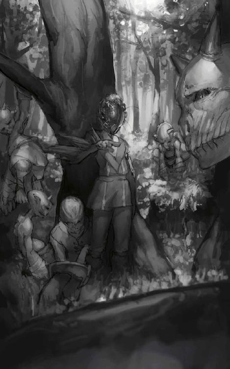

| バリアントナイト: 魔眼の騎士 (幻想迷宮ゲームブック) | |
| 松友 健 | |
| GENSOUMEIKYUU SHOTEN (2016) | |
幻想迷宮ゲームブック
バリアントナイト
――魔眼の騎士――
松友健
プロローグ
ほんの二ヶ月ほど前、公爵家が一つ、魔物の群れに不意の襲撃を受け、当主を含む多くの犠牲者を出して国中大騒ぎになった。その上、子供は娘だけで、跡取りとなる男子がいなかったものだから、宙に浮いた権利を巡ってさらに騒がしい事にもなった。
一七歳の少年・シンクルス＝カルレオンも、その話を知ってはいたし、全く無関係でもなかった。その騒乱を機に調子付いた魔物の群れがあちこちに出て、カルレオン家近くでも亜人の野盗集団が活発に動き出していたからだ。カルレオン家の跡取りとして、領内の治安は守らねばならない。しかし年老いた召使の報告は、完全にシンの予想外だった。
「ティロサーム公爵家の人間を引き取る!? 爺ちゃん、そんな用事で行ってたのか。初めて聞いたぜ」
「いえ、あくまで結果の話ですよ、坊ちゃん。昔、旦那様がお世話になった方の葬儀ですから向かわれましたが、その後、何やら込み入った話があったようでして。詳しくは帰ってから話すが、粗相の無いよう家の者には伝えておけ......と、連絡があったのでございます」
召使の言葉を聞いて、シンは稽古をやめて木刀をおろした。
「いったいどんな理由でこんな田舎に来るんだよ？ その家の事、俺は何も知らないぞ」
「四百年続いたこのロノクス国の、比較的初期に王家から分かれた由緒ある家系ですよ。亡くなられた当主様は学者肌の物静かな方で、悪い噂を聞いた事がありませんな。来られるのはそのご家族で、お迎えのため、ゼトクルス様が先ほど城を出られました。今ごろ林で合流なされている頃かと」
それを聞いて、シンの表情が一転明るくなった。
「え、兄ちゃんが!? よし、それなら俺も行くぜ。クーガーの手下でも出たら大変だからな」
クーガーという名の牛頭人が率いる大きな野盗集団が、一昨年ぐらいからカルレオン領周辺に出没していた。今までも何度か行商人が被害にあったが、公爵家の焼き討ち事件からさらに勢い付いてきた。この一月で、襲撃は三度も報告されている。
「いかに奴らでも、この城の近くにまでは来ないと思いますが」
「わかんねえだろ、念のためだよ！ じゃ、ひとっ走り行ってくる......おっと、その前に服だ」
今、シンはブーツと薄手のズボンしか身につけていない。庭の一角で素振りをしていた最中なので、上半身裸で汗まみれだ。木刀を片手に、シンはその場を走り去る。肩の上でげろげろと、喉を鳴らす蛙が一匹。掌ぐらいの大きさの薄緑の蛙に、シンは走りながら言葉をかけた。
「安心しろよ、置いていきゃしないから。公爵家の人間がお前と仲良くしないなんて、決まってるわけじゃねえからな」
シンの言葉に応えるかのように、蛙はいちいち喉を膨らませて小さく鳴いた。山間にあるこの城の塔の一つに入り、半ばにある階の一室に入れば、そこがシンの部屋である。
木刀を部屋の隅に転がし、ざっと体を拭くと、シンは衣装棚からお気に入りを取り出す。従者の類など呼ぼうともせず、慣れた手つきで着るのは襟の高い制服。カルレオン子爵家の軍服である。ただし色はワインレッド――指揮官用の物だ。壁にかけてある剣をベルトに吊るし、服と同色のマントを羽織って肩の上に蛙を乗せた。鏡を見て確認。少し寝癖はついているが、髪は短くしてある。左目の下から顎にかけて、帯状に火傷の跡のような痣が走っているが――これは生まれつきの物だ。隠せる物ではないし、隠そうと思った事もなかった。
「こんなもんかな。やっぱり騎士は鎧か軍服だぜ」
それに答えるかのように、肩の上で蛙が鳴いた。
ゲームを始める前に
この物語はゲームブックだ......といっても、どこかにあるゲームを原作としてノベライズ化したものではない。この本自体が一つの物語でありながら、一つのオリジナルゲームなのだ。
この物語の主人公も他の多くの物語と同じく、自身の名前と性格と背景を持っている。ただし、物語の人物でありながら、その行動の選択はもっぱら読者たるあなたに委ねられている。無論、あなたとは別人なのだから――あなたに絵画の心得があっても彼はデッサン一つできないし、あなたが彫刻の名人であっても彼には置物一つ彫る事はできない。だが行動のかなりの部分をあなたの意思に委ねている以上、彼......シンはあなたの分身であるといえるだろう。
舞台は架空の世界――我々とは異なる時間の軸にある異なる地球だ。我々が聞いた事もない地に、不可思議な魔法の力が息づき、あまたの魔物達が生息し、人間やそれに近い種族――亜人族と呼ばれる者達が生活している。そこで暮らす田舎貴族の少年・シンの生活が、今から変わろうとしている。本人が考えているより、遥かに大きく......。
この物語は必ずしもハッピーエンドで終わるとは限っておらず、結末はあなたの判断と運によって導き出される。このゲームの目的はより良いエンディングを目指す事と言えるのだが、それにはどうすれば良いのか、そもそも何をもって『良い』と判断するのか......それは実際にゲームを進め、各自で判断してもらうしかない。
０ ゲームブックの読み方
この本は一見、小説の形式をとっている。しかし小説には違いないのだが、その内容は場面ごとに一、二、三......と数字で区切られている。これはゲームブックと呼ばれる本の大概で共通する形式で、この番号で分けられたそれぞれを「パラグラフ」と呼んでいる。幻想迷宮ゲームブックの場合、それぞれのパラグラフの終わりは目印となる▲マークが記されている。
普通の小説ならば最初の一から順番に読んで行くのだが、ゲームブックは大概において異なる。各パラグラフには、次に読み進むべき別のパラグラフへのリンクがあるはずだ。選択肢の形で、複数のパラグラフが提示されている事も多い。
そのように書かれたパラグラフから、読者は次に自分が読むパラグラフへ進み、物語を進行させていくのだ。
幻想迷宮書店のゲームブックは、パラグラフ番号や選択肢をタップすれば、次に読むべきパラグラフへ移動するようになっている。よって読者の方は、それをタップしていけば良い。
なお、目次を見ればわかる事だが、どのパラグラフにも直接移動できるような機能が用意されている。これも利用すると良いだろう。
１ ゲームに必要なものと準備
鉛筆（又はシャープペンシル）、消しゴム、サイコロを二個、そしてゲームの進行とシンの状態を記録するため、幻想迷宮書店が配布している記録用紙を印刷して欲しい。
なお、記録用紙を無しで始める事も可能だ。戦闘は全て勝利した事にし、アイテムや各種数値・フラグの記録は全て「有る・足りる」事にすれば、何一つ問題は無いだろう。こうすればサイコロも消しゴムも筆記用具も要らないので、手間はずいぶん省ける。
極論すれば、必要な物は前向きな姿勢だけだ。
２ 戦いにおける「強さ」とシンの初期状態
主人公・シンには、戦闘その他における強さを示す三つの能力がある。
戦力値は、敵を攻撃し打ち倒す力を表す物だ。能動的な行為の判定に使われる事もある。
防御値は、己の身を守る技術である。敵の攻撃や罠を避けるために使われる。
体力値は、スタミナやタフネスを表す。行動力でもあり、様々な場所を巡る役にも立つ。
また、戦闘のために使う値があと二つある。
一つは撃破値で、これは装備している武器で決まる。
もう一つは耐久回数で、敵の攻撃に何回耐えられるかを表す値だ。
それではシンの強さを明確にしておこう。
戦力値・防御値・体力値は、全て４点であるところから始まる。
そしてサイコロを２個ふり、片方を選べ（大きい方が有利だが、好きな方で良い）。その選んだ値を、三つの能力値へ振り分けよ。ただしどの能力値も６が最大値である（７以上にはできない）。
なお、この最大値（６）はあくまで開始時だけのものだ。ゲームが始まった後、各数値を増やすよう指示があった時は、合計が７になろうが70になろうが構わない。耐久回数は体力と同じ値である。
また、武器として、剣をひと振り持っている。この剣は撃破値３である。
以上の数値を記録用紙に記入すること。
３ 戦闘方法
敵と戦闘になる時、相手の強さは次のように表記される。
バブリースライム 戦力値10 撃破値２ 防御値９ 耐久回数４回
これら数値を参照しながら、次の手順で戦う。
- １ 攻撃はシンから始まる。サイコロを２個ふり、出た目にシンの戦力値を加える。合計が敵の防御値以上なら攻撃は成功。それより低ければ失敗となる。
- ２ 攻撃が成功したなら、敵の耐久回数とシンの撃破値を比較し、もしシンの撃破値が敵の耐久回数以上だったなら、その時点でシンの勝利となる。シンの撃破値よりも敵の耐久回数が上だったなら、敵はまだ死なないが、耐久回数を１だけ減らす。これによって敵の耐久回数が０になった場合も勝利である。攻撃が失敗したなら、敵は負傷しないので、何も減少しない。
- ３ まだ敵を倒せなかったか、他の敵が残っているなら、次は敵が攻撃する。サイコロを２個ふる。出た目にシンの防御値を加える。合計が敵の戦力値以上なら攻撃を防げる。だがそれより低ければ敵の攻撃は成功したことになる。
- ４ 敵の攻撃が成功した時、シンの耐久回数が敵の撃破値以下だった場合、シンは倒され、敗北する事になる。攻撃は成功したが、シンの耐久回数が敵の撃破値を上回っていたなら、シンの耐久回数を１だけ減らす。これによってシンの耐久回数が０になった場合も敗北である。攻撃が失敗したなら、もちろん何も減少しない。
- ５ シンがまだ倒されていなければ、手順１へ戻り、反撃する事ができる。
こうして互いの耐久回数を削り、これが先に０となるか、相手の撃破値以下になった段階で攻撃を受けた方が敗北する。
例を出してみよう。シンの能力は、次のように仮定する。
シン 戦力値５ 撃破値３ 防御値５ 耐久回数５回
敵は先の例と同じだ。
バブリースライム 戦力値10 撃破値２ 防御値９ 耐久回数４回
この場合、シンの攻撃はサイコロ２個をふって３以下なら失敗だが、４以上を出せば成功し、バブリースライムの耐久回数を１ずつ減らしていける。そしてバブリースライムの耐久回数が３以下の時に攻撃を成功させれば倒せるので、２回目の攻撃成功で勝利となる。
もしシンの武器が撃破値４なら、１回目の攻撃成功で勝利......一撃必殺である。より撃破値の高い武器を入手できれば、一気に戦闘が有利になるのだ。
一方、シンの防御はサイコロ２個をふって５以上を出せば成功するが、４以下なら失敗し、自分の耐久回数を１ずつ減らさねばならない。そしてバブリースライムの撃破値が２なので、シンの耐久回数が２以下の時に攻撃を受けると倒される。つまり防御に４回失敗すると敗北してしまうというわけだ。
敵が複数の場合はもう少し話が面倒になる。手順３は戦っている敵の数だけ繰り返さねばならないからだ。当然、負傷の可能性はそのぶん高くなってしまう。
勝ち目が薄いと判断したならば逃げる事もできる。ただし逃げる事ができると書かれている場合にしか逃亡はできないし、１～５の途中では逃げられない。シンと敵の攻防を一通り終えた後、次のシンの攻撃を始める前に判断すること。
逃げるためにはサイコロを１個ふること。生き残っている敵の数が１匹なら４～６、２匹なら５か６、３匹以上なら６を出せば逃げられる。生き残っている敵の数で判断するので、敵の数を減らせばそれだけ逃げ易くはなる。逃げられなかったなら観念して戦え。
ただし攻防が一通り終わる度に、逃亡を試みる事ができる。
なお、戦闘が終わるとシンの耐久回数は体力と同じ値まで回復する。このゲームは、戦闘の負傷を終わった後には持ち越さないのだ。よって耐久回数を回復させる指示はゲーム中には無い。これを忘れると成功の見込みがまず無い最低のゲームになるので、注意されたし。
４ 能力
ゲームが進むと、シンは様々な技を身につけていく事になる。それをここに記録しておくこと。入手した能力の欄に、その名前や効果を自分で分かるように書いておくと良いだろう。
ただし、一つの戦闘で使う事ができる能力は一つだけだ。戦闘が始まったら、敵の能力値を見てからどの能力を使って戦うかを選ぶ。戦闘が終わるまで、使う能力を変える事はできない。
５ 所持品
何かを手に入れたら、忘れずにここへ記録すること。
６ 進行表
事態の進展を記録しておくのが、この欄である。あちこちで何かする度に、この欄のどれかを１増やすよう指示があるはずだ。何も記入されていない所は０として扱う。
７ フラグコード
シンの行動の結果を記録しておくのがこの欄である。ゲームの途中で二桁の数字を記録するよう、頻繁に指示があるはずだ。それを忘れないよう記録しておくこと。
文中で進行表やフラグコードの値を問われた場合、適する項目へ進む事になる。当て嵌まる条件が二つ以上ある場合、文のより前にある指示を優先すること（「Ａが有れば一、Ｂが有れば一四へ進め」と指示された時、ＡもＢもあれば一へ進む）。
冒険開始時のシンは、武器以外の所持品、能力や進行表、フラグコードは白紙の状態である。
これらの準備が完了したらいよいよ冒険開始だ。それでは一へ進め。
一
シンは自室を出て厩へ向かった。元気な馬を一頭引っ張り出し、その背に乗る。いまいち言う事をきかない馬の背で、左右にふらふらと揺られながら門へ向かった。門番達が馬上のシンを見上げる。
「相変わらずなお手並みですな......坊ちゃんもお出迎えに行くんですか？」
「おう、ちょいと行ってくる。悪いけど開けてくれ」
シンがそう言うと、門番達は引きとめようとせずに門を開けてくれた。細めに作られた坂道を下りて麓の林へと向かう。ここを抜ければ一番近くの村、さらにその向こうが街道だ。馬を急かして林道を行く......が、途中で道を逸れる馬の足跡を見つけた。林の中へ分け行っているが、その方向には何も無いはずだ。足跡を追ってみるなら二九六へ進め。おかしな事には首を突っ込まずに先へ行くなら一五六へ進め。
二
○進行表Ｆを１増やす。
廊下を歩いていると、アーブが鳴き出した。近くから香ばしい匂いが漂ってくる......食堂の奥にある厨房からだ。厨房を覗いてみると、一人のメイドがオーブンで何か焼いている。テーブルには見事なアップルパイが大小二つ置いてあった。
「へえ、美味そうだな。これは？」
「ふふ、皆さん、お腹が空く頃かと思って。我ながら上手くできました。小さい方は、この家の坊ちゃんへ直に渡す物ですから、つまんじゃダメですよ」
「へえ、わざわざ別にね」
「はい。印象が良ければ、いろいろと聞き易いし......」
「俺に聞く事？ わざわざ機嫌とってまで、何を？」
シンは首を傾げる。ぎょっとして振り向いたメイドは――村へシンを訪ねて来た少女、マヤナだ。驚くシンの前で、彼女は口を押えながら、じりじり後ずさる。そのまま行かせるなら三一二へ進め。
彼女を引き留めるなら、シンは咄嗟に彼女の手を掴む。彼女はびくりと身を震わせ、困り顔で立ち竦んだ。このまま何をしに来たのか訊くなら一四へ、手の力を緩めてやるなら六二八へ進め。
三
急にアーブが鳴きだした。何事かと思って辺りを見渡したシンは、向こうの路地に入っていく娘を見つける。アーメントとの初遭遇前に訪ねてきた少女、マヤナだ。彼女を追ってみるなら一七八へ進め。その気が無ければ進行表Ｂを確認せよ。その値が０なら二〇二へ、１～２なら三〇〇へ、３以上なら一〇五へ進め。
四
敵のとどめがシンを捉えた。意識が黒い闇の中へ沈む。もはやここまでだ......。
始めからやり直すこと。ただし、新たに能力値を決めた後、戦力値か防御値を１点増やす事ができる。これにより７以上になっても構わない。
もしここに来たのが２回目ならもう１点、３回目ならさらにもう１点......と、ゲームオーバーになる度に加算できる点数は増えていく（どちらを何点上げるかは任意に決めて良い）。
次は幸運の女神が微笑む事を祈る。
五
単眼小人はシンの剣を並べて眺める。
「うむウむ。これを全て鍛え直してやロう。一週間後に取りに来い」
「あ、悪い。そこまで時間があるわけじゃねぇんだ」
シンが言うと、小人は目に見えて不機嫌になった。
「そウか。お前にも都合があるから仕方無イな。オレも都合がでキた。丸一日昼寝するから起こすナよ」
そう言ってシンを部屋から押し出し、扉に鍵をかけてしまう。六八一へ戻れ。
六
吹き荒れる吹雪に逆らい、シンは剣を構えた。コキュートスが水に浮かぶ氷を蹴とばしながら、大股で迫る......が、凍気を押しきって割り込む者がいた。甲冑が半ば凍ろうと物ともせず、コキュートスへ斬りかかる。誰であろう、兄・ゼトクルスだ。
「シンはやらせん。俺との勝負をつけてからにしてもらおう」
「どけ！ 貴様なんぞに用は無いわ！」
吠えるコキュートスの周囲で、川面の氷が軋む。兄の加勢は嬉しいが、こいつの相手は危険だ。共に戦おうと、シンは兄の隣へ走る。
「兄ちゃん、俺も一緒に......」
だが、ゼトクルスは肩越しに怒鳴った。
「来るな！」
思わず足を止めるシン。ゼトクルスの視線は再びコキュートスへ戻る。
「こいつの標的は、シン......お前だ。間合いに入れば、なりふり構わずシンを狙いかねん。ここは俺に任せろ」
「人間ごときが！ このコキュートスの邪魔をするか！」
吹雪の中、荒れ狂う獣のごとく襲い来るコキュートス。鉄の壁のごとく受け止めるゼトクルス。激しく斬り結ぶ二人......生半可な体力では立ってすらいられない吹雪の中、両者は互角に戦っていた。だが消耗が段違いの双方には、次第に優劣の差が生じる。眼に見えてゼトクルスが劣勢に追い込まれるのに、そう時間はかからなかった。
「ここまで俺と戦えたのはお前が初めてだ。誉めてやる、褒美を受け取れ！」
コキュートスが吠え、渾身の一打を叩きつけた。刃がまともにゼトクルスを捉え、鎧を切裂き、噴き出した血が吹雪の中で凍りつく！
勝負はついた。
ゼトクルスの剣が、コキュートスの胴体を貫いていたのだ。コキュートスが最後の一打を繰り出す時、ゼトクルスもまた捨て身の一撃を打っていたのである。劣勢の己が持つ数少ない優位、装甲の厚さに任せて......だ。ゼトクルス渾身の踏み込み速度のせいもあり、コキュートスの一撃は、致命傷には皮一枚程度の差で至らなかったのである。
「シンを討つため、俺を少しでも早く倒したかったのだろうが......それが隙に繋がったな。持久戦を続けるだけで、お前の勝ちは動かなかったものを」
ゼトクルスのその言葉が、聞こえたかどうか。コキュートスは血を吐いて倒れ、川の深みに転がり込んで行く。その姿はすぐに見えなくなった。だがゼトクルスも浅瀬の中で膝をつき、己の血で川を染めている。
「兄ちゃん！」
思わず駆け寄るシン。ここまで兄が追い込まれるのを見たのは初めてだった。兄に肩を貸し、川から上がる。そこで兄は、シンから離れた。
「ここまででいい。このザマでは、敵の大将は任せるしかあるまい。お前にだ、シン」
兄の容体が心配ではある。が、兄の言葉の意味がわからぬシンではない。
『おい、これ拾ってきたぞ』
アーブが川から這いだし、螺旋と格子が組み合わさった紋章を引きずってきた。トーテム１を所持品欄に記録せよ。
「わかった。行ってくる」
そう言うしかない。兄が頷いたのを見て、シンはアーブを拾い、再び砦を目指す。七六へ進め。
七
その時、急にアーブが鳴き出した。今まで聞いた事の無い、震えるような声だ。それとともに、体の奥底から、押し込められていた物が沸いて出てきた！
シンの頭から飛びだす物があった。手首から指先ぐらいまでの長さの......触角である。昆虫のような触角が二本、シンの頭から生えていたのだ。さらに触角の脇から、髪を押しのけて浮かび上がる物がある。シンの目よりも一回り大きい、透明感と光沢をもつ半球であった。それが出現した時、シンの視界が急に広がった。その半球もまた眼――大きさを別とすれば、昆虫のごとき単眼なのだ。
シンの中に、未知の力が駆け巡る。細胞の雲に稲妻が走り、神経の森に烈風が吹く......！ 戦力値、防御値、体力値を、全て１点ずつ増やせ。
「どういう事だ!? その力は？ 俺達"アーメント"に似ている？」
それが男の一族の呼称なのだろうか、驚愕の声をあげる獣人。一瞬、戦闘は完全に止まった。直後、獣人の背に電光が炸裂し、煙と絶叫をあげさせる。この隙をついて、魔法戦士でもあるアーセルが破壊の呪文を放ったのだ。四三へ進め。
八
○進行表Ｆを１増やす。
その日の夜、シンとアイラはアルクイン家へ向かった。唐突な申し出に戸惑いながら、二人は少数のお供とともに、貴族にしては小さめの屋敷に着く。中からは陽気な音楽が聞こえており、玄関ではローナ自らが出迎えてくれた。館を見れば、何組かの先客がいる。
「いらっしゃい！ アイラちゃん、最近、学校でも考え事が多いから、何かショックな事でもあったのかなって思ったの。だから楽しい事があったらいいかなって思って、来てもらったんだ。他のお客さんはパパのお友達とかお得意さんだけど、みんないい人だよ。二人も楽しんでね。私もすぐ行くから」
侯爵から聞いたアーメントの情報は、確かに、アイラへ少なからぬ動揺を与えてはいた。ローナはそれを感じ取っていたのだ。
「うん......ありがとう、ローナ」
アイラに礼を言われ、ローナがくすぐったそうに笑う。
進行表Ｈが２以上で、かつ餅の箱を持っているなら四九七へ進め。そうで無ければ一九三へ進め。
九
最後の戦いを、荒野にいる兵士達も見ていた。荒野を大歓声が包む。アーメント達は敗北を認め、ある者は逃げ出し、またある者は降伏した。人間達はシンの名を連呼する。
やるべき事をやった。だから認められた。
最良の手段と結果ではなかったかもしれない。だが今日という日をいつまでも誇ろうと、シンは荒野を見おろしながら誓った。
アメジストとジェミニィを持っていて、フラグコード15、28、37、67が全てあれば三四五へ進め。
フラグコード10～19が５個以上あるなら、アメジストを持っていれば五九五へ、持っていなければ二七一へ進め。
フラグコード30～39が４個以上あり、フラグコード37がある場合、フラグコード87も有るなら六一八へ、それは無ければ一五四へ進め。
フラグコード20～29が５個以上あれば三九六へ進め。
ソルゲインを持っていれば六一六へ進め。
ここまでの条件に当てはまらない場合、フラグコード37があれば五七八へ、無ければ六八五へ進め。
一〇
「私達の目的は、私達の国をうち建てる事。今、暗躍しているのは下準備......下地･基盤を流用するため、この国を打ち倒そうと考えているんです」
真剣な、深刻な顔でマヤナが話す。一国の打倒・征服......子供向けの作り話みたいで、シンは少なからず突拍子の無さを感じた。
「無人の荒野で好きにしろって話だな」
「無からの創造ができない事を、自らは認められないんです。歪んでいます......悲しい事ですが。それをやめさせるため、協力してもらえませんか」
マヤナの言葉はあくまで真剣だった。この国の騎士として、犯罪を防ぐ事にシンとて異論は無い。
「わかった。協力しようぜ、お互いにな」
シンが答えると、マヤナは明るい笑顔を浮かべ、シンの両手を握った。
「何かあったら連絡します！」
マヤナはシンに別れを告げて去る。シンも屋敷へ引き返す事にした。進行表Ｂを確認せよ。その値が１～２なら三〇一へ、３以上なら一五〇へ進め。
一一
○フラグコード66を記せ。
「アイラが危険なのは、本当、良くねえんだけどな」
シンが言うと、アイラはシンの服をぎゅっと握った。
「じゃあシンが危険なのはいいの？ それに私......自分の運命をここまで変えたのが何なのか、知りたいし、見てみたい！ シンや他の人と会えた事、素敵な事だと思っているけど......それでも！」
シンは彼女の手を、そっと握った。
「わかった。生きるも死ぬも、一緒だぜ」
翌日、近くの村でアイラに山中で動けるような服を買う。山菜取りの娘さんみたいな恰好になったが、アイラは文句一つ言わなかった。
それから十日ほど。二人は道無き山中を彷徨う。アイラは明らかに疲労していたが、弱音だけは決して口にしなかった。そしてついに、二人は目指す物を見つける。四七九へ進め。
一二
○フラグコード70を記せ。
ポケットから、シンは宝石を一つ取り出す。硬貨ではかさ張る金額を持ち歩く時に、旅人や冒険者などがよく使う手段である。
「こいつでどうだ？ 足りるんじゃないか」
渡された小粒の宝石を、男達はまじまじと眺める。低いうなり声を漏らしながら、だ。
「ど、どうやら......結構な家にお仕えしてなさるらしいな」
「そうは見えなかったが。あ、いや、確かに受け取りましたぜ」
男達の態度には、恐れさえ窺えた。顔の痣や振る舞いから、シンが貴族の一員には見えないだろうという事ぐらい、自身もわかっている。それが簡単に大金を出したのだから、シンの背後によほど有力な商家か貴族家があると思ったのだろう。
二人が逃げるように姿を消した後、追われていた中年女性が涙ながらに礼を言う。
「ありがとうございます。しかし、そこまでしていただいても、どうやって返したものか......」
「あー......まぁ、返せるようになったらでいいよ」
そんな日は来ないだろう、と思いながらも「恵んでやる」というのがあまり良くない気がして、シンはとりあえず答えておいた。マヤナの事を思い出し、周りを見てみる。だが彼女の姿はもうどこにも無かった。進行表Ｂを確認せよ。その値が０なら二〇一へ、１～２なら三〇一へ、３以上なら一五〇へ進め。
一三
亜人兵だけの時を狙い、シンはバッジをつけて正門へ向かう。シンの顔を知るアーメントが窓から見るかもしれないので、念のためにマントのフードを被っておいた。
小鬼騎士に片手をあげて挨拶すると、相手ものろのろと敬礼を返した。黙ってそのまま通り、正門から中へ入る。五〇〇へ進め。
一四
○フラグコード50を記せ。
「いったい何を調べに来たってんだ？」
「し、シン君がこの家に引き取られたと聞いたから......。お爺さんとか、義理のお兄さんとかが、どんな人なのか、それをシン君がどう思ってるのか、知りたかったんです」
腕の力を緩めず問うシンに、マヤナは恐る恐る答えた。それを聞いて、シンの口調に苛立ちが混じる。
「義理？ 確かに似てねぇし、俺がこの家の長男だけどよ......そりゃ母親が違うってだけの話だ」
「じゃあ両親が違うって事ですよね？ だって父親も――」
「何を言ってるんだ!?」
驚きと怒りで、シンの手にさらに力が籠る「きゃっ！」と悲鳴をあげ、マヤナがシンを突き飛ばした。意外にも、大の男ぐらいの力がある！ ほとんど不意をつかれた形で、シンは壁に体を強く打ち付けた。
「あ！ ご、ごめんなさい」
予想以上に痛手を負ったシンを起こそうとし、すぐに状況を思い出して、マヤナは頭を下げてから逃げ出した。ふらつく頭をふって立とうとするシン。
このままマヤナを放っておくなら三一二へ進め。
彼女を捕まえようと思うなら、サイコロを２個ふり、出た目に防御値を加えよ。合計が12以上なら、痛みから立ち直る事が可能だ（四六三）。11以下ならば手は届かず、マヤナは厨房の裏口から逃げて行く。三一二へ進め。
一五
ここで時間を少し遡る。
アイラの率いる部隊に気づいたクランの兵は、いないわけではなかった。彼らが迎撃に出ていればそこで戦闘になり、アイラがシンとインフェルノの戦いに横やりを入れるのは間に合わなかっただろう。
しかしその部隊は動かなかったのだ。率いる部隊長の判断によって。
その部隊長、半人半草のアーメント・セラジンラーは、盆地を見下ろす林の影に部隊を潜めていた。その目はシンを追っている。
「シンクルス、数段腕をあげたようだな......」
「隊長はあの小僧と戦った事があるんですよね」
副隊長の小鬼騎士が訊くと、アーメント・セラジンラーは頷いた。
「コキュートス様に同行した時にな。あの時は九割がた俺が勝っていた。ツキが無かったせいで、まぐれ当たりを受けて、不覚をとってしまったが......。だが超再生能力を持つ不死身の俺がこうして復活した事を、シンクルスの奴も知るまいよ」
「さすが隊長。それで、いつ攻めます？ ワームドラゴンのラバンスが突破されちまいましたけど」
盆地を双眼鏡で窺う小鬼騎士の報告を聞き、アーメント・セラジンラーは腕組みして考える。
「つまり、シンクルスは我がクラン最強のタルタロス隊にぶつかるのだな。もはや奴の死は確実、俺が出るまでも無い。ならば我々の仕事は残敵の掃討になる。敵を逃がさないのも重要な任務だ。人間どもが敗走を始めるまでここで待機せよ。シンクルスが生きているうちは絶対に動くな」
うんうん頷く小鬼騎士。双眼鏡で覗いたまま「おや？」と呟く。
「なんか、向こうの林の中を移動してる兵士達が見えましたよ。あれ、人間かも。インフェルノ様がいるあたりへ行きそうですね」
だがアーメント・セラジンラーは叱咤する。
「絶対動くなと言ったばかりだぞ。プロの兵士は"かも"程度で安易に段取りは変えん。もし敵でも、インフェルノ様ならどうにでもするだろう。あの人も最強の一人だからな。嫌な人だが」
「すぐ味方を巻き添えにしますからね。俺の兄弟もそれで死にました。捕虜の女を気前よくくれる事以外、良い所の無い人ですよね」
小鬼騎士が言うと、周囲の兵士達がいっせいに頷いた。
この部隊が盆地での戦闘に参戦しなかったのは、まぁ結果論の話である。では時間を戻して六八二へ進め。
一六
○フラグコード84を記せ。
茶にルークから貰った粉を小さじ一杯入れる。あれから何度か使ってみたが、細かい味のわからないシンにも、茶は確かに美味くなっているように感じた。と、側に座っていた商人が話しかけて来る。
「ほう、その粉末は私の故郷の特産で、他所では滅多に見ないのですが。少し、わけてもらえますか」
なかなか威厳のある、初老の男だ。シンが袋を渡すと、男はそれを入れて茶を一口だけ飲んだ。男の厳めしい顔が翳り、小さなため息が漏れる。
「あの......これが何か？」
尋ねるシンに、男は自嘲気味に微笑んだ。
「貴方と同じくらいの歳の息子がいたのですが――あの子も、これが好きだったものでね。とてもよくできた子でした。でも、私が愚かだったばかりに......。居なくなってから後悔しても遅いのですが、人間、己の至らなさは本当に御し難い物です」
男の目に、微かに涙が滲んだように見え......シンはそれ以上、聞く事ができなかった。二九七へ進め。
一七
○進行表Ａを１増やす。
雑兵を切り伏せたシンが頭上を見上げると、樹上の怪人はシンに狙いをつけていた。だが直後、電光が走って怪人を撃ち、地面に叩き落とす。アーセルが呪文で攻撃したのだ！ しかし詠唱の隙をつき、野盗の一人が彼に斬りつけた。迸る血しぶき......駆け寄ろうとするシンへ、アーセルは傷を抑えて叫ぶ。
「構うな！ 奴を倒せ、シン！」
怪人が身を起こし、樹上へ戻ろうとしている。シンはそちらへ走った。二八九へ進め。
一八
頭の眼が金の光を灯した。触角が振動し、奇怪な音が鳴り響く。鳴り響く死の音色......耐えられない者にとって、これは確かな死の宣告。
金眼の欄に、この能力の概要を記入すること。この太陽の審判を使えば、シンの体力値より耐久回数の低い敵は、戦闘開始直後に倒される。ただし、この判定は戦闘開始前に一度だけ行われ、交戦中のダメージで耐久回数が低下した敵には適用されない。
この力を前にして、なおシンと戦う事ができるのは、同等以上の体力を持つ物のみ。命弱き有象無象が何十何百と群れようが、土俵に立つ事すらできないのだ。
これを記録したら一七六へ進め。
一九
頭の眼が緑の光を灯した。触角にも同色の光が灯り、シンの周囲を意思があるかのごとく動く。
緑眼の欄に、この能力の概要を記入すること。この力・戦女神の盾を使えば、シンが敵の攻撃を防御する事に成功した時、敵へダメージを与えてよい（撃破値は体力値の半分（端数切上）である）。この力はシンの攻撃とは別個に動く、迎撃用の防衛能力なのだ。
これを記録したら六六二へ進め。
二〇
「シンクルス殿！ 助太刀いたす！」
そう叫んで、アムカル家の騎士が舞台に登って来た。進行表Ｋの値と同じ回数、敵の攻撃が当ってもダメージを受けない（騎士達が身代わりになってくれるからだ）。ただし能力は使えない。
クーガー 戦力値15 撃破値３ 防御値15 耐久回数７回
※敵は二刀流で攻撃する。クーガーの攻撃は２回連続で行うこと。ただし１回目の攻撃を防御できたなら、２回目の攻撃は行わない。
勝利／敗北
二一
○フラグコード31を記せ。
「そこまでだ。お前達、話はこっちに聞かせてもらおうか」
アーセルは男達に呼ばわりながら、わざとマントを翻した。描かれたアムカル侯爵家の家紋を見て、男達は怯む。一人がペッと唾を吐いた。
「フン、まだ青二才じゃねぇか。お家の名前でエラソウに。ま、ガキだから見逃してやる」
そう言うと、二人して急いで路地へと消えた。溜息一つ、アーセルは老人へ振り返って話しかける。
「お爺さん、この通りで許可なく営業する事は禁じられている。許可証はあるか？」
老人は怖々と首を横に振る。
「仕方ない。罰金を出せるか？ 出せないなら、貴方も留置所へ来てもらう事になる」
アーセルが言うと、老人は諦めた顔でのろのろと店をたたみだした。側で子供が腹の虫を泣かせながらぐずる。無許可の営業も、食い詰めてやった事なのだろう。
「爺さん、この商品全部買うぜ」
そう言ってシンは財布を投げて渡し、老人が品物を詰めた風呂敷を横から担いだ。中のボロヤカンや箒がぶつかって音を立てる。それにかき消されそうなか細い声で、老人と子供は土下座同然に頭を下げて何度も礼を言った。ため息をつきながらアーセルが罰金を徴収し、残った金を老人に返す。ぺこぺこと頭を下げて立ち去る彼らを見送りながら、アーセルはシンを肘でつついた。
「あまり良い事じゃないぞ、シン」
アーセルが報告のため警備兵の詰め所に行くというので、シンは別れて帰る事にした。買ったガラクタは屋敷の使用人達にくれてやった。進行表Ｂを確認せよ。その値が０なら二〇一へ、１～２なら三〇一へ、３以上なら一五〇へ進め。
二二
廊下の窓から通りが見える。と、そこに見覚えのある顔を見つけた。アーセルと市街地へ行った時に出会った少年、ルークだ。行ってみるなら三三八へ進め。
その気がなければ、他所へ行く事にする。進行表Ｂを確認せよ。その値が１～２なら三〇〇へ、３以上なら一〇五へ進め。
二三
倒れたシンに、アーセルは剣を突きつける。
「ここまでだ、シン。観念するんだな」
「俺は......クランをこのままにしておけない」
呻くシンに、アーセルは厳しい視線を向けた。
「駄目だ。僕に勝てないようでは、結果は知れている」
そう言ってシンを掴んで立たせる。とどめを刺す気は......無いようだ。
「取り調べは受けるし、監視下には置かれる事になるだろう。でも、無暗に命は取らせない。それは......それだけは、約束する」
目を伏せて、しかしはっきりとアーセルは告げた。
その後、彼は言葉通り、過激な処分を求める声に対しシンの弁護へ回る事になる。だがシンが捕えられた事と、クランとの決着の道が閉ざされた事には変わりが無い。よって物語は、ここで幕を閉じる事となる。四へ進め。
二五
そろそろ学校を出るか......そう考えながら廊下を一人歩くシン。そこへ青いドレスの少女が角から出てくる。進行表Ｋが６か、サファイアを持っていれば三九八へ進め。どちらにも当てはまらなければ四九〇へ進め。
二六
花壇に様々な花が咲いていた。用務員なのか園芸師なのか、花壇では麦藁帽をかぶった初老の男が一人、花の手入れをしている。彼はシンに気づくと、穏やかな笑顔で汗をぬぐった。
「少しばかり、花を眺めていかんかね」
そうするなら五四六へ進め。その気が無いなら他所へ行くこと。進行表Ｂを確認せよ。その値が１～２なら三〇〇へ、３以上なら一〇五へ進め。
二七
「わかった。一度、行ってみる。駄目かどうか、行って判断してもいいだろ」
『あかんならその時の事だな』
シンとアーブが言うと、ルークは大喜びでシンの手を握った。
「ようこそ、二人とも！ 今日からずっと一緒だよ」
そう上手く行くかどうか、シンとしては疑わしく思っている。だがここまで言ってくれる者がいるのだ。一度、身を寄せてみるのもいいだろう......。三五二へ進め。
二八
シンが断ると、別の若い騎士が名乗りをあげた。二人の試合をシンも見守る――が、アーセルは危なげなく相手の剣を叩き落とした。正確で堅実、派手な技を一切使わない剣技だった。六八三へ進め。
二九
シンの頭部にある『眼』の中が輝く。戦力値、防御値、体力値を、全て１点ずつ増やせ。
頭の奥の朧な何かが、声なくシンへ問いかけている。それとともに、頭部の眼の光が色を変えた。どんな色に輝き、どんな力を得るかを選び、指示された項目へ進め。ただし、既に取得した色は選べない。
赤――敵をねじ伏せる力（五〇九）
青――目にも止まらぬ速さ（四七七）
緑――攻撃を見切る技量（一九）
紫――頑強な体（五八七）
金――無慈悲な殺傷力（五一五）
銀――異能力を阻む結界（一〇一）
三〇
シンが断ると、マレットはがっかりした様子を隠そうともしなかった。気まずく思った時、兄が話しかける。
「当主となる身、すなわちカルレオン家の将です。一兵士の自分と違い、みだりに剣を抜く事はありませぬ」
「うむ、軽率な事を言いました。気を悪くなされるな。騎士隊長のゼトクルス殿が出てくださるだけでも、この闘技場にとって過分な栄誉です」
マレットが言うと、商人も頷いた。
「そうですね。他の騎士団で、隊長が出てくれる所などありません」
二人に一礼し、シンとゼトクルスは退室する。
「すまねえな、兄ちゃん」
「気にするな。見世物が要るなら俺がやる」
シンにそう答えるゼトクルス。その言葉で、兄がなぜこの闘技場で試合に出るのか、シンにはわかる気がした。世話になっている家の名を少しでも上げるためだろう......兄は本来、名声に興味を示す男では無い。進行表Ｂを確認せよ。その値が０なら二〇一へ、１～２なら三〇一へ、３以上なら一五〇へ進め。
三一
「目的は果たした。引き上げるぞ」
コキュートスが冷酷に告げる。その後ろには、他の隊員３人の影があった。
「侯爵邸の警備や間取りについては、既に調査済みだった。貴様が割って入ったおかげで思った以上に手間取ったが、結果は変わらん」
シンへ言うと、コキュートス達は渡り廊下から飛び降りる。階下にいた雑兵達と合流すると、彼らは壁を破って逃走した。屋敷の外からときの声が聞こえる。街の兵が応援としてかけつけたらしい。
疲れた体を引きずり、シンも侯爵邸の庭へ出た。五八二へ進め。
三二
戦いは終わった。いや......そのはずだった。しかし、アーブが鳴き声をあげる――まるで悲鳴のように！
「アーブ、どうした!?」
『なんだこのパワー！ 桁外れだ！』
その声も消えぬまに、今度は本物の悲鳴があがった。ギルハースが血を吐く。その背に誰かの腕が突き刺さっていた！ その誰かが、竜骨の陰から姿を現す。その男は――タルタロス隊隊長、コキュートス。
だが、その姿はシンの知っている物と異なっていた。頭の角は二本。鎧のごとき黒い甲殻に加えて、体の各所を丸い甲羅が守っている。その両腕には、巨大な牙のごとき爪が生えていた。
タルタロス隊の一人、ヘルの特徴が体に上乗せされている......。
「貴方様が敗れた以上、クランはここで潰える。となると首領はもはや不要。ならばギルハース様......責任をとるついでに、我が力となっていただこう。奴を、シンクルスを、地獄の道連れにするために......！」
コキュートスが腕を引き抜く。盛大な血飛沫の中、ギルハースの臓器が引きずり出された！ 肝臓であろうか......コキュートスは、倒れるギルハースを一瞥もせず、その臓器を獣のように貪り食らう。
吐き気を催す地獄絵図の中、コキュートスの肉体がさらに変化を起こした。頭部の角が三本となる。肩が異様に盛り上がり、眼の無い頭となって牙を剥いた。アーブが怯え、シンの背中へ隠れる。
『狂っとる......。自分と同格の、しかも相当に強力なアーメントを二体。体への負担を度外視するにも程がある。たぶん今日中の命だぞ』
「構わん――むしろそれでいい。初めて会った時、俺は貴様の息の根を止められたはずだ。だが判断を誤ったが故にこの有様......。失態を犯したのは俺！ 部下を死なせたのも俺、組織の最後を招いたのも俺！ ならばその清算をするのも俺だ！ シンクルス！ 貴様の首以外、もはや何一つとして要らん！」
凍気が放たれ、嵐となった。吹き荒ぶ氷地獄の中、迫る敵の影が否応なしに戦慄を走らせる......。四三九へ進め。
三三
ヘルの体を受け止めたのは、いつの間にか側へ来ていたコキュートスだった。
「馬鹿な、ヘルが倒されるとは......。シンクルス、貴様っ！」
怒りに震えるコキュートス。だが屋敷の外からときの声が聞こえる。街の兵が応援としてかけつけたらしい。コキュートスは無念に歯噛みしながらも、シンを憤怒の視線で一瞥する。
「だがシンよ、アムカル侯爵は我らが討ち取った。しかし人間なんぞとヘルの命では到底釣り合わん......この怒り、私は忘れんぞ！」
シンへ言うと、コキュートス達は渡り廊下から飛び降りる。階下にいた雑兵達と合流すると、彼らは壁を破って逃走した。アーブが前足を組んで考え込む。
『間に合わなかったか。敵はあらかじめ、ここの事をよほど調べておったのだな』
そうだとしても、後の祭りだ。疲れた体を引きずり、シンも侯爵邸の庭へ出る。五八二へ進め。
三四
「ここは既に包囲した。武装せず、速やかに出てこい。抵抗しなければ命は保証する」
アーセルがそう呼びかけた。実際にはこちらも大した人数では無いので、裏側には回り込んだ兵士が三人ほど見張っているだけだ。全然"包囲"ではないが、中に居る者にわかるはずもない。しばらく後、家の入口からぞろぞろと、亜人や人相の悪い男が丸腰で出てきた。皆、一様に負傷し、あちこちに包帯を巻いている。九一へ進め。
三五
歩いていると、アーブが鳴き出した。直後、小さな女の子がシンの前に出てくる。年齢は十ぐらいであろう。着ている物も粗末で、髪もただ短くされていて飾り一つ無い。
「落し物、したんです。手が届かないの。拾ってください......」
女の子は通りの奥を指差す。フラグコード80があれば五四二へ進め。
そうでなければ、女の子の頼みを聞いてやるかどうか決めよ。行ってやるなら四三六へ進め。その気になれなければ、別荘に戻る事になる。進行表Ｂを確認せよ。その値が０なら二〇二へ、１～２なら三〇〇へ、３以上なら一〇五へ進め。
三六
インフェルノの鱗は爆炎を撒き散らす弾丸である。だがそれが放たれる直前、彼を背後から刃が貫いた！ 驚愕して振り向く彼の目に、透明だったデスが姿を現す。膝をつくインフェルノ。
「き、貴様......自分が何をしたか、わかっているのですか」
「マヤナを助けた」
デスが刃を引き抜き、インフェルノが倒れる
「裏切り者ばっかり......こんな終わっている所、見切りをつければ良かった......」
絶命する彼の傍らに、何かが転がり落ちた。螺旋と格子が組み合わさった、奇妙な紋章である。トーテム３を所持品欄に記録せよ。
マヤナの縄をほどくデス。二人へシンは駆け寄った。
「すまねぇ、恩にきる」
だがデスはシンの方を一瞥しただけで、何も応えない。その目はすぐにマヤナへ向けられた。
「マヤナ。何で俺じゃ、ダメだったんだ？」
「聞いて欲しいことを、私が最初に話したのはデューイだったけど......全部、頭から否定しかしなかったでしょう？ 同じ物を見て、一緒に考えて欲しかった」
マヤナが、暗い顔でうつむく。デューイは......悔しそうに唇を噛んだが、何も言わず、そのまま部屋から出て行った。六八一へ戻れ。
三七
○進行表Ａを１増やす。
シンが敵を倒すと、すぐに建物の中は静かになる。戦いは終わったようだ。九一へ進め。
三八
○進行表Ａを１増やす。
絶命すると、アーメントは人の姿へと変わった。幼児のような体格に、極端に短い手足。それでありながら容貌は中年男性という、奇怪な姿に......。寄生されていた青年は、僅かの間は痙攣していたものの、何をする暇もなく息絶えてしまう。
戦闘の騒音を聞きつけたか、部屋の扉が開いて屋敷の従業員が入ってきた。先頭にいるのはアーセルである。
「シン!? ここで何を......それは一体？」
「何から話したもんかなぁ？」
困りながらも、とにかくシンは状況を説明し始めた。六一〇へ進め。
三九
○フラグコード83を記せ。
シンが近づくと、男達は威嚇するように睨みつけた。シンは金貨を一枚取りだす。それを見て、チンピラ達が目を輝かせた。
「へえ、爺さんの代わりに出そうってか。いいねえ、施しの心が美しいぜ、坊ちゃん」
一人が近寄り、それをひったくる......直前、シンは金貨を弾いた。顔面に硬貨を受け、男が反射的に目をつぶる。そこへシンの拳が見舞われ、金貨を男の顔にめり込ませた。
「兄ちゃん直伝、治療費の前払いだコノヤロー！」
シンが怒鳴るや、もう一人が怒声をあげて掴みかかって来る。が、小柄な影が横から出ると、あっというまにチンピラを叩きのめした。
「余計な事でしたか？」
汗一つかかずそう言ったのは、線の細い華奢な体つきの、シンより年下に見える少年である。意外な相手に驚きながらも、シンは笑ってみせた。
「そんな事ねぇさ。俺はシンクルス＝カルレオン。ありがとな」
「アーセル＝シュタールだ」
二人が名乗ると、少年も礼儀正しく一礼した。
「僕はルーク。こちらこそ、どうも」
その動作から察するに、教養なら、おそらくシンより有る。
「このならず者どもは留置所へ引っ立てるとして......お爺さん、この通りで許可なく営業する事は禁じられている。許可証はあるか？」
アーセルは老人に尋ねた。老人は怖々と首を横に振る。
「仕方ない。罰金を出せるか？ 出せないなら、貴方も留置所へ来てもらう事になる」
アーセルが言うと、老人は諦めた顔でのろのろと店をたたみだした。側で子供が腹の虫を泣かせながらぐずる。無許可の営業も、食い詰めてやった事なのだろう。
老人を助けてやりたいなら二三五へ進め。静観するなら七七へ進むこと。
四一
ここは洞窟の中、大きな空洞だ。奥に向かって、何本もの穴が口を開けている。人が通れる大きさの物は、全部で四つ。アイラはこの先のどこかに連れて行かれたに違いない。
どの洞窟に入るべきだろう？ 北から数えて一つ目（二四六）、二つ目（二九一）、三つ目（二七九）、四つ目（一九九）のどれかへ進め。
四二
○フラグコード77を記せ。
一戦交えようと身構えるシンの横で、単眼巨人が両断されて転がった。板金鎧を纏った祖父・ハミルカルが、巨大な槍を振って血を払う。
「儂がやろう。シンは大将首を獲るのだ」
「爺ちゃん!? けど、こいつの相手は危険だ」
「シンよ、戦は危険な物なのだ。だから誰もが喜んでする事では無いし、させて良い物でもない。する以上、死は誰にでも訪れうる。儂にも......このデカブツヘビにもな！」
ハミルカルが吠えた。槍を構え、己と乗騎も穂先と一体となり、蛇竜へと雄叫びをあげて突っ込む。蛇竜の熱線息が飛んできたが、それを浴びつつも身を捻って直撃は避け、ハミルカルは槍を敵へ深々と突き立てる。
苦悶の咆哮をあげ、蛇竜はハミルカルへ尾を撒きつけて締め上げ、その牙で噛みついた。しかしその直後、蛇竜の体を突き破って槍の穂先が飛び出す。ハミルカルが渾身の力で槍を押し込み、竜の体を貫通させたのだ。尾を力任せに振りほどくと、槍を振り回して竜の体ごと地面へ叩きつける。
竜の顎がハミルカルを離した。大量の血を吐いて地面を転がる頭からは、既に命が失われていた。ドラゴンの絶命を目の当たりにし、敵は前以上に浮足立つ。アーブが前足をぱちぱちと叩いた。
『おお、ドラゴンスレイヤー。これで先へ行けるぞ、シン』
「あ、ああ......」
負傷しているハミルカルが心配だったが、祖父もまた身振りで先へ行くよう促していた。やむなくシンは再び砦へと向かう。三七六へ進め。
四三
シンの頭部にある『眼』の中が輝く。最初は白く、しかしすぐに別の色に。サイコロを１個ふれ。出た目が１なら二二四へ、２なら一八八へ、３なら五七九へ、４なら七二へ、５なら三八二へ、６なら八六へ、それぞれ進め。
四四
○進行表Ａを１増やす。
○フラグコード43を記せ。
相手が膝をつき、笛が吹き鳴らされる。終了の合図だ。シンの名が叫ばれ、客席から大きな歓声があがった。対戦相手と握手をかわし、シンは控え室に戻る。マレットと商人は手を叩き、シンの健闘を称えた。
「お見事！ その歳でその腕なら、いずれゼトクルス殿に並ぶやもしれませんな」
「全くです。その剣は差し上げましょう。ぜひ今後もお使いください......うちの自慢の品を」
「え？ いいの？」
思わず聞き返すシンに、商人は笑顔で頷く。無論、宣伝効果を狙っての話だろう。もし欲しければ、今後もこのウーツ鋼剣（撃破値４）を使って良い。
「やったな。大した物だ」
ゼトクルスも微笑んで、シンの肩を優しく叩いた。嬉しさと誇らしさで、シンも相好を崩す。浮かれた足取りで、兄と二人、帰路についた。進行表Ｂを確認せよ。その値が０なら二〇一へ、１～２なら三〇一へ、３以上なら一五〇へ進め。
四五
シンがアイラに指輪を嵌める。アイラは頬を染めると、シンの胸にそっと身をまかせた。きらきらと輝く海を見下ろす聖堂で、二人だけの結婚式は終わった。一年かけて買った指輪は、派手では無いがアイラによく似合っている。その資金を稼いでくれたのは、すぐ側に停めてある幌馬車――今の二人の家である。
故郷を出て一年、二人は行商人として暮らしていた。一箇所に長く留まらないので正体がバレる心配は無いし、魔物や盗賊が出ても、今のシンならば簡単に追い払ってしまえる。キャラバンを組む必要が全く無いので、扱う商品もそれを持っていく行先・ルート・日程も、かなり自由に選ぶ事ができた。その強みを活かし、駆け出しにしてはまずまず商売が上手くいっている。
一度、祖父に手紙を送った。
えらそうな事を言っておいて、逃げてすまない......と。現状とともに。
返事はあった。
かまわない。むしろ、それでいい。生きて幸せになってくれ......と。
故郷――カルレオン領は、案外無事なままでいるらしい。ロノクス国がクランの攻撃で危機に陥っており、カルレオン領まで手が回らないからのようだ。
とはいえ、そんな事は今のシンにとって重要な話では無い。
「これから、どこへ行こうか」
「貴方と一緒なら、どこでもいい......」
シンの問いに、アイラが囁くように応える。新妻を抱きしめて、シンは爽やかな風の中に立ち続けていた。
四六
今のシンなら居場所が全くわからないではないが、彼の速度は見えていたとしても相当な物だ。不可視にして高速の刃がシンを襲う！
デス 戦力値16 撃破値６ 防御値16 耐久回数12回
※敵には高度な迷彩能力がある。シンの攻撃の出目が偶数だった場合、合計値に関係なく攻撃は失敗する。
勝利／敗北
四七
「アイラ、下がって！」
叫んでシンはドラゴンへ斬りかかる。幸い、敵も他には目もくれず、シンめがけて攻撃を仕掛けてきた。
ワームドラゴン 戦力値16 撃破値４ 防御値15 耐久回数13回
※敵は熱線の息を吐く。シンの防御が成功しても、サイコロが片方でも１か２だったならダメージを受ける（撃破値は１）。
勝利／敗北
四八
○フラグコード15を記せ。
「俺が協力してやるよ」
シンが切りだすと、マヤナは大きな瞳を丸くした。
「本当ですか!? 命を狙われた相手なのに......シン君、そこまで優しい人だったなんて！ 安心してリナを預かって貰えます」
シンの手を握るマヤナ。目じりには感激の涙まで浮かんでいた。預かるとまでは言ってないのだが......リナがシンの服の裾をぎゅっと握った。すがるような、涙混じりの瞳と視線があってしまう。
――こりゃ、仕方ねぇか――
顔の筋肉だけで無理矢理な笑顔を作りつつ、シンは屋敷にリナを連れて帰る事にした。屋敷の人間には、当然、どこの子か聞かれたが、「知人に頼まれた、家庭の複雑な子で......」と苦しい言い訳をする。
使用人達は「まぁ、そういう事なら......」と承知した。
アイラは「どこかで会ったような？」と首を傾げていたが、気のせいだろうと言い張っておいた。
ゼトクルスは、そもそも気にしなかった。
進行表Ｂを確認せよ。その値が１～２なら三〇一へ、３以上なら一五〇へ進め。
四九
アーブが鳴きだした。すると路地からマヤナが姿を現し、一礼する。
「こんにちは。シン君、少しお時間をいただけますか。二人だけでお話がしたいんですけど......」
承諾するなら八二へ進め。断るなら、彼女は落胆しながらも「気が変わったらまた来てください」と言って姿を消す。進行表Ｂを確認せよ。その値が０なら二〇二へ、１～２なら三〇〇へ、３以上なら一〇五へ進め。
五〇
上へ戻ってみると、マヤナがいない。首を傾げるシンに、まだ震えの収まらないアイラが言う。
「さっきの人なら、どこかへ行ったわ。一緒に隠れた時『やっぱりシン君は、私がずっと待ってた人です』とか呟いていたわよ......」
四〇〇へ進め。
五一
○フラグコード67を記せ。
二人に近寄る前に、触覚と眼を体内に引っ込めた。だが......
「シンさん、そんな事できるんだ？」
思いがけず声がかかった。ぎょっとして振り向けば、ローナが大きな目を丸くしてシンを見ている。
「いつからそこに？」
「今だよ。アイラちゃんが庇ってくれたけどあんまり寒くて、さっきまでぼんやりしてたけど。悪者は？ シンさんが追い払ってくれたの？」
ローナはきょろきょろと辺りを見渡した後、アイラを起こそうとその体を揺すった。やがて目を開けたアイラに、ローナは嬉しそうにしがみつく。
「アイラちゃん、大丈夫？ ケガしてない？ 痛くない？ シンさんが悪者をやっつけてくれたよ！」
「うん、そうみたいね。シン、ありがとう......」
いつになくしおらしいアイラに、シンは「まぁな」と曖昧に返事をする。横目でローナを見たが、アイラに抱きついている彼女には、シンへの恐れも警戒も見受けられなかった。一二四へ進め。
五二
○フラグコード81を記せ。
その場を後にしながら、シンは考える。襲撃の最中、小柄な人影が逃げていくのが、生垣の隙間から見えたような気がしてならない。
敵のすぐ側にいたのだから、あれも敵の仲間なのだろうか......。シンはこの場を去る事にする。進行表Ｂを確認せよ。その値が０なら二〇一へ、１～２なら三〇一へ、３以上なら一五〇へ進め。
五三
○フラグコード44を記せ。
トロールが倒され、亜人どもは我先にと逃げ出した。こちらにも犠牲者は出たし、被害も小さくは無いので追撃はできない。
「どうやら、ここらで活動している野盗どもはクーガーの手下だったようだな......」
ゼトクルスの呟きに驚いた様子はなかった。
「兄ちゃん、予想してたのか？」
「確信はなかったが。活発になった時期が重なっているし、地理的にも近い......とはいえ、ここらで継続的に暴れているなら、近くに拠点を作っているのもかもしれん」
「拠点か......。クーガーの側近なんてのもいたし、有り得るぜ」
部隊は街へ戻り、兵舎へ帰って事態を報告する。隊長は領主へ報告する事を約束し、危険な目に遭わせた事を詫びた。シンは兄と一緒に屋敷へ帰る。進行表Ｂを確認せよ。その値が０なら二〇一へ、１～２なら三〇一へ、３以上なら一五〇へ進め。
五四
○フラグコード99を記せ。
単眼小人は目玉をぐるぐるさせながら、シンの周りを嗅ぎまわる。斬ってしまおうか、と考えた時、小人がゲタゲタと笑った。
「陽光石を持っていルな！ それと、その面白い剣と、両方を貸せ。剣をさらに鍛えるンだ」
『この手の種族は仕事で嘘は言わん。やらせてみろ』
アーブの言葉もあり、躊躇いながらもシンはソルゲインと陽光石を渡す。シンの見ている前で陽光石は砕かれ、水と混ぜ合わされた。その水を冷却に用い、剣の刀身を打ち直す。作業中、ソルゲインの刀身が淡く輝いていた。
「これでヨし」
単眼小人がシンに剣を渡す。剣は――
「あれ？ 何も変わってない？」
首を傾げるシン。特に切れ味が増したわけでも、重さが変わったわけでもない。だが単眼小人は口を歪めて笑うばかりだ。
「いや、生まれ変わッた。いずれわかる時も多分あるだロう。他に武器は無イか？」
もしジェミニィも持っていれば二六四へ進め。持っていなければ五へ進め。
五五
アイラの死角にいるので能力を使って戦う事が可能だ。戦闘を再開せよ。この戦闘に用いる能力は、新しく取得した物でなくとも構わない。
所持品にスカーフがあれば二一六へ進め。無ければシンとクーガー、最後の戦いが始まる。
もしフラグコード91があれば、クーガーの戦力値と防御値を１ずつ減らすこと。
クーガー 戦力値15 撃破値３ 防御値15 耐久回数12回
※敵は二刀流で攻撃する。クーガーの攻撃は２回連続で行うこと。ただし１回目の攻撃を防御できたなら、２回目の攻撃は行わない。
勝利／敗北
五六
コキュートスが捨て身の一撃を放った。いや......そうではない。既に死が確定した状況で、その攻撃全てが捨て身なのだ。何もかも投げ捨てて襲い来る打撃へ身構えるシン。
が、割り込む者が......その攻撃を止める者があった。
小山のようなアビスの巨体が、その攻撃を真っ向から阻んだのである。コキュートスの腕にある牙がその体に食い込む。それはコキュートスにも予想外の出来事だった。
「アビス！ なぜお前が！ 何のつもりだ！」
「隊長、ごめんなさい。でも、もう、この戦いは......ただ殺すだけで、先に何も無くなっています。僕は、そんな事は......」
「先なぞどうでもよかろうが！ 許せん、ただ許せんのだ！」
コキュートスの絶叫とともに、強靱なアビスの皮膚が破れ、血が噴き出した。アビスは――その腕を自分の両手で握る。それをもっと、深く受け入れるかのように。
「それも、わかります。だから、僕の命で償いますから......僕の友達を、助けさせてください」
コキュートスが奥歯を食いしばる音が、シンにも聞こえた......気がした。弱ったアビスが膝をつき、その姿がルークへと変わって行き――コキュートスはルークから腕を引き抜いて、後ろへ退いた。
ルークの命は奪わずに。それが致命的な隙に繋がるとしても。
アーセルが立ちあがった。微かに残った力を全て振り絞って。
「シン！」
「応！」
呼びかけに応え、シンは剣を振るった。刃が赤く輝く軌跡を残す。アーセルも剣を振るった。刃が青く輝く軌跡を残す。双方の剣が共に"ジェミニィ"の銘を持つ事を、シンが知るのは後の事だ。
人と人ならざる者との、青と赤。それがコキュートスの体で交差した。そこに膨大な電力の稲妻が生じる！ 互いを半身とする魔剣が共振して起こす魔力なのだが、そんな力があるとシンが知るのもやはり後の事。
今はただ、最大の敵が稲光で砕かれるのみ。
だが体を焼き砕かれるさなか、それでもなお、コキュートスはシンの首を掴んだ。
「忘れるな、貴様に敗れたわけではない。タルタロス隊を止められたのは、タルタロス隊だけだったのだ......！」
言い終えた時、手が緩んでシンから剥がれた。胴体を、支えを失ったが故にだ。電光が収まった時、コキュートスの姿はどこにも無かった。
文字通り、全てが燃え尽きたのだ。いや......燃やし尽くした、とするべきか。
倒れて動かないルークの上に、アーブが張り付いてシンを見上げる。
『生きてはおるな。さすがに先祖返りのアーメントはタフだ』
フラグコード75があれば九へ進め。
フラグコード58があれば一五五へ進め。
どちらも無ければ二七八へ進め。
五七
インフェルノを見て、アイラが体を震わせた。
「その姿！ やっぱり、あなたが私の家を襲った......！」
「はて？ ああ、そこのお嬢さんはティロサーム家の娘さんですか。あのおっさんも、我々に協力すればお得だったのに。ご立派な家ごと、ちょっと早い火葬にしてあげましたが、まあどうせ脳無しは生きていても辛い事が多いでしょう。彼の研究資料も首領が有効利用しているようですし、割と八方丸く収まっているのではありませんかな？」
笑うインフェルノ。アイラが涙を浮かべて、血を吐くように叫ぶ。
「許せない......絶対に、許せない！」
「別に構いませんけど？ どうせ今から君の騎士も私が殺しちゃって、もっと許されなくなりますしね？ ああ、でもお嬢さんの命は助けてあげますよ。売ればいい値がつきそうですからね！」
可笑しくてたまらないのだろう、インフェルノは嬉しそうに身を捩った。
だが、それは隙があるという事でもある。能力的にはともかく、戦士としての心構えはあまりに未完成だった。
竜を持っていれば六三八へ進め。
持っていなければ、シンはインフェルノへ剣を投げつける。
「うおっ!?」
不意を打たれたインフェルノ、だがその鱗が一斉に逆立ち、剣へ放たれた。鱗が爆発し、炎を撒き散らす！ その爆発を突っ切って、跳躍したシンがインフェルノとマヤナの間に割り込んだ。慌てて後ろに飛び退くインフェルノ。
「な、なかなか鮮やかです。しかし君も無傷というわけには......」
サイコロを２個ふり、出た目に防御力を加えよ。合計が15以下なら六〇四へ、16以上なら六四へ進め。
五八
○進行表Ａを１増やす。
恐れる事なく、正面へ歩くシン。野盗団の雑兵どもはシンを見つけると、たった一人である事を訝しみながらも得物を構える。
「アーブ！」
シンが呼びかけると、肩でアーブが鳴いた。シンの頭に、触角と金色に輝く眼が生じる。触角が震えるや、敵が苦悶に身を捩った。
断末魔が地獄の底のごとく響く。
ほどなく、動ける敵はいなくなった。全身の血管が破れて絶命した屍の間を抜けて、シンは洞窟へと入って行く。四一へ進め。
五九
廊下でアイラとばったり出くわした。今から出かける所らしい。
「あ、シン。これから図書館に行こうと思うんだけど、一緒に行く？」
行くなら四八五へ。断るなら進行表Ｂを確認せよ。その値が０なら二〇二へ、１～２なら三〇〇へ、３以上なら一〇五へ進め。
六〇
目が覚めた時、目に入ったのは天井だった。身を起こすと、周囲にはカルレオン家の使用人達がいる。表情は一様に暗く、泣いている者も少なくなかった。
「シン、気づいたか......」
祖父の声。ハミルカルが、シンのいる寝台のすぐ脇にいたのだ。その表情も、重く暗い。それを見ていると、恐ろしく悪い予感がシンを捉えて離さなくなった。祖父が強張った顔で話し出す。
「大変じゃったな。アムカル侯爵は、お亡くなりになったとの事じゃ――襲撃者達に殺されてな。だが、それはシンのせいでは無い」
そう言った祖父は、深く溜息をついた。
「なのにあの家のバカ者ども、トルネードが濠から引っ張り上げたシンを、敵だと思ってとどめを刺そうとしたそうじゃ。変化した姿を見ただかなんだか知らんが、戦っていた相手で敵味方の判断ぐらいできんでどうする......」
そこでシンは、全身に治療の跡がある事に気づく。治癒や回復の魔術も使われたらしくあらかた塞がってはいたが、数や位置を見ると、相当危険な状態だったようだ。
ならば、同じ状況にいたゼトクルスはどうなのだろう？
「兄ちゃんは？」
ハミルカルの顔が、深刻な陰を帯びた。
「傷を負って意識も無いシンをトルネードに任せて、しんがりを務めた。己も重傷じゃったのに。それでも屋敷までは戻ってきたんじゃが......」
シンを囲む輪の向こうにも寝台がある。大きな体がそこに横たわっている。
全身に傷が無い所など無く、どれが致命傷なのかはわからない。だが二度と目覚めない事はわかった。
それが兄、ゼトクルスだった。六七七へ進め。
六一
頭の眼が緑の光を灯した。触角にも同色の光が灯り、シンの周囲を意思があるかのごとく動く。
緑眼の欄に、この能力の概要を記入すること。この力・戦女神の盾を使えば、シンが敵の攻撃を防御する事に成功した時、敵へダメージを与えてよい（撃破値は体力値の半分（端数切上）である）。この力はシンの攻撃とは別個に動く、迎撃用の防衛能力なのだ。
これを記録したら一七六へ進め。
六二
下町を歩くシン。気のせいか、何か不穏な気配を感じる。
フラグコード35がある場合は六六一へ進め。
無い場合、進行表を確認せよ。Ｆが６以上か、Ｇ・Ｈのどちらかが５以上ならば一四一へ進め。
それにも当てはまらなければ、予感はともかく何も起こらない。住人達の挙動やその雰囲気に、張り詰めた物を感じる気はするのだが......一〇五へ進め。
六三
その日の晩、夕食の席で一堂は顔をあわせた。祖父のハミルカル＝カルレオンが少女に頭を下げる。
「私に用事があったので一足先にお越しいただいたが、それが仇になりましたな。私も一緒に帰っておれば、ならず者どもなど全て、輪切りの山にしてやった物を。だが無事に着いて何より。公爵家のような暮らしは約束してさしあげられぬが、そこは寛容な心を願いますぞ」
「いえ、おじいさま。貴方のような方に引き取っていただけた事、幸運以外の何物でもありません」
そう言う少女はアイラ＝ティロサーム。先日、魔物に討たれた公爵家当主の、唯一人の実子だという。長い髪に気の強そうな瞳、豊かではないが細く均整のとれた体つきなど、言われて見れば確かに気品を感じなくもない。だが少々幼さの残る顔立ちは、美しいというよりは可愛らしい容貌であった。彼女はその目をシンと兄へ向けた。祖父は二人を手で指し示す。
「こちらが我が孫にして跡取りの、シンクルス＝カルレオン。歳は貴女と同じで一七、元気なのは良いのだが少々やんちゃで困っておる。後ろにいるのが我がカルレオン家の兵を率いる隊長、ゼトクルス＝ギューオ。見ての通り無骨者でな。"東山の虎"などと呼ぶ奴もおるが、敵以外には見た目よりも紳士だ」
紹介されたので、シンとゼトクルスは軽く一礼した。アイラも黙って礼を返す。祖父は己の髭を引っ張りながら「それよりも」と呟いた。
「ゼトクルス。林の中でお主も襲われた、と？」
「は。憂いを完全に無くそうと、逃げる相手を追ったのは失態でありました。それにより遅れてしまったのですから、如何様な処罰も受けます」
そう言った途端、横手に座っていたシンがフォークを置いて声をあげた。
「兄ちゃんの判断は間違ってねえよ！ 鬼どもがごろごろ八匹、放っておいたら後で誰が襲われるかわかんねえだろ！ それこそ逃がしたら馬車の方へ来てたかもしれないんだ、罰なんてとんでもねえ！」
シンの肩で、蛙が賛同するかのごとく大声で鳴く。祖父は肩を竦めた。
「わかっとる、別に罰する気はないわい。そのように怒鳴るな。アイラ様が驚いてなさるわ」
「え？ いや、私は......」
急に話を振られ、アイラは僅かに戸惑いを見せた。彼女へ祖父は笑顔を向ける。
「アイラ様、明日から共に暮らすわけですが、なにせ田舎の武家ですからな。粗野な所もあるでしょうが、そこはご容赦願いますぞ」
「いえ、とんでもありません。こちらこそお願いしますわ。」
その口調ははきはきしながらも丁寧で、お嬢様と形容するに相応しい物と感じられた。シンは少し苦手意識を持ってしまい、料理を黙々と口に運ぶ。六七六へ進め。
六四
あちこち焦げたマントを脱ぎ捨てるシン。だが負傷と言えるほどのケガは特に見当たらない。
「全く無傷とは言わないけどさ。ダメージって言うほどじゃねぇよ」
「そ、そうですか......なるほど、君を少し低く見積もっていたようです。汗を流して本気を出すのは私の流儀ではありませんが......まあ、たまには仕方ないでしょう！」
冷や汗を流しながらも、インフェルノは鱗を逆立たせて戦闘態勢をとった。
剣を投げてしまったので、この戦闘では撃破値の一番高い剣を使えない。ただし同じ撃破値の剣があれば、それで戦う事はできる。
インフェルノ 戦力値16 撃破値５ 防御値16 耐久回数13回
※敵の爆撃は広範囲に及ぶ。シンの防御のサイコロが片方でも３以下だったなら、防御に成功してもダメージを受ける（撃破値は１）。
勝利／敗北
六六
○進行表Ａを１増やす。
シンの攻撃で致命傷を受け、ヘルが倒れた。甲羅が砕け、何かが転がり落ちた。螺旋と格子が組み合わさった、奇妙な紋章である。トーテム５を所持品欄に記録せよ。
奥の扉を開けてみたが、ヘルの私室があるだけだった。トレーニングの道具がたくさん転がっているが、この後の戦いに必要な物は見当たらない。六八一へ戻れ。
六七
シンに一礼して背を向けるマヤナ。そんな彼女の手を強引に引っ張り、デューイは姿を消す。二人が去った後、シンは男の子を家まで送った。途中、なぜ襲われていたのかを訊く。
「僕、あの人たちがお金をもらってるの、見たんだ......」
シンが倒した男達は、誰かに雇われて"仕事"を何度もしていたらしい。聞いた男の子自身はよくわかっていなさそうだが、どうもそれは何件かの誘拐のようだ。犯罪者達が仕事の話をしている場面を、この子は目撃してしまったのだろう。
「物騒な話だぜ。わかった、任せな。信用できる所に話してみるさ」
シンが言うと、男の子は安心して笑顔を見せた。彼を家――そこそこ富裕な米問屋だった――に届け、シンは帰路につく。男の子から聞いた情報は、兄とアーセルに話しておく事にした。一五〇へ進め。
六八
○フラグコード63を記せ。
著者のダグマルという名を見て、シンは本を覗きこんだ。アイラが小首を傾げる。
「シン、宝石に興味があったの？」
「いや、別に。この人の名前、鍛冶屋ギルドで聞いたから......なんとなくさ」
本には様々な宝石が載っていたが、途中からはその加工法が延々と書かれていた。最後に美しい橙色の珠が描かれている。作者が見つけた製法により"陽光石"は熱と光を貯め、様々な利用が可能になる――と記されていた。
本を読み終え、シンとアイラはそれを棚に戻す。少なからぬ落胆を見せながら、アイラは帰ろうと言いだした。目当ての本は見つからなかったようだ。進行表Ｂを確認せよ。その値が０なら二〇一へ、１～２なら三〇一へ、３以上なら一五〇へ進め。
六九
翌朝。食事を終えた後、ハミルカルがアイラを連れて来た。彼女がそっぽを向いているにも関わらず、祖父は期待を込めた目をシンに向ける。
「おはよう、シン。ちょっと相談があるんじゃが......隣の侯爵領に学校があっただろう。興味があるとアイラ様が仰るでな、別荘を借りて通って頂くのだ。それでな、お前も一緒にどうだ？」
「ええ!? 俺が街の学校？」
驚くシン。貴族の子弟が通う学院の存在は知っていたが、行こうとは考えた事もなかった。辺境を守る軍人として必要な勉強や修行は、この城で兄や家庭教師に指導を受ければいいと思っていたからだ。フラグコード20～29が何か１つでもあれば二八六へ進め。１つも無ければ一一〇へ進め。
七〇
間一髪の所で、段差の上から巨体が底へと飛び降りる。それはシンとクーガーの間へ割って入り、強烈な殺気で有無を言わせず戦いを止めた。剣を手に立っているのは、ゼトクルス！
「俺の弟にそこまでやった以上、死ぬしかあるまい。クーガー......貴様を長く生かし過ぎた」
重々しく声を響かせ、兄が無造作とも言える大股で迫る。クーガーは腰を落とし、突撃を仕掛けた！ 地響きとともに突き進む巨体......その真正面で兄は高々と剣を振りかぶり、真っ向から叩きつける！ 鈍い音とともに地面が揺れ、左右に断たれたクーガーの体が地面にめり込んだ。
「遅れてすまん。大丈夫か」
「ありがとよ、兄ちゃん。おかげで助かったぜ」
痛む体を押えながらも、シンは笑って兄に答えた。トルネードの巨大な足跡が道しるべになった事、雑兵の大半が倒されていた事が、間一髪の救援を間に合わせたのだと、このすぐ後にシンは知る。四〇〇へ進め。
七一
ローナが竪琴を弾きながら歌い、アイラ達三人の女学生もそれに合わせて歌う。さすがに本職には及ばぬものの、少女達のハーモニーは予想以上に綺麗だった。音楽・芸術に疎いシンも、今日は彼女達の調べに聴き入る。
それが気の緩みとなっていた。
突如、悲鳴と怒号があがった。突然の喧騒――周囲で人が入り乱れている。得物を手に、亜人の野盗団が会場へ雪崩れ込んでいるのだ！ 警備が会場の外で止めようとしているが、その一角が突破された。耳障りな大声が轟く。
「このクーガーが直々に出向いてやったぞ！ 人間ども、貴様らがいつまでものさばれると思うな！」
クーガー！ ここ近隣で最大の野盗団を率いる頭が来たのだ。敵が攻めてきた方へ向かう（六三九）か、アイラを守るため舞台へ行く（四一三）か選べ。
七二
頭の眼が紫の光を灯した。全身の皮膚と筋肉が、剛性と弾性を異常なまでに高める。今、シンの体は、柔軟性と強度を兼ね備えた理想の鎧と化していた。
紫眼の欄に、この能力の概要を記入すること。この巨神甲を使えば、敵の撃破値が２以上なら１として扱い、撃破値が１の攻撃ではダメージを受けなくなる。
小鬼の貧弱な攻撃では、もはや倒される事は無い。それら雑兵を一方的に叩き斬ると、シンは獣人へ挑んだ。
アーメント・ベノムワーム 戦力値11 撃破値２ 防御値11 耐久回数６回
※アーメント・ベノムワームが倒されるまで、シンの戦力値と防御値は１点ずつ減らすこと。
勝利／敗北
七三
使用人が何人か、台所で一かたまりになっている。テーブルの上には、大量の餅が置かれていた。地元カルレオン領でも祭りが近い季節であり、これはその時に食べる物だ。メイドの一人が、シンを見つけて手招きした。行ってみるなら二六七へ進め。
やめておくなら進行表Ｂを確認せよ。その値が１～２なら三〇〇へ、３以上なら一〇五へ進め。
七四
○進行表Ａを１増やす。
「お前の顔は覚えたぞ！」
「覚えてやがれ！」
口々に捨て台詞を吐いて、殴り飛ばされた男たちが、ほうほうのていで逃げ出す。
「ああいうセリフを聞く限り、あいつらのお仕事は意外と記憶力が必要らしいぜぇ」
ローブの男がヘラヘラと笑っていた。一三六へ進め。
七五
入口で部屋の中を窺うアイラを見て、デスが馬鹿にしたような笑みを浮かべた。
「カノジョの前でイイカッコしにここへ来たのか？ 本当にふざけた野郎だな。お前みたいな奴の......どこを見込んだっていうんだよ！」
笑みは途中で歪み、声に怒りが籠る。
『何か恨まれてないか？』
アーブが首を傾げたが、今それを考えても敵の攻撃が止まるわけではない。
フラグコード94があれば三六五へ、無ければ四六へ進め。
七六
砦はもう目の前だ。だが門には防衛部隊が待ちかまえている。そこへ兵と突撃しようとした時、空から無数の礫が飛来した。それを避けたシンの側で、礫が着弾――そして爆発を起こす！ 逃げきれなかった兵が炎に包まれ、シンも爆風で馬から投げ出された。
「肝心な所には当たりませんか。手を煩わせてくれますねえ」
大きな岩の上で舌打ちするのは、ローブを羽織った長身の男。肩と胸が不自然に膨れ、びっしりと鱗に覆われている。先ほど飛来した礫はその鱗であった。
「タルタロス隊か。隊長ももう討たれた。無駄な悪あがきはよせ！」
「はいはい、負け犬の事なんか持ち出されても知ったこっちゃありませんよ。このインフェルノにとって、強い人と優秀な人以外は必要ありませんから」
インフェルノは心底から鬱陶しそうに顔をしかめていた。
進行表Ｆが６で、フラグコード90が有れば、五八三へ進め。
それに当てはまらない場合、フラグコード77が無ければ五四八へ進め。
どちらにも当てはまらなければ一〇三へ進め。
七七
ルークはポケットから小さな宝石を取りだした。
「お爺さん。これを」
「罰金額、超えてると思うぜ」
シンが言うと、ルークはやるせなく微笑んだ。
「今持っているお金では、罰金に足りないんだ。仕方ないよ」
爺さんは宝石を受け取り、それをアーセルに渡す。受け取ったアーセルは黙ってチンピラ達を起こし始めた。役所まで引っ立てるのだろう。それを手伝い、シンも一緒に立ち去る事にした。振り向くと、老人はルークにひたすら頭を下げていた。
「大目に見るわけにはいかなかったのか？」
シンの呟きに、アーセルはどこか躊躇いがちに答える。
「法を守っている他の人に対し、不公平になる」
「アーセルらしいや。まぁ間違っては無いんだろうな」
シンが言うと、アーセルは「ふん」と鼻をならす。ならず者どもを引っ立てるアーセルと別れ、シンは帰る事にした。進行表Ｂを確認せよ。その値が０なら二〇一へ、１～２なら三〇一へ、３以上なら一五〇へ進め。
七九
「おーい、お前ら。ちょっと待てや」
道から声がかかった。その場の全員が振り向いた先に、ガラのよろしくない二人組の男がいる。彼らはこちらへやってきて、元いた二人組と何やら小さな声で話し出した。それを見ていたシンは、新しく来た二人が、施療院で高利貸しの取り立てをしていた二人だと気づく。
元いた二人組がシンを睨んだ。
「まぁいいだろ。デカい一家と揉めるほど、ムキになる話でもねぇ」
「小僧、調子こいてると、じきに痛い目見るぞ......」
四人は連れだって去っていく。
「おやま、どこかのお坊ちゃんなのかね。裕福なお方の余裕に助けられて、幸せったらありゃしないぜぇ」
ローブの男はニヤニヤ笑っている。感謝しているのかどうか、微妙なところだ。一三六へ進め。
八〇
侯爵の城には、人の目をひくように旗が立てられていた。風になびくそれには、至高神の神印が刺繍されている。至高神の祭典は街の教団が主催で行う事になっているのだが、侯爵の出資が無ければ規模に天地の差が出るため、最も発言権があるのはアムカル侯爵その人なのが現実らしい。
進行表Ｋが３以下なら、三五三へ進め。
４以上なら、門で番人がシンに頭を下げる。
「すいません。アーセルなら、用事で出かけておりまして......」
「そっか。わかったよ」
帰ろうとしたシンの横を通り、豪華な馬車が入っていった。別の門番達がそれを見送る。
「今日は誰が来たんだっけ？ 毎年、この時期はお客様を覚えきれんよ」
「その方々と毎日出歩くんだから、侯爵様も楽じゃねぇよなあ。祭りの当日は、特に重要な人らと一緒にいなさって......ご自身はそれで楽しいのかね」
アムカル侯爵にとっては祭りも仕事......と、シンも小耳に挟んでいたが、それは事実だったらしい。三〇〇へ進め。
八一
化け物馬の蹴りを受け、宙を吹っ飛ぶシン。草原を転がり、しばらく動けなくなる。それを見下ろし、馬は悠然と去って行った。
やがて動ける程度には回復したものの、今日は何もできそうにない。足を引きずり、シンは兄の下へ戻った。一二三へ進め。
八二
○進行表Ｉを１増やす。
街の中で二人だけになれる手近な場所というのは多くない。マヤナが人目を避けたいと言うので、二人は近くの宿に入った。部屋を借り、シンは落ち着き無くベッドに座る。マヤナが目の前でもじもじと迷いを見せているが、やがて意を決して話し出した。
「いいでしょうか、シン君」
黙って頷くシン。年頃の少女と二人、人目を避けて宿の部屋を借りている。その状況を意識してしまい、なんだか喋り難い。無論、それが場違いである事はわかっているので、シンは内心それを恥じていた。
だが、あろうことか、マヤナが己の服の裾をゆっくりと引っ張り、上にたくし上げた。シンは思わず息をのみ、視線が少女の肌へ釘づけになる。焦りながらも目を逸らす事ができない......が、そんな思春期の少年らしい感情は、すぐに消し飛んだ。鳩尾の辺りに、斜めに走る痣がある。大きさも質感も、シンの顔にある物と瓜二つだ。
「私達一族には、皆、体のどこかにこんな痣があります。遠い昔、遥か彼方の地より、同族間の争いに敗れて旅立ち、幾世代も人間を始めとした他種族と交わりながら放浪してきた――"アーメント"という種族の末裔には」
「君と会った日に戦った獣人も、そんな名前を言ってたな。でも、今まで聞いた事ないぜ」
「元々、この近隣にはいなかった種族ですし、十～二十年ほどの間隔で国々を渡り歩き、一か所に定住しなかったのです。そしていつの時代も社会の裏に潜み続けてきました。特異な変身能力を、広くは知られないがために」
マヤナの言葉に、未だ懐疑的なシン。
「俺の変身はアーブの力でやってる事だぜ。部屋で一人、ポーズとってかけ声かけてみた事あるけど、変身しなかったもんな。本当にアーメントなのか？ 血が混じってるとしても、相当な遠縁で、もう他人なんじゃないのか」
確かにこの世界には多様な種族が暮らしているが、今までその兆候さえ無かったのに、急にそんな特殊な種族だと言われても納得はできない。フラグコード10～19が２つ以上あるなら五七五へ進め。１つ以下ならば四五八へ進め。
八三
牢には誰の姿も無い。囚われている者も、見張っている者も。ここにいても仕方がないので、シンは階段を引き返して登る事にする。二六一へ進め。
八四
結局、アイラは山中の村に預けた。端の方ではあったが村もカルレオン領内なので、村長は城へ届ける事を快く承諾してくれたのだ。
翌日から、道なき山中を彷徨うシン。軍服は脱いで、旅人や冒険者が好んで着る、丈夫で動き易い服に着替えていた。フードのついたマントに、資金となる宝石類や水袋、携帯保存食......全て別荘から持ってきた物だ。時間が無かった事を考えれば、十分すぎる準備だろう。
そして一週間、ついに目指す物を見つける。二七〇へ進め。
八五
○進行表Ａを１増やす。
迫る敵軍へ、シンは先頭をきって突っ込んだ。その頭にある眼が金色に輝き、不可視の波が群がる敵へと叩きつけられる。途端に敵兵士どもが倒れ、断末魔をあげた。怯んで後続の敵が足を止める。
そこへ容赦なく、カルレオン家の兵達が突撃した。味方が巻き添えになるのを防ぐため、シンは音波での攻撃を止めるが、勢いはカルレオンの兵達にある。
馬を走らせ、シンは戦場の向こうにある敵の砦へと向かった。五三九へ進め。
八六
頭の眼が銀の光を灯した。触角に柔らかな輝きが灯る――そこから放たれる粒子が広がり、周囲の大気が清浄さを取り戻した。
銀眼の欄に、この能力の概要を記入すること。この絶対領域を使えば、シンは敵がどんな特異な能力を持っていても、その影響を受けない。敵のデータの後ろにある※印の文章は無視して良いのだ。
アーセルの雷撃で弱った敵へ、シンは剣を振りかぶった。
アーメント・ベノムワーム 戦力値11 撃破値２ 防御値11 耐久回数６回
ゴブリン（２匹） 戦力値10 撃破値１ 防御値10 耐久回数４回
勝利／敗北
八七
その日の昼、シンは食堂で食事をとっていた。周囲に人影はあまりない。学校が出せるメニューが貴族家の食事に及ぶわけもなく、家に戻って食べる者が大半なのだ。アーブにもやりながら飯を食べていると、突然、横から怒鳴られた。
「ねえ、前から一度言おうと思っていたんだけど。食卓にペットを乗せて食べさせるの、やめなさいよ」
見ればアイラが嫌そうな顔で立っている。
「あはは、蛙さんと仲良しだね。アイラちゃん、怒ってないで食べようよ」
アイラの後ろでローナが笑っていた。両手で皿を抱えており、パンとパイが山積みになっている。どれも菓子のようにデコレートされているが、どうみても三人分はある量だ。二人は同じテーブルに座り、それを食べ始める......アイラは女の子らしく控えめに、ローナは大食なシンでも驚く勢いで。彼女はぽんぽんとパンを口に放り込みながら、アイラへ無邪気に笑いかけた。
「ね、ここのパンも美味しいでしょ？ でも一度に並ぶ数が減っちゃったんだ、どうしてかなあ？」
「それは小麦の量が減ったからです。季節の問題もありますが、野盗の活動が活発になったので、輸送する商人達が対応に手間取っているのですよ。じきに元通りになるはずですが......」
後ろからそう言われて振り向くと、アーセルがパスタを食べていた。驚きながらも応えるシン。
「そうだったのか。やっぱり、亜人連中が中心で？」
「らしいな。侯爵様も対応に本腰を入れ始めている。ところでシン......わかっていないんだろうが、お前が食べている雑穀粥の特盛り卵つきは、職員用の物だ。貴族家の生徒が口にする代物ではない」
アーセルがため息混じりに言うと、アーブが「もっとくれ」とばかりに口を開けた。二〇〇へ進め。
八八
レイクサイド――カルレオン城から馬車で一日の、ロノクス国でも三指に入る大都市。国内で最大の湖を臨み、治めるのはアーセルの主君でもあるアムカル侯爵。街道が交差する場所なので結構な活気があり、ここに住んで領地の経営は部下に任せている貴族も多い。ハミルカルの借りた屋敷は、かつてそんな貴族が所有していた物件だ。そこに予定より数刻早く到着した。
「あら、大きくはないけど、奇麗でいい家じゃない」
馬車から降りたアイラは嬉しそうである。白い壁に藍色の屋根が美しく、窓が多くて中も明るそうだ。シンの目にはどうにも頼り無く映ったが、これは無骨な城と塔を見慣れたせいなのだろう。ゼトクルスの命令で、使用人達が荷物を運び込む。アイラは御者と何やら話していたが、再び馬車に乗ろうとした。
「あれ？ どこ行くんだ？」
「学校よ。通うのは明日からだけど、早く見ておきたいから。危ない所じゃないし、一人で行くわ」
わざわざ一人でと言うあたり、シンというお目付け役がいる事を快く思っていないのか。シンが馬車に乗ると、アイラはむっと眉を寄せた。
「ついて来て、とは頼んでないわよ？」
「ついて来るな、とも言わなかったぜ。邪魔なら降りるけどな」
シンがそう言うと、アイラは窓の外を眺めてそっぽを向く。
「邪魔とは言わないけど......子供じゃないんだから、お守してもらう必要なんてないのに」
馬車に揺られ、二人は一路、学校へ。とある学問好きな貴族の寄付で建てられ五〇年以上になるという校舎は、レンガ壁の落ち着いた建物だった。門の前に馬車を止め、二人は職員室へ挨拶に行く。教師は気の良い学者や魔術師達で、思わぬ来訪を手放しで喜んでくれた。シンは彼女と教師達が世間話に興じるのを黙って眺める。
職員室を出る頃、アイラはすっかり上機嫌になっていた。教室や図書室、広いホールを見て歩き、浮かれているのを隠そうともしない。
「家からあまり出たこと無かったからね。学校って場所を一度は見たいと思ってたのよ」
聞いてもいない事を楽しげに話すアイラを見て、シンは彼女の笑顔を見るのが初めてだと気づく。三八九へ進め。
八九
○フラグコード85を記せ。
別れ際、シンは彼に貰った粉末の事、そしてアムカル邸で同席した茶商の事を思い出す。ルークもあの茶商と同郷ではないかと思い、半ば思いつきで茶会の事を話した。
「......と、そんなおっちゃんがいたんだけどさ。ひょっとして聞いた事あるかな？」
それを聞くと、ルークの顔から笑みが失せた。
「同郷人、でしょうね。ただ......それだけです」
そういうと、ルークは去っていった。急な態度の変化に、何か裏が有るような気もする。だが詮索するのも失礼かと思い、シンも屋敷へ帰る事にした。進行表Ｂを確認せよ。その値が１～２なら三〇一へ、３以上なら一五〇へ進め。
九〇
店の奥で、店主一家が出迎えてくれた。主人は人間だが、奥さんは森人――エルフとも呼ばれる種族の女性だった。二人の息子のレニー――以前、亜人団の本部でシンに助けられた少年が、満面の笑みで手を握った。
「お兄ちゃん、この前はありがとう！」
「それほどの事でもねぇよな、兄ちゃん」
少し照れながらも、そう言ってゼトクルスを見上げるシン。だが兄は何も答えず、目を見開いている。隣の部屋から、壮年の大人しそうな夫婦が入ってきたのだ。店主が夫婦を紹介する。
「このお二人は私のお得意様です。ゼトクルス殿、貴方の叔母様夫婦だと聞いていますが。この度のお手柄を聞かれ、ぜひ会われたいとの事でした。それで今日、お声をかけさせていただいた次第でして」
フラグコード52があれば三四八へ、無ければ五三二へ進め。
九一
○フラグコード34を記せ。
制圧が終わり、兵達は家を調べ始めた。シンも同行するが、あまりに異様で驚く。様々な動植物類の、保存処理を施された死体が保管されていたのだ。中には人間や亜人のものもある！
「何なんだ......これは」
思わず呟くシン。兵の一人が叫んだ。
「何人かは、捜索依頼の出ていた行方不明人だぞ！」
それを聞き、他の兵がいきり立つ。そこへアーセルが、捕虜の尋問を終えて戻って来た。
「どうもクーガーとやらの野盗団が、一枚噛んでいたらしい。本部と取引先との、荷物の中継点だそうだが......さっきの魔獣は生きた"荷物"で、扱いを間違って暴れさせたらしいな」
アーセルは珍しく、感情を剥き出しにして拳を震わせた。
「この領内でこんな非道を働くとは......許せん。断じて！」
結局、事の次第は兵達が侯爵へ報告する事になった。シンは侯爵家の前で別れ、屋敷へ戻る事にする。進行表Ｂを確認せよ。その値が１～２なら三〇一へ、３以上なら一五〇へ進め。
九二
傷を負い、よろめいて木にもたれかかるシン。その首を獣人が鷲掴みにする。
「てこずらせてくれる......このまま首をヘシ折ってやろう」
敵が無慈悲に告げ、首に力が籠められる。思わず死を覚悟するシン。小石を持っていれば六七一へ進め。それは無いがボーラがあるなら五九〇へ進め。どちらも無ければ四へ進め。
九三
馬を突っ込ませるが、見事に途中で蹴躓き、シンは空中に投げ出されてしまう。そのままの勢いで、少女を掴んでいた小鬼の上へ、叩きつけられるように落っこちた。
動かなくなった小鬼を蹴飛ばして立ち上がると、別の小鬼が棍棒を振り回してきた。シンは少女を背に応戦する。シンは負傷しているので、サイコロを１個ふり、出た目の半分だけ耐久回数を減らして戦闘を開始すること。端数は切り捨ててよいので、１が出たら打ち所が良く無傷だ。逆に減らした結果０になっても、敵から一撃受けるまでは戦って良い。
ゴブリン 戦力値10 撃破値１ 防御値10 耐久回数４回
勝利／敗北
九四
敵と戦おうにも、体が思うように動かない。それでも意思と力を振り絞り、剣を握って立とうとする。あがくシンの奥底で、何かが開いて出てくる感覚――今まで何度か感じた新たな力の脈動があった。
シンの頭部にある『眼』の中が輝く......今までとは異なる色に。戦力値、防御値、体力値を、全て１点ずつ増やせ。
そしてサイコロを１個ふること。それによって、シンが今ここで得る眼の色と、能力が決まるので、指示された項目へ進め。ただし、既に取得した色だった場合は、サイコロを振り直せ。
１：赤（三二六）
２：青（五五六）
３：緑（六一）
４：紫（六四九）
５：金（一八）
６：銀（五〇三）
九五
○進行表Ａを１増やす。
「こ、こんな小僧に......」
自分の敗北が信じられないまま、己の血の中へ沈むトロール。五三へ進め。
九六
扉を開けると、石造りの部屋になっていた。右手側に壁は無く、外の山並みが見えている。部屋には奥に扉が一つあるだけで、何も置かれていないし誰もいない。奥に何かあるのかと、シンは部屋へ入った。奥の扉に手をかけようとした、その時。
「いやあ、遅れてすいませんねえ。何かこそこそと動いているおネズミさんがもう一匹いたので、そちらをご招待しに行っていたんです」
そう言いながら入ってきたのは、ローブを羽織った長身の男。嫌らしい笑みを浮かべ、少女を一人連れている。青い顔で身悶えするその少女は、手を後ろに縛られたマヤナだった！ 剣に手をかけ怒鳴るシン。
「何のつもりだ。マヤナはお前らの仲間だろ!?」
「いえいえ、私にとって"仲間"とは私の益となる者。裏切り者に加担するような奴は、このタルタロス隊・インフェルノにとって邪魔者に他なりません。邪魔な物は排除しないといけないし、どうせなら役に立っていただかないと......ねぇ、マヤナ様？」
瞳をぎゅっと閉じて臍を噛むマヤナ。それを盾にし、インフェルノは実に楽しそうだ。
「シンクルス殿、では抵抗なさらぬよう。か弱き婦女子のため、高潔な騎士道に則って大人しくしなさい......死ぬまでね。君が逆らうと、無駄な犠牲が一人増えます」
『それ、味方にバレてもいいんか』
アーブの言葉に、インフェルノはふざけたように肩を竦める。
「許されないなら、ここを辞めて他所へ行くだけですよ。私にとってはクランなど、自分の能力で報酬を得るための現就職口でしかない。まあシン殿が逆らってマヤナ様が巻き添えで死んでしまったら、さすがに私の首は物理的に飛ぶでしょうが......その場合は君達もマヤナ様も、みんな死んでますし？ シン殿がやった事にすれば万事解決！ 死人に口無しってやつですなあ！」
笑うインフェルノの上半身が不自然に膨れた。びっしりと鱗に覆われた胸と肩が、ローブを床に落とす。フラグコード66があれば五七へ進め。
それが無ければ、インフェルノの鱗が一斉に逆立つ。アメジストとトーテム２を両方持っていれば三六へ、そうでなければ五〇六へ進め。
九七
○進行表Ａを１増やす。
息絶えたグリフォンの上に転がるような形で、アーセルも倒れた。致命傷では無いが、まともに動く事はもうできない。倒れたままシンを見やるアーセル。
「僕の負けか。とどめを刺せ、シン」
「すると思うのかよ」
剣を収め、シンは背を向けた。アーセルが背に呼ばわる。
「僕は、命令があればまた戦いを挑むぞ。それは、変わらない......」
「いいよ、別に。俺だって変わらないさ」
一度、振り向いてそう言って......それからは振り返らず、シンは山中へ分け行った。二七〇へ進め。
九九
屋敷に戻ると、疲れがどっと押し寄せてきた。使用人達と口も利かず、シンは部屋に戻ってベッドに倒れ込む。目が覚めた時、既に陽は傾きかけていた。
ホールへ出ると、屋敷中の人間が集まっていた。中心にいるのは祖父のハミルカルで、難しい顔で顎に手をあてている。
「シンよ、少々面白く無い事になっておるようだ。怪しい連中が、この屋敷の周囲に張り込んでおるらしい」
「クランの連中か!?」
ハミルカルは首を横にふり、ため息をついた。
「人間じゃよ。冒険者や傭兵が多数雇われておるんだと。どこの馬鹿者がこんな事のために人を雇うのか......」
「訊いてきました。街にいる貴族家のいくつかが、シンを疑って監視しているようです」
そう答えたのはゼトクルスだった。侯爵邸で受けた傷は治療済みらしい。左手は、叩きのめされてぐったりしている戦士の首を握っている。祖父が再びため息をついた。
「シンを魔物の仲間だとでも思っているわけか。つける薬は無さそうじゃな」
拳を握りしめるシン。
「くそっ......そいつらの前へ、クランの連中を叩きのめして出してやればわかるかな。クランがどこに潜んでいるのか、わからねぇけどさ」
『一つだけならだいたいならわかる』
耳元でそう声がした。目を丸くするシンの肩で、アーブが呑気に喉を膨らませる。三四〇へ進め。
一〇〇
そしてカルレオン城にて、シンの数日間が過ぎる。無論、ずっと自室でじっとしているわけでは無い......が、同じだけ時間があるなら、より元気な者ほど多くの行動をとれるのが道理。
進行表Ｃ～Ｅの値を合計せよ。それが体力値以上であれば三六三へ進め。
体力値未満であれば、シンの行動を決めねばならない。まず行先を決めよう......とはいえ、この田舎で行ける場所など、そう多くは無いのだが。
最もよく行く場所の一つが、訓練場である。行ってみるなら三一一へ進め。
逆に城内で過ごしてもいい。その場合は三三四へ進め。
領内で一番近い村は、城の塔からでも見える。そこもしょっちゅう行く場所だ。顔を出してみるなら三〇三へ進め。
もし望むなら、しばらくごろごろと怠惰な生活をしてみてもいい。ただずっと寝てもいられないので、やがて三六三へ進む事になる。
一〇一
頭の眼が銀の光を灯した。触角に柔らかな輝きが灯る――そこから放たれる粒子が広がり、周囲の大気が清浄さを取り戻した。周囲の凍気が霧散してゆく。
銀眼の欄に、この能力の概要を記入すること。この絶対領域を使えば、シンは敵がどんな特異な能力を持っていても、その影響を受けない。敵のデータの後ろにある※印の文章は無視して良いのだ。
これを記録したら六六二へ進め。
一〇二
地元で鍛えた登攀の技術を、今こそ使う時である。シンは崖にしがみついた。
サイコロを２個ふり、出た目に戦力値を加えよ。合計が16以上なら、シンは開口部まで辿り着く（四五六）。
合計が15以下なら、そこまでたどり着く事はできない。その場合、登攀に挑戦してサイコロを振らねばならない。体力値と同じ回数だけサイコロを振り直す事ができるが、一度も16以上が出なければ、力尽きて崖を滑落する事になる（四）。
一〇三
辺り構わず爆発を撒き散らすインフェルノ。
「本当に、本当にゴミのようですねえ！ "よう"は必要ありませんかな！」
嘲りの笑いをあげながら、周囲の兵士を吹き飛ばす。敵の防衛部隊にも巻き添えを食らっている奴はいるのだが、それは気にもしていないようだ。だがこのまま放っておいては、ここまで迫っておきながら、こいつ一人に覆されかねない。爆炎の中、シンはインフェルノに跳びかかった。
インフェルノ 戦力値16 撃破値５ 防御値16 耐久回数13回
※敵の爆撃は広範囲に及ぶ。シンの防御のサイコロが片方でも３以下だったなら、防御に成功してもダメージを受ける（撃破値は１）。
勝利／敗北
一〇四
シンが立候補すると、ゼトクルスも着いて来た。二人は草叢へ馬を進める。剣を抜いて覗きこむと......小鬼が三匹、一頭の小馬に乗って待ちかまえていた！ だが小鬼どもはシン達を見ると、急いで馬を走らせようとする。慌てるあまり、馬をつんのめらせて三匹とも落っこちた。とりあえず剣を振り回すと、小鬼どもは馬を捨てて逃げていく。
「何してるんだ、一体......」
呆れるシン。馬がなかなか立ち上がらないので見てみると、馬具の付け方が物凄く雑で、帯を締めすぎている。馬具を外してやると、馬はよろよろと立ち上がって、シンをじっと見つめた。
「どうした？ もう行っていいんだぜ」
言葉が伝わったわけでもなかろうが、馬は草叢の向こうへ姿を消した。ふと見ると掌に鬣が一本絡まっている（所持品に記せ）。
と、背後からときの声があがった。見れば兵士達が、武装した亜人集団と戦っている！
「ぬう......戦意が無いと思ったが、さっきの小鬼どもは陽動か！」
兄は馬を反転させ、戦場へと駆け出した。慌ててシンも自分の馬に乗り直し、その後を追う。兄に遅れて戻った時、既にそこは乱戦の真っただ中だった。側の兵士がなぎ倒され、大きく醜悪な鬼が吠える。
「お頭クーガーの兄弟分、丘トロールのデクラはここにいるぞ！」
鬼の目がこちらを睨んだ。馬が怯んで立ち尽くす。やむなくシンは下に降りて剣を構えた。五六四へ進め。
一〇五
その日の授業も終わった。まだ学校にいるなら六四五へ進め。
むろん、他へ行く事もできる。屋敷の中にいるなら五一一へ、庭を見てみるなら三九三へ進め。街へ出かけるなら、繁華街へ行くなら三一八へ、下町へ行くなら五六七へ、アムカル侯爵家に行ってみるなら一七〇進め。
もし望むなら、しばらく外出を控えてもいいだろう。その場合は進行表Ｂを確認せよ。それが３なら一五〇へ、４なら三〇六へ進め。
一〇六
シンは丁重に断りを入れる。
「そうか。ならば構わない。また何かわかったら知らせよう」
侯爵は気を悪くした様子もなくそう言った。別れを告げて、二人は部屋を出る。馬車までゆっくり歩きながら、アイラがシンを怪訝な顔で見上げた。
「良かったの？ 本当に」
「大切な事なら、あのまま話したろうさ」
もしかしたら、侯爵は何かシンを疑っているのかもしれない。そんな相手に詮索はされたくなかった。一五〇へ進め。
一〇七
○フラグコード71を記せ。
「前に今から割り込むのも人の迷惑だし、ここにいるよ。ちゃんと見ておくからさ」
「そ、そうね。約束よ、ちゃんと見ててね？」
不安な顔でそう念をおし、アイラはローナとともに舞台へ向かった。上演していた劇が終わり、拍手の渦が起こる。それからアイラ達の合唱が始まるのを待っていると、隣にアーセルが来た。話しかけようとしたが、後ろに貴族の男性がお供を連れている事に気づく。
「シン、こちらがアラステア＝アムカル侯爵だ」
アーセルが紹介する。三〇過ぎと聞いていたが、アムカル侯爵はまだまだ若々しかった。緩く波打つ長い髪といい、線の細い涼しげな顔といい、結構な二枚目だ。シンは礼を失さぬよう気をつけて挨拶する。
「始めまして。シンクルス＝カルレオンです」
「こちらこそ始めまして。一度会いたかったよ」
侯爵は愛想よく笑った。互いに握手を交わすと、彼は舞台を見る。
「良い劇だったね。平和のために戦う戦士。いつの世も好まれる題材だ。しかし倒される敵には気の毒......そう思う者もいるだろうが、君はどうかな？」
「それは、仕方ないんじゃないでしょうか。平和に暮らしている所へ、話し合いの余地もなくては......」
勧善懲悪の演劇に、なぜそんな事を言うのだろう。そう思いつつ答えたシンに、侯爵は頷く。
「そうだね。話し合いというのは、互いにその気がなければできない。世の中には、己の利益のために他人の被害や迷惑を顧みない者も多い。我々は自らの生活を守るため、時に断固とした態度も必要ではないかな」
「俺もそう思います」
国境の防衛を勤めるカルレオン家の者にとって、当然の話である。だが「そうだね......」と答えた侯爵は、笑いながらも鋭い目でシンの奥底を見抜こうとしているように思えた。彼の目に何か隠された物を感じるのは、シンの考えすぎだろうか......。
そうしていると、アイラ達の合唱が始まった。七一へ進め。
一〇八
シンは右手の剣をはね飛ばされた。笛が吹き鳴らされ、相手の名が叫ばれる。試合は終った。シンは控え室に戻る。そこにはゼトクルスの姿はなく、アイラが一人で待っていた。シンは借りた武具を返し、アイラに頭を下げる。
「すまねえ。負けちまったわ」
「そうね。じゃ、袖を返して」
アイラは別に気を悪くした様子はない。むしろ機嫌は良さそうだ。腑に落ちないが、シンは言われた通り袖を外す。
「はい。でもこれ、土と埃でどろどろだぜ？」
「あらあら、作法がわかってないわね。これでいいの。『あなたのために頑張りました』という事が大切なんだから」
フラグコード20～29が１つでもあれば、二二五へ進め。そうでなければアイラは袖を受け取り、嬉しそうに微笑む。六〇五へ進め。
一〇九
三階にある一番手前の扉へ来たシン。扉には、二頭の馬に曳かれた戦車とその乗り手が描かれていた。
既にトーテム１を持っているなら、もはやここには誰もいない。六八一へ戻れ。
まだ持っていなければ、シンは扉の前で足を止めた。中に何かがいる......。この部屋へ入るなら四四二へ進め。やめておくなら六八一へ戻れ。
一一〇
アイラはシンを横目で見ながら「気が進まないようね」と言う。
「ハミルカル様、お心遣いはありがたく存じますが、迷惑がられてまで同行されたくはありません。一人だからと言って、何も不安はありませんわ」
「お一人などと言われなさるな。シンもゼトクルスもお供させます」
アイラを一人にする事を不安に思っているのだろう、ハミルカルは力強く言った。面倒だと思わないでも無かったが、祖父を安心させたかったので、シンも行く事にする。八八へ進め。
一一一
クーガーの攻撃で吹き飛ばされるシン。洞窟を転がり、後ろにあった段差に落ちてしまう。なんとか身を起こすも、アーブが段差の上で、焦るかのように呻いていた。弾かれて、そこに取り残されてしまったのだ。
クーガーも穴の底へ飛び降りてきた。斧を振り上げ、咆哮し、シンへとどめを振り下ろした！ 小石を持っているなら六二六へ。持っていなければ四へ進め。
一一二
○進行表Ｈを１増やす。
「じゃあ決まりだね！ よし、前から行ってみたかったお店があるから、みんなで行こう！」
シンが了解すると、ローナが嬉しそうに叫んだ。馬車に乗り小一時間、皆は最近できた鞄屋に着く。ショウウインドゥの向こうに、繊細な装飾品のごときデザインの鞄がいくつも並んでいた。アイラが嬉しそうにローナへと振り返る。
「素敵なお店じゃない。オーナーは名のある人なのかしら。シン、あなたも一つ買ったら？」
「んー、頑丈なザックが欲しいとは思ってた。今の奴は山で野犬に噛まれて、傷んでてさ......」
アイラの表情がなんとも言えぬ物へ変わった事に気づき、シンはそこで言葉を切った。ともかく三人で店へ入る。棚に並べられた綺麗な鞄を見て、アイラとローナは楽しげに品定めし始めた。シンもなんとなく着いて歩く。そのうち、商品を眺めるのに夢中になって、二人が別々の棚へと歩いて行った。
アイラと一緒にいるなら一三二へ、ローナについて行くなら一三一へ進め。
一一三
肩を竦めるギルハース。
「ところで、我々を終わらせてどうなるのかね。君の義兄上について、報告は受けている。死に追いやったのは、人間どもの短慮だ」
「そうだ。だから俺は人間のためには戦わない。兄ちゃんを殺した、俺が生まれる前からの俺の因縁を、この手で断ち切りにきた」
「ある意味で、神話の時代から続く因縁を、本来は敵だった男の事でかね」
ギルハースは胸を張り、シンの殺気籠る視線にも動じない。己の持つ物に、大きな自信があるのだろう。一六六へ進め。
一一四
マヤナはポケットからアメジストがはめ込まれた指輪を取り出し、シンへ手渡した（所持品に加えよ）。
「これは？」
「お守りです。持っていてください」
そう言うと、彼女はシンの手をそっと握った。大事な物ではないかと薄々思ったが......シンはこれを受け取る。四三五へ進め。
一一五
○進行表Ｇを１増やす。
ゼトクルスについて行くと、街の兵舎に着いた。領主アムカル侯爵が騎士達用とはまた別に建てた物で、街やその周辺の治安維持のための兵が住んでいる。兵の大半は街や近郊出身の平民だ。ゼトクルスの訪問を、初老の隊長が自ら出迎えた。
「お久しぶりです。よくぞいらしてくださった。今日はカルレオン家の御子息殿も来て下さるとは」
にこやかに歓迎する隊長は、ゼトクルスと面識があるようだ。この街はカルレオン城からも近いので、何度か来た事があるのだろう。しばらく世間話に興じるうち、話題が治安の話になる。
「最近、亜人の野盗が急に増えましてな。郊外の巡回も回数を増やしておるのです。どうでしょう、今日は御一緒して頂けませんか。"東山の虎"がおられれば、皆の士気も上がるでしょう」
「無論、喜んで」
承知するゼトクルス。
「よし、じゃあ行こうぜ」
シンがそう言うと、兄と隊長は明らかに驚いた。シンまで一緒に行かせるつもりは無かったのだろう。
「まさか俺に帰れとは言わないよな？ 武家の跡取だぜ、これでも」
そう言うと、隊長は「まあ巡回だけですから......」と言って承知した。
それから少しして、シンは兄と共に警備兵の小隊に同行して街の外に出た。街の塀を遠くに見ながら、街道を外れて周る。兄に遅れまいと不器用に馬を進めていると、一人の青年兵士が話しかけてきた。
「馬は苦手かい？」
事実、何年も練習している割に上手くないのは確かだが......。そうだと答えるなら五七七へ、強がってみせるなら二五一へ進め。
一一六
○進行表Ａを１増やす。
○フラグコード73を記せ。
鬼を倒すと人の姿へ戻り、敵が持っていた鍵で牢を開いた。中にいたのは十歳ぐらいの男の子だった。牢から出て、シンにしがみついてべそをかく。
「お兄ちゃん、ありがとう......」
「ああ、もう大丈夫だ。君の名前は？」
「レニー......」
「そっか。よしレニー、家へ帰ろうぜ」
怯える少年の頭を撫でて慰め、階上へ引き返す。二六一へ進め。
一一七
アーセルの合図とともに、犬を前に出して兵達が家へなだれ込んだ。中からは亜人達や武装した人間が出てきたが、相手は皆、どこかしら負傷している。当然、兵達が優勢に圧しだした。剣戟の中を潜り抜け、シンは家の奥へと飛び込む。廊下を走りぬけると、奥から大柄な鬼が出てきた。人目がないので能力が使える。
ホブゴブリン（２匹） 戦力値13 撃破値２ 防御値13 耐久回数５回
勝利／敗北
一一八
「シン、こちらにおられるのがサンドラ＝アムカル様。侯爵様の娘であらせられる」
「シンクルス＝カルレオンです。どうも」
アーセルに少女を紹介されたシンが挨拶する。サンドラは上品に礼をし、テーブルについた。
「我が家に忍び込んでいた賊の存在を暴いてくださった事、お礼を申し上げます。以前よりアーセルから話は聞いておりましたので、一度会ってみたいとも思っていましたわ。この度の武勇、本当に見事です。何か特別なお力でもあるのでしょうか」
「世の中、いろんな奴がいますから......俺が特別かどうかは、わかりません」
答えるシン。その横で、アーセルの顔に多少の焦りが見えた気がした。
フラグコード71があれば五三八へ進め。
無ければサンドラはアーセルの様子を気にする事なく、話を続ける。
「謙遜なされるのですね。能力を誇り、良き使い道を心がけるのは、人のあるべき道だと私は考えます。シンクルス様。これからもそのお力、我々にお貸しくださいね」
「あ......ああ、任せてくれ」
戸惑いながらも、シンが笑顔でそう応えると、サンドラも微かに、上品に微笑んでみせた。一五〇へ進め。
一一九
校内になる馬車の停留所で、カルレオン家の馬車も見つけた。アイラも放課後の学校にいるようだ。御者がシンを見つける。
「坊ちゃん、いたんですか。アイラ様もそろそろお戻りになられる頃です。一緒に帰りましょう」
そうするなら三二三へ進め。断るならそれでもいい。アイラはこの場にいないので、機嫌を損ねる事もないだろう。その場合、進行表Ｂを確認せよ。その値が０なら二〇二へ、１～２なら三〇〇へ、３以上なら一〇五へ進め。
一二〇
男達は店の隅にレニーを追い詰めていた。だがその前に、アイラが両手を広げて立ちはだかっている！ シンは彼女へと駆け寄った。男の一人が得物を振り上げたが、それをゼトクルスが一刀で叩き斬る。戦いの中、シンはアイラとレニーを抱きかかえる。
「アイラ？ なんでここに？」
「だって、前に注文した鞄ができたって言うから！ シンも一緒に来たでしょ？」
「だからって、危ない真似はよせ！」
シンはレニーを抱えるアイラを、店主の妻もろとも店の奥へ押し込んだ。剣を抜いたシンを、襲撃者たちは攻めあぐねる。広い外と違い、室内では大勢で一人を囲めない。しかも残り半数は兄と戦っており、その半分は既に両断されて数が倍増しになっている。
だが、襲撃者達の後ろから、革鎧を着た戦士が姿を見せた。それを見て唸るアーブ。
「すまない、頼むよ先生！」
襲撃者の一人が叫んだ。革鎧の男が尊大に頷く。
「ワフェルの倅か。追放された能無しの子が、我らに楯突く裏切り者とは......蛙の子は蛙よな」
父の名が出た事にシンは動揺するが、お構いなしに男はその姿を変える。体はずんぐりと、いやがっしりとした筋肉の塊となり、剛毛に覆われた。湾曲した牙が口から伸び、前傾姿勢を取る。
アーメント・ボア 戦力値17 撃破値６ 防御値13 耐久回数12回
勝利／敗北
一二一
○進行表Ａを１増やす。
男達を倒すと、マヤナと男の子が路地から出てきた。
「ありがとう、シンくん。おかげで助かりました」
「いいって事よ。しかしこれ、どうしたんだ？」
シンの問いに、マヤナも首をふった。
「実は私もわかりません。何かの団体さんが、この子を追いかけていたので......皆さん人間のようですし、亜人と人間の混血がどうとか言って怒っていました......」
確かに、フードをとって見ると、男達はいずれも人間である。容貌で判断するのは良くない事ではあるが、ガラの良い者達ではなさそうだ。
「そっか。亜人にしたって、良い奴と悪い奴は区別しなきゃなんねぇと思うけどな」
「耳が痛いです......」
シンの言葉に、マヤナは肩を落とした。
「あ、いや、悪気はねぇ」
「そもそも、人間に認めてもらう必要こそ無ぇだろ。数が多いだけの脳無しじゃねぇか。頭数でエラさが決まるなら、アリンコとミジンコが頂点争いするぜ」
慌てて取り繕うシンの後ろから、茶化すような声がかけられた。振り向けば、髪を束ねた黒衣の少年が壁にもたれかかっている。「デューイ......」とマヤナが呟いた。少年は頷き、壁から身を起こす。
「帰るぜ、マヤナ」
シンはマヤナを庇うように立ちはだかった。デューイが舌打ちし、殺気だって睨みつけてくる。
「しゃしゃり出て来るんじゃねぇよ。クーガーの件以来、マヤナのクラン内での立場はかなり悪くなってんだ。ギルハースさんの妹だから、まだギリギリ許されてるけど......それももう限界なんだぜ？」
言葉の半ばからは、マヤナに向けられていた。フラグコード17があれば三四七へ、無ければ三八四へ進め。
一二二
包囲の輪がじりじりと縮む。どうすればいいのか......と、そこでシンは気づいた。もう知られているのだから、能力を隠している必要は無いのだ。
シンの頭部に、触覚と金色に輝く大きな単眼が現れる。そして浸透能力と破壊力を併せ持つ超音波を、城門の方へ向けて遠慮なく放った！ 当然、間にいた兵士達が血管を破られて倒れ、突破口が生じる。そこをシンとゼトクルスは走った。途中で兄が馬を奪い、それにシンも跳び乗る。無論、兵士達から追手も出たが、多くは死の音波を受けて倒れ、耐えられる者もそれを見て深追いはしてこなかった。
一応、全力で放ってはいないので、犠牲者はそう多くないだろう。無ではなかろうが、あれだけ多勢に無勢、負傷と疲労もあれば仕方がない。シンとゼトクルスは馬を走らせ、急ぎ屋敷へ戻る。五一九へ進め。
一二三
○フラグコード45を記せ。
ゼトクルスの元へ戻ると、兵達も皆集まっていた。馬は捕まえられず、怪我人だらけだ。
「シン、無事だったか。散々な目にあったな。今日はここらで引き返すとしよう」
兄の言葉に、シンも疲れ果てて頷いた。進行表Ｂを確認せよ。その値が０なら二〇一へ、１～２なら三〇一へ、３以上なら一五〇へ進め。
一二四
○進行表Ｂを１増やす。
数日の後。午後の授業は数学だったが、教師の講義はちっとも耳に入らなかった。コキュートスと戦った日、相手の言った言葉を思い出す。
『裏切者の倅が......』
それを説明し、どういう事かゼトクルスに問いただしたのだが、兄の答えは......
『ハミルカル様と相談したい。待ってくれ』
己は何者なのだろう――その疑問がずっとわだかまり、我知らず顔の痣を指でなぞる。と、急に声をかけられた。
「シン、もうじきお祭りだって知ってた？」
アイラがローナを連れて立っていた。いつのまにか、授業が終わっていたのである。頭を切り替えきれないままに、シンは聞き返した。
「祭り、って......？」
「至高神の祭典だ。都ほどではないが、この街でもそれなりの規模で催される」
返事は後ろから来た。見ればアーセルが空いた椅子に座っている。
「俺、その宗派の信徒じゃないぜ？」
「そんなの気にせずにみんな来るよ？ その日は仕事もお休みだから、お祭りで遊ぶの！」
シンの言葉に、はしゃぎながら応えるローナ。思ったほど堅苦しい式典でもないようだ。三〇〇へ進め。
一二五
○進行表Ｉを１増やす。
シンは路地へ駆け込む。少し走ると、すぐに人影へ追いついた。フード付きの軍服風マントを羽織った人影が、往来できょろきょろと周囲を窺っている。シンが近づくと、怯えた様子で逃げ出そうとした。
やはり何かある。確信したシンは相手を追った。すぐに追いつき、背後からマントを引っ張る。
相手の顔が露わになった。大きな歯と鼻、赤茶けた肌――豚面の亜人・オークと人間の混血だ！ 彼は慌てて顔を隠すと、側の路地へ駆け込んだ。半オーク自体は人の街でもたまに見ない事はないが、こいつの態度は明らかに怪しい。野盗の残党だろうか......シンは剣を手に後を追う。
路地裏での追跡。山野で鍛えた足腰は伊達ではない――すぐにまた追いついた。
「おい、ここで何やってんだ」
襟首を捕まえてそう訊くと、相手は側に転がっていた椅子の足を棍棒代わりに振り回した。応戦する（五〇七）か、流血は避ける（二一一）か？
一二六
シンの全身は爆風でズタズタだった。サイコロを２個ふり、出た目の数だけ耐久回数を減らせ。ただし紫眼の能力を持っていれば、それで身を守る事ができるので減点は半分（端数切捨）でよい。
この減点で耐久回数が０以下になったなら四へ進め。
１以上残っているなら、シンは剣を構える。インフェルノの目が、残虐な光を帯びて輝いた。
剣を投げてしまったので、この戦闘では撃破値の一番高い剣を使えない。ただし同じ撃破値の剣があれば、それで戦う事はできる。
インフェルノ 戦力値16 撃破値５ 防御値16 耐久回数13回
※敵の爆撃は広範囲に及ぶ。シンの防御のサイコロが片方でも３以下だったなら、防御に成功してもダメージを受ける（撃破値は１）。
勝利／敗北
一二七
○進行表Ｇを１増やす。
ゼトクルスと共に闘技場へ行くシン。武術愛好家の豪商が出資して建てた物で、近隣の貴族達を招いて大規模なトーナメントが年に一度行われるが、それとは別に様々な試合が頻繁に行われている。
シンは観客席で兄の試合を見ていた。兄が姿を現すだけで、会場が一気に沸く。兄は何度もこの闘技場で戦っているのだ。
相手は筋肉の塊としか言えない大男で、職業剣闘士のようだった。完全武装した鉄の塊で、身のこなしから見て百戦錬磨だ。だが試合が始まると一方的だった......自分より上背のある相手を、兄は軽々と吹き飛ばす。力、技、早さ――おおよそ強さに必要な物全て、兄は人間の限界まで持っていると思えてならなかった。
勝者として兄の名が呼ばれ、会場が歓声に包まれる。嬉しさにじっとしていられず、シンは控室まで兄を迎えに行こうとした......が、横での会話が耳に入る。
「立派になったな、ゼトクルス君は......」
「ええ。リネットも息子の成長した姿を、天国で喜んでいるでしょう」
見れば壮年の大人しそうな夫婦だ。兄の知人なのだろうか。話を聞いてもいいが、兄を待たせる事になるかもしれない。話しかけてみるなら二一〇へ、控室に急ぐなら一五三へ進め。
一二八
シンは少女の首ねっこを捕まえた。少女は小さな悲鳴をあげ、うずくまって震えだす。シンは剣を抜いて突きつけた。
「お前、暗殺者なのか。なんで俺を狙った」
少女は頭を抱えて震えるばかりだ。
「子供みたいな姿で同情させる気かよ。どうせその恰好も、道具か魔術の類だろ。随分と卑怯なやり方だな！」
シンが怒鳴る。その時、剣の前に誰かが割り込んできた。マヤナだ。
「そういう意図ではありません。リナはアーメント・アホロートル......幼形成熟する体質なんです」
少女を抱え込んで庇うマヤナ。シンは彼女を睨みつける。
「アーメント......この子もかよ。同族の割には、俺の敵になる奴ばかりだな」
「ごめんなさい。どうか、リナの命だけは助けてあげてください」
そう訴える彼女はあくまで無抵抗だ。腹立ちが収まったわけではないが、シンとて無力な相手を斬るようには育てられていない。乱暴に剣を収める。
「ごめんなさい......本当に、ごめんなさい」
詫びながら、マヤナはリナの手をひいて姿を消した。舌打ちしながら、シンは屋敷へ帰る。進行表Ｂを確認せよ。その値が０なら二〇一へ、１～２なら三〇一へ、３以上なら一五〇へ進め。
一二九
一階にある、一番奥の扉。それには太陽が描かれている。鍵はかかっていない......この建物にいる者なら、誰が入ってもいいのだろう。
既にフラグコード96があるなら、もうこの部屋でできる事は無い。六八一へ戻れ。
まだ無ければ、シンは部屋の中へ忍び込む。六四四へ進め。
一三〇
○進行表Ａを１増やす。
シンの攻撃で致命傷を受けるヘル。
「敗れる......？ 俺が、こいつより弱いのか？ タルタロス隊の俺が、裏切者よりも......」
弱々しく首を横にふりながら、ヘルは川の深みへ倒れた。甲羅が砕け、何かが転がり落ちる。それは螺旋と格子が組み合わさった、奇妙な紋章であった。トーテム５を所持品欄に記録せよ。
ヘルの体は流されていく。あれでは万に一つも助かるまい。シンは先へ急いだ。五五四へ進め。
一三一
ローナの後ろを歩くと、ほどなく彼女は周囲を見て首を傾げる。
「あれ、アイラちゃんは？ 向こう？」
「ああ、すぐそこにいるよ。今日はありがとうな、アイラも喜んでるぜ」
シンがそう言うと、ローナはまさしく満面のというべき笑顔を見せた。
「どういたしまして！ アイラちゃん、しっかり者だし、優しいし、勉強も教えてくれるし、お友達になれて良かったよ。初めて会った時、校舎で迷子になってる私を道案内してくれたから、今日はわたしがどこかに案内してあげたいなって思ったの！」
「なんだそりゃ。俺ら、この前入学したばかりだぜ。迷子と案内が逆じゃねえ？」
「やっぱりそう思う？」
屈託無く「えへへ」と笑うローナを見て、シンもつられて笑ってしまった。なんだか能天気な子だが、今まで会ったどの娘よりも話し易い。
「そうだ、シンさんにもこれあげるよ。アイラちゃんのお友達だから、わたしの友達だもんね」
そう言って彼女はポケットから一枚のハンカチを取り出す（所持品に記せ）。
「あらら、いつのまにか仲良くなってるわね」
横からアイラの声がかかった。ローナと離れた事に気づいて引き返してきたのだろう。嬉しそうにアイラへ駆け寄るローナを見て、シンは小動物を連想した。三三五へ進め。
一三二
○フラグコード64を記せ。
アイラについて歩くと、彼女はすぐに友達と離れた事に気づいた。
「ローナはあっち？」
「ああ。こうやって誘ってくれるんだ、ちゃんと仲良くしてくれるみたいだな、あの子」
シンの言葉に、アイラは笑って頷いた。
「そうね。勘ぐってた私がバカみたい。せっかく街に来たんだもの、気持ち切り替えなきゃね」
笑ってはいたが......どこか陰のある笑顔だ。切り替える、という言葉も引っかかる。
「なあ。なんか悩んでる事とか、しんどい事とかあるなら......できる事あるなら何かするぜ？」
そう切り出すと、アイラは額を押さえて、ため息をついた。さすがに不味い事を言ったかとシンは思う。
「あー......すまん。もっと丁寧に聞くべきなのかもしれないけど、俺、そういうのよくわからなくてさ」
「シンらしいわね。けど、別に悩みとか落ち込んでるとか無いわ。全然、てわけじゃないけどね......」
アイラは体ごと、商品棚の方へ向く。
「家族がみんないなくなったのが、ついこの前みたいな気がまだしてて......吹っ切れないわよ。なぜ魔物が襲ってきたのかもわからないし。お父様は学者肌の物静かな人で、私が知らない事を聞いたら何でも優しく教えてくれたわ。目をつけられるような理由が思い当たらないの」
寂しそうなアイラの横顔に、脆く儚い物を感じ、シンはかける言葉が見つからなかった。それでも意を決して話しかけようとした時、棚の横からローナがひょいと顔を出す。
「アイラちゃん、こっちにいたんだ！」
嬉しそうにそう言うと、彼女はアイラへ駆け寄った。アイラも――多少の翳りが残りはするが――笑顔になる。二人がすぐ打ち解けた理由が、シンにはわかったような気がした。三三五へ進め。
一三三
厩の前にゼトクルスがいた。シンは兄に駆け寄って尋ねる。
「今日はどこへ行くんだ？」
「闘技場だ。出場しないかと、オーナーに誘われてな。家の付き合いがある、無碍にはできん」
ついて行くなら一二七へ進め。そうでなければ進行表Ｂを確認せよ。その値が０なら二〇二へ、１～２なら三〇〇へ、３以上なら一〇五へ進め。
一三四
吹雪の中に、血と砕けた甲殻が舞う。二つの頭を破壊され、胴体に致命打を叩き込まれ、コキュートスが断末魔をあげた。
「ここまでやっても......勝てんのか！ この、化け物がっ......！」
コキュートスは、倒れた。その姿が人の物になり、そして急激に萎び、ぼろぼろと崩壊していく。
『無理の代償は死後にも付きまとう。もはや跡も残らんか』
アーブの呟きを聞き、シンは己の掌を見た。そして、コキュートスが風に吹かれて散った方を、風の吹いていった方を見た。
「化け物だけど、人だよ。同じだ......コキュートス、あんたもな」
力、技、気迫、執念。その全てを備えた最強の敵に、シンは勝った。
フラグコード75があれば九へ進め。
フラグコード58があれば一五五へ進め。
どちらも無ければ二七八へ進め。
一三五
○フラグコード43を記せ。
シンが膝をつくと、鋭く笛が吹き鳴らされ、相手の名が高らかに叫ばれる。試合は終った。シンは控え室に戻る。
「負けちまった」
ため息混じりにそう言い、シンは剣を商人に返した。フラグコード51があれば一八五へ進め。そうでなければマレットが微笑む。
「ワシは強い男を見るのが大好きです。しかし腕っ節が強い"だけ"の男には魅力を感じませぬ。立派な戦いでした。ご健闘なされましたぞ」
「はい、ありがとうございます」
慰めに礼を言い、シンはゼトクルスと共に退室する。ゼトクルスは何も言わず、ただ優しく、シンの背を叩いた。進行表Ｂを確認せよ。その値が０なら二〇一へ、１～２なら三〇一へ、３以上なら一五〇へ進め。
一三六
「いやはや、可愛い女の子を助けるならわかるが、住所不定の無職者に救いの手を差し伸べてくださるとはな。今どきの若い者も捨てたもんじゃないぜぇ」
ローブの男がそう言うと、そのポケットから白い蛇が顔を出した。
「いいから、助けてもらったお礼でもしろよ。気が利かねぇ奴だ」
そう言うと、蛇はしっぽで小石を引っ張り出した。それをシンへと渡す。元は岩の一部だったらしい、白く小さく滑らかな石だ。この小石を持っていくこと。
「たぶん、どこかで役に立つ。このぐらいしかしてやれないが、ま、お前さんなら大丈夫だろ」
そう言うと、蛇は酒瓶を引っ張り出して直呑みし始めた。見かけによらず、幻獣か何かなのだろうか。ローブの男は別の酒瓶を取り出すと、側の草叢に寝ころんでしまう。シンも別荘へ戻る事にした。進行表Ｂを確認せよ。その値が０なら二〇一へ、１～２なら三〇一へ、３以上なら一五〇へ進め。
一三七
屋敷に戻ると、当然、家人達が大騒ぎする。
「話は後だ！ 兄ちゃんの手当てを頼む！」
言って馬から跳び下りるシン。馬上でぐったりしているゼトクルスに手を貸し、馬から下した。
が、ゼトクルスはそのまま膝をつき、シンに体を預ける。
全く、力が入っていない。
傷口からの出血が止まりかけていた。
「兄ちゃん？」
シンの声に、全く応えない。
「兄ちゃん......？」
そんなわけがないのだ。
「兄ちゃん......」
だが事実。兄は既に絶命していた。六七七へ進め。
一三八
そこは郊外の森だった。木製の大きな倉庫がある――うらぶれて所々に蜘蛛の巣がはり、長らく人が訪れた事は無さそうに見える。ここに武装した亜人が出入りしていると、市民の通報があったというのだが......。隊長の指揮下、兵士達は倉庫を囲むように動いた。その時、アーブが慌てたように鳴きだした。同時に部隊の端の方から声があがる。
「敵襲だ！」
木陰で動く多数の影――武装した亜人の群れがいる。小鬼やオークがこちらの頭上へ次々と飛びかかり、奇襲をかけて来た！ 森の中で、なし崩しの乱戦が始まる。
数では野盗が上だが、練度と武装では侯爵家の兵が上。最初こそ劣勢だったが、すぐに持ち直したに見えた。しかし上から何かが飛んできて、シンの近くにいた騎士の顔に当たった。粘る糸の塊だ！ 視界と呼吸を封じられた騎士がオークの剣に倒れる。兵達の邪魔をすべく、放たれる糸玉......樹上で機敏に動きまわる影があった。斑の甲殻に身を包み、背には四つの節足が蠢く怪人がいた。顔の上半分は人、下には蟲の顎があり、そこから糸玉を吐いているのだ。
あれもアーメントか......だが変身して対抗しようにも、周囲には兵士達がいる。フラグコード32があれば二七六へ、無ければ四三一へ進め。
一三九
馬に危なっかしく乗り、半月湖へと向かう。湖を臨む丘の上に、アムカル侯爵邸があるのだ。白く美しい建物は、それ自体が一個の芸術品だと言われている。同じ城でもカルレオン城とは全く異なる思想の下、優雅な気品を求めて建てられていた。
進行表Ｋが２以下なら、二七五へ進め。
３以上なら、城の門番が声をかけてくる。シンが何度も来ているうちに、顔を覚えてくれたらしい。
「いらっしゃい。でも、アーセルなら出かけてますよ。あいつ、街の警備兵を手伝ったりしてますからね」
「そっか、なら仕方ねぇや。出直すよ」
シンが言うと、門番は申し訳なさそうに頭を下げた。
「ありがとうございます。他家の御子息様にわざわざ足を運んでいただいたというのに......」
「気にしないでくれよ。俺が勝手に来ただけなんだからさ」
その言葉に、門番はほっとした顔を見せる。
貴族が他所の家を訪問する際、使いの者を出して報せておくのが正当な慣習だ。だが省略される事もままあるし、シンは他の貴族宅を訪問する事がほとんど無いので、つい失念してしまう。「普通」のやり方に従っていない以上、不便があっても己のせいではあるのだが、門番の身分ではシンに頭を下げざるを得ない。そしてシンが腹でも立てれば、許しを乞うしか無いのである。
正直に言って、シンはこういった力関係があまり好きでは無い。だが自分の勝手に合わせろと駄々をこねても仕方が無い。そもそも「普通」のしきたりを忘れなければ良いのだ......が、悲しいかな、今まで全く必要なかった事をすぐに身につけられるほど器用でも無いのだ。二〇二へ進め。
一四〇
アーセルは剣を抜いているものの、積極的には攻めてこない......まだ割り切れていないのかもしれない。そう感じたシンの方も、ふんぎりがつかなくなって攻撃を躊躇っていた。互いに火蓋をきらないまま睨み合ううち、グリフォンはシンに近づきすぎて着地してしまう。
二人とも、攻撃の機を完全に逃していた。アーセルは長いため息をつく。
「情けないな、僕は。仕える家からの命を受けているのに、こんな......」
「じゃあ、もうちょっと待ってくれればいい。いつまでにやれっていう期限、特に有るわけじゃないんだろ。俺はこれからクランと決着をつけてくる。それからでいいじゃないか」
シンが必死に考えて提案すると、アーセルは――以前のように――しかめ面を見せた。
「あのな、シン。そんなあからさまな言い訳をだな......いや、僕が言う資格は無いか。わかった、行って来い。負けるなよ、シン」
「ああ、行ってくる！」
そう応えると、シンはくるりと振り向いて走り出す。「やれやれ......」と、ため息まじりの苦笑が聞こえたような気がした。二七〇へ進め。
一四一
人通りの無い角を曲がった所で、シンは思いがけない相手を見つける。鎧を身に着け、武装したゼトクルスがいたのだ。シンは兄に駆け寄る。
「兄ちゃん！ そんな恰好で、これから一戦やらかすのか」
「む......こんな所にいたのか」
少々面食らった様子のゼトクルス。実際、これから戦いになるだろうと言う。
以前、シンが一戦交えた、軍服風のフードマントの男達。彼らの事を調べるうちに、正体に見当がついた。これからその本部へ向かうのだ。既に街の兵士達に話は通してあるという。
「そう言う事か。それなら俺も行くぜ。兄ちゃんにだけ、危ない事させてられねぇからな」
「......しかしな......」
やる気のシンに、迷いを見せるゼトクルス。しかしすぐに頷き、着いて来るよう身振りで示した。二九八へ進め。
一四二
その夜、レイクサイドは再び燃え上がった。昼は侯爵邸だったが、夜はカルレオン家別荘――その周辺が、である。カルレオン家の兵達は、周辺家屋に躊躇う事なく火を放ち、火薬や爆発系の呪文をあるだけ全部投入したのだ。脱出が目的のカルレオン家側にとっては街が後々どうなろうと知った事では無いし、逆にアムカル侯爵家やそれに協力する者達は、街の被害を抑え、火災や倒壊の対処に走り回らないわけにはいかない。
人員には数倍の差がありながら、被害は完全に逆だったと、この日の記録には残る事となった。ハミルカル始め、カルレオン側の主要な人間は無事に地元へ逃げ延びたという。
人間は、である。その中に、やはりシンの名は無かった。四七二へ進め。
一四三
シンの頭部にある『眼』の中が輝く。今までとは異なる色に。戦力値、防御値、体力値を、全て１点ずつ増やせ。
そしてサイコロを１個ふること。それによって、シンが今ここで得る眼の色と、能力が決まるので、指示された項目へ進め。ただし、既に取得した色だった場合は、サイコロを振り直せ。
１：赤（四八一）
２：青（二七七）
３：緑（二二六）
４：紫（六一五）
５：金（三二二）
６：銀（三〇九）
一四四
まさに激突する寸前、別の馬が割り込んできた。見れば、以前シンが小鬼どもから助けてやった小馬だ。小馬は化け物馬へ、何か訴えるように嘶く。化け物馬は黙ってそれを聞いていたが、やがてシンへゆっくり近づき、ひょいと咥えると己の背へ乗せた！ 小馬が嬉しそうに尻尾をふる。化け物馬は穏やかに歩き出した。試しに操ろうとすると、素直に従ってくれる。
「お前、あの小馬の親か兄貴か？」
シンが話しかけると、化け物馬は頷くように首をふった。馬を所持品に記し、三一九へ進め。
一四五
祭典の当日となった。街の外の湖畔にて、設けられた大きな舞台を中心に様々な出店が並ぶ。舞台の上では、劇団が芝居の上演中だった。神話を劇にしたらしく、黒騎士が銀の騎士と戦っている。
「上手いもんだな。タダで出す物と思えないぜ」
隣のアイラにそう話しかけてみたが、彼女は緊張した面持ちでぎこちなく頷くばかりだ。
「アイラ？ もうじき出番だけど、緊張してんのか？」
「わ、悪い？ 今まで見る方専門だったのよ！ な、なんでこんなに人が来てるのかしら？」
落ち着き無く周囲を見渡すアイラ。と、器用に人をすり抜けて、ローナが驚くほど素早く駆けてきた。
「アイラちゃん、次だよ！ さ、行こう！ シンさん、一番前で聞いててね」
ローナは無邪気にそう言うが、舞台の側は既に人でいっぱいだ。それでも最前列に行くなら二五六へ。ここにいるなら一〇七へ進め。
一四六
シンは何かアイラに言おうとして......やめておいた。己にアーメントの血が流れている事は、もうわかっている。ともかく立ち上がろうとすると、アイラがすぐ目の前で屈み込んだ。
瞳は、シンの頭部の眼を見つめている。辛そうではあるが......彼女の指先が、そっと眼に触れた。
「こんな色、してるのね」
アイラは指を離すと、シンに寄り添い、身を起こすのを助けようとした。驚くシンの、今度は顔の目を見る。
「頭のそれ、早くしまいなさいよ。他の人には、あまり見られない方がいいんでしょう？ 他の人、には......」
確かに、屋敷から何人かの兵が駆けてくる。シンは急いで姿を元に戻した。
結局、館は半焼。兵や家人には犠牲者が出た。ローナや客が無事だった事だけは、不幸中の幸いと言える。一五〇へ進め。
一四七
○進行表Ａを１増やす。
○フラグコード17を記せ。
蟲を倒され、少年は舌打ちしながら剣を抜こうとした。だがマヤナが現れ、少年にしがみついて止める。
「デューイ、やめて！ その人は、とても大切な人かもしれないの」
「こいつが、マヤナの......!?」
少年――デューイはぎりぎりと奥歯を噛み、マヤナを振り解こうとした。マヤナは必死に訴えかける。
「どうして聞いてくれないの？ 昔はどこへ行くにも着いてきて、何でも素直に言う事を聞いてくれる可愛い子だったのに......」
「いつの話だよ！」
そう怒鳴り、今度こそ少年はマヤナを引き剥がした。そのまま真っ赤な顔をして、洞窟の方へと駆けて行く。マヤナはせつなげにその背を目で追った後、シンへと振り向いた。
「ごめんなさい、本当は良い子なんです。後でよく言って聞かせますから。でも、彼も他のアーメント同様、首領に心酔していて......」
「クランの首領か......どんな奴なんだ？」
「歴代同様、この時代最強のアーメントです。私達の身に秘められた力を引き出す研究が、はるか昔から進められているんですが......今の首領は、その分野に深い知識を持つ魔導師です。他種族の体を改造するのは研究の一環。関連する知識を求め、他種族の学者や技術者を襲った事も、一度ではありません」
淡々と話してはいたが、マヤナは悲しげに――なぜか、遠くを見るような顔をしていた。
「私に戦う力はありませんから、ここではお手伝いできません。シン君、負けないでください」
そう言って、マヤナも少年の後を追って姿を消した。シンも洞窟へ戻る事にする（四一）。
一四九
その夜、レイクサイドは再び燃え上がった。昼は侯爵邸だったが、夜はカルレオン家別荘――その周辺が、である。カルレオン家の兵達は、周辺家屋に躊躇う事なく火を放ち、火薬や爆発系の呪文をあるだけ全部投入したのだ。脱出が目的のカルレオン家側にとっては街が後々どうなろうと知った事では無いし、逆にアムカル侯爵家やそれに協力する者達は、街の被害を抑え、火災や倒壊の対処に走り回らないわけにはいかない。
人員には数倍の差がありながら、被害は完全に逆だったと、この日の記録には残る事となった。ハミルカル始め、カルレオン側の主要な人間は無事に地元へ逃げ延びたという。
人間は、である。その中に、やはりシンの名は無かった。四六四へ進め。
一五〇
それから数日が過ぎる。もし進行表Ｂが３なら、四〇一へ進め。
他の値で、進行表Ｆ～Ｊの値の合計が体力値の３倍（21～27になるはずだ）以上であれば三〇六へ進め。
そうでなければ一〇五へ進め。
一五一
街の中では戦いにならなかったぶん、外に出ると追撃部隊が必死に食らいついてきた。それを凌ぎながら、カルレオン家一同は自領内へと逃げ込む。
「シン、早く！」
アイラがシンを急かす。追撃部隊はアイラを奪い取ろうとしていた。それを阻みながら戦ううち、アイラはシンと馬に相乗りし、背中にしがみついている。本当ならそろそろアイラを置いていく場所を探したかったが、この状況では仕方が無い。
やがてカルレオン家一同は領内へ逃げ込む事に成功し、追撃部隊は引き上げていく。
シンはそれを、離れた山中から見下ろしていた。シンはクランと決着をつけるため、途中、単騎で離脱したのである。
しかし問題が一つ......アイラは、まだシンと同じ馬に乗っていた。
「あそこに小屋があるわ」
アイラが指さした方には、確かに旅人が休憩するための山小屋がある。幸い今は無人で、シン達は遠慮なく転がりこめた。
「しかし参ったな。アイラを爺ちゃんに預けるチャンスが無かったぜ。でもアイラ、街中で戦わずに済んで助かった。ありがとうな」
笑いかけるシン。だがアイラの表情は沈んでいた。床に座り込み、下を見ながらぽつぽつと話す。
「カルレオン家に来てから、ずっとお世話になりっぱなしだったし......特にシンにはね」
「そっか？」
照れ笑いするシン。だがアイラは言葉を続けた。
「でも、シンは"アーメント"なんだわ。人間から追われるのも仕方ないのよ」
「......そっか」
シンもまた沈んだ。言い返しても仕方が無い。人間に敵対するアーメントばかりいて、味方するアーメントが表に出ていないのだから。
「でも、私......こうせずにいられなかったの。屋敷の周りの兵士達、凄く殺気だってて、怖かった。だって、シンが殺されそうで......そう思ったら、私......」
「そっか......」
ほんの少し、暖かい物がわいた。アイラが顔を上げる。
「これからどうするの？」
「ここで待っててくれ。俺は......決着をつけてくる。この状況を変えるには、クランを叩くしかない」
アーブの情報が正しければ、敵の本拠地は近いはずだ。だが......アイラはシンを掴んで離さなかった。
「怪物みたいな奴がごろごろ居るんでしょう？ 一人じゃ殺されるわ......。ねえ、シン。一族がどうとか、戦うとか命をかけるとか、そんなの全部忘れられないの？ どこか遠くで、静かに、穏やかに暮らせないの？」
アイラは必死に訴え出した。口籠るシン――仕事柄平気ではあるが、血を見る事が好きなわけでもない。最後に、アイラは付け加えた。
「二人で、そんな場所......探しに行けないかな」
アイラの瞳に、涙が滲んでいた。心臓が、今まで感じた事のない速度で早鐘をうつ。それでもクランと戦うつもりなら五六五へ進め。しかし、彼女の言葉こそ真に選ぶ道だと思うなら、そうする事もできる。四九四へ進め。
一五二
「邪魔だ。そこをどいてもらおうか」
シンの後ろから声がかかった。「あ、すまん」と言って道を開けるが、相手が通り過ぎた時、それが前に学校で見かけた、アイラへの元求婚者だと気づく。しかも周りを見ればいくらでも通るだけの空間はあった。彼はシンを見下ろすと、聞こえよがしにふんと鼻を鳴らし、派手な恰好の女性を二人連れて控え室へ入った。そこに入ったのだから、次の出場者は彼だろう。アイラがむすっと膨れて言う。
「ねえ、シン。ちょっとお願いがあるんだけど」
「皆まで言わなくてもわかるわ。ま、了解だぜ」
シンは別の控え室で革鎧を借りる。
「シン、これ。腕に巻いておいて」
アイラは自分の袖を外してシンの腕に結わえ付ける。シンとて貴族の子弟、これが決闘に関わる作法の一つだと知っていた。袖をくれた婦人の、代理人か恋人として戦う証だ。
兄と『ご婦人』に見送られ、シンは闘技場に踏み出した。相手はやはりあの青年で、細身の剣に動き易い服を身につけている。戦闘というより決闘という出で立ちだ。人目があるので能力を使う事はできない。
元婚約者 戦力値13 撃破値２ 防御値13 耐久回数５回
勝利／敗北
一五三
控室には他の闘士もいた。その中に兄もいたが、身なりの良い老人と商人を相手に話している。
「お主が出ると賭けが成立せん。しかし客はこれ以上なく喜ぶ。誰より、ワシがな。おや......」
シンを見ると、二人は愛想よく挨拶した。兄が老人を闘技場の出資者・マレットだと紹介してくれた。
「ほう、貴方がシンクルス殿ですか。ゼトクルス殿から聞いておりますぞ。この男が師事していたなら、家の名に恥じぬ技前をお持ちなのでしょう。どうです、一試合いかがかな？」
申し出に乗るなら二四七へ。無論、断ってもいい（三〇）。
一五四
それから半年の時間が流れ......シンはアムカル侯爵家に食客として世話になっていた。
この国の法律で、人間以外の者が爵位を得るには国王の許可が必要となる。戦いの後で祖父・ハミルカルが届出は出したのだが、つい最近まで人間と敵対していた種族であり、それを打倒した本人であり、この国の貴族家の一員でもある、極めて微妙な立場のシンには、まだ許可が出されていない。そこでアムカル侯爵が、監視・審査を国に申し出たのである。
他家の推薦があれば、大きく有利になるのは確かだ。シンがこの話を受けた事により、レイクサイドへ再び戻る事になったのである。アムカル家にシンを利用する思惑がある事は、シン本人も承知の上だった。だから剣もアーメントの力も、要請されるままに揮おうと思って来たのだが......。
「社交界に顔出しする事の方が多いとは思わなかったぜ。もうお嬢様方とのダンスは全部アーセルがやってくれねぇかな」
「それでシンの存在がどうアピールされるんだ」
柔らかな日差しの射す庭で、花壇の縁に寝そべるシンへ、アーセルがため息交じりに応える。アムカル侯爵は邪悪な組織を倒した勇者としてのシンを前面に出して、様々な会合への出席を求めた――それを擁するアムカル家という姿勢で、である。またそれを理由に、クランが持っていた知識や技術の調査でも中心にいるようだ。
シンにとって、それらは好きにしてくれれば良い事である。だが可憐なお嬢様達とのダンスは、正直言って苦手だ。弱音を吐いていると、上から自分を覗き込む顔に気づいた。アムカル侯爵の娘、サンドラである。
「お嬢様方の評判は、まずまず良いようですけど。妖精の騎士、という仇名も浸透しつつあります」
「なんだよ、それ。この触角と眼玉を、そんな風に呼んでるのか」
シンの頭部に、触角と単眼が一対ずつ現れる。もう隠す必要は無い――むしろ公式の場では常に出している。それを見て、サンドラは静かに頷いた。
「なお、考案したのは私ですわ」
「貴女かよ！」
思わず身を起こすシン。だがサンドラは涼しい顔である。
「ところで妖精の騎士殿。襲爵の許可が出るまで、アムカル家で騎士団の部隊長でもやってみませんこと？ 貴族家の子息が、他家で修業の一環として部隊を率いる事はままあります。今ならアーセルを部下につけますけど」
「あ、それ悪くねぇな」
一転して乗り気になるシン。アーセルが顔を微かにひきつらせた。
「サンドラ様......貴女が面白がってはいませんか」
後に実現してしまうのは、まぁ、それほど悪い案でもなかったからであろう。
一五五
全ては終わった。血で血を洗う死闘の跡を、柔らかな日差しが照らす。どこか、白々しい光景だった。そう感じるのは、シンの心がそうあるからかもしれない。
『で、どうする。クランは倒したが、次の目的はあるのか』
「無いさ。いいじゃないか、それで。もう何も無いんだ。だから、急ぐ理由も慌てる必要も無いだろ」
アーブにそう言って、シンは頭上を見上げた。靄は全て消え失せ、どこまでも青い空が広がっていた。
アメジストを持っていれば二七四へ、無ければ三九五へ進め。
一五六
シンが馬を走らせていると、前方から剣を打ち合わせる音が聞こえてきた。驚きながらも、言う事をきかない馬を急がせる。果たして、カルレオンの家紋をつけた馬車が立ち往生しており、そこで家来達が多数の小鬼どもと戦っていた。御者は肩から血を流して呻いており、馬車を走らせる事ができないでいる。何人かの騎士がその側で奮戦し、なんとか馬車を小鬼に奪わせないでいた。その向こうから悲鳴が響く。上品なドレスを着た少女が一人、小鬼に手を掴まれているのだ。
もしフラグコードに40があれば四〇九へ進め。そうでなければ、考えるより早く、シンは剣を抜いていた。馬を突っ込ませるなら九三へ、跳び下りて戦うなら六一四へ進め。
一五七
岩陰に隠れて山を回る。やがて別の入口を見つけた。見張であろう大鬼が三匹、焚火を囲んで肉を焼きながら座っている。もしバッジを持っているなら、それをつけて通る事ができる（一六五）。あるいは餅の箱を持っていれば、鬼どもを懐柔できないか試してみてもいい（三〇七）。どちらも無くとも、強行突破を試みる事は可能だ（一六九）。
反対側へ回り込むなら六三四へ進め。
一五八
○進行表Ｈを１増やす。
細い通りを行くシン。アーブの向く方へ、どんどん入り込んでいく。すると横の道から、マヤナが飛び出して来た。
「シンくん!? た、助かりました」
「なんだ？ マヤナか、どうしたんだ」
見ればマヤナは十歳ぐらいの男の子を連れている。抜けるように白い肌で、体には薄らと紋様のような痣がある。おそらくは人間と何かの亜人種のハーフだろう。安堵のため息をつくマヤナに何があったのか聞こうとした時、三人の男が同じ路地から姿を見せた。同じ軍服風のフード付きマントを羽織った人間の男達――彼らはシンを見ると、腰にさげた剣にわざとらしく手をかけた。
「とっとと失せろ、小僧」
マヤナが震える子供を抱きしめる。事情を聞くなら二四三へ、逃げるなら五八四へ進め。
一五九
どれだけ引っ張ろうと、剣はびくともしなかった。シンは剣から手を離す。
「やっぱり駄目か。まぁ、そう都合のいい話はねぇわな」
仕方なく部屋を後にする。六八一へ進め。
一六〇
しかしどこへ向かった物か。アーブを見ると、どこかを前足で指し示していた。どこまで頼りになるのやら、他に指標の無いシンは、とりあえず示された方へと歩く。
使用人達に見つからないよう隠れて進むうち、侯爵邸の中へ入り、二階の隅にある物置のような小部屋の前に来た。こんな所へ入り込んでいるのを見つかったらどうするんだ......と思いつつ、部屋へ忍び込む。
埃っぽい小部屋であった。大きな窓にはカーテンがかけられ、使われていない家具が所狭しと置かれている。だが、シンは入るなり違和感を覚えた。真新しい足跡が、微かに、しかし確かに残っている。それは部屋の奥、入口からは死角になっている場所へ向かっていた。
戸を閉め、足音を殺してそこへ向かう。箪笥の間へ押し込まれるように、人の体が隠されていた。若いメイドで、既に絶命している。空っぽといえるぐらい腹部が抉り取られており、背骨と腸の皮ぐらいしか残っていない。他に外傷は無いのでそれが死因かと思いきや、出血はほとんど無く、屍も水気が乏しくて干からびかけているほどだった。
アーブが唸った。背後に殺気を感じ、シンは剣に手をかける。
「見たね？ 見たんだね......困るよ、今、そんな物を見つけられちゃあ」
若い男の使用人だった。笑顔だが、よく見れば少しやつれているようだ。その手には体格と不釣り合いな大きさの金槌が握られている。
振り向きざま、シンの剣が一閃した。勢いよく飛び退く男は、俊敏というより、大きな力で突き動かされているようだ。剣の切っ先で切られ、男の服がめくれた。この男......腹にもう一つ顔がある。目玉のついた薄黄色い肉塊が、男の腹部にすっぽり収まっていた。
寄生し乗っ取った人間を操る、この肉塊こそが敵なのだ。それがわかっていても、シンには戦って倒すしか道はない。
アーメント・アケントロゴン 戦力値15 撃破値４ 防御値15 耐久回数６回
※敵は寄生された相手の体に隠れて身を守っているので、シンの武器は撃破値を１として扱う。赤眼で強化した武器や緑眼の触角も、撃破値は１になる。
勝利／敗北
一六一
玄関から跳び込むや、一人の男が立ち塞がった。
「運の悪い小僧だ。首を突っ込むとは非常に哀れな奴」
そう言うや、男の全身が緑色に染まり、肌から細い葉が生え、全身を覆った。半人半草となった男の肩越しには、開いた扉が見える。その向こうにローナを庇うアイラの姿が見えたが、すぐに大きな男の背がそれを遮った。もう一人、アイラに迫る者が別にいる！
「アーブ！」
シンが命じると、蛙は声を震わせた。途端にシンの頭に、触覚と輝く眼が現れた。眼前の相手がたじろぐ。
「な、なんと!? そうか、お前がカルレオン家の？」
アーメント・セラジンラー 戦力値13 撃破値２ 防御値13 耐久回数８回
※敵には驚異的な再生能力がある。シンの攻撃が失敗する度に、敵の耐久回数は１増える。ただし８回ある場合、さらに増えることはない。
勝利／敗北
一六二
息も絶え絶えで呻くインフェルノが、弱々しくシン達を見上げた。
「い、嫌ですよ......こんな所で、私は......」
「死ぬのよ、あなたは。報いをここで受けるの」
アイラが怒りと恨みの視線を向けたまま、瞳から大粒の涙をこぼしたまま、インフェルノを見下ろしていた。彼はまだ何かと言おうとしたが......かなわず絶命する。その傍らに何かが転がり落ちた。螺旋と格子が組み合わさった、奇妙な紋章である。トーテム３を所持品欄に記録せよ。
アイラがシンの袖を掴んだ。
「仇を討ってくれて、ありがとう」
「あの、私達がご迷惑をおかけしたみたいで......その......」
マヤナが側にきて、恐々と声をかける。そちらを一瞬、アイラは睨みつけた。びくりと震えるマヤナ。それを前に、アイラは......涙をごしごしと拭う。
「そうよ、その通りよ。だから貴女は、こんな奴がいた事を忘れないで。シンみたいに、私が好きになれる人でいて！」
「はい。ありがとう......あなたのお友だちになれるよう、私、がんばりますね」
優しく微笑むマヤナ。彼女も含め、アイラが泣きやむまで、皆で一緒にいる事にした。
落ちついた所で、部屋を出る一同。マヤナは「まだ私にも、やれる事があるかもしれません」と言って、シン達と別れ、姿を消す。六八一へ戻れ。
一六三
シンは人の姿へ戻り、マヤナとリナを連れ公園から路地へと逃げ出す。大通りに行ってはあまりに多い通行人を巻き込みかねないと判断しての事だが、人の気配が無い所へ逃げたのが不味かったか、虫と少年は追って来た。一人ならともかく、少女二人がいては逃げ切るのは無理だ。
フラグコード33があれば六六四へ進め。
それは無いが進行表Ｇが１以上ならば三三九へ進め。
どちらにもあてはまらなければ、路地裏で追いつかれてしまう。再びアーブに己を変身させるシン。ここなら狭いので、敵の動きも限られるが......。
さらに逃亡もできるが、その時は、マヤナとリナは置いて行かねばならない（三六七）。
ジャイアントムシヒキアブ（３匹） 戦力値12 撃破値２ 防御値12 耐久回数５回
勝利／敗北
一六四
翌朝。まだ夜が明けるとすぐ、シン達の軍は動いた。朝靄の中、敵の本拠地目指して進む。山の中腹に沿って進むと、程なく視界が開けた。だがカルレオン兵達は、砦の前の盆地に降りる。少々距離があり、敵に発見される事は免れない......だがマヤナからの情報を基に考えた所、正面からの一点突破が最も攻め易いだろうという結論になったのだ。
シンは触角を出した。もう人前だからと隠す必要は無い。シンは皆に見えるよう、片手を上げた。それを合図に、カルレオン家の兵士達がときの声をあげ、突撃する。
そこへラッパの音が響いた。途端に砦の門が開き、小鬼やオーク、大鬼などの亜人ども――クランの下位構成員が大量にうって出る。昨夜、マヤナから聞いた通り、こちらが攻めてくる事を警戒し、準備はできていたらしい。貧弱な砦がこの規模の戦いに耐えられるかどうか怪しい事は、建てた敵もよくわかっているのだろう。早くも矢が飛び交い、両軍が激突する！
金眼の能力を持っていれば八五へ進め。
馬を持っていれば五六二へ進め。
どれにも当てはまらなければ六五三へ進むこと。
一六五
バッジを胸につけ、シンは堂々と鬼達の横を通った。鬼達はシンを胡散臭そうに見ていたが、特に邪魔はしてこない。
「またあいつらか......」
そう呟く声も聞こえたが、わざわざ会話してボロが出るのも面倒なので、無視して洞窟へと入る。四一へ進め。
一六六
「しかし、惜しい。シンクルス、私は君が欲しかった。もっと早く、君を......秘石の恩恵を何年にも渡って受けたアーメントを知っていれば」
ギルハースの視線がシンを射抜く。彼の拳が震えていた。
「アーメントは衰退している。二、三〇年ごとに住む地を転々とする歴史を、幾世代にも渡る放浪を余議なくされた事で。本来とは異なる環境の中、我々一族は危険なほどに数を減らした。血を絶やさぬため、アーメントは現地の他種族と混血を重ねざるを得なかったのだ。もはや完全に純潔のアーメントなど、我がクランにはいないだろう。最も多かった相手が、特に取り柄も無いくせに数と繁殖力だけは旺盛な人間......！」
憎悪溢れる声。シンは、ギルハースが人間を蔑視する根を見たような気がした。
「それもこれも、本来の故郷には進化の秘石がふんだんに有ったから、周囲一帯にありふれていたからだ。ほとんどの種族にとっては風邪薬程度の代物だが、我々の先祖はその効果を全身の細胞で取り込み、どの種族よりも深く受け入れ、多数の生物の能力を併せ持つ事ができた。むしろ秘石を最も利用できるように適応し、進化した種族なのだと考えた方がいいだろう。それにより周囲の種族の上に立ち、神族とさえ見做され、崇められた！」
ギルハースは、傍らにある置物へ手を伸ばした。巨大な竜の骨格標本である。それを撫でて浮かべる笑みには、微かに自嘲が混じっていた。
「この骨格標本は、私が倒した獲物で造ったのだよ。今では希少な確率でしか生まれない"先祖返り"の私には造作も無いこと。ならば我らが先祖達にも、この程度はできて当然の者がいくらでもいたのだろうな」
『そんなのがゴロゴロいたなら、種族単位なら物凄い強さか。でも環境への依存度が高すぎる』
アーブの指摘に、ギルハースは険しい視線を返す。だがそうしながらも、彼は小さく頷いた。
「それ故、故郷を離れると衰退は免れなかったのだしな。優秀な潜在能力を秘めながら、なんと無念な事か......。しかし、我々はここで第二の故郷を見つけた。進化の秘石が鉱脈として存在するこの地を。この環境下でなら、我々は先祖の力を取り戻す事ができる。ここは我々のためにある地なのだ！」
ギルハースの姿が変じてゆく。顔の上半分をキチン質の甲殻が覆い、そこに八つの単眼が光る。両手両足を同じような甲殻が鎧のごとく覆った。耳の後ろから小さな、背中から大きな蝙蝠の翼が――マヤナとそっくりな物が生えた。だが両の背中の翼には、血管と皺が頭を形作っている。目は虚ろな空洞、牙の生えた顎をガチガチと鳴らしていた。変身を終えたギルハースの指先で、魔力の炎が灯る。翼の顔が唸ると、それらの周囲にも魔力の光が煌めいた。
『複数の魔力を同時に操っておるな。神経の束か何かが、脳の思考を補助しておるか』
アーブの見立ては事実だ。ギルハースの翼の頭も、個別の敵として扱うこと。シンの攻撃の後、敵は右の頭→左の頭→本体の順に攻撃してくる。ただし本体を倒せば、二つの頭も倒した事になる。
翼の頭（右） 戦力値16 撃破値２ 防御値16 耐久回数９回
※この頭は防御結界の魔法を使う。シンの攻撃のサイコロが片方でも２以下だったなら、その攻撃は失敗する。この効果は翼の頭（左）やギルハース（本体）を攻撃した時でも適用される。
翼の頭（左） 戦力値16 撃破値２ 防御値16 耐久回数９回
※この頭は減衰の魔法を使う。この頭が生きている限り、シンの撃破値は半減（端数切上）する。赤眼で撃破値を上げている場合、合計値を半分にすること。この効果は翼の頭（左）やギルハース（本体）を攻撃する時でも適用される。
ギルハース（本体） 戦力値17 撃破値４ 防御値17 耐久回数14回
※この敵は爆炎球の魔法を使う。シンの防御が成功しても、サイコロが片方でも１か２だったならダメージを受ける（撃破値は１）。
勝利／敗北
一六七
○フラグコード32を記せ。
どちらが勝とうと、あくまで練習試合だ。皆が手を叩いて二人の健闘を称賛する。やはり人の子、自分達の身内が勝った事が嬉しいらしく、騎士の中には上機嫌な者もいた。だがそういった者達も、シンの健闘を讃える事は忘れない。
「またいつか、機会があったらもう一試合するか。僕の考えは違うが、勝負は時の運とも言うからな」
汗を拭きながらアーセルは言う。口調は素気なかった......が、シンの反応を横目で窺っているあたり、彼なりにシンが落ち込まないよう気を遣っているのかもしれない。六八三へ進め。
一六八
その日の授業は終わった。もう少し学校にいるなら三五〇へ進め。
もちろん、帰宅してもいい。その後、屋敷の中にいるなら六六七へ、庭を見てみるなら四九一へ進め。
あるいは街へ出かけるか。繁華街へ行くなら四六八へ、下町へ行くなら二三〇へ、アムカル侯爵家に行ってみるなら一三九進め。
一七〇
侯爵の城に行くシン。道中、多くの兵士とすれ違う。祭りの前よりも侯爵の兵をよく見かけるようになったのは、決して気のせいではないだろう。
進行表Ｋが３以下なら三五三へ、４なら四三八へ、５なら五〇八へ進め。
６以上なら、門で番人がシンに頭を下げる。今日もアーセルは出かけているとの事だ。あれだけ大きな騒ぎがあったのだから、何かと人手が要るのだろう。仕方なく、シンは侯爵邸を後にした。一〇五へ進め。
一七一
三階の一番奥にある扉へ来た。天の使徒がラッパを吹き鳴らすさまが描かれている。
この扉には鍵がかかっている。扉には五つの穴があり、何かを嵌めこめるようになっていた。１から５のトーテムを五つ全て持っていれば、この扉を開く事ができる。そうするなら二八八へ進め。
まだ五つ揃えていない、又はまだ扉を開けないというなら、六八一へ戻れ。
一七二
シンは戦鎚の間合いから逃れ、草叢の中へ転がり込む。短気なトロールは何も考えずに追ってきた。
「アーブ！ 頼む！」
人目がなくなるや叫ぶシン。アーブが声を震わせて鳴き、シンの頭に触角と巨眼が生じる。驚愕するトロールに能力を使って挑め。もしこの敵とシンが既に交戦していた場合、両者とも前の戦闘でのダメージを引き継ぐ。
トロール 戦力値15 撃破値４ 防御値13 耐久回数９回
勝利／敗北
一七三
扉を開けると、石造りの殺風景な部屋があった。奥に別の扉もあるが、部屋の中央には、こちらを待ち構えている者がいる。
「ついに来ましたね......。タルタロス隊の一員、このアビスの待つ部屋へ」
フラグコード85があれば一九五へ、無ければ二三八へ進め。
一七四
○進行表Ａを１増やす。
戦っていた鬼が倒れた。シンが辺りを見ると、他の鬼どもは兄によって全滅していた。見ればどの鬼も爪を模ったバッジをつけている。
「なんだこりゃ？ 仲間同士の目印か......だとすりゃこいつら、クーガーの部下かな？」
バッジを拾うシン。これを記録して四二〇へ進め。
一七五
若い兵士が三人、草叢の向こうへ確認に行く。彼らの姿が消えて少しすると、ゼトクルスが剣を抜いて頭を巡らせた。そちらには小さな森があるのだが、シンはそこにいくつもの影が蠢くのを見つける！
「あっちは囮かよ！」
そう叫んで剣を抜いた途端、森から亜人の集団が飛びだして来た。兵士達も戦闘態勢に入ったが、接近していた敵は小隊に肉薄し、周囲は入り乱れた混戦となった。指揮や隊列など有って無いような物だ。眼前のオークと切結んでいると、側の兵士が馬から叩き落とされた。大柄な醜い鬼が、戦鎚を手に大声で息巻く。
「お頭クーガーの兄弟分、丘トロールのデクラが相手をしてやるぞ！ 次に血の泡吹くのはどいつだ！」
そう言ってやたらに戦鎚を振り回す。それがシンと戦っていた不運なオークの頭を打った。オークが倒れると、トロールはシンをギロリと睨む。戦うなら五六四へ、逃げるなら一七二へ進め。
一七六
新たな力を得て、シンは立ち上がった。
『来るぞ、シン。敵もシンと同じ、先祖返りした力を持つみたい。がんばれ』
「おう！」
肩のアーブが発破をかける。それに応え、シンは剣を握り......アーブをまじまじと見つめる。
「な、なんでアーブが喋ってるんだ!?」
たまげるシンを、アーブがぎょろ目で眺めた。
『ワシはアーメントが人工的に造った生物"使獣"の一体。元々喋っておった。今までのシンでは声の意が解せんかっただけ。幾度もアーメントの力に目覚める事で、ようやく理解できるようになったみたい。これならワシが手伝わなくても、変身も人の姿に戻る事もできる』
「ほ、本当に!? 唐突すぎないか......」
『すぎない。敵も強いぞ、先祖返りだ、気を付けろ』
「先祖......なんだそれ？」
困惑するシンへ、アーブは調子を変えずに話し続けた。
『強いアーメント。生物一種の姿とそれに準ずる能力を持つのは、弱った現代のアーメントの特徴。でも先祖みたいな、変身後の種をどれとは特定し難い奴が今でもたまに生まれる。だいたい能力的にも高いぞ』
そこまで話した時、敵が目の前にきた。まだ聞きたい事はあるが、それは後回しにするしかない。
フラグコード86があれば六二二へ進め。それは無いがフラグコード17があれば五八八へ進め。どちらも無ければ二三二へ進め。
一七七
部屋についたシンは、マヤナ達から話を聞く。
「この子が、怪しい人達のお仕事の話を聞いてしまったらしいんです」
「うん。僕、あの人たちがお金をもらってるの、見たんだ......」
マヤナの説明に、男の子が頷く。シンが倒した男達は、誰かに雇われて"仕事"を何度もしていたらしい。聞いた男の子自身はよくわかっていなさそうだが、どうもそれは何件かの誘拐のようだ。犯罪者達が仕事の話をしている場面を、この子は目撃してしまったのだろう。
「物騒な話だぜ。わかった、任せな。信用できる所に話してみるさ」
シンが言うと、男の子は安心して笑顔を見せた。
マヤナを見送った後、男の子を家――そこそこ富裕な米問屋だった――に届ける。男の子から聞いた情報は、兄とアーセルに話しておく事にした。一五〇へ進め。
一七八
○進行表Ｈを１増やす。
マヤナを追いかけ、路地へ入る。そこは施療院の裏庭で、貧民への炊き出しが行われていた。マヤナは施す側に入り、釜の一つを前に粥を煮ていた。周囲の貧民がシンに注視する。身なりが異なるので浮いているのだ。困惑と警戒の中、マヤナもシンに気づく。だがこの雰囲気では互いに近づき難い。と、一人の幼子がシンの側に来た。
「兄ちゃんもお腹空いてるの？ 並ぶの、あっちだよ」
「いや、そうじゃねぇんだ」
無邪気な親切に思わず顔が綻ぶ。シンの砕けた様子に、周囲の空気も和らいだ。この状況なら広場の隅で炊き出しが終わるまで待てそうだ（三六二）。あるいは和んだのを機に、手伝いを申し出る事もできる（五〇二）。そうすればマヤナとも手っ取り早く話せるかもしれない。
一七九
アーブが肩の上で鳴く。と、横の通りからマヤナが姿を見せ、一礼して近づいてきた。
「こんにちは、シン君。今、お時間ありますか？」
シンに話があるようだ。付き合うなら二四〇へ。
断るなら、残念な顔をしながらも「また今度お願いします」と言い、彼女は姿を消す。進行表Ｂを確認せよ。その値が１～２なら三〇〇へ、３以上なら一〇五へ進め。
一八〇
戦える者は全て武装し、戦えない者は頑丈な馬車へ乗り込んだ。準備は万全......とは言えないが、今できる範囲ではできる限りやった。
そして前触れなく、カルレオン家の兵が裏門を開けた。兵達が飛びだし、シンがそれに続く。フラグコード28があれば一九四へ、無ければ四四九へ進め。
一八一
マヤナは服を脱ぎ出した。仰天するシンの前で一糸纏わぬ姿となると、小川の深み――腰までの深さの場所へ行く。背から大きな、耳の後ろから小さな蝙蝠の翼が飛び出し、アーメントの正体を現した。
「シン君。貴方も服を脱いで、私の側、下流へ来てください」
真剣な顔でそう言われ、シンは気圧されつつも従う。マヤナの腹にある痣から、半透明の液体が滲んでいた。薄い金色の液体は、見た目も質感も蜂蜜のようだ。それが川に溶け込み、水の中を拡散する。それがシンの体にも浸み込むようだ......そして今まで何度も感じた、新たな力が目覚る感覚が湧き起こる。体の奥底から、今までとは桁違いに！
戦力値、防御値、体力値を、全て１点ずつ増やせ。そして今後は戦闘において、持っている４つの能力から２つを選んで、両方を使う事ができる。
「これも君の能力なのか？」
驚愕するシンに、マヤナは静かに答える。
「そうではなく、そうでもあります。私が分泌する液体には、確かに治療・回復・健康増進の効果がありますが、ここまでの力は本来ありません。でもこの石の力を借りれば、効果を増幅できるんです」
『遥か古代、アーメントの次代の王は、専門の養育係が分泌する特殊な蜜で育てられた。彼女の力はその名残かもしれん』
アーブに頷き、しかしマヤナは小首をかしげる。
「それにしても、シンくんほど大きな効果が出るなんて......私も驚きです。何年もこの川を飲料水として暮らしてきたから、体内に蓄積されている"進化の秘石"の量が段違いなんでしょうか」
『それもあるだろうし、シンの母親は代々この地で暮らしてきた一族だ。多分、根本的に体質が適応しておるんだろう』
アーブがそう呟いた。マヤナはそれに頷くと、川を出て自分の服を着直す。シンも川から上がり、再び服と装備を身につけた。
「シンくん。最後の戦いを、お願いします」
「約束はできない。けど、やってみる」
マヤナへ正直にそう答え、シンはアーブを肩に乗せて部屋を出た。六八一へ戻れ。
一八二
○進行表Ｋを１増やす。
アーセルと二人、庭の薔薇園にあるテーブルで茶を飲む。メイドが優雅に入れてくれた紅茶は、味の方も優雅だった......気がする。細かい味のわかる方では無いので、煎れる時に聞いた銘柄の雰囲気でそう思っているだけかもしれないが。
メイドに礼を言うと、彼女は喜んで頷き、嬉しそうに足取り軽く去っていった。
「忍び込んでいた間者を見つけた事で、この城の者達もシンに感謝している。......だからといって浮かれなくていいぞ」
「そうだな。ちょっと畏まった方がいいのかも？」
シンが言うと、アーセルは「は？」と呟き、シンの視線を追った。明らかに身分の高い青いドレスの少女が、少し離れた所で、付き人を一人連れてこちらを見ている。静かに観察している切れ長の目は、アムカル侯爵に似た物があった。
「サンドラ様？ なぜここに......」
アーセルが少女の名を口にする。進行表Ｊが６か、サファイアを持っていれば二一九へ進め。どちらにも当てはまらなければ一一八へ進め。
一八三
二つの顎がシンを捉えた。それは恐るべき力でシンの体に食いつき、壁に叩きつける。戦いの中で痛んでいた壁が破れ、シンはその向こうへ投げ出された。その下は濠......派手に水飛沫をあげて水面下へ沈む。泳ごうにも、負傷と出血で力が入らない......。フラグコード15か82があれば五三六へ進め。
それは無いが馬があるなら六〇へ進め。
どちらも無ければ四へ進め。
一八四
○フラグコード93を記せ。
シンの攻撃を受け、ルークの巨体が退いた。だが致命傷には至っていない――これほどまでに攻撃を加えても、まだ力を残しているのだ。
「シン......君ほどの人が来てくれたら、僕達はもっと......」
無念を隠せないその言葉が終わる前に、煙の向こうから新たな影が現れた。それは――
「コキュートス......！」
シンが思わず相手の名を呟く。フラグコード35があれば四二一へ、無ければ三一へ進め。
一八五
商人・トーマスは、返された剣を受け取らず、愛想良く笑った。
「二度会ったのも何かの縁でしょう。その証に、この剣を貰ってください。愛用してくだされば嬉しく思います」
その言葉に驚くシン。もし欲しければ、今後もこのウーツ鋼剣（撃破値４）を使って良い。礼を言って、ゼトクルスと共に部屋を出る。
「なんか申し訳ねぇなぁ」
シンが呟くと、兄は穏やかに微笑んだ。
「健闘が認められたのだ。受け取っておけ。向こうとしても、こちらと交友関係ができれば損はしない」
それに頷き、シンは兄と帰路につく。進行表Ｂを確認せよ。その値が０なら二〇一へ、１～２なら三〇一へ、３以上なら一五〇へ進め。
一八六
○フラグコード65を記せ。
ぐっと言葉に詰まるシン。だが極力、平静になるよう努める。
「そのよう......です。でも、俺は間違いなく半分は人間です」
「実を言うと、血はあまり関係ないんだ。問題はメンタリティ――特に帰属意識だ」
侯爵の目が鋭さを増したように思えた。だがシンはむしろ落ちつきを取り戻し、胸を張って答える。
「俺の故郷は、ロノクス国のカルレオン領です」
「そうか。だが口では何とでも言える。問題は態度だ。私は実態の伴わない者を信用したくないのでね」
侯爵の口ぶりは、あらかじめこの言葉を用意していたかのようだった。
ふと、シンは部屋に流れ込む僅かな空気を感じ取る。素早く扉に近寄り開けると、アイラが呆然とそこに立っていた。
「アイラ......！」
たじろぐシン。彼女は向かいの戸を開け閉めしただけで、ここに居て立ち聞きしていたのだろう。
「彼女の家は焼き討ちされたのだ。気にならないはずが無かったな。日を改めるべきだった......私の失態だ。許してくれたまえ。とりあえず、今日の所は話を終わる事としよう」
侯爵がため息混じりに言ったが、さほど驚いてもいないようだ。シンとアイラは別れを告げると部屋から出る。二人の間を、重苦しい沈黙がしばし遮った......が、アイラの呟きがそれを破る。
「騙してたんだ」
そう言うと、彼女は俯いたまま速足で歩きだした。思わず、アイラの肩を掴んで止めるシン。だが彼女は俯いたままで、振り解こうと身をよじる。
「離してよ！ 都合の悪い事だから黙っていたんでしょう！」
「俺だって知らなかったんだ！ 今だって、よくわかっちゃいない！」
「嘘！」
「嘘じゃない！」
言い争う二人。だがそこで、シンは言葉に詰まる。アイラの足元に――涙が一滴、落ちるのが見えたのだ。二人、再び無言になる......。何も言えなくなったシンを残し、アイラは走り去った。彼女と同じ馬車には乗れず、シンは一人歩いて帰る。一五〇へ進め。
一八七
ギルハースが、シンの持つ指輪に気づいた。彼は呆然と呟く。
「それは!? 首領が代々受け継ぐ次代神......マヤナが渡したのか？」
その時、屋上にマヤナが舞い降りた。彼女は安堵のため息をつき、悲しげな目を兄へ向ける。
「兄さん......。私ね。一生懸命、考えたの。"お前に大切な人ができたら渡せ。それが次にアーメントを率いる者だから"と言って、兄さんが私にくれた指輪だから」
「マヤナ......そこまで！ もう少しなのだぞ！ 後一息で我等が真の力を取り戻し、我等の国が出来るのだ。我等が上に立つ事の何がいけない？ それだけの能力があるのだ、できるのだからやればいいではないか！」
首を振りながら叫ぶギルハース。だがシンの怒鳴り声が、それを遮った。
「いい加減にしろ！ 兄貴のクセに、兄ちゃんのクセに！ 家族さえ、妹一人安心させる事もできないで！ そんな奴が御大層な事を言った所で、何の意味があるんだ......あったとして、それが何だってんだ！ あんたって人は！」
シンの拳が震える。ギルハースは......力なくうなだれた。三二へ進め。
一八八
頭の眼が青い光を灯した。周囲が急に遅くなったように感じる。だが実は逆――シンの体各所に生じた神経の塊が、反射と行動の速度をケタ違いに上げたのである。
青眼の欄に、この能力の概要を記入すること。この操流加速を使えば、シンは命中する限り攻撃を繰り返してよい。シンの攻撃が失敗したとき、ようやく敵に攻撃のチャンスが生じるのだ。
アーセルの雷撃で弱った敵へ、シンは高速で迫る！
アーメント・ベノムワーム 戦力値11 撃破値２ 防御値11 耐久回数６回
ゴブリン（２匹） 戦力値10 撃破値１ 防御値10 耐久回数４回
※アーメント・ベノムワームが倒されるまで、シンの戦力値と防御値は１点ずつ減らすこと。
勝利／敗北
一八九
廊下を歩いていると、シンはバルコニーにいるアイラを見かけた。一人、景色を眺めているようだ。だがあまり浮いた顔でもない。この城で彼女の面倒を見るなら、少しは仲良くなっておいた方がいいのだろうか......？ アイラに話かけてみるなら三七〇へ進め。その気がなければ一〇〇へ戻れ。
一九〇
○進行表Ａを１増やす。
シンの一撃が敵を貫いた。デスは死相を浮かべながら、ふらつく足に力を籠めて持ち堪えようとする。
「すまねえ......隊長。マヤナ......！」
そこで血を吐き、言葉が途切れた。そのまま力なく崩れ、動かなくなる。傍らに何かが転がり落ちた。螺旋と格子が組み合わさった、奇妙な紋章である。トーテム２を所持品欄に記録せよ。
奥の扉を開けると、彼の私室になっていた。机の上に、書類の束が二分されてある。片方は襲撃・暗殺のための情報や記録、指示書。こちらは持ち帰る事にする。
もう片方は......マヤナとやりとりした手紙だった。内容はごく他愛もないもの、日常の出来事を綴ってあるだけだ。デスの側からはかなり積極的に送っていたようである。これはその場に残し、シンは部屋を出る。六八一へ戻れ。
一九一
○進行表Ａを１増やす。
○フラグコード87を記せ。
アビスの強靱な皮膚が裂けた。追い詰められたアビスは、それでもなお傷を抑えて戦おうとする。だが......
「もうやめなさい！ それ以上はいけないわ！」
アイラが叫んだ。瞳の無い複眼で、アビスは彼女を睨みつける。
「黙っていてください。あえて君の存在は見ない事にしていたんです。これは僕達一族の戦いだ......君は関係ありません」
「無いわけがないでしょう。貴方も私もシンも、同じ時間の同じ場所で生きているのに」
アイラの声は決して大きくは無かったが、激情を抑え、微かに震えてさえいた。彼女はシンとアビスの間に割って入る。
「よせ、出てくるな！」
シンが怒鳴っても、アイラは構わずルークへと近づいた。
「シンは私と一緒にいてくれる......私はそれが嬉しいわ。でも、もしシンが恐ろしい怪物だったら、決して好きにはなれなかった。貴方の家族はどうなの？ 貴方が怪物になって、この国を壊せれば、それを喜んでくれる人達なの？」
迫るアイラを前に、アビスの巨体が退く。それでもなおアビスへ迫るアイラ。さすがに見ていられなくなり、シンはアイラに駆け寄った。肩を掴んで止めたが、彼女はアビスへ叫ぶ。
「そんなわけないわ。私にはわかる。貴方の家族がそんな人達だったら、貴方みたいな人が、悲しんで苦しんでいるはずがないでしょう！」
僅かな間、部屋にアイラの声が反響し......静かになった。しばし、皆が動きを止めて――アビスが膝をつく。その拍子に、床へ奇妙な紋章が落ちた。シンはそれを拾う。トーテム４を所持品欄に記録せよ。
「もらうぜ、ルーク。首領を倒したらまた来る......そうしたら、俺の所へ来いよ。爺ちゃんは腕のいい騎士をいつも欲しがっているんだ。親父さんの価値観とやらを変えてやろうぜ。いっちょまえの姿を見せて、さ」
床に膝をついて動かないアビス――ルークにそう声をかけ、シンは部屋を後にした。六八一へ戻れ。
一九二
アーブが鳴くと、シンの頭に触角と紫色に輝く眼が浮き出る。シンは崖を登り始めた。途中で転落の危機もあったが、なにせ岩が体に打ち付けても、下まで転がり落ちても、頑丈になった体は耐えきってしまうのだ。落ちても大丈夫なら、成功するまで登れば良いだけである。
やがて穴へ辿り着き、そこに潜りこむ事ができた。中はすぐに広くなり、人が通るに不自由ない空間へ繋がっている。四一へ進め。
一九三
シンとアイラはホールに通される。並んだテーブルの間に先客達がいた。料理を物色する者、歓談する者、踊る者......半数ほどは亜人族である事に、シンは気づく。
ホールに入ると、アイラは無言で離れて行った。仕方なく、シンはしばらく適当なテーブルで食事をつまむ。ほどなく、アイラが部屋を出るのが見えた。
アイラを追うなら七八へ、追わないなら六〇三へ進め。
一九四
屋敷を包囲していた兵達が、大慌てで行く手を塞ぐ。突撃をかけようとするシン達。だがそこに割って入る声があった。
「ティロサーム公爵家の子女が通ります！ 道をあけなさい！」
アイラが馬車の御者席へ身を乗り出し、高々と叫ぶ。御者の顔が真っ青になっている所を見ると、全く打ち合わせをせずに独断でやったのだろう。
だが周囲の兵達には効果があった。なにせ貴族家に雇われている身である。自分達の雇い主より身分の高い者がいる所へ攻撃を仕掛けたものかどうか、迷いが生じて当然だ。
「今だ！」
叫んで馬を駆るシン。カルレオン家の面々は、包囲している兵達が次の判断をくだす前に包囲網を駆け抜ける。街の外まではあっという間......思いがけず、一滴の血も流れる事は無かった。フラグコード75があれば三五一へ、無ければ一五一へ進め。
一九五
部屋で待っていたのはルーク......レイクサイドで何度も会った少年である。
「正直に言うと、シンとは戦いたくない。でも僕はここで退くわけにはいかないんです」
「ルーク......なんでお前が、ここの連中の仲間になっているんだ」
『アーメントだからだろ』
アーブの呟きにルークは頷く。彼もまた、アーブの言葉がわかるのだ。
「そういう事に、なってしまうのでしょう。シン......君はご家族と、とても仲が良いようですね」
「まあな」
「僕もそうでした。とある大きな茶商の元へ、クランの諜報員だった母が潜入しましてね。流通に関する情報収集が目的だったのですが、少々上手く行き過ぎてしまいました。母は茶商に見初められ、第二夫人となったんです」
ルークもまた、人間とアーメントのハーフだったのである。
「父は僕を正妻の子と同様に愛してくれました。少なくとも、僕は今でもそうだったと信じています」
ルークの体が次第に膨れる。人の姿から、もう一つの姿へ変わっていく。
「だから母から教えられた、この種族の事を明かしました。父が受け入れてくれていたら、僕も君と同じような立場になったかもしれません」
変身が終わり、クランの精鋭アビスの、小山のような巨体が現れた。甲羅なのか、外骨格なのか、その全身を強固な殻で包み、盛り上がった体に魚類のような頭部が半分埋まっている。二つの目は複眼であり、それがシンの姿を映していた。
「結局、僕はここに居ます。この国を崩壊させ、アーメントが他種族の上に立てば、今までの価値観なんて消えて無くなるはず。そうなったら......僕はもう一度、家族と会うつもりです」
もしフラグコード58があるなら六一九へ進め。無ければ、シンは剣を構える。
「そのために、今ここで暮らしてる人達の生活をブチ壊しにしてでもかよ」
「はい。討たれる覚悟ならあります。でも、まだ未練がありますから――むざむざとは討たれません」
アビスも腰を落し、突撃の姿勢を取る。フラグコード93があれば六〇六へ、無ければ三七五へ進め。
一九六
○進行表Ｅを１増やす。
「おいゲッパー、何してんだ？」
馬から降りて尋ねるシン。蜥蜴男が振り返り、近くを指さした。見え難い位置なので気づかなかったが、岩陰で何かを探している少女がいる。ごく普通の村娘に見えるが、おそらく余所者だろう......シンは彼女に見覚えは無かった。少女もシンに気づき、立ち上がって行儀良く一礼した。
「こんにちは。ちょっと探し物をしているんです。それを話したら、あの人が手伝ってくれまして......」
言ってゲッパーを指さす。蜥蜴男は本来、人間と敵対する事が多い種族だ。しかし彼女からは、慣れてしまった村人同様、恐怖や警戒を感じなかった。
「困っているなら俺も手を貸そうか。何を探しているんだ？」
シンが申し出ると、少女が嬉しそうに微笑む。
「すいません、ご厚意に甘えさせてもらいますね。探しているのは、石なんですけど......」
白く小さく滑らかな石、という物らしい。そんな物は河原にいくつも転がっていそうだし、実際、足元を見ても一つや二つはそれらしい物が見えるが......とりあえず該当する物をより分ける事にした。
少女から少し離れた所で屈み込むシン。さて、どこにあるか......と思いきや、いつの間にやら肩から降りていたアーブが、白い小石を前足で抱えている。
妙に気になる石だ。どこが、と言葉にはできないが......摘みあげてみるが、何の変哲もない。元は岩の一部だったのか、少女の述べた特徴を全て備えたその石は、より大きな石から割れて剥がれたような形をしていた。
「なんだろ？ ただの石ころだよな。何かあるわけでもないだろうに......」
（案外そうでもない）
呟き声に、微かな、囁くような声が答えた。シンは驚いて辺りを見渡す。少女もゲッパーも少し離れた所におり、囁き声が届くとは思えない。薄気味悪く思いながら、小石に目を落す。これのせいなのだろうか......？ 望むなら、この小石を持っていく事もできる（六〇一へ）。少女へ渡してやるなら三三〇へ進め。
一九七
○進行表Ａを１増やす。
吹雪とともにコキュートスの体を、シンの必殺の一撃が切り裂く！ タルタロス隊最強の男が、血飛沫をあげてのけぞった。
「ま、まだだ......まだ、俺は......」
そこまで言って、後ろに倒れ――川の深みへと、水面を染めながら沈んで行った。荒い息を吐いて、それを見送るシン。
『おい、これ拾ってきたぞ』
アーブが川から這いだし、螺旋と格子が組み合わさった紋章を引きずってきた。トーテム１を所持品欄に記録せよ。
シンはアーブを拾い、再び砦を目指す。コキュートスは強敵ではあった。しかし最後の敵では無いのだ。七六へ進め。
一九八
「クーガーの野盗団は壊滅しました。けれどクランと取引している組織は、まだ他にいくつもあるようですわね。父様は領主として、この地の繁栄と平和を何よりも考えています。そのため、敵である者と味方である者には、常に注目しておられますわ。一見ではわからない者も、沢山いますからね。私も父様のお考えには同意しておりますの......」
サンドラはそう言うと、シンを見つめた。沈黙......おそらく自分の言葉を待っているのだと気づき、シンは頷いてみせる。
「領主ならそういうもんでしょう。俺も反対はしませんよ」
サンドラは、その言葉を待っていたかのようだ。
「しかし、味方になる者は味方にしておくに越した事はありません。私はまだ貴方を判断できるほど存じあげてはいませんが、私の家人には貴方を味方だと主張する者が、とくに一名、おりますし。彼の報告を聞いてから『シンクルス様の考えには、何か裏があるかもしれませんね』と言うと、『あいつにそんな物を考える頭はありません』と必ず言い返してきますのよ。......わかったうえで、私も毎回言っているのですけど」
そこまで言って、初めてサンドラは微かに微笑んだ。しかしそれも一瞬、すぐに清水のごとき、美しくも感情の読み取れない顔に戻る。
「私からばかり話してしまいましたわね。いずれ、貴方のお考えなどをゆっくりお聞かせくださいな」
「ああ。いずれ、な......」
そう応えつつ、彼女は始めから自分の予定通りにしただけだと、シンには思えてならなかった。一五〇へ進め。
一九九
洞窟の奥からは生臭さが微かに漂っている。やがて金属製の扉で塞がれていた。フラグコード17があれば、引き返して四一へ進め。
無ければシンは扉を開ける。そこは奇妙な部屋になっていた。寝台と棚が備えられている。棚には薬品の瓶、メス、鋏、注射器等が並び、床には血の跡が染みとなって残っていた。
「一体、ここは何だってんだ......」
そう呟いた時、アーブが鳴き出した。シンの背後から半ばおどけた声が聞こえる。
「生体改造の手術室さ。クランの主な収入源は、人間に敵対的ないくつかの集団を支援する事。肉体の強化改造もその一つで、クーガーもまた改造された者の一人よ。ま、肉体とともに、凶暴性まで増してしまったみてぇだが」
髪を束ねた黒衣の少年が、洞窟の壁にもたれていた。
「シンクルスさんよ。クランに入らずとも、邪魔しなきゃあそれで良かったんだ。なのにこんな所まで来ちまって、まぁご愁傷様なこった」
そう言うと彼は指笛を吹いた。音は聞こえなかったが、彼の後ろから巨大な蟲が顔を出し、部屋の中へ突っ込んできた！
この戦闘からは逃げる事もできる（四一）。
メクラデカゴミムシ（３匹） 戦力値14 撃破値２ 防御値12 耐久回数６回
勝利／敗北
二〇〇
その日の授業も終わった。もう少し学校にいるなら三五〇へ進め。
もちろん、帰宅してもいい。その後、屋敷の中にいるなら六六七へ、庭を見てみるなら四九一へ進め。街へ出かけるなら、繁華街へ行くなら四六八へ、下町へ行くなら二三〇へ、アムカル侯爵家に行ってみるなら一三九進め。
もし望むなら、しばらく外出を控えてもいいだろう。その場合は五五九へ進め。
二〇一
それから数日が過ぎる。進行表Ｆ～Ｋの値を合計せよ。それが体力値以上であれば五五九へ進め。体力値より低いなら、その値に応じて各項目へ進め。
１なら二二一へ、２なら四六六へ、３なら四二七へ、４なら八七へ、５以上なら二〇〇へ、それぞれ進め。
二〇三
下町をぶらぶら歩くうち、河原に出た。草叢や灌木がそこらに茂り、捨てられたゴミが砂利の間に転がっている。河原は公権力の干渉が少なく、下層民や浮浪者がよく見られるのだが......ここには誰もいない。と思いきや、側の木陰から怒鳴り声が聞えた。誰かが喧嘩しているようだ。人気がないのは、巻き添えを恐れてか。行ってみるなら六五九へ。
面倒を避けるなら他所へ行け。進行表Ｂを確認せよ。その値が０なら二〇二へ、１～２なら三〇〇へ、３以上なら一〇五へ進め。
二〇四
○進行表Ｋを１増やす。
通されたのは中庭だった。簡易テーブルが出され、何人かの騎士と商人風の男達が茶を飲んでいる。
「彼らは侯爵が贔屓にしている茶商、ラヴレス家の方々だ」
席につきながら説明するアーセル。彼がシンを紹介すると、商人達も礼儀正しく挨拶した。
話を聞いているうち、シンにもわかる――侯爵本人は留守なのだが、商人達は営業の一環として騎士達と親睦を深めているらしい。粉末を持っていれば一六へ、無ければ二九七へ進め。
二〇五
シンの頭部にある『眼』の中が輝く。戦力値、防御値、体力値を、全て１点ずつ増やせ。
頭の奥の朧な何かが、声なくシンへ問いかけている。それとともに、頭部の眼の光が色を変えた。どんな色に輝き、どんな力を得るかを選び、指示された項目へ進め。ただし、既に取得した色は選べない。
赤――敵をねじ伏せる力（四八一）
青――目にも止まらぬ速さ（二七七）
緑――攻撃を見切る技量（二二六）
紫――頑強な体（六一五）
金――無慈悲な殺傷力（三二二）
銀――異能力を阻む結界（三〇九）
二〇六
廊下に体を叩きつけられたシン。衝撃で目眩がするが、側の壁に縋りつき、なんとか体を起こす。アーブが焦れるように鳴いた。何者かの足音がこちらへ迫っている。炎と煙のせいではっきりと姿は見えないが、その影で人間では無い事はわかった。
進行表Ａが14以上なら四九二へ、13以下なら九四へ進め。
二〇七
シンの息の根を止めようと、敵が姿を現した。その時。
「あそこだぁ！ やっちゃえ！」
上から声が聞こえ、敵の周囲に石だの網だのブーメランだのが飛んでくる！ たまらず物陰へ避難するアーメント。シンが顔を上げると、バルコニーの手すりや厩舎屋根の上に、様々な小人族の者がいた。みな小柄で身軽な者であり、その音頭をとっているのは、窓のひさしの上でスカートを風になびかせたローナである。フリルの多い動き難そうな服でありながら、それを全く意に介さず、平気な顔で動き回っていた。
アーブがけたたましく鳴いた。見ればいつの間にか、離れた木陰にもう一人の男がいた。ローブを羽織った長身の男らしい。アーメントがその男を見て唸った。
「むう、インフェルノ......。もう少し待ってくれ、今かたをつける」
「そうは言いわれましてもね。私なら少しも待つ必要はありませんので。ま、パパッとやってしまいましょう」
男の肩と胸が不自然に膨れた。びっしりと鱗に覆われているのが、シンのいる場所からも見える。その鱗が無数の小さな礫となって、館へと放たれた。弧を描いて館の壁に着弾する。
直後、轟音！ 館で爆炎があがり、ローナ達はすっとんきょうな悲鳴をあげて、下の花壇や池へと飛び降りた。シンも地面を転がる。燃える館から、襲撃者達が大慌てで逃げ出していた。
「いやあ、景気良く燃えますねえ！ 長く見物できないのが残念です。全く、鈍臭い連中のお手伝いも大変だ。さて、さっきの小僧のとどめでも......って、いませんね。じゃ、さっさと帰りますか」
男達が立ち去る足音が聞こえた。爆風で茂みへ転がり込んだおかげで、見つからずに済んだようだ。だがそこから這い出した時、異形の男も他の襲撃者達も、みな去った後だった。五一八へ進め。
二〇八
暇をもてあまし、シンはホールへ戻った。と、歩いていた少年にぶつかりそうになる。「すまねぇ」と謝るが、少年――尖った耳は森人族か、その混血の証だ――はシンをじっと見つめていた。
「シンクルスさん......？」
「そうだけど？」
そう答えると、少年は顔を輝かせた。それを聞き、周囲の客が次々と寄ってくる。
「おお、盗賊団を単身で倒した勇者ですな」
「ほう、彼がそうなのですか。それは凄い」
「握手して！ ねえ、握手！」
手を握られたり、肩を叩かれたり、下から覗き込まれたりと、客の反応はあまり行儀良くはなかった。だがそれは、シンの地元村を思い出すような振る舞いである。居心地の悪さと少々の嬉しさを感じていると、ホールにアイラが戻ってくるのが見えた。シンは彼女に声をかけようとした――が、窓の方から、大きな悲鳴があがった。三八六へ進め。
二〇九
廊下へ戻るシン。だが、そこには二人の男が待っていた。一人は屈強な禿頭の男。もう一人は小人の老人で、地につくほど髭が長い。その老人が苦々しく言う。
「人間の犬が、人間に尻尾を振った痴れ者のため、我らに噛みつくとはな......！」
「あんたが黒幕か？ 亜人の組合が人間を使って亜人に敵対する理由がわかんねぇぞ」
シンが言うと、老人は見下すように鼻で笑った。隣の男が代わって答える。
「人の傘下へくだった亜人への見せしめと、人間の悪どさを証明する。一石二鳥というわけだ」
「後ろ盾となったうえ、このような計画まで持ちかけてくださり、クランには大変感謝してますぞ」
老人が笑う。やはりアーメントと深く関わっているようだ。
「なんでそんな事をする必要があるんだ」
亜人だろうと、この街では普通に働けば飢えて死ぬ事はない。腕次第で高く評価される事は、何人もが証明している。だがシンの疑問に、老人は嫌悪で歪んだ顔を見せた。
「かつてこの街の亜人達は、安い労働力として酷使されておった。その歴史を忘れて人間に媚びる者が、今でははびこっておる」
「よって新たな支配者層を迎えるべく、今から"地均し"をしておこうってわけだ」
男が前に進み出る。その体が鱗に覆われ、筋肉が膨れ上がった。頭部は蛇のそれだが、体は屈強の巨人そのものだ。
進行表Ｇを確認せよ。５以上なら二三一へ進め。
４以下ならフラグコードを確認し、73があれば二三一へ進め。無ければ三六一へ進め。
二一〇
○フラグコード52を記せ。
「あの、あ......ゼトクルスを知っているのですか？」
兄と自分の関係を説明すると少し長くなるので、まずは伏せて話しかけてみる。シンがカルレオン家の者だと自己紹介すると、二人は驚いて顔を見合わせたが、すぐに喜んで話だした。
「カルレオン家の方ですか。ゼトクルス君をよろしくお願いします」
「あの子の母のリネットは、私の姉なんです。姉が死んだ後、しばらく私達があの子の面倒を見ていたんですけど、結局、家を出てしまいました。ずっと心配していたんですけど、五年ほど前に、姉の眠っている西丘の墓地でばったり再会しまして......」
夫人の話に、今度はシンが驚く。兄の血縁者だったのだ！ 話したい事と聞きたい事が入り混じって混乱していると、肩を叩かれた。
「シン、ここにいたのか......」
振り向けば兄が迎えに来ていた。兄は夫婦を見て、目を丸くし固まる。夫婦が嬉しそうに話しかけようとしたが、兄は目を背けた。
「話はまた、時間のある時に。いずれ顔を出します。......シン、行くぞ」
厳しい声には、有無を言わせぬ何かがあった。気押された夫婦は戸惑いながら顔を見合わせる。兄が足早に歩き出したので、シンは慌てて夫婦に一礼し、兄の後に続いた。
「出資者のマレット殿とは知人でな。出場すると喜んでくださるし、カルレオン家の名を知らしめる事にもなる」
闘技場を出た所で兄が話し出したが、夫婦の事には一切触れない。生返事をするのが精々で、シンは夫婦の事を聞けなかった。触れられたくない過去でもあるのだろうか......。仕方なく兄と家路につく。進行表Ｂを確認せよ。その値が０なら二〇一へ、１～２なら三〇一へ、３以上なら一五〇へ進め。
二一一
シンは相手を突き飛ばした。こけそうになりながら半オークは向き直る......が、シンが剣を下ろしているのを見て、棒を振り回さずに困惑した。
「一体、何をしてるんだ？ 普通に暮らしている住民には見えないぜ」
「確かに、それを知る必要があるな」
そう言って誰かが路地に入って来た。アーセルだ......彼は厳しい目を半オークに向ける。
「最近、街に住む亜人達への恫喝や暴行事件が何件も起こっている。犯人は複数、皆が同じ恰好。その半オークが着ている物と同じマントだ」
半オークに迫るアーセル。だが、その後ろにまた一人姿を現す者があった。
「申し訳ありませんが、そこまでにしていただきます」
「る、るーくサン......」
半オークが脅えて頭を抱えた。フラグコード85があるなら二二八へ進め。それは無いがフラグコード83があるなら三九四へ進め。どちらも無ければ二七三へ進め。
二一二
では、どうやって侯爵邸へ侵入したものだろうか。フラグコード82があれば五四〇へ進め。それは無いが馬があるなら五四九へ進め。
どちらも無ければ、塀を超えて忍び込む（四〇七）か、諦めて帰る（一〇五）かだ。
二一三
アーブが鳴くと、シンの頭に緑色に輝く眼が、触角とともに浮き出た。その触角を掴み、先端を格子の根元に押し付ける。触角の先に灯る緑色の光が触れると、そこで火花が散った。何度も繰り返すと、古びた格子が明らかにぐらつく。それから思い切り格子を引っ張ると、少しの抵抗で外れてくれた。
シンは眼と触角を引っ込める。四四四へ進め。
二一四
二階、一番奥の部屋。その扉には塔と雷鳴が描かれている。
既にトーテム３を持っているなら、もはやここには誰もいない。六八一へ戻れ。
まだ持っていなければ、シンは扉の前で耳を澄ます。中には誰もいないようだが......。この部屋へ入るなら九六へ進め。やめておくなら六八一へ戻れ。
二一五
○フラグコード16を記せ。
「君にも事情があるんだろうさ。仕方ねぇよ、話せる事だけでも教えてもらおうか」
シンがそう言うと、マヤナは「ごめんなさい！」と叫び、深々と頭を下げた。顔をあげた時、冷たい表情はどこへやら、安堵と期待に満ちた目をシンへ向けている。
「私、探していたんです。子供の頃、仲間からはぐれ、しばらく人間達のお世話になりました。仲間達の所へ帰れたのが十年前。その時から......ずっと。私達ではなく、でもアーメントで、そして人間。そんな人を、ずっと」
フラグコード10～15が３つ以上あれば三八一へ。２つ以下ならば一〇へ進め。
二一六
シンとクーガー、両者が激突する寸前、上から大きな木箱が降ってきた！ それはクーガーに直撃し、敵は頭を押さえて膝をつく。
「シン、大丈夫なの？ 暗くて見えない......無事なら返事をして！」
アイラの影が段差の上にあった。だが段差の下は上の洞窟より暗く、夜目を鍛えていないアイラにはシンを見つけられないようだ。
「おう、ちょっと待っててくれ！ すぐケリをつけるから！」
大した勝利の女神だと感心しながら、シンは大声で返事をする。上から箱を落としたのは彼女だ。巨体のクーガーだけは、位置がわかったのだろう。
もしフラグコード91があれば、クーガーの戦力値と防御値を１ずつ減らすこと。
クーガー 戦力値14 撃破値３ 防御値14 耐久回数11回
※敵は二刀流で攻撃する。クーガーの攻撃は２回連続で行うこと。ただし１回目の攻撃を防御できたなら、２回目の攻撃は行わない。
勝利／敗北
二一七
○進行表Ａを１増やす。
「「テメェ、覚えてろ！」」
全く同じ台詞を吐き、殴り飛ばされた男達が逃げていく。だがふり返ってみると、絡まれていた中年女性は、一応、頭を下げて形ばかりの礼はするものの、諦めた顔でため息をついていた。彼女にしてみれば事態は何も良くなっていないのだから、仕方が無いのかもしれない。
シンはマヤナの事を思い出し、周りを見てみる。だが彼女の姿はもうどこにも無かった。進行表Ｂを確認せよ。その値が０なら二〇一へ、１～２なら三〇一へ、３以上なら一五〇へ進め。
二一八
○進行表Ａを１増やす。
魔獣が倒れ、周囲から歓声があがった。見ればアーセルも、もう一体の地獄犬を倒している。だが彼はにこりともせず、兵の一人に話しかけた。
「こんな怪物が、そうそう人里近くにいるはずがない。連れて来た者が近くにいるかもしれないな。魔獣がどこから来たか、追跡してもらえないか」
「そうですね、今度こそ犬が役立ちますよ」
請合う兵士に頷き、アーセルはシンへ振り返った。
「シンは帰った方がいい。予想以上に雲行きが怪しくなってきた」
承知するなら六五二へ進め。最後まで付き合うつもりなら六二七へ進め。
二一九
「サンドラさん、どうも。お邪魔してます」
「お気になさらず。私が勝手に顔を出しているだけですわ」
そんなシンとサンドラの会話を横で聞き、アーセルは少なからず驚いているようだ。考えてみれば、二人が既に顔見知りである事を、アーセルは知らなかったのである。
だがアーセルの事は気にした様子もなく、サンドラはテーブルについた。
「我が家に忍び込んでいた賊の存在を暴いてくださった事、お礼を申し上げます」
進行表Ｊが６で、かつサファイアを持っていれば五五〇へ進め。
フラグコード71があれば五三八へ進め。
これらに当てはまらなければ、サンドラも交えてしばしささやかな茶会となる。
「この度の武勇、本当に見事です。何か特別なお力でもあるのでしょうか」
「世の中、いろんな奴がいますから......俺が特別かどうかは、わかりません」
答えるシン。その横で、アーセルの顔に多少の焦りが見えた気がした。しかしそんな事には気づかぬように、サンドラは話を続ける。
「謙遜なされるのですね。能力を誇り、良き使い道を心がけるのは、人のあるべき道だと私は考えます。シンクルス様。これからもそのお力、我々にお貸しくださいね」
「あ......ああ、任せてくれ」
戸惑いながらも、シンが笑顔でそう応えると、サンドラも微かに、上品に微笑んでみせた。一五〇へ進め。
二二〇
一階の、建物の入口に一番近い扉へ向かう。月の描かれた扉だ......気配と物音から、誰かがいるのがわかる。
もしトーテム４を既に持っているなら、シンはこの部屋に入らず他所へ行く。六八一へ戻れ。
まだ持っていなければ、この部屋へ入る（一七三）か、他の扉へ向かう（六八一）かを決めよ。
二二一
その日、シンは授業が終ると、すぐに教室を出た。
「なんで同じ校舎で、授業は男女別なんだ......？」
ぼやきながらも足早に廊下を歩く。同じ馬車で来ているので、先に行かねばアイラを待たせてしまう事になる。だが途中、アイラの声が聞こえたような気がして立ち止まる。そこは図書室の前だった。
入口を開けると、はたして、アイラが誰かと一緒にいた。とても小柄な少女で、シンの肩よりまだ低いところに頭がある。顔立ちといいツーテールの髪形といい幼く見え、アイラと一緒にいると姉妹のようだ。二人は一緒に本を読んでいるようだが、アイラが何かを教えているようだった。シンは邪魔せぬよう立ち去ろうとしたが、アーブが肩の上で鳴き声をあげる。アイラと少女がシンに気づいた。
「あっ、アイラちゃん、あれがシンさんでしょ？ お迎えが来たし、また後でね！」
見た目どおりの子供っぽい声でそう言うと、少女はぺこりと一礼して部屋を出て行った。
「邪魔しちまったかな、すまねえ。でも、友達ができてたみたいで何よりだ。勉強を教えてたのか？」
「うん。アルクイン子爵家のローナ。向こうから話しかけてきてくれてね。嬉しかったから、つい引き止めちゃった。後で街へ遊びに行こうって言われたわ。これからも仲良くしてくれるといいんだけど」
「そりゃ遊びに誘うぐらいだから、仲良くしたいんだろ」
シンは笑いながらそう言ったが、アイラはにこりともしなかった。
「ただの好奇心かもしれないわ。この間まで公爵家で暮らしていた娘が、突然家から焼け出された......そんな話、滅多にないもの。遠巻きに眺めてひそひそ話をしている人、思ったよりも多いしね」
「なんだよそれ。アイラさん、俺が文句言ってやろうか？」
そう言うと、アイラはすこぶる驚いたようだった。戸惑ってはいるが、顔から翳りは消える。
「どうしてシンクルスが怒るのよ。変なの」
「シンでいいよ。呼び難いだろ」
あまり堅苦しい呼ばれ方は好かないので言っただけだが、アイラはくすりと微笑んだ。
「じゃ、私もアイラでいいわ。さん付けは無しね。そろそろ行きましょうか」
話しているうちに、アイラの機嫌も多少はなおったようだ。彼女を馬車まで送る。六三三へ進め。
二二二
○フラグコード37を記せ。
ヘルの体を受け止めたのは、いつの間にか側へ来ていたコキュートスだった。
「馬鹿な、ヘルが倒されるとは......。シンクルス、貴様っ......！」
怒りに震えるコキュートス。だが屋敷の外からときの声が聞こえる。街の兵が応援としてかけつけたらしい。コキュートスは無念に歯噛みしながらも、シンを憤怒の視線で一瞥すると、身を翻して去って行った。
シンも階下へ降りる。壁が砕けて特大のホールみたいになってしまった一階で、ゼトクルスが待っていた。さすがの兄も、全身傷だらけである。
「シン、無事か」
「兄ちゃん！」
兄に肩を貸し、シンは燃える屋敷から出る。敵は既にいなかった。雑兵どもの屍は無数にあったが、コキュートス達タルタロス隊は逃げおおせたようだ。
庭で一息つくと、侯爵家の騎士達がシン達を囲んだ。シンが何か言う前に、騎士の一人が叫ぶ。
「俺は見たぞ！ こいつもさっきの連中と同じ、化け物の仲間だ！」
目撃されていたようだ。激しい戦いの中、周囲に気を配り続ける事など到底できない事ではあったが......運の悪さに舌打ちするシン。周囲の騎士と兵士が色めきだつ。だがその時。
「彼らは協力者だ。アーセルから報告を受けている」
そう言って、アムカル侯爵その人が姿を現した。皆が姿勢を正す中、侯爵はシンに微笑みかける。
「さて、命の恩人どの。礼をどうするか考えておくので、今はゼトクルス殿を連れて帰られてはどうかな？ 馬車なら一台さしあげよう」
九九へ進め。
二二三
アイラは本をシンへ差し出した。
「シンもこれ、少し読んでみる？ 魔物や亜人についても多少は書いてあると思うわ」
表紙には「鉱物と生物――影響と関係」と題がある。あまりシンの役に立ちそうな本では無い。
「少しだけ貸してあげるわ。父様の学識に驚くわよ」
嬉しそうな、少し自慢げなアイラ。彼女の境遇を考えると、家族自慢を無碍にもし難く、シンはとりあえず鉱物の本を受け取る（所持品に記せ）。シンがそっとため息をついた事に気づかず、アイラはずっと嬉しそうだった。進行表Ｂを確認せよ。その値が０なら二〇一へ、１～２なら三〇一へ、３以上なら一五〇へ進め。
二二四
頭の眼が赤い光を灯した。シンの触角がさらに伸び、手に持つ剣へ絡みついて赤く輝く。刃に纏わりつく赤い輝きは、炎のようでもあり血のようでもあった。
赤眼の欄に、この能力の概要を記入すること。この能力――紅の破剣を用いれば、シンの撃破値は体力値の半分（端数切上）と同じだけ増加する。
今、シンの撃破値は６～７になっているはずだ。こうなれば眼前の敵全て、一刀両断できる事になる。アーセルの雷撃で弱った敵へ、シンは剣を振りかぶった。
アーメント・ベノムワーム 戦力値11 撃破値２ 防御値11 耐久回数６回
ゴブリン（２匹） 戦力値10 撃破値１ 防御値10 耐久回数４回
※アーメント・ベノムワームが倒されるまで、シンの戦力値と防御値は１点ずつ減らすこと。
勝利／敗北
二二五
「そうだ。ついでに、これをお返しにあげるわ」
そう言うとアイラはシンに寄り添い、首に赤い首に赤いスカーフを巻きだした（所持品に記せ）。六〇五へ進め。
二二六
頭の眼が緑の光を灯した。触角にも同色の光が灯り、シンの周囲を意思があるかのごとく動く。
緑眼の欄に、この能力の概要を記入すること。この力・戦女神の盾を使えば、シンが敵の攻撃を防御する事に成功した時、敵へダメージを与えてよい（撃破値は体力値の半分（端数切上）である）。この力はシンの攻撃とは別個に動く、迎撃用の防衛能力なのだ。
これを記録したら五五へ進め。
二二七
バルコニーにローナが入って来た。
「シンさん、何してんの？ アイラちゃんがいないんだけど......」
シンは気まずく思って目を逸らし、ホールから出て行った事を教える。
「ま、便所かもしれねぇし。一人になりたい時ぐらい、誰にだってあるわな」
「シンさん......！ この、アホばかオタンコナスっ！」
怒声を浴びせ、ローナは勢いよく飛び蹴りを放った！ シンの頭を蹴飛ばし、器用に手すりへ着地する。怒りを隠さず、面食らうシンへ詰め寄った。
「行ってあげないとダメでしょ！ アイラちゃん、最近、学校でも元気ないんだよ！ 何があったのか知らないけど、これはシンさんの役目なの！」
いつもならこれぐらいで怒りはしないが、内心もやもやした気持ちが溜まっていたシンは......
「前に見ただろ！ 俺はこんな奴で......人間じゃねぇんだ！」
叫んで、アーメントとしての器官、触角と巨大な単眼を露わした。だがローナは怯まず、触角を掴む。
「人間じゃないから何よ！ 私のお婆ちゃんだって草原の小人だったけど、お爺ちゃんとはずっと仲良しだったもん！ こんなの生えてるから何よ！ アイラちゃんがシンさんの話になると、楽しそうで、嬉しそうだって、わかってないくせに！ シンさんはアイラちゃんにとって、友達で騎士で一番頼りになる大切な人なのにっ！ これがジャマなら、ぬいてやるんだからっ！」
半分べそまでかきながら触角をぐいぐいと引っ張る。シンはしばしそれを眺め――やがて触角と眼を引っ込めた。勢い余ってひっくり返りそうになったローナを、受けとめて支えてやる。
「わかった......行ってみるよ、俺」
その言葉で、ローナが一転して笑顔になった。
「そうこなくちゃ！ シンさん、蹴ったり怒鳴ったりしてごめんね」
「いいよ。じゃあ行ってくる」
そう告げてシンはホールを出る。七八へ進め。
二二八
確かに、そこに立っていたのはルーク......シンの知っている少年だった。戸惑うシンを他所に、アーセルが詰問する。
「君はこの半オークの知り合いなのか」
「彼はクーガーの元部下です。野盗団が潰れたので別の組織に入ったのですが、危ない仕事を手伝わされそうになって......逃げたんですよ。ここを出ても、別の場所で似たような生き方しかできないのに。人の血が混じっていても、人の世界に場所が無い以上はどうしようもありません」
悲しげに言うルーク――その瞳は、なぜかシンに向けられていた。まるで何かを訴えかけるように。だがアーセルが強い口調で言う。
「そんな事は犯罪の言い訳にはならない。君もその組織の構成員なんだな？」
「そうではありませんが......詳しい事は言えません」
二人が剣を抜いた......どちらからともなく。殺気で張り詰めた空気の中、じりじりと間合いが詰まる。剣を手にかけ、シンは傍らの半オークをちらと見た。頭を抱えて哀れに震えている――さっきのルークの言葉が、シンの脳裏に浮かんだ。アーセルに加勢するなら三五六へ、半オークを逃がしてやるなら三八三へ進め。
二三〇
ここは大通りの繁華街からほど近い"裏手"にあたる場所。細い道が不規則に繋がっており、建物は隙間に押し込まれ密集している。所々に見かける店舗は、看板が傾いたり、窓枠が歪んだりしている。
進行表Ｉを確認せよ。０なら二〇三へ、１なら五四三へ、２なら三五へ進め。
３以上なら、シンの前を子供たちが駆け抜けていく。狭い空き地で遊んでいる子供達は、元気で無邪気だ。側で老婆が見守っているが、とても穏やかな顔をしていた。二〇二へ進め。
二三一
蛇の半人半獣でありながら、敵は毒牙も巻きつく体も使ってこない。ただ屈強の肉体で殴りかかってくるのみだ。
アーメント・アナコンダ 戦力値15 撃破値５ 防御値15 耐久回数12回
勝利／敗北
二三二
現れたのは、眼光鋭い禿頭の青年である。その首には横一文字に、シンの顔と同じような痣が走っていた。
「どこまで邪魔をするつもりだ、貴様は」
忌々しげな青年を睨みつけるシン。
「見過ごせるわけないだろ！ なんでこんな所へ攻めてくる！」
「深入りしすぎた侯爵の首をとるために決まっているだろう。ついでに貴様の首ももらおうか。裏切者を生かしておくのは害悪にしかならん」
青年が右手を突き出す。それが鱗に覆われ、牙を剥いた。その腕が、蛇か竜の頭のごとき顎へと変化したのだ。彼の体の各所に丸い甲羅が浮かび上がり、鎧となって肉体を守る。
対峙して頭部の眼を光らせ、身構えるシン。
「裏切るも何も、こんな事してる貴様らの味方なんてできるか！」
「こんな事、とは笑わせる。人間の都合のための善悪など知らん。我らの正義は俺達が決める」
青年がそう言うや、彼の両腕が変化した顎が、凄まじい速さで伸長し、壁を床を天井を蛇行しながらシンめがけて牙を剥く！
ヘル 戦力値17 撃破値３ 防御値15 耐久回数12回
※敵の咢はそう簡単に攻撃を止めない。シンの防御のサイコロが偶数だったなら、防御の成否に関係なく、敵はそのまま連続で攻撃を繰り返す。これは奇数が出るかシンが倒れるまで、何度でも続く。
勝利／敗北
二三三
隊長はシンにも気さくに話しかけてきた。
「カルレオン家は実戦に強いと聞きます。アーセルも学ぶ事は多いでしょう」
「あいつも腕は立ちますよ。家の連中よりも強いぐらいだ。それだけ特訓してるんだろうけど」
そう答えたが、隊長はなぜかやるせなさ気に首をふる。
「しているでしょうな。アーセルの父は立派な騎士でした。街に迫る魔物を食い止める戦で殉職しましたが......。そんな父に劣らぬ騎士になろうと努めているのでしょう。それ自体は良い事なのですが――同年代の友達が、どうにも少なくて。融通が利かないのがいけないのか、生真面目が過ぎるのか」
初めて聞く話だ。だが、シンも父を亡くした身。アーセルの気持ちはわからないではない。
「良い奴なんだけどな、あいつ」
「そう言ってくださるとありがたい。これからも友人でいてやってください。あいつも帰郷する度、貴殿の事を話しておりますよ」
隊長はそう言って笑った。そんな話をしているうちに、目的地に着いたようだった。一三八へ進め。
二三四
○進行表Ａを１増やす。
○フラグコード32を記せ。
どちらが勝とうと、あくまで練習試合だ。騎士の中には残念そうな者もいるが、それらも含め、皆が手を叩いて二人の健闘を称賛する。
「思ったよりはやるな、シン。今日の所は譲っておこう」
汗を拭きながら、アーセルは微かに笑みながらそう言った。六八三へ進め。
二三五
○フラグコード31を記せ。
「爺さん、この商品、全部買うぜ」
そう言ってシンは財布を投げて渡し、老人が品物を詰めた風呂敷を横から担いだ。中のボロヤカンや箒がぶつかって音を立てる。それにかき消されそうなか細い声で、老人と子供は土下座同然に頭を下げて何度も礼を言った。ため息をつきながらアーセルが罰金を徴収し、残った金を老人に返す。ぺこぺこと頭を下げて立ち去る彼らを見送りながら、アーセルはシンを肘でつついた。
「あまり良い事じゃないぞ、シン」
「でも、僕はそういう人、好きですよ。これを受け取ってください。ご迷惑でなければ」
ルークはそう言うと、小さな袋を出してシンに渡す。中には柑橘類の香りがする粉末が入っていた（所持品に記せ）。
「砂糖代わりに、お茶に混ぜると美味しいですよ」
「へえ、ありがとさん」
シンが礼を言うと、ルークは上機嫌で手をふり、去って行った。茶を嗜むなら、やはり卑しからぬ身分なのか......。
アーセルがならず者どもを引っ立てるというので、シンは別れて帰る事にした。買ったガラクタは屋敷の使用人達にくれてやった。進行表Ｂを確認せよ。その値が０なら二〇一へ、１～２なら三〇一へ、３以上なら一五〇へ進め。
二三六
目指す場所には三日目の黄昏時に着いた。カルレオン軍は山地での行動のため訓練はしているが、それでも正確な位置がわかっていなければ、こう容易くは見つけだせなかったであろう。
上空に靄のかかった薄暗い山の斜面に、カルレオン城の側を流れる川の源泉があった。だが源泉そのものを見る事はできない――そこに砦が築かれているからだ。山の斜面に張り付くような不自然な形の建物を、木造の塔とそれを繋ぐ壁が囲んでいる。砦のある山は生い茂った灌木で覆われているものの、背の高い木は無いので、場所の見当さえつけば発見は容易だった。
『まちがいない。あそこにアーメント大勢おるぞ』
アーブの言葉に頷くシン。今は斥候に混じり、谷を挟んだ向かい側の山から砦を見ていた。谷は幅が広く、底は小さな盆地になっている。砦は壁も門も木製で、見るからに貧弱である。塔も壁も、みな同じく粗末な物だった。山には低木しか無いので、材料が足りなかったのだろうか。
「ずいぶんと脆そうな砦じゃな。発見されんと高を括っておったのか。一晩休息してから、明日、合戦じゃな」
ハミルカルが言うと、周囲の者は皆、賛同して頷いた。幸い、砦の方はまだこちらへ気づいていないようだ。一旦斜面を離れ、山の反対側に陣取っている本隊へと戻る。
攻撃は夜明けとともに――そう決まり、その夜は野営する事になった。シンも簡単なテントの中で、明日に備えて休息をとる。が、そこへ兵士が誰かを連れてきた。
「坊ちゃん、お客さんです。ハミルカル様が、もう一度集まるようにと......」
その顔は明らかに戸惑って......困ってさえいる。フラグコード37があるかジェミニィを持っていれば、五二六へ進め。
どちらも無ければ四二五へ進め。
二三七
○進行表Ｄを１増やす。
○フラグコード41を記せ。
シンはいつも通りの場所へ向かった。塀の側にある広場で、筋力のトレーニングや木刀の素振りを延々と繰り返す。やがてすっかり汗まみれになり、シンは木刀を地面に置いて近くの木にもたれかかった。
休憩していると足音が近づいてきたので、シンはそっちへ目を向ける。ゼトクルスがそこにいた。上半身は裸で、汗にまみれている。その胸には獣の爪痕のような古傷があった。
「怠ってはいないようだな。一人でも問題はないか？」
「まぁね。兄ちゃんに教えてもらった事は、ちゃんとやってるつもりだぜ？」
そう言ってシンは笑ってみせる。兄もふっと微笑むと、それ以上何も言わずに去っていく。ゼトクルスにも己の鍛錬があるし、新兵の面倒も見なければならない。二年ほど前まではシンの訓練を指導してくれていたのだが、今ではなかなかその時間もとれないでいた。だからシンは一人で稽古に励んでいるのだが――シンの脳裏に先日の戦いが思い出される。
「俺、いつか追いつけるかな......？」
自分の知る限り最強の男――兄の背を見送りながら、シンはアーブに話しかける。蛙は小さく鳴くだけだった。一〇〇へ戻れ。
二三八
そこにいたのは、小山のような巨体だった。甲羅なのか、外骨格なのか、その全身を強固な殻で包み、盛り上がった体に魚類のような頭部が半分埋まっている。二つの目は複眼であり、それがシンの姿を映していた。
「君のような優れた能力を持つアーメントが、僕達の敵になるとは残念です。今からでもクランに来る事はできませんか？」
「できないな」
シンは剣を構えた。アビスも前傾姿勢をとり、突撃のタイミングを窺う。
アビス 戦力値15 撃破値４ 防御値17 耐久回数14回
※敵の剛性と弾性を兼ね備えた外殻は、あらゆる攻撃を受け止める。よってシンの武器は撃破値を１として扱う。赤眼で強化した武器や緑眼の触角も、撃破値は１になる。
勝利／敗北
二三九
「アーブは、ワフェル――お前の父親が"アーメント"どもから手に入れた物らしい」
アーブ、変身、アーメント。それらについて自室にいた兄に訊くと、まずその答えが返ってきた。アーセルがさらに尋ねる。
「では"アーメント"とは何者なんですか」
「変身能力を持った種族らしい。俺は"アーメント"どもと戦っていた事がある。ずっと前に、他所の国でな。奴らには亜人や魔物と手を組んで、犯罪組織に身を置く者も多い」
「親父も傭兵をやってたんだっけか。兄ちゃんと父ちゃんが、あんな連中と戦ってたなんて......まさか、今日の奴も兄ちゃんを探してたんじゃ？」
シンのその言葉を聞き、ゼトクルスは少し考えてから首を横にふった。
「その時の戦いは終わった。今回シンが遭遇したのは運の悪い偶然だろう。ともかく、その力は無暗に使わず、人にも見せるな。余計ないざこざに巻き込まれるだけだ」
それはそうだろう。体を異形と化す力、知らない者が見れば魔物の一族としか思わないはずだ。とはいえ、時と場を選べば便利な力には間違いない。六九へ進め。
二四〇
○進行表Ｉを１増やす。
マヤナに着いてシンは通りを歩く。途中、人間と亜人が入り混じった労働者の集団とすれ違った。彼らはマヤナを見ると、親しげに挨拶する。一人がシンを見て、マヤナに話しかけた。
「あれ？ 隣の坊ちゃんは......まさか彼氏？ デューイの奴が恋人だったんじゃ」
「やだなぁ。どっちも違います」
笑いながら返すマヤナ。労働者達も笑いながら去って行く。再び歩き出しながら、シンは尋ねた。
「今の人達もアーメント？」
「いえ、私が勤めている食堂のお客さん。デューイは幼馴染で、弟みたいなもんです。店が終わると、よく迎えに来てくれるんですよ」
「そっか、平穏に暮らしてるんだな。今まで会ったアーメント、君以外は悪者ばっかだったからさ。なんか安心したぜ。この前、助けてくれてありがとな」
なんだか嬉しくなり、シンは礼も言っておいた。マヤナは無言で道を横に曲がる。そこには路地裏の小さな空地になっている。マヤナは人がいない事を確かめ、振り向いた......いつもと違い、冷たく、無表情で。
「"悪者"ばかりですよ。私やデューイは、アーメントの諜報員として、人間の中に潜んでいますから。コキュートス達は、そこからの情報を元に動いています。アーメントのためだけに......」
「君は人間の味方じゃないのか!?」
「私も、私の目的のために動いています。だから全てをお話はしていません。許せないなら......倒すなり、捕まえるなりしてみます？」
驚くシンに、マヤナは真剣な口調で言い放つ。一見隙だらけで、とても戦闘技術があるようには見えないが、不安も恐れもまるで無い。挑みかかるなら六五七へ、このまま話を続けるなら二一五へ進め。
二四一
シンの視界が閃光で埋め尽くされる！ 熱も爆発音も微かだが、光量だけは圧倒的だ。目が眩んで思わずうずくまる。そこを後ろからしがみつかれ、平衡感覚を失うとともに全身が濡れた。息ができなくなる！ しかも首に何かが纏わりついてきた。鼻口に水が入り、パニックになりかける。
シンは池に落とされ、首を紐で絡め取られているのだ。後ろから紐を引っ張るのはさっきの少女――だが、頭の両側からは三対のふさふさした器官が生えている。彼女はシンから距離をとりながら池の底へと紐を引っ張る。紐を剣で切ろうにも、首を絞められていては手を離せない！
シンが紫眼を使えるなら四八六へ、金眼を使えるなら四一五へ進め。両方使えるなら、どちらでも構わない。しかしどちらも使えないのならば四三四へ進め。
二四二
○進行表Ａを１増やす。
○フラグコード90を記せ。
致命傷を受け、敵は呻きながら地面に転がった。全身がカサカサに干からび、巻くように縮む。廊下には敵の皮膚でもある枯葉が散らばった。
シンは急いで部屋へ乗り込む。アイラ、ローナ、そして二人に迫る男が振り向いた。男は革鎧を来た強面の巨漢で、額にはシンの顔と同じような痣があった。
「二人とも隠れろ！ こいつの相手は俺がする！」
シンが叫ぶと、二人は慌てて側の棚の陰に隠れた。巨漢は廊下へちらと目をやり、仲間が倒されたのを確認した。四五〇へ進め。
二四三
「何でこうなってるのか教えてもらおうか。その話次第だぜ」
シンがそう言うと、男達は剣を抜いた。やはり非は男達にあると見て、シンも剣を抜く。
「マヤナ！ その子を隠して！」
シンが叫ぶと、マヤナは慌てて側の路地へ男の子を引っ張り込んだ。それを見てからシンは「アーブ！」と蛙に呼びかける。アーブが鳴くと、シンの頭に触角と眼が生じた。
「こ、こいつ、何だ!?」
驚愕する男達へ、シンは容赦なく攻撃する。また、この戦闘からは逃げる事もできる（五八四）。
怪しい男達（３人） 戦力値13 撃破値３ 防御値13 耐久回数７回
勝利／敗北
二四五
「そうは言われても......俺にはわかりません」
正直に、シンはそう答えた。否定しようにも、死に別れた親にでも聞かねば確証は得られない。だが侯爵はそれ以上追及する気は無いようだった。
「そうか。つまらない事を言って、すまないね。アーメントとクランについて、何かわかったらまた相談に乗ってくれたまえ」
侯爵がそう言ったので、シンは別れを告げて部屋を出た。アイラも向かいの部屋から顔を出す。
「帰りましょうか」
そう言って足早に歩き出す。それがこの場を離れたく見えるのは、シンがそういう心境になっているからかもしれない。一五〇へ進め。
二四六
少し行くと、洞窟は大きくカーブしていた。もし彼岸花を持っていれば、もうこの先に用は無いはずだ。引き返して四一へ進め。
無ければ、シンは曲がり角を覗く。洞窟の奥には鉄格子があり、人間が何人も入れられている。その前には蛇人の兵士が二匹、見張りに立っていた。牢の向かいには小部屋のような洞窟があり、捕虜の持ち物だろう荷物が所狭しと置かれている。
今のうちに引き返すなら四一へ進め。一戦交える気になったら二八五へ進め。
二四七
シンが承諾すると、商人が一振りの剣を差し出す。
「それなら、うちの剣を使ってください。このトーマスが店から持ってきた逸品でございまして、そこらの剣とは材質からして違います」
その声は少々わざとらしく大きい。他の闘士達の注目が集まる――それが狙いなのだろう。受け取って少し振ってみたが、重さ・長さ共に絶妙だ。この剣の撃破値は４。礼を言って借り受け、手ごろな革鎧も着けさせてもらうと、シンは兄に手をふって試合場へ出た。相手はどこかの騎士らしく、体格も構えもなかなかの物だ。この戦闘では能力は使えない。
対戦相手 戦力値12 撃破値３ 防御値12 耐久回数４回
勝利／敗北
二四八
○フラグコード94を記せ。
シンの攻撃がデューイを捉えた。だがデューイは苦痛に顔を歪めはするが、すぐに体勢を立て直し、膝すらつかない。
「お前が今まで戦った連中ならともかくな、俺はまだまだ......」
だがデューイがそう言っている間に、煙の向こうから新たな影が現れた。それは――
「コキュートス......！」
シンが思わず相手の名を呟く。フラグコード35があれば四二一へ、無ければ三一へ進め。
二四九
○進行表Ａを１増やす。
アビスの巨体が重々しい音とともに倒れた。その傍らに、螺旋と格子が組み合わさった、奇妙な紋章が転がる。トーテム４を所持品欄に記録せよ。
奥の扉を開けてみたが、アビスが暮らしていたらしく、綺麗に整頓された私室があるだけだ。ざっと調べてみると、茶やその流通に関する書物が多く有る。個人的な趣味なのか、副業でもやっていたのだろうか......。だが今後の戦いに役立つわけでは無い。六八一へ戻れ。
二五〇
アムカル侯爵家がクランの襲撃を受けて、十年。ハウラゴ国、国境近くの街道にて、旅人相手に細々と商売をしている飯屋で、弁当を買う男達がいた。フード付きのマントを羽織っており顔はわからないが、屈強な体といい、腰にさげた剣といい、流れの戦士団であろう事は窺える。彼らに弁当を渡しながら、痩せた店主が話しかけた。
「ロノクスへ行くのかい？ 物好きだね、あんた方」
男達は軽く頷くだけだ。フードの奥で笑っている者もいる。妙に思いながらも、店主は話を続けた。
「出稼ぎにしたって、あそこはやめといた方がいいよ。昔は豊かだったけど、こっち十年でクランにボロボロと崩されて、今じゃ魔物の国同然さ。あちこちに人間の町が点在してるけど、それもあと何年保つやら」
弁当を受け取り、最後の男が呟く。
「だから行くんだよ。俺達でも暮らし易そうだ」
フードの奥にある顔の、皮膚の色と牙。間違いなく大鬼かオークと人間の混血である。この一団に"人間"などいない事に、ようやく店主は気づいた。それ以上一言も喋らず、嫌悪と恐れの混じった視線で立ち去る客の背中を見送る。その向こうにある国には、もはや法も秩序も無い......。
二五一
「得意じゃないけどね。ま、なんとかするさ」
そう言って必死に馬を歩かせる。なんとかゼトクルスに追いつくと、兄が小隊長と話すのが聞こえた。
「向こうの茂みに隠れた者がいるな」
「そうですか。巡回に来ているのです、確認するべきでしょう」
小隊長はそう言うと、確認に行く者を募った。名乗りをあげるなら一〇四へ、ここで待機するなら一七五へ進め。
二五二
○フラグコード23を記せ。
確かにここは二階だが、そんなに高くは無い。下の路地まで飛び降り、シンは男を追う。身軽で足の速い相手だったが、シンはさらにその上をいっていた。何度かの角を曲がった所で追いつくが、男はニヤリと不敵な笑みを見せる。
その体が赤い甲殻を鎧のごとく纏った。両腕にギザギザした鋏が生じ、その間から巨大な針が......。この男はアーメントの一人だったのだ！
この戦闘からは逃亡する事もできる（四一七）。
アーメント・パラポネラ 戦力値14 撃破値７ 防御値14 耐久回数７回
勝利／敗北
二五三
庭にガラの悪い男が二人、入ってきて大声を上げている。剛毛と牙をもつ獣じみた容貌からして、豚頭の亜人・オーク族と人間の混血であろう。人間と敵対する勢力にいる事が多く、たまに人間社会で暮らす者も、まっとうで無い職業に就く事が多い。
「借りたモンは返せ、それだけの話やろうが！」
「文句は、呑んだくれてくたばったお前のダンナに言えや。こんな所でママゴトしてる身分ちゃうやろ！」
怒鳴る男達は、やつれた中年女性の襟首を掴んでいた。光あるところ闇あり、栄えた街には影がつき物のようだ。おそらく高利貸しの類だろうが、ここまで典型的な連中も久しぶりに見る。
フラグコード30があれば、六三〇へ進め。
そうでなければ、シンは彼らと女性の間に割って入った。男達がいろめき立つ。
「小僧！ 正義の味方ごっこは他所でやらんかい！」
「どこぞのペーペー軍人か。お前の月給、まんま飛ぶ金額の話やぞ！」
確かに高額ではある......が、シンとて貴族家子息の端くれ。どうにかできない金額ではないだろう。金で解決してみるなら一二へ進め。
それが嫌なら、男達は癇癪を起して殴りかかってくる。となれば、殴り返すしかない。素手での殴り合いなので、この戦闘ではシンの撃破値は１として扱うこと。当然、特殊な能力も使えない。
スジモン（２体） 戦力値11 撃破値１ 防御値11 耐久回数２回
勝利／敗北
二五四
○進行表Ａを１増やす。
横腹に剣を突き刺され、猪は倒れた。疲れてシンも馬によりかかる。少年へと振り返れば、彼の姉が手を貸して立たせているところだった。両親の農夫が駆け寄ってきて、深々と頭を下げる。
「ああ、坊ちゃん、ありがとうごぜえます。おかげで大事な田が踏み荒らされずに済みました。せめてウチで何か食っていってくだせえ」
「すぐに新しい米だして娘に炊かせますんで、ささ、ウチへ」
手を曳かれて行くシン。これは断るだけ無駄な流れだと、今までの経験からわかっていた。飯を食ってから一〇〇へ戻れ。
二五五
○進行表Ｊを１増やす。
裏庭にある花壇の縁に腰かけ、野良着姿の校長が一服していた。その目の前にはローナがおり、何やら掌に乗せて見せているようだ。シンに気づくとローナは手を振り、元気に駆け寄ってきた。貴族の子女が着る服は運動には到底向かないのだが、彼女の駆け足はシンよりも明らかに速い。
「シンさん！ これ、私のおじいちゃんの旅行みやげ。シンさん、悪者と戦ったりして大変そうだから、一番大きいのをあげるね」
そう言って手渡されたのは白い小石だ。アーブがシンの腕に降り、それを両前足で掴んで高々と掲げる。記録用紙の所持品欄に記すこと。
「あはは、カエルさんも喜んでるね。校長先生の教えてくれた事、知ってたのかな」
無邪気に笑うローナの後ろで、側に来た校長が微笑んでいた。その手には、シンが貰ったものよりはずっと小さな同種の石がある。
「動物は本能でわかっているのかもしれないね。この"康石"は滋養強壮の薬として、昔から使われていた物だよ。生物の肉体やその因子に作用し、活性化させる効果が、魔術師達の薬学や錬金学で判明していてね。昔はシンクルス君の地元のカルレオン領でも、ごく少量だが産出されていたそうだ」
「そんな大層な物がですか!?」
驚くシンを見て、校長は楽しそうに頷く。
「そうだよ。とはいえ、実は大層な物でもない。効果はさっき言った通りだが、その程はと言えば、風邪気味の体調を整えるとか、腹痛を軽くするとか、そういう物なんだよ。民間療法の一種だね。煎じて飲む野原の薬草みたいな物かな」
その程度の物でしかなければ、地元人のシンが知らなくても仕方がない。
「とはいえ、かなりの......人間と同等以上の大きさの岩は、魔獣の合成や改造の手術に使われる事もあるらしい。量と加工法次第では、生物の生来持つ力を引き出し、保持するそうなのだよ。組成の問題なのか、岩と呼べる大きさの物が見つかる事は、記録を探すだけでさえ大変なほど稀なのだがね。しかし、どこか遠い異国の秘境には"康石"でできた山脈があり、そこには様々な生物の能力を秘めた魔獣人が住むという伝説もある。なかなか、ロマンだね」
「へー、凄いなー、行ってみたい！」
校長の話を聞き、ローナが目を輝かせていた。進行表Ｂを確認せよ。その値が１～２なら三〇一へ、３以上なら一五〇へ進め。
二五六
○フラグコード26を記せ。
謝りながら人の間を通り、なんとか最前列へ出る。まさに合唱が始まろうとする直前。アイラはすぐにシンを見つけ、覚悟ができたのか、目に見えて落ち着いた。
ローナは竪琴を持ち、シンの方を見て小さく手をふって笑ってさえいる。緊張とは無縁の性格なのだろう。少しアイラに分けてやれないか、と思わなくもない。
合唱が始まった。至高神を讃える聖歌で、歌詞にはおおげさな言い回しが続く。シンはこういう歌があまり好きでは無いのだが、今この場では素直に綺麗だと思えた。歌う者の一生懸命な姿が、少なからず影響しているのかもしれない。ローナが小さな手を驚くほど器用に動かし、音楽が"流れる"のをシンでも感じる事ができた。そこへ乗って一つとなる、聞きなれたはずのアイラの声が、もっと聴きたいのに自分をその場から動かそうとするような、不思議な落ち着かなさを覚えさせる......。七一へ進め。
二五七
シンの頭部にある『眼』の中が輝く。今までとは異なる色に。戦力値、防御値、体力値を、全て１点ずつ増やせ。
そしてサイコロを１個ふること。それによって、シンが今ここで得る眼の色と、能力が決まるので、指示された項目へ進め。ただし、既に取得した色だった場合は、サイコロを振り直せ。
１：赤（五〇九）
２：青（四七七）
３：緑（一九）
４：紫（五八七）
５：金（五一五）
６：銀（一〇一）
二五八
結局、ゼトクルスの姿をすぐに見失ってしまう。大通りの中でため息をつき、シンは屋敷に引き返した。一五〇へ進め。
二五九
○進行表Ａを１増やす。
相当な打撃を与えたが、まだ馬は倒れない。だが攻撃は緩み......シンとの間に、奇妙な沈黙が訪れる。馬はじっとシンを見つめているようだ。
へとへとになって周囲を見渡せば、丘をいくつも越えて随分と遠くまで来てしまっていた。馬の方を見れば......化け物馬が、すっかり大人しくなっている事に気づく。
試しに乗ってみると、素直に背を許した。シンの命ずる通り、思うように歩き、走ってくれる。恐らくシンを認めてくれたのだろう。シンにとっては、今までのどの馬よりも乗りやすく、初めて乗馬が楽しいとさえ思えた。馬を所持品に記し、三一九へ進め。
二六〇
日陰の多い裏通りも、今は雰囲気が違った。壁のくすんだ店もささやかに飾りつけ、雑貨屋にはこの時期だけの菓子を入れた原色の箱が並んでいる。相変わらず子供達が空き地で元気に遊び、向かいの居酒屋では――これは誉められた事では無いが――陽も沈んでいないのに、陽気な声が外まで聞こえていた。
進行表Ｉを確認せよ。０なら二〇三へ、１なら五四三へ、２なら三五へ、３なら一七九へ進め。
４以上なら、近くのボロ屋から怒鳴り声が聞こえた。揉め事か、と身構えるシンの前で、くたびれた作業着の労働者達が転がるように飛出し、近くの路地へと逃げていく。すぐに街の警備兵がボロ屋から出て、大声をあげた。
「許可無しに賭博場をひらいてはいかん！ 何度言ったらわかる、このドサンピンどもが！」
何かの取り締まりだったらしい。しかし青筋を立ててはいても、警備兵は男達を追おうとはしなかった。ある意味、もう諦めているのだろう。一種の慣れあいになっていると言える。シンは笑いながら、その場を後にした。三〇〇へ進め。
二六一
階段を登ると一階の廊下に出た。ここは突き当たりになっており、廊下を行くなら一方向しかない。だが登り階段は続いており、扉の前で終わっている。人の気配も無いようなので、シンは階段上の扉へ向かった。四六七へ進め。
二六二
旅立ちの用意を終えたシン、屋敷の玄関へ向かう。その途中で、小さな鞄を背負ったリナが待っていた。シンを見ると、すがるような瞳を向けて駆け寄ってくる。
「坊ちゃん、お願いです。私も連れていってください。こんな事、本当は頼めた身の上じゃない事はわかってます。けど......私、アーメントだから......人間の中に一人残るの、怖いです。カルレオンの人はみんな優しいけど、大好きだけど、でも、私一人じゃ......」
何度もつっかえながら、必死に訴えるリナ。歳はシンより二つ下なだけなのに、見た目は十歳程度で、一生そこから変わらないであろう少女。同族を頼る事はもはやできず、己の体に己だけで終生向き合わねばならない......思えば今のシンにとって、同胞と呼べるのはこの子だけなのかもしれない。
「一緒に行くか。二人でよ」
言ってシンは、リナの手をとり笑いかけた。リナの顔がぱっと明るくなり、何度も頷く。
『もう一匹おるぞ』
アーブが付け加えたが、まぁそれは別にいいだろう。一四九へ進め。
二六三
シンは以前マヤナから貰った地図を取り出した。もしや、これがアーブの言っている拠点なのだろうか？ 祖父に地図を見せてみる。
「爺ちゃん。ウチの領内に、この地図みたいな場所、無いかな。城の脇の川の上流なんだけど」
「ふむ、子抱山の辺りじゃな。あんな辺鄙な所、もう何十年も人は足を踏み入れておらんと思うが。この地図はどうしたんじゃ？」
「これ、クランの拠点なんだってさ。俺、行って決着をつけようかと思う」
敵の居場所がわかれば、後は戦うだけである。それは同じ一族の血を引く己がやるべきだと、シンは既に考えていた。だが、ハミルカルは髭をいじって考え込む。
「情報が本当ならば......この屋敷にいる兵がそこで一戦やらかす程度の物資なら、すぐ用意できるな。本腰を入れて戦をやるのはちと無理でも、多人数での奇襲で良ければ......シンよ、儂らも共に戦える」
「いや、場所さえ教えてくれればいいんだ。俺のせいで皆を巻き込むわけにはいかないから」
慌てて祖父を止めるシン。無論、味方が多いほど助かるのは確かだ。しかしその場合、味方の犠牲は零にはならない。倒れる者が必ず出るはずだ。
しかし、ハミルカルは止まらなかった。
「そうか。だがシンは儂の孫。流れる血に人以外の物があろうと、それを咎などと抜かす事は許せん。いや、儂が許さん！」
ホールにいる家人達へ、ハミルカルが叫ぶ。
「儂の具足を持て！ 無理に従えとは言わん、馬鹿と共におれる阿呆だけが共に来い！」
静まり返る広間......だがそこに、ガシャガシャと金属の音がした。ゼトクルスが祖父の武具を持ってきたのだ。祖父は上品なローブを脱ぎ捨てた。ゆったりした上着に隠れていた、分厚く強靱な体が露わになる。既に高齢でありながら、その肉体は無駄の生じない範囲で望みうる限界まで筋肉の鎧を重ねてあった。祖父が鎧を纏うと、ホールを熱気と歓声が埋め尽くす。
「嗚呼、"人食い熊"と称された若き日のハミルカル様そのもの......私も滾って来ましたぞ！」
「やろう！ もうやるしかない！」
「坊ちゃん！ 共に死ねと仰ってください！」
家人達の何人かは、いつの間にか武器まで用意している。彼らとともに戦うなら二八一へ進め。しかしあえて一人で戦うなら六二四へ進め。
二六四
「ほう、この剣ならすぐに強化できルな！ 任セろ！」
単眼小人はジェミニィを見て嬉しそうに笑った。不安はあったが、試しにやらせてみる事にする。小人は魔剣を熱し、上機嫌で鍛え直した。
作業は思ったより早く終わった。だが刀身の煌めきは以前よりも確かに良くなっている。ジェミニィの撃破値を１上げること（７になる）。
「他の武器も見セろ！」
単眼小人はゲタゲタと笑った。五へ進め。
二六五
殺気だつ兵士達の間を通り、シン達の前へ来る者があった。兵士達は驚きつつもすんなりと道を開ける。出てきたのはアムカル侯爵の娘、サンドラだった。
「サンドラ様！ そいつは魔物です！」
兵が声をかけるが、制止の言葉を意にも介さず、サンドラは学校で会った時のように落ち着き払っている。周囲に満ちる怒りや怨念を、彼女は儚いそよ風のごとく相手にしていない。
「シンクルス殿。残念ですが、父は亡くなったとの事です」
「......すまねぇ」
唇を噛むシン。サンドラは「あら」と呟いた。
「その言葉の意味は何なのでしょう？ 父の死因は貴方というわけでもないはずですわ」
「ねぇよ。でも、俺なら君の親父さんを助けられたかもしれないのに......しくじったんだ、俺は」
「そうですの。では、これからどうなさいます？」
サンドラに問われ、少しの間考え、自分の思いをまとめてから、シンはそれを口にした。
「あいつらに、クランに、こんな事はもうやめさせる。俺が......この俺が」
黙って頷くサンドラ。兵達へ振り向いて命じた。
「道を開けなさい」
兵士達は互いに顔を見合わせたものの、渋々ながら言われた通りにシンとゼトクルスが通れる程度に包囲を解く。サンドラはシンに近づき、顔を......瞳を覗き込む。
「シンクルス殿。アムカル家の者全てが私の意のままというわけではありません。それにこの街には、他の一族の方々も多くいます。それらの大半は、貴方を話で聞いた事だけでしか知らない人。お忘れなきよう」
静かではあるが、その声ははっきりとシンの耳に流れ込んだ。五一九へ進め。
二六六
箱の一つから、シンは一つの石を見つける。これは陽光石だ。かなり大きい。欲しければこれを持っていっていい。三五八へ進め。
二六七
○進行表Ｆを１増やす。
「坊ちゃんも、お一つどうですか」
シンの前に饅頭が差し出される。この白岩饅頭は地元の祭りには欠かせない餅菓子で、饅頭と名付けられているが、具は入れない。大量の餅を千切って丸めたシンプルな物で、食べる時に砂糖や塩を好みでかけるのだ。年の境目と真ん中でたくさん食べるので、その頃になると、カルレオン領民はこれを大量に作り置きしておく風習がある。
「まだまだ作るんだろ？ 俺も手伝うぜ」
「そりゃありがてぇ。坊ちゃん、こっちお願いできますか」
シンが申し出ると、台所の裏口から声がかかった。裏庭が見えるが、半裸の男達が杵と臼を囲んでいる。腕まくりしつつ、シンも裏庭に出た。
数時間後。結構な量ができたので、シンも一箱もらっておく。日持ちのする物なので、当分は痛まないだろう。なにせ地元では、保存食として扱う事もあるのだ。餅の箱を所持品に記録しておくこと。そして進行表Ｂを確認せよ。その値が１～２なら三〇一へ、３以上なら一五〇へ進め。
二六八
部屋は石造りで、調度品の類は何も無い。奥に扉がもう一つあるきりだ。そこで待っていたのは、眼光鋭い禿頭の青年である。その首には横一文字に、シンの顔と同じような痣が走っていた。
「ようやくお出ましか。タルタロス隊のヘルが、裏切り者に引導を渡してやる」
青年が右手を突き出す。それが鱗に覆われ、牙を剥いた。彼の両腕が、蛇か竜の頭のごとき顎へと変化したのだ。彼の体の各所に丸い甲羅が浮かび上がり、鎧となって肉体を守る。
彼の両腕が凄まじい速さで伸長し、壁を床を天井を蛇行しながらシンめがけて牙を剥いた！ 間一髪で避けたシンを見て、ヘルがどこか嬉しそうに叫ぶ。
「ここまで来ただけあってよくやる！ 強い奴を倒してこそ、俺の存在価値があるというものだ！」
ヘル 戦力値17 撃破値３ 防御値15 耐久回数12回
※敵の咢はそう簡単に攻撃を止めない。シンの防御のサイコロが偶数だったなら、防御の成否に関係なく、敵はそのまま連続で攻撃を繰り返す。これは奇数が出るかシンが倒れるまで、何度でも続く。
勝利／敗北
二六九
○進行表Ｅを１増やす。
村の田んぼの方から、悲鳴が聞こえた。何か考えるより先に馬を走らせるシン。田んぼの近くに行けば、気の立った猪と、それを田に近づけまいとへっぴり腰で鍬を構える少年がいた。
どたどた走っていた馬が、猪に怯えて立ち止まる。命じた所で前進しそうに無いと見切りをつけ、シンは馬から飛び降りた。剣を抜いて、少年と猪の間に飛び込む。
「俺がやる、下がってな！」
イノシシ 戦力値13 撃破値２ 防御値10 耐久回数６回
勝利／敗北
二七〇
敵の拠点は山中の斜面にあった。上空に靄のかかった薄暗い山の斜面に、カルレオン城の側を流れる川の源泉があった。だが源泉そのものを見る事はできない――そこに砦が築かれているからだ。山の斜面に張り付くような不自然な形の建物を、木造の塔とそれを繋ぐ壁が囲んでいる。砦のある山は生い茂った灌木で覆われているものの、背の高い木は無いので、場所の見当さえつけば発見は容易だった。
『まちがいない。あそこにアーメント大勢おるぞ』
アーブの言葉に頷くシン。今は斥候に混じり、谷を挟んだ向かい側の山から砦を見ていた。谷は幅が広く、底は小さな盆地になっている。真っ直ぐ向かえばそこで敵に迎え撃たれる事になるだろう。
だが壁も門も木製で、見るからに貧弱である。砦の塔も壁も、みな同じく粗末な物だった。山には低木しか無いので、材料が足りなかったのだろうか。
砦のある山は険しい岩山だが、そのぶん、隠れて近づくのに不自由は無さそうだ。険しいと言っても、地元で訓練してきたシンなら特に問題は無い。
警戒も厳重とは程遠く、入口の門はほぼ開けっ放しであり、見張りも少数。アーメントが混じる場合もあるが、小鬼やオークなどの亜人兵だけの班に変わる事もしばしばあった。
『こんな所に敵が来ると、向こうも考えておらんようだ』
実際、アーブがいなければシンもこの場所を知る事は無かった。そのアーブも、元はクランが造った物だという。だから警戒が薄くてもおかしくはない――そしてそれはシンにとって好都合だ。
だが見張りがいる事も確かである。他に入る場所は無いかと、シンは砦の周辺を調べてみた。すると一つ、大きな洞窟が砦の側で見つかる。奥の方向から考えれば砦へ向かっているように見えるし、地面には何かが引きずるか這うかしたような跡もあった。搬入口か何かか......それにしても見張り一人いない。
もしバッジを持っていれば、正門からの侵入を試みる事ができる（一三）。そうでなければ、この洞窟へ入ってみるしかない（三四六）。
二七一
その日も大量の書類が届けられ、シンは深いため息をついた。剣を振っている方がずっと楽だ。
決戦から既に半年。手柄が認められ、シンはアーメントでありながらこの国の貴族を継ぐ事を許された。もう触角は隠していない。今はアーメントの難民が住むレイクサイド側の村で、彼らと現地人との間で起こる問題の処理にあたっている。
事件・事故は連日報告されている。アーメントが現地の法や習慣より、自分達を優先しようとするが故の件が大半だ。
頭を抱えていると、部屋の戸が開けられた。マヤナがティーセットとアップルパイを手に笑顔を見せる。今、彼女はカルレオン家のメイドをしていた。
「シンくん、お疲れ様。お茶にしますか？」
シンが「サンキュー」と返すと、マヤナは機嫌良く茶を淹れてくれた。彼女のおかげで身も心も休まる。ひったてられてきたアーメントには反抗的な態度を見せる者も多いが、マヤナが顔を見せて言い聞かせると平身低頭して従順になる事が大半だ。未だクラン首領の妹という存在は彼らの拠り所らしいが、そういう意味でも彼女には助けられている。
茶を淹れながら、マヤナが机上の書類を見た。彼女の顔が翳り、頭を下げる。
「ごめんなさい。兄さんが今までずっと、アーメントは人間より偉いんだって言い続けたせいで......なかなか馴染めないんですね」
感謝こそすれ、彼女を責めるつもりは無い。シンは宥めるように言う。
「その兄さんも先代に同じ事吹き込まれていたんだろ。変わるべき時が今ってだけさ。ま、この国の法を軽視すんのはいい加減にして欲しいけどな。ここで暮らすなら現地のやり方を尊重しねぇと駄目だ......まだまだ、マヤナが言うから渋々従ってるみたいな奴が多いんだよ。だからマヤナに嫁いでもらおうって話が出てるけど、聞いた？」
マヤナが権力者の誰かと結婚すれば、アーメント達を従わせ易いのではないか。街の貴族にはそう言う者も少なく無い。マヤナの気持ちを軽んじているような気がして、シンは乗り気ではなかったが。
話を聞いたマヤナは、頬を染めて目を丸くする。
「私と、シンくんがですが!? は、初耳ですけど、私でよければ、ふつつか者ですが......」
シンは「あ、いや......」と訂正しようとしたが――シンも条件を満たしているし、件の話では、嫁ぎ先の有力候補の一つに挙げられていた。なにを言うべきか困り果てていると、扉の陰で覗く人影を二つ見つけた。
『もう、じれったいわね。男でしょ、どんと行け！』
『これこれ、前に出過ぎては見つかりますぞ』
気づかれていないつもりなのか、ハミルカルとアイラがわくわくしながら覗いている。ため息をつくシン。けれど、それはさっきのため息と違い、ちょっぴり幸せが混じっていた。
二七二
○進行表Ｆを１増やす。
アムカル侯爵へ使者を送り、その日の夜、シンはアイラと共に馬車で侯爵邸へ向かった。その馬車の中、アイラが困惑してシンを見る。
「一体何かしら？ 訪ねて来るでも無く、日程を指定するでもなく......不思議なご招待ね」
侯爵邸に行くと、すぐに奥へ通される。
アラステア＝アムカル侯爵は彼の私室で待っていた。三〇半ば過ぎらしいが若々しく、緩く波打つ長い髪といい、線の細い涼しげな顔といい、結構な二枚目だ。だがその眼光による物だろうか、どこか油断ならなくも感じる。彼は簡単な挨拶の後に握手を求めて来たので、それに応じる。
「先ずはシンクルス殿。我が領内で長く無法を働いていた盗賊団の成敗、いたく感謝する。しかし、盗賊団自体はあれで終わったのだが......調査の結果、それと取引していた組織の事がわかってきたのでね」
そう言って、侯爵は何枚もの手紙を机の上に出した。この国の陰で行われている、おおよそ表沙汰に出来ない裏取引の調査報告らしい。聞いた話によると、侯爵家は古くからこの国有数の商業都市を治める者として、常に人脈の拡大を心がけ、国内の情報を――表裏構わず――集めているそうだ。何代にも渡って築き上げた情報網は、この国でも指折りだいう。
「取引していた非合法組織の中に、特に気になる物がある。とある亜人族の一種による一族経営、"アーメント"という種族の組織"クラン"だ」
そう言った時、侯爵の視線はシンへ向けられていた。たまたまか、そうでないのか......。どちらにせよ、侯爵は話を続ける。
「どうやら彼らは、生まれついての変身能力を持っているようだ。だがいわゆる"獣人"とは少々異なり、彼らは呪いや病気で変身しているのではなく、あくまで生来の物だという。とは言え、そのアーメントという種族に関しては未だ調べ始めたばかりだ。わかっている事より知らない事の方が多い。いつ、どこから来て、その目的は......など、ね。ただクランと名乗る組織を作っている事、彼ら自身のためならどんな非合法な活動も行うという事は確かだ」
「そいつらが、これから何かしようとしていると？」
シンが尋ねると、侯爵ははっきりと頷いた。
「そう予想している。彼らには金銭以外の、何らかの目的がある......そうとしか考えられない事件が、何件かあるのだ。既に犠牲者も多数出ているようだし、彼らの力は決して侮れる物では無い。最も有力な貴族家でさえ、彼らによって滅ぼされた例がある。それがティロサーム家......アイラ殿の実家だ」
「ティロサーム家もクランが？」
家の名が出たので、アイラが思わず聞き返した。侯爵は手元の手紙に目を走らせる。
「ほぼ間違いない。なぜ襲われたかは......公爵が研究していた鉱物学に関係あるのかもしれない。クランの襲撃で奪われた物の大半は、公爵の蔵書だったそうだから」
「鉱物学......？ 錬金術で金でも作ろうっていうのですか、そいつらは」
シンの疑問に、侯爵は肩を竦めた。
「あるいは何かの鉱脈でも探しているのか。なにせ幅広い分野だからね、想像だけではなんとも。さて、シンクルス殿。君と話したい事がある。アイラ嬢には隣室で待っていて頂きたいが、よろしいかな？」
顔を見合わせるアイラとシン。なぜアイラがいてはいけないのだろう......？ 承諾するなら五一七へ、断るなら一〇六へ進め。
二七三
現れたのは、線の細い華奢な体つきの、シンより年下に見える少年だった。シン達よりも彼への恐怖を見せる半オークに、彼――ルークは言う。
「逃げなさい。できれば、僕らとも人間とももう関わらない場所へ」
半オークは脱兎のごとく逃げ出した。追おうとしたアーセルへ、少年が剣を抜いて斬りかかる。際どい所で抜刀し受けとめたアーセルが壁に叩きつけられた。見かけからは想像もできない膂力だ。シンは剣を抜いてアーセルを助ける。
ルーク 戦力値15 撃破値３ 防御値15 耐久回数10回
※アーセルが雷弾の呪文で加勢する。シンの攻撃が失敗しても、サイコロの目が片方でも１だったなら、アーセルの呪文がルークにダメージを与える（撃破値は１）。
勝利／敗北
二七四
それから数日後。シンは国境のすぐ側にいた。辺りは見渡す限りの山地だが、カルレオン領とは別の土地である。シンが見下ろす山道を、小鬼やオークなどの亜人集団がとぼとぼと歩いて行った。彼らはクランに雇われていた兵達の残党である。
「あいつらはこれでいいか。後はロノクス国の人間がなんとかするだろ」
シンは肩越しに己の背後へ振り返った。そこにいたマヤナが、何と答えていいかわからず困っている。放逐した亜人団が人里に迷惑をかける事は明らかだが、クランに仕えていた者達を、首領が変わったからといって粛清しろとは言い難いのだ。
マヤナの後ろには、生き残りのアーメント達がいる。複雑な表情の者も多いが、今の所、マヤナが選んだ新首領のシンに大人しく従っていた。シンが亜人団を粛清しなかったのは、彼らの心情を考慮しての事でもある。無論、カルレオン領にさえ被害が出なければ、今さら人間達のためを考慮する気にならないという事もあるが......。
「じゃ、行こうか。俺達の始まった地へさ」
「はい！」
シンが促すと、マヤナは一転して明るい顔で頷いた。遠い昔、クランのアーメント達が後にしたという伝説の地。いくつもの国を、荒野を、高山や砂漠さえ超えねばならないというが、シンはそこを目指す事に決めたのだ。
「そこへ戻ろうと言って、組織を離れた人がいつの時代にもいたと聞きます。これからは私たちが、みんなで行くんですね」
「たどり着けたのかな、その人達。道中、その子孫に会えるかもな。一緒に行くって言う奴がいたら、連れて行こうぜ」
胸を弾ませているマヤナを見ていると、シンも少しずつ、心が明るくなっていく気がした。他のアーメント達も、まんざらでは無い様子だ。
故郷を離れ、新たな未来を目指す。マヤナの手を握って、シンは歩き出した。
二七五
門の向こうにアーセルがいる。彼もシンに気づき、通りに出てきた。
「どうした、暇にでもなったか。茶ぐらいなら出すが、入るか？」
お邪魔するなら、進行表Ｋを確認せよ。０なら四〇二へ、１なら二〇四へ、２なら二八二へ進め。
やめておくなら二〇二へ進め。
二七六
「クソッ、奴に届けば......」
「僕がなんとかする。準備しろ、シン」
シンの呟きを聞き、アーセルは呪文の詠唱を始めた。周囲の野盗と切結びながら、時間を稼ぐシン。すぐにアーセルの呪文は完成し、電光が迸ってアーメントを撃った！ たまらず落下する敵、それに駆け寄ろうとするシン。だがその隙をつき、野盗の一匹がアーセルに斬りかかった。詠唱の直後で反応しきれず、アーセルが肩を切り裂かれる。思わず加勢しようとするシン。だがアーセルは叫んだ。
「こっちはいい！ この機を逃すな！」
逡巡も一瞬、シンはアーメントに飛びかかる。二八九へ進め。
二七七
頭の眼が青い光を灯した。周囲が急に遅くなったように感じる。だが実は逆――シンの体各所に生じた神経の塊が、反射と行動の速度をケタ違いに上げる！
青眼の欄に、この能力の概要を記入すること。この操流加速を使えば、シンは命中する限り攻撃を繰り返してよい。シンの攻撃が失敗したとき、ようやく敵に攻撃のチャンスが生じるのだ。
これを記録したら五五へ進め。
二七八
最後の戦いが終わった後、しばらくしてから大勢が屋上へ出てきた。アーメントや亜人兵達、クランの構成員が様子を見に来たのである。
何が起きたのか、彼らはすぐに理解した。そして――敗北を悟り、ある者は逃げ出し、またある者は降伏した。シンは疲労していたが、それに挑もうとする者などいなかった。強力な首領に掌握されていたが故に、それを失えばあまりにも脆かったのだ。
だが、シンもこれ以上戦う気はなかった。職業戦士である以上、戦いは常につきまとう。それでも......この日はもう、一滴の血も見たくなかったのだ。
アメジストとジェミニィを持っていて、フラグコード15、28、37、67が全てあれば三四五へ進め。
フラグコード20～29が５個以上あるなら、竜を持っていれば五一三へ、持っていなければ三九六へ進め。
フラグコード30～39が４個以上あり、フラグコード37がある場合、フラグコード87も有るなら六一八へ、それは無ければ一五四へ進め。
フラグコード10～19が５個以上あるなら、アメジストを持っていれば五九五へ、持っていなければ二七一へ進め。
ソルゲインを持っていれば六一六へ進め。
ここまでの条件に当てはまらない場合、フラグコード37があれば五七八へ、無ければ六八五へ進め。
二七九
長い洞窟を抜ける。最深部はまた大きな空洞だった。何が入っているのか、沢山の木箱が積まれている。フラグコード10～19が４つ以上あれば六五六へ進め。
３つ以下ならば、巨躯の牛頭人に、箱を背にしたアイラが追い詰められている。ドレスが半分ほど破かれ、細い肩や足が露出していた。それでも毅然と相手を睨みつけていた......が、足の震えは隠せない。アイラがこちらに気づいた。
「シン！」
名を呼ぶと同時に、大きな瞳から涙が一滴零れる。牛頭人が振り向いた。
「カルレオン家の小僧か！ とんだ獲物が来たわ。お愉しみの前に、このクーガーが潰してくれる！」
巨大な戦斧を軽がると振り上るクーガー。その筋肉ははちきれんばかりだ。
「この下衆野郎が！ 俺が引導を渡してやる！」
怒りに燃えて叫ぶシン。アイラが見ているのでこの戦闘では能力を使う事ができない。ただしフラグコード91があれば、クーガーの戦力値と防御値を１ずつ減らすこと。
クーガー 戦力値15 撃破値３ 防御値15 耐久回数10回
※敵は二刀流で攻撃する。クーガーの攻撃は２回連続で行うこと。ただし１回目の攻撃を防御できたなら、２回目の攻撃は行わない。
勝利／敗北
二八〇
街中で何が襲ってきたというのか？ シンはウェイトレスが振り向くより先に、生垣を剣で切り裂いて飛び込んだ。その向こうは壁に囲まれた路地裏になっており、シンを地元村で襲ったのと同じ、奇怪な半獣人が待ち構えていた。体各部が青褐色の甲殻に覆われ、シンを襲った長い節足が二本、肩甲骨の辺りから生えて独立した生き物のようにこちらを狙っている。
「報せを受けて来てみたが、間に合ってよかったぞ。小僧......仲間の仇、討たせてもらう」
「俺が狙いかよ！ だったらウチに玄関から来やがれってんだ」
怒りと共に身構えるシン。だが店の庭で攻撃を食らっていた場合、その数だけ耐久回数を減らして戦闘を開始すること。不利に思うなら、さっきの店へ逃げる事はできる（五六六）。
アーメント・アンブリパイギ 戦力値13 撃破値２ 防御値15 耐久回数９回
※敵は長い節足も使い、３回連続して攻撃してくる。
勝利／敗北
二八一
○フラグコード75を記せ。
「わかった。みんな、俺と一緒に来てくれ！」
シンが声をかけると、ホールで歓声が渦となった。戦闘には加勢できないはずの女性や老人までもが、共に喜んでくれている。これから始めるのは多人数での戦闘であり、どんな言葉で飾ろうと人が死ぬのだ。しかし、それでもシンはこの場にいて幸せだ、と思えた。フラグコード15があれば三七七へ、無ければ一八〇へ進め。
二八二
兵舎の中に案内される。だがアーセルの部屋の前には、同い歳ぐらいの兵士が待っていた。
「アーセル、野盗の拠点が一つわかったそうです。急ですが確認のために兵を向かわせるので、非番の者もできれば来いとの事ですよ」
アーセルは頷き、シンへ振り向く。
「すまないな、シン。茶を飲んでる場合ではなくなった」
同行したいなら三三六へ進め。帰るなら進行表Ｂを確認せよ。その値が０なら二〇二へ、１～２なら三〇〇へ、３以上なら一〇五へ進め。
二八三
○フラグコード80を記せ。
鞄運びの女の子から荷物を受け取る。馬車に乗る寸前、シンは見覚えのある顔をみつけた。鞄運びの女の子が、シン達と別れてから話している相手。それはこの街に来る直前、村で遭った少女・マヤナだ。彼女もすぐにシンに気づき、愛想良く微笑んだ。
「シン君じゃありませんか！ これは奇遇ですね。お友達とご一緒ですか。まあ......可愛らしい方」
そう言うとローナの頭を撫でた。ローナは嬉しそうにされるがままだ。ほどなく、マヤナは鞄運びの女の子と手をとりながら、シン達に手をふり、二人仲良く帰って行く。あの女の子はマヤナの家族だったのだろうか。
「意外と......女の子の友達もいるのね」
アイラがシンを横目で見つつ、ぼそりと呟いた。三二八へ進め。
二八四
○フラグコード45を記せ。
シンが化け物馬に乗って戻ると、ゼトクルスも兵達も呆気にとられて見上げた。
「シン、その馬を従えたのか！ 大した物だ......」
兄に感心され、シンは得意満面になる。
「へへ、まぁな。そうだ、名前つけなくちゃ。......よし、こいつは"トルネード"だ。よろしくな、トルネード」
シンが呼びかけると、化け物馬――トルネードは大声で嘶いた。兵達は後ろずさったが、シンにはこれが了解の合図だと、なんとなくわかった。進行表Ｂを確認せよ。その値が０なら二〇一へ、１～２なら三〇一へ、３以上なら一五〇へ進め。
二八五
シンはわざと足元の小石を蹴飛ばし、音を立てた。案の定、亜人どもは武器を構えて覗きに来る。相手が前へ来た時、シンはアーブに合図を送った。ここなら牢から見えない――鳴き声が響き、シンは人目を気にする事なく異形となる事ができる。
蛇人兵（２匹） 戦力値13 撃破値２ 防御値13 耐久回数５回
※敵は毒牙も使う。シンが防御する時のサイコロに片方でも１の出目があれば、その時の敵の攻撃は撃破値が４あるものとして扱う。
勝利／敗北
二八六
「ハミルカル様。彼に迷惑はかけたくありません。私の我侭ですから、一人で行きたいと思います」
アイラはそう言った。はっきりと、しかし棘や悪意は無く。あくまで自分の意思を隠さず告げているだけなのだ。ハミルカルは少しだけ考えこむと、急にしょげ返った。
「ああ、老いぼれのお節介でしたな。慣れない地へ一人で来られたアイラ様に少しでも安心していただきたかったのですが......おお悲しい。だが無骨者の我が孫では、お側にいると目障りですかな......」
そう言ってゆったりした袖で顔を覆った。アイラは慌てて祖父の肩に手をおく。
「いや、そんな、ハミルカル様。そんな事ありません、シンクルスはとても勇敢な人です。彼に守っていただいた事、私は忘れていませんわ。一緒に来てくださるならこれほど心強い人はいません。ね？」
そう言ってアイラは途方に暮れてシンを見る。意外と困っている人間に弱いのかもしれない。シンは肩を竦めた。
「安心してくれよ、アイラさん。爺ちゃん、絶対泣いてねえから」
震えていた祖父の肩がぴたりと止まった。二人を見てアイラが目を丸くする。
「ところで爺ちゃん、俺とアイラさんだけかい？」
シンが尋ねると、ハミルカルは顔を覆った姿勢のままで答える。
「ゼトクルスにも同行させようと思っておるが......」
なら、何かあっても安心か。そう思ったシンは、硬直したままのアイラを横目に、祖父へ了解の意を告げた。八八へ進め。
二八七
「一人で行く。俺に聞かずとも、必要な事ならいずれわかろう。それに、わからんでいい事もある」
そう言って、ゼトクルスはシンの横を駆け抜けていった。シンにはそれを見送る事しかできない......。一五〇へ進め。
二八八
五つのトーテム全てを扉へはめ込んだ。鍵が外れる音が聞こえたので押してみると、扉は音も無く開く。アーブが顔を持ち上げ、奥を窺った。
『おるぞ、今までで一番強いアーメントが』
「だろうな。居てくれなきゃ困る」
大股で中へ踏み込むシン。短い廊下の奥に、広い部屋があった。
白い石壁で囲まれ、柔らかい絨毯の敷かれた室内に、天蓋付きの寝台と装飾の施された衣装棚があり、そして大きな本棚が壁に並んでいる。だが部屋のあちこちに奇妙なオブジェが飾られていた――魔物の骸骨が、像か何かのように置かれているのだ。
一番奥にある机の前には一人の青年が座っていた。歳は二〇の半ばほど、長い黒髪の物静かな青年で、落ち着いた微笑を浮かべてシンを見ている。
「ここまで来るとは予想以上だよ。はじめまして。私がクランの首領、ギルハースだ」
「はじめまして、シンクルス＝カルレオンだ。不躾だけど、クランは今日限りで終わってもらう」
「やれやれ......一戦交えるのは避けられないようだね。わかった、しかしこの部屋を荒らされるのは至って迷惑。場所を変えさせてもらうよ」
ギルハースはすっと立ち上がると、傍らにあった水晶玉に触れ、何やら呪文を唱え出した。警戒するシンの周囲が、陽炎のように揺らめく。
涼しい風が吹きぬけた――シン達は砦の屋上にいる！
「転移の魔術は極めて難易度が高いが......道具の補助があり、距離が短く、決まった地点同士を結ぶだけなら、術者の技量次第で容易く使う事も可能なのだよ」
『自分の技量が高い事を見せつけておるのだな』
周囲を見渡すアーブの言葉に、ギルハースは見下したような笑みを浮かべた。
フラグコード58があれば一一三へ進め。
フラグコード75があれば五八五へ進め。
フラグコード66があれば三〇二へ進め。
どれにも当てはまらなければ六六五へ進め。
二八九
体当たり同然に組みつき、シンは相手を抱えるようにして側の茂みへ飛びこむ。「アーブ！」と呼びかけると、肩の蛙が声を震わせて鳴いた。敵がシンを突き飛ばす。互いに身を起して向きあった時、シンの頭部に単眼と触覚が生じ、異形に変じていた。
敵の動きは精彩に欠けている――アーセルの呪文による負傷が尾を引いているのだ。
アーメント・ボーラススパイダー 戦力値15 撃破値３ 防御値13 耐久回数６回
※敵は糸玉を吐いて、こちらの動きを妨害する。シンが防御でふるサイコロが片方でも１か２だったなら、防御の成否に関わらず、シンの次の攻撃は自動的に失敗となる。
勝利／敗北
二九〇
三階の中央にある扉。そこには輪になった蛇と、その中央で海を支える亀が描かれていた。アーブが顎に前足をあて、じっと考える。
『この世界を表現するシンボルだな』
既にフラグコード97があるなら、もうこの部屋に来ても仕方が無い。六八一へ戻れ。
まだ無ければ、シンは部屋の中へ入る。五七四へ進め。
二九一
洞窟は少し先で行き止まり、樫の木の扉で行き止まりになっている。フラグコード92があれば、引き返して四一へ進め。
無ければシンは扉を開ける。向こうは広い空洞で、あちこちに木箱が積まれている。小さな崖といえるほどの段差もあちこちにあるが、そこも棚や半地下室として箱が置かれている。いくつかの箱は蓋を開ける事ができた。中は皆、鉱石や金属だ。略奪品だろうか......その割には、貴金属や宝石の類はほとんど無い。
フラグコード63があるか、鉱物の本かガラス玉を持っていれば二六六へ進め。無ければ三五八へ進め。
二九二
アーセルの剣は普通の物ではなかった。黒いラインが刀身の峰に走り、光の当たり方の加減で、その中には青い輝きがいくつも星空のように透けて見える。おそらく、魔剣の類だろう。
「僕もシンを討伐するよう命じられてきた。覚悟を決めろ」
こちらを見下ろしながら、グリフォンをゆっくり降下させるアーセル。
「本当にやるのか。アーセル、お前と......」
苦悩にシンの顔が歪む。フラグコード30～39はいくつあるだろうか？ もし５個以上なら一四〇へ進め。
４個以下なら、戦闘は避けられない！ もし金眼の能力を持っていれば六二一へ進め。持っていなければ、宙から攻撃してくるアーセルに応戦するしかない。
アーセル 戦力値15 撃破値４ 防御値16 耐久回数12回
※アーセルは電撃の呪文を使いこなす。シンが防御に成功しても、サイコロがどちらか片方でも１か２ならば、稲妻によりダメージを受ける（撃破値は１）。
勝利／敗北
二九三
○フラグコード27を記せ。
緊張が途切れたからか、アイラは地面に座り込んでいた。彼女にシンは手を差し伸べる。
「遅くなってごめんな。怖かったか？」
「私が!? まぁ、ほんの少しならって所かしら」
むっとした顔でそう言うと、アイラはシンの手を取り立とうとして......ぽろ、と涙が零れる。
「あ、あれ？」
そう呟くのを皮切りに、ぼろぼろと泣き出すアイラ。顔を背けて必死で涙を拭う。シンは黙って上着を頭から被せ、ひょいと背負った。小さな悲鳴が背中であがる......が、抵抗は無い。
「来てくれて、ありがとう......」
歩き出してすぐ、とても小さな声が聞こえた。四〇〇へ進め。
二九四
アーブの鳴き声とともに、シンの頭に緑光を放つ眼が生じる。同時に触角が鞭のごとく伸びてしなり、迫る鉤爪を背中越しに叩き落す。
生垣の向こうへ敵を追うなら二八〇へ進め。ここで一般人を守る事の方が大切なら五六六へ進め。
二九五
ルークはシンの後ろで、リナがおどおどと狼狽えている事にも気づいたようだ。
「リナ！ 君もいたのか。一緒に戻っておいで。君に怒る者がいたら、僕がなんとかするよ」
言われたリナは困った様子でシンを見上げる。ちょっと考えて、シンはリナに訊いた。
「帰りたいか？」
迷い、辺りを見渡し、しばらく俯き......それからリナは、小さく、けれど確かに頷いた。
「そっか。じゃあ......一度、行ってみるか」
シンが言うと、ルークは大喜びでシンの手を握り、リナに満面の笑みを向けた。リナも安心したように微笑む。シンは......兄の事でわだかまりはまだ持っているが、今はそれを胸の奥に抑えておく事にした。三五二へ進め。
二九六
木の根に躓かないよう馬を進める。しばらく行くと獣のような吠え声が聞こえた！ 前方でいくつもの大きな影が暴れている。何匹もの大柄な鬼族が誰かと戦っているのだ。鬼族の相手をしているのは、これまた見上げるような大男。濃い紺色の金属鎧を纏い、目にも止まらぬ速さで力強く剣をふるう。その一撃は鬼の棍棒を相手の頭ごと叩き割った......！
「兄ちゃん！」
男が誰であるかを知り、シンは思わず身を乗り出してしまう。鬼の一匹がその声を聞きつけ、牙を向ける相手を変えた。剣を抜くが、馬が立ち竦んで動かない。舌打ち一つ、シンはやむなく跳び下りた。
オーガー 戦力値12 撃破値３ 防御値11 耐久回数６回
勝利／敗北
二九七
会話が弾むうち、騎士達は己の武勇を自慢し始めた。商人達もにこやかに誉めそやす。やがて騎士の一人が模擬試合をお目にかけようと提案し、たちまち木刀が用意された。騎士の一人が、それをアーセルへ手渡す。
「おいアーセル、お前の腕を披露してやれ」
ため息まじりに木刀を受け取るアーセル。シンは笑って見ていたが......
「そうだ、シンクルス殿。せっかくだ、貴方が一戦交えてみませんか」
白羽の矢が立ってしまった。受けるなら三一〇へ、断るなら二八へ進め。
二九八
○進行表Ｉを１増やす。
正式名称・人国内亜人団。通称・亜人団で、この国で暮らす様々な亜人族達の互助団体だという。発足から百年以上経つが、昔から荒い活動も多く、土地や商売の権利を巡っての暴力沙汰も頻繁だったそうだ。しかし時代とともに法や待遇が整うと所属する者は減少し、この街をはじめ今や構成員は減少の一途で、若い世代には名さえ知らぬ者も珍しくない。
この街の本部という建物は、下町の一画にある二階建ての屋敷だった。それを見たアーブが警戒するように鳴く。ゼトクルスとシンは、小道から屋敷を窺いながら相談した。
「こいつらが犯人か、それに関わっている事はここ数日の調査でわかっているつもりだが......間違っている可能性は捨てきれん。いきなり殴り込む事はできんな」
「じゃ、忍びこんでみっか。小さな屋敷じゃねぇし、二手に分かれるべきかな」
そう言うと、兄は心配そうにシンを見た。
「シン、一人で大丈夫か？ 別に俺だけでも構わんが......」
「そりゃねぇだろ兄ちゃん」
シンが抗議すると、兄は不承不承ながら頷いて了解した。路地の奥へ姿を消す。
シンも侵入できそうな場所を探し、建物の周囲を探った。裏手の窓が一つ開いていたので、そこから入る事ができそうだ（六一二）。また半地下になっているだろう高さに、明り取り用の窓がある。格子が嵌まっているものの、こちらならより見つかる可能性は低いだろう（四五三）。
二九九
○フラグコード18を記せ。
途中、気がつくと、使用人達が寄ってきて遠巻きに眺めていた。視線は――主にマヤナへ集まっている。使用人の一人が彼女を指差し、嬉しそうに周囲へ言った。
「ほら、俺が言ったとおりだろ！」
一同が一斉に頷き、笑顔でマヤナへ手を振った。「久しぶり！」「覚えてる？」「その子、弟さん？」「またここで働きなさいよ」等、明るい声があがる。
「はい、はい！ 皆さん、お元気で何よりです」
嬉しそうに皆と手を取り合うマヤナ。最初に指差した使用人――以前、台所でマヤナといる時に来た勘違い男――が、シンへ親指を立てた。
「やりましたね、坊ちゃん！ 応援してます、邪魔はしませんから頑張って」
皆が妙に暖かな視線とやけに優しい笑顔で頷く。どうやら男から、話が変な漏れ方をしたようだ。後でこの男をもう一度殴ろうと決めつつ、シンは自室へ向かった。
「ここで働いたのはちょっとの時間なのに......皆さん、本当に優しい方ばかりですね」
「ああ、そうだな」
喜ぶマヤナには、適当に返事をしておいた。一七七へ進め。
三〇〇
その日の授業も終わった。もう少し学校にいるなら六三一へ進め。
もちろん、帰宅してもいい。その後、屋敷の中にいるなら四一四へ、庭を見てみるなら四七〇へ進め。街へ出かけるなら、繁華街へ行くなら三三二へ、下町へ行くなら二六〇へ、アムカル侯爵家に行ってみるなら八〇進め。
もし望むなら、しばらく外出を控えてもいいだろう。その場合は進行表Ｂを確認せよ。それが１なら三〇一へ、２なら一四五へ進め。
三〇一
それから数日が過ぎる。進行表Ｆ～Ｊの値を合計せよ。
それが10以上で、かつ進行表Ｂが１以下なら、五三五へ進め。
また、体力値の２倍（12～16になるはずだ）以上であれば一四五へ進め。
どちらにも当てはまらないなら、三〇〇へ進め。
三〇二
「貴方が私の家族を......家を......！」
シンの後ろでアイラが声を震わせる。ギルハースは露骨に面倒臭そうな顔になるが、それでも頷いた。
「ああ、確かに襲撃させた。ティロサーム公爵も、研究結果を素直に渡してくれれば殺さずに済んだのだが。有益ではあったが、賢明とは言い難かったな。だが彼から得た情報は、この場所を掴むための最後の一欠片となった。それに関してだけは感謝してやっているよ」
シンが「てめぇ！」と怒鳴った。その後ろで、アイラがギルハースに怒りのこもった眼差しを向ける。
「私、ここに来てよかった。家族の仇がどんな奴なのかも見ないで、知らない所で勝手に全部終わらなくて良かった。貴方が成敗されるのを、私はここで見ているわ！ 最後まで！」
「見ている事しかできないからね、君には」
肩を竦めるギルハース。シンはアイラの前に出る。
「そうでもねぇ。俺に火をつける事はできる。クランを倒すのは俺の使命、あんたを討つのはアイラのためだ！」
ギルハースは苦笑しながらため息をついた。一六六へ進め。
三〇三
カルレオン城最寄の村、トッカワム。城の前にある林を抜ければすぐそこなので、シンもちょくちょく馬を走らせて顔を出す。おかげで村人もみな顔見知りばかりだ。
進行表Ｅを確認せよ。０なら二六九へ、１なら四七六へ進め。
２以上なら、特に変わった事は起こっていないようだ。村を横切る大きな川――この一帯の生活を支える水源である――にかかった吊り橋のたもとで、農夫達が陽気に声をかけてくる。
「坊ちゃん。森に鬼どもの群れが出たらしいけど、やっぱり野盗団の連中ですかい？ この村に何かあったら、助けに来てくだせえよ」
「当たり前だろ。俺が先頭きって駆け付けるぜ」
馬上で握り拳を作るシン。農夫は笑いながら頭をかいた。
「そりゃ逆に困ります。坊ちゃんにケガでもされたら大変だ。こんな事言った俺が、ウチの女房に尻を蹴とばされちまう」
気の良い村人達である。これも文字通りの、ご近所さんだからかもしれないが。一〇〇へ戻れ。
三〇四
放課後の学校を歩くシン。もう少しここにいるなら三五〇へ進め。
もちろん、帰宅してもいい。その後、屋敷の中にいるなら六六七へ、庭を見てみるなら四九一へ進め。あるいは街へ行ってもいい。繁華街へ行くなら四六八へ、下町へ行くなら二三〇へ、アムカル侯爵家に行ってみるなら一三九進め。
三〇五
たかが小鬼とはいえ、未熟なシンには容易い敵では無い。相手の棍棒で強く打たれ、シンはその場に倒される。だが少女は守らねば......シンは小鬼の足首を掴んだ。
相手の抵抗を感じず、不思議に思ってシンは見上げる。小鬼には首が無かった。周囲を見れば、そこには元が何匹なのかわからぬ屍の山。その只中に立つのは、深い紺色の分厚い鎧を纏い、左右繋がった太い眉毛の下で悪鬼のごとき眼光を放つ見上げるような巨漢。手に持つ剣は、敵の返り血で輝く魔獣の牙だ。
蒼白になって震える少女の足元で、シンはよろめきつつも立ち上がり、目を輝かせて笑顔を見せた。
「兄ちゃん！ 助かったぜ！」
男は頷き、鉄塊のごとき腕でシンの傷ついた体を支える。六三へ進め。
三〇六
それから数日が経過した。その日、出掛ける支度を終えて玄関ホールへ出ると、メイドの一人が泡を食って駆け込んでくる。
「た、大変です！ アムカル侯爵邸が、燃えています！」
使用人達がどよめいた。シンも庭に出て侯爵邸の方を眺める。確かに、そこから煙と炎が上がっていた。が、その煙の中を何かが飛んでいた。明らかに意思を持った、獣じみた人影が、いくつか。
何物かの攻撃......!?
「ちょっと行ってくる！ アーセルが心配だ」
そう叫ぶと、シンは馬を引っ張り出して侯爵邸に向かった。止めようとした使用人達を振り切る......が、隣にゼトクルスが馬を駆って並んだ。
「クランかもしれんな。俺も一緒に行こう」
兄とともに侯爵邸へ向かう。六四一へ進め。
三〇七
剣を納めて箱の蓋をあけ、鬼達の前へ出る。鬼達は得物を手に立ちあがったが、食べ物が出されているので、互いの顔を見合わせた。だがすぐにシンを囲み、武器をつきつけて箱をひったくる。
「そこの火で炙って食えばイケるぜ」
シンが言うと、鬼達は半信半疑で餅を焚火にくべた。餅が焼けて膨らむと、酒を煽りながら食べ始める。元々、食うと寝ると殴るで生きているような連中なので、次々と頬張っては、仲間より一つでも多く食べようとする。
酒が入って満腹すれば、きっと大きな隙ができるはず。それを期待し、シンは機会を窺った。
餅の箱を消すこと。
隙は永遠にできた。鬼どもは餅を始めて食べたのだろう、一度に飲みこもうとしすぎて、喉に詰まらせてしまったのだ。一匹は窒息死する前に喉に指を突っ込み、吐き出すのが間に合いそうだったのだが、そこを逃さずシンの剣が頭を叩き割ったので、結局はご臨終となった。
騙し討ちみたいになってしまったが、それは結果論に過ぎないので、まぁいいだろう。シンは足音を忍ばせ、洞窟へと入る。四一へ進め。
三〇八
翌朝。まだ夜が明けるとすぐ、シン達の軍は動いた。朝靄の中、敵の本拠地目指して進む。山の中腹に沿って進むと、程なく視界が開けた。だがカルレオン兵達は、砦の前の盆地に降りる。少々距離があり、敵に発見される事は免れない......だがマヤナからの情報を基に考えた所、正面からの一点突破が最も攻め易いだろうという結論になったのだ。
シンは触角を出した。もう人前だからと隠す必要は無い。シンは皆に見えるよう、片手を上げた。それを合図に、カルレオン家の兵士達がときの声をあげ、突撃する。
そこへラッパの音が響いた。途端に砦の門が開き、小鬼やオーク、大鬼などの亜人ども――クランの下位構成員が大量にうって出る。昨夜、マヤナから聞いた通り、こちらが攻めてくる事を警戒し、準備はできていたらしい。貧弱な砦がこの規模の戦いに耐えられるかどうか怪しい事は、建てた敵もよくわかっているのだろう。早くも矢が飛び交い、両軍が激突する！
金眼の能力を持っていれば八五へ進め。
馬を持っていれば五六二へ進め。
どれにも当てはまらなければ六四八へ進むこと。
三〇九
頭の眼が銀の光を灯した。触角に柔らかな輝きが灯る――そこから放たれる粒子が広がり、周囲の大気が澄みわたった。これこそ己を害する力を打ち破る光なのだ。
銀眼の欄に、この能力の概要を記入すること。この絶対領域を使えば、シンは敵がどんな特異な能力を持っていても、その影響を受けない。敵のデータの後ろにある※印の文章は無視して良いのだ。
これを記録したら五五へ進め。
三一〇
なんとなく断り難い流れだ。歯切れの悪い返事をしつつ、シンも木刀（撃破値２）を受け取った。
「余興の練習試合だ。固くなるな」
アーセルが声をかけ、身構える。この戦闘では能力を使う事はできない。また、先に耐久回数が２以下になった方の負けとなる。
アーセル 戦力値13 撃破値２ 防御値14 耐久回数６
勝利／敗北
三一一
訓練場と言っても、城のすぐ側にある山中の空き地だ。城の窓からでも見えるので、城壁の外とは言え庭のような物である。カルレオン城の兵士は、ここで剣を振り回し、弓を的へ放ち、馬の腕前を鍛え、岩壁に鉤付き縄を投げて登攀訓練までする。
進行表Ｄを確認せよ。０なら二三七へ、１なら三二一へ進め。
２以上なら、シンもしばらく訓練に励む。兵士達と同じ場所で同じ鍛錬をこなすのは、貴族家の男子としてそうある例では無い。だがシンは初めてこの城に来た時から、ずっとそうしてきた。
苦手な乗馬の練習に四苦八苦するシンへ、周囲の兵士から声がとぶ。
「坊ちゃん、しっかり！ もっと手綱を引いて！」
「手で掴んじゃダメです、そこは！」
いつの間にやら己の訓練を休止している兵士達。笑っている者も多いが、シンを応援している事は確かだ。馬と全く呼吸が合わずにフラつくシンの肩で、アーブが呆れたように鳴いていた。一〇〇へ戻れ。
三一二
屋敷で働いているなら明日も会えるだろう。そう思ってマヤナの事を他の使用人に尋ねる。だが、それはシンの勘違いだった。忙しいために集めた数人の日雇い......マヤナはその一人だったのだ。進行表Ｂを確認せよ。その値が０なら二〇一へ、１～２なら三〇一へ、３以上なら一五〇へ進め。
三一三
雑兵どもごとき、今のシンなら問題ではない。だが数が多すぎる！ それでも倒して勝つだけなら、能力もあってどうにでもなるはずだ。しかし、それでは侯爵を探す事ができない。
やむなく、シンは戦いながらもできるだけ手薄な方へ向かう。それでも数匹倒すごとにまた増援、その繰り返しで侯爵を探すのはなかなかはかどらない。
何十匹目かの小鬼の首を刎ねた所で、足元が爆音とともに吹き飛ぶ！ 下から何者から攻撃したのだ、と気づいた時、シンは空中を舞っていた。シンは地面に叩きつけられる。不幸中の幸い、そこは中庭で草花の茂る花壇だったので致命傷にはならない......が、これ以上は戦えそうにはない。
だというのに、何者かの足音がこちらへ迫ってきた。アーブが焦れるように鳴く。屋敷の廊下から出て来ようとするその姿は、明らかに人間ではなかったのだ。
もし小石を持っていたら五四四へ、持っていなければ九四へ進め。
三一五
庭にある厩の前で、馬の手綱を握っているゼトクルスに会う。
「兄ちゃん、出かけるのかい？」
「ああ、ちと用事でな。シンも来るか？」
ついて行くならすぐに馬を引っ張り出し、四四一へ進め。ついて行かないなら進行表Ｂを確認せよ。その値が０なら二〇二へ、１～２なら三〇〇へ、３以上なら一〇五へ進め。
三一六
○進行表Ａを１増やす。
シンの一打を受けると、半オークは地べたに這って泣きだした。土下座して震えながら、紙の筒を差し出す。こうまで命乞いされては、怪しい亜人とはいえ剣をふるう気になれない。受け取ってみると、筒は羊皮紙の手紙だった（入手した事を記録せよ）。
「大人しくしてくれるなら良いけど......これ何？」
「僕も気になるな。見せてくれないか」
聞きなれた声に呼びかけられた。アーセルが路地に入ってくる。
「最近、街に住む亜人達への恫喝や暴行事件が何件も起こっている。犯人は複数、皆が同じ恰好。その半オークが着ている物と同じマントだ」
半オークを睨みつけて言うアーセル。そういう事ならと、シンは手紙を渡そうとした。だが、アーセルの後ろにまた一人姿を現す者があった。
「それは困ります。こちらに返してください」
「る、るーくサン......」
半オークが脅えて頭を抱えた。フラグコード85があるなら二二八へ進め。それは無いがフラグコード83があるなら三九四へ進め。どちらも無ければ二七三へ進め。
三一七
路地を歩いていると、横の通りを小走りに走る影が目に入った。フード付きのマントで顔を隠しているものの、体型と体格が、どうにも人間らしくない。無論、この街には亜人族も多数住んでいるのだから、不思議では無いのだが......なんとなく、小鬼かオークのようにシンは思えた。それらと何度か戦った身なので、一応、見分けはつくと思うのだが......。影を追ってみるなら一二五へ、やめておくなら一〇五へ進め。
三一八
繁華街は相変わらず賑わっている。街の広場には頻繁に行商人の露店市が開かれるのだが、最近はその頻度が目に見えて増えていた。盗賊団壊滅の報を聞きつけ、今ならこの街周辺は安全だと、行商人達が判断したのだろう。それに伴い、旅人や仕事を探す労働者も入ってきているようだ。
進行表Ｈを確認せよ。０なら三へ、１なら五〇四へ、２なら五二二へ、３なら四三三へ、４なら六五へ、５なら三三一へ進め。
６以上なら、往来の片隅で竪琴を奏でる吟遊詩人の側を通りがかる。なにやら勇ましい歌だ......と思いきや、シンが主人公で、盗賊団を雄々しく蹴散らす物語であった。クーガーが家より大きい巨人になっていたり、戦った覚えの無いドラゴンが出て来たりするので、理解するのに少々時間がかかったが......。
とはいえ水を差すのも無粋。自分が楽しんできた英雄譚も、実はこんな物なのかな......と考えつつ、シンはこっそりその場を後にする。一〇五へ進め。
三一九
帰り道、丘の中腹に墓が二つあった。シンはその前を通る。見れば、墓の一つには「リネット＝ギューオ」という名と「良き妻にして良き母、ここに眠る」という文が彫られていた。フラグコード52が有れば三六六へ進め。そうでなければシンはここを素通りする。馬が有れば二八四へ、無ければ一二三へ進め。
三二〇
デューイの刃が、シンに深々と刺さる。歯を食いしばってそれを引き抜くも、シンはよろめいて壁にもたれかかった。
「終わりだな。その首、もらったぜ！」
言葉どおりにシンの首めがけ、刃を一閃！ 避けるために身を捻ったシンだが、バランスを失って開いていた窓から転がり落ちた。その下は濠で、シンは派手に水飛沫をあげて沈んでいく。泳ごうにも、負傷と出血で力が入らない......。フラグコード15か82があれば五三六へ、馬があれば六〇へ進め。
どちらも無ければ四へ進め。
三二一
その日、訓練場には妙な男が来ていた。空き地の隅に茣蓙を広げ、肥えた禿げ頭の男が色々な品を並べている。その側には、半裸の男が突っ立っていた。その男も禿げ頭で、かなり屈強な巨漢だ。
何人かの兵士が、戸惑いながらも男達を追い払おうとしているが、肥えた男はふんぞり返って大声をあげていた。
「おかしい事はないで。商人が武器を兵士に売ろうとしとるだけや。声かけるんなら、まず財布を出してからにせなおかしいやろ」
行商人のようだ......どちらかと言えば押し売りかもしれない。品物を覗いてみるなら三六九へ進め。興味が無いなら、他へ行った方がいいだろう。一〇〇へ戻れ。
三二二
頭の眼が金の光を灯した。触角が振動し、奇怪な音が鳴り響く。鳴り響く死の音色......耐えられない者にとって、これは確かな死の宣告。
金眼の欄に、この能力の概要を記入すること。この太陽の審判を使えば、シンの体力値より耐久回数の低い敵は、戦闘開始直後に倒される。ただし、この判定は戦闘開始前に一度だけ行われ、交戦中のダメージで耐久回数が低下した敵には適用されない。
この力を前にして、なおシンと戦う事ができるのは、同等以上の体力を持つ物のみ。命弱き有象無象が何十何百と群れようが、土俵に立つ事すらできないのだ。
これを記録したら五五へ進め。
三二三
○進行表Ｊを１増やす。
「そうだな......別にいいぜ」
そう言った時、青いドレスの少女が少し離れた所でこちらを見ている事に気づいた。切れ長の目が静かに観察している。顔の痣でも見ているのだろうか。シンが軽く会釈すると、彼女は丁寧に一礼した。
「私はサンドラ＝アムカル。初めまして、シンクルス殿。アーセルから聞いていますわ」
「へえ、あいつから」
アムカル家といえば、この街の領主にしてアーセルの主君だ。サンドラは校舎の方を見た。
「ティロサーム家のアイラさん、今はカルレオン家が面倒を見ているんですってね。貴方も彼女の勝手に付き合わされて、大変ではなくて？」
冷めた口調で問うサンドラに、シンは多少の不快感を覚えた。このままここに居るなら、もうしばらくサンドラと話をする事になる（四〇八）。あるいは構内へアイラを迎えに行ってもいい。そうするなら五二九へ進め。
三二四
○進行表Ａを１増やす。
虫が倒されると、騒ぎをききつけて人が集まってくる気配がした。少年は舌打ちすると姿を消す。シンが触角と眼を引っ込めると、マヤナが暗い顔で、震えるリナへ目を向けた。
「リナ、これからどうしようかしら。さすがに、匿ってもらえそうな所は無いし......皆になんとか許して貰えればいいけれど......」
もしも力を貸してやろうと思うなら四八へ。そこまでする気になれないとしても、それは当然の話だ。四二四へ進め。
三二五
敵の金槌が振り下ろされる直前、小さな人影が部屋へ飛び込み、シンに体当たりした。敵を部屋に置き去ったまま、二人は窓から外へ転がり出る。落下先は――部屋の下にあった水堀。負傷していて泳げないシンを、乱入した影が抱えて泳ぐ。
そこでようやく、シンは乱入者がリナだと気づいた。水棲生物の能力を持つリナは、自分より遥かに大きなシンを水面まで容易く運ぶ。
「ご恩返しに、なったでしょうか......」
水面から顔を出し、シンに恐々と尋ねるリナ。屋敷を見れば、さすがに騒ぎになっていた。堀の縁から、アーセルが覗き込む。
「帰ってきてみたら、何事なんだこれは。二人して騒ぎを起こして......何か危険に首を突っ込みでもしたのか。仕方ないやつらだな」
そう言って縄を投げ込んでくれた。
水から出て、アーセルと共に屋敷へ戻る。シンが戦った敵は既に逃げ去っていたが、屋敷から炙り出して追い払う事はできたという事だ。六一〇へ進め。
三二六
頭の眼が赤い光を灯した。シンの触角がさらに伸び、手に持つ剣へ絡みついて赤く輝く。刃に纏わりつく赤い輝きは、炎のようでもあり血のようでもあった。
赤眼の欄に、この能力の概要を記入すること。この能力――紅の破剣を用いれば、シンの撃破値は体力値の半分（端数切上）と同じだけ増加する。
これを記録したら一七六へ進め。
三二七
殴られたシンが倒れると、男二人は偉そうに叫んだ。
「わかったか、このガキ！」
「仕事先の家で留守番でもしとけや！」
そう言いながら、肩で風きってなぜか路地へと去っていく。彼らの仕事は終わっていないはずだが、もしや忘れているのだろうか。周りを見れば、シンを心配している野次馬達の中に、絡まれていた中年女性は見当たらない。彼女にしてみれば一時でも避難したいのだ、仕方が無いのだろう。
しかしマヤナの姿も、どこにも無かった。揉め事が起こって怖くなったのだろうか？ 進行表Ｂを確認せよ。その値が０なら二〇一へ、１～２なら三〇一へ、３以上なら一五〇へ進め。
三二八
ローナとは別れ、アイラとシンは辻馬車に揺られて別荘へ戻った。アイラの手にはハンカチがあり、マンボウが刺繍されている。
「領地で織物が盛んなだけあって、綺麗なもんだな」
ローナからの贈り物を見て呟くシン。だがデザインが奇抜なことは否めない。少々とぼけた子だが、印象は悪くなかった。アイラは笑顔をシンに向ける。
「貰うばかりじゃ悪いわよね。今度はこちらから贈り物をしたいわ。ねえシン、カルレオン領には何か喜ばれそうな物はない？」
それもそうだ、とシンは頭を捻る。
「そうだな。白岩饅頭なんかどうだろ？ ウチの領内じゃ年始には山ほど食うんだけど、毎年どこかでお年寄りが喉に詰まらせて......」
「ごめん、ありがとう。やっぱり自分で考えるわ」
アイラは頭を押さえていた。進行表Ｂを確認せよ。その値が０なら二〇一へ、１～２なら三〇一へ、３以上なら一五〇へ進め。
三二九
○フラグコード58を記せ。
それでもシンは、クランの拠点へ向かう事を決意した。迷いが無いと言えば嘘になる。だが事の発端は、そして己に流れる血の因縁は、そこから始まっているはずだ。
「アーブの知っている場所ってどこだ？」
尋ねるシン。
『カルレオン領の山中、川の上流。数か月前から急に、水にアーメントの臭いが混じるようになった。かなりの数が居る。拠点の引っ越しでもしたか』
「俺の地元!? まさか、なんでそんな近くに......」
動揺するシンへ、アーブは調子を変えずに話し続ける。
「ワフェルが見つけた"進化の秘石"も川の上流にあったらしい。多分それが原因」
「父ちゃんが？ 進化の秘石って、何......？」
『詳しい原理は知らんが、それを使えば、人間の国の一つや二つ叩き潰してアーメント達の国を打ち建てる事ができると言う。ワフェルがクランにいた頃、それを探すのがあいつの仕事だった。せっかく見つけた時、もう追放された後だったと言っておった』
いきなりの説明に、シンの頭は混乱するばかりだ。だがアーブの話が本当なら、クランは恐るべき戦力の増強を準備しているのか......あるいはもう果たしているかもしれない。どちらせよ、事態は相当切迫していたようだ。
「よし、案内してくれ、アーブ」
シンが言うと、アーブはうんうんと頷いた。
生まれる前から己の人生に纏わりついていた影を、今こそ断ち切らねばならない。新しい生き方は、それからの話だ。一四二へ進め。
三三〇
○フラグコード10を記記せ。
「えっと......そうですね、これです」
小石を見せると、少女が礼を言う。やはりこの石だったようだ。
もし古い爪を持っているなら四六九へ進め。持っていなければ、少女は小石を受け取って、丁寧にお辞儀をしてから、笑顔を見せて去っていく。蜥蜴男とともに手をふって見送り、シンも引き上げる事にした。一〇〇へ戻れ。
三三二
繁華街の賑わいはいつも以上だ。元々人が多いが、祭典が近いのでさらに増えているらしい。店は色とりどりのモールで飾られ、飲食店はこぞって「期間限定」のメニューを出している。当日はどうなる事やら、シンの期待は怖い物見たさに近い物がある。
進行表Ｈを確認せよ。０なら三へ、１なら五〇四へ、２なら五二二へ、３なら四三三へ進め。
４以上なら、あちこちの広場で吟遊詩人や芸人を見かける。彼らにとっても、今は稼ぎ時なのだろう。彼らの中には、体格の極端に大きい・または小さい者や、目や耳の形が目立って特徴的な者など、亜人族が多く見受けられた。公開処刑に使われる広場でさえ、陽気な小人の合唱が響いている。
本来は犯罪への抑止力として行われる処刑の公開も、なぜか市民には娯楽の一つになってしまっている。だがそれよりは今の歌の方が楽しいだろう......と、シンは思った。
実の所、シンが慈悲深い聖人君子というわけではない。敵対する亜人族――小鬼やオークなど――の首を叩き落す戦いを故郷で何度か経験しているので、今さらならず者の"始末"に愉悦など感じないだけの事である。三〇〇へ進め。
三三三
コキュートスの足音が迫る。もはやこれまで......だが観念したシンの体に、暖かい物が触れた。マヤナがシンを守って覆いかぶさっているのだ。
「誰であろうと裏切り者は許せぬ！」
コキュートスが叫ぶと、吹雪が勢いを増した。マヤナの肌が見る間に凍りつく。それでも、彼女は決してどこうとしなかった。
「無茶だ、やめろマヤナ！」
「シンくん......今まで、本当にありがとう。頼りっぱなしだったけど、一度だけシンくんを守らせてください......私の方が、お姉さんなんだから」
シンの叫びに、マヤナは弱々しい笑顔を見せた。
異変が、その直後に起きた。煌めく星空が屋上に広がったのだ。だがその中には、光の軌跡が碁盤目のように走っている。アーブが目をぱちくりさせた。
『これは異界の門の一種だが。誰かが開かんと出現するわけが無い』
「私の最後の魔術だよ。本来なら戦闘中に仕掛けられる代物では無いが、あれだけシンクルスに集中されていると話は別だ」
声の方へ、その場の皆が目を向けた。半ば凍りついたギルハースが骨格標本にもたれかかって座り、その両手に収束した魔力を輝かせている。
「ギルハース！ 貴様、まだこんな事ができたのか！」
コキュートスが怒りの声をあげる――異界門の真ん中で。この魔術は明らかに彼を狙って発動していた！ ギルハースの集めた魔力が輝きを強める。
「ここは前から、転移魔術の出入口として調整してあった場所。そして今回、この術は完全に成功させなくても良い。異界に転がり落ちて出口を作れない、一般的に失敗と呼ばれる物で結構なのでね。私ほどの術者なら......今でも十分できる事......死ぬ間際でも、だ......」
「元首領でありながらシンクルスを助けるのか。それとも、このコキュートスへの報復か！」
「前者は御免蒙る......後者はどうでも良い......妹に比べれば、どちらも取るに足らんこと......」
次元の門がコキュートスを飲み込んだ。怒りの咆哮が轟くが、完全に不意をうたれたコキュートスは、なす術なく引きずり込まれる。彼が体勢を立て直そうとした時、次元の門が閉じた。
静寂が訪れた。
コキュートスは消えた。
ギルハースは、もはや二度と動かなくなっていた。
マヤナは......肩を震わせ、嗚咽していた。
シンはようやく身を起こした。そして思う。クランの首領も、最後の敵も、それぞれ一個の人であり、よくわからぬ異界から来た魔神などではなかった......それは確かなのだ、と。
フラグコード75があれば九へ進め。
フラグコード58があれば一五五へ進め。
どちらも無ければ二七八へ進め。
三三四
カルレオン城は、それほど広い城では無い。山間部に砦として築かれた無骨な物で、残念ながらあまり見栄えの良い方でも無かった。だが人が住むようになってから長いので、居住性を確保するよう、それなりの設備は揃えてある。
進行表Ｃを確認せよ。０なら五九八へ、１なら一八九へ進め。
２以上なら、シンは図書室――まぁ本を保管してあるだけの部屋だが――で勉強を始める。とはいえ、国内外や歴史について書かれた本を、乗り気せずに読み続けるだけだ。困った事に、シンにとってこれは全く面白く無い。
本来なら教師をつけて指導を受け、内容が頭に入るようにはしてもらうのだが......教育係を務める老魔術師が、持病の腰痛が悪化した事により故郷へ帰ってしまったのだ。
無論、後任を募集してはいる。だが祖父ハミルカルに訊かれたシンが正直に希望を口にした結果、兵士と共に戦へ参加でき、何日かの野宿も苦とせず、広範囲破壊型の呪文を使いこなす魔術師を兼任できる事が条件になったからか、未だに求人への応募が無い。
「そう考えると、ブライス爺さんは有能だったんだよなあ」
惜しむシンの前、テーブルの上で、アーブは頭を横にふっていた。一〇〇へ戻れ。
三三五
○フラグコード24を記せ。
店を出た時、ローナの手には真新しいバッグがあった。それを手に上機嫌で振り向く。
「そういえば、シンさん、上手いこと会えたよね。もしかしてアイラちゃんに会いに来たの？」
「な、なんでそうなるわけ？」
アイラが顔を紅潮させる。誤解を放っておいて怒られたく無いので、シンも首を横にふった。
「そうだよ。そんなわけが無え」
そう言うと、アイラの視線が怒りを帯びた。じゃあどうすりゃいいんだ......と思った時、側で元気な声が聞こえた。
「ここでいいよ、ありがとう」
すぐ横で、身なりの良い十歳ぐらいの少年が、同い年ぐらいの粗末な恰好の女の子から鞄を受け取り、さっきの店に入って行った。それだけなのだが、少年の耳の先は尖り、大きな瞳は翠色、側を通られると妙に目を引いた。森人――エルフとも呼ばれる亜人族の特徴である。目で追いながら呟くシン。
「森人......いや、人間とのハーフかな？」
「あ！ そういえば店の奥に森人の女性がいたように見えたけど、あれ、店主の奥さんだったのかしら」
アイラはカウンターの店主にオーダーメイドで注文していたので、店の奥が見えたのだろう。一方、ローナは粗末な服の女の子に話しかけていた。
「ねえねえ、もしかして鞄運びの子かな？」
女の子は怖々と頷いた。鞄運びは繁華街の裏手に住む貧民の子がよくやる、荷物持ちをして小銭を貰う仕事だ。この通りなら、そんな子供を二人や三人はいつでも見かける。とはいえシン達の荷物と言えばローナの小さなバッグだけで、後は馬車の乗り場まで行くだけ......その上、女の子は身なりのいいシン達に気後れしているのか、そわそわと落ちつかないようだ。
「ま、いいか。一つ頼むぜ」
シンは女の子に小銭を渡し、必要も無い荷運びをやってもらう事にした。昔、自分も同じ仕事をしていた事を思い出したからだ。ローナも女の子に鞄を渡し「お願いね！」と元気よく頼む。女の子はおずおずと頷き、三人の後について歩き出した。
シン達は側の辻馬車乗り場へすぐに着く。フラグコード10～19が２つ以上あるなら二八三へ、１つ以下ならば三二八へ進め。
三三六
○進行表Ｋを１増やす。
「最近、どこも物騒だよな......俺も行っていいか？」
シンがそう言うと、アーセルは少しの間考え込んだ。が、すぐに兵士へ話しかけた。
「侯爵様に伺ってくる。シンを中庭に案内してくれ」
中庭で兵士達と待つことしばし、シンにも馬が貸された。側の騎士が話しかけてくる。
「さすがに武家のご子息ですな。危険は少ないだろうといえ、自ら出向かれるとは。感服いたしましたぞ」
鎧や振るまいから見て、彼が隊長なのだろう。ほどなく出発となったが、五〇名ほどの兵を率いて現場へ向かう道中でも、隊長は部下と軽口交じりに談笑している。近くで聞いておくなら二三三へ。アーセルは殿にいるようだ。彼といるなら四九八へ。
三三七
○進行表Ｈを１増やす。
公園といっても、丘と林のある大きな物だ。そこを二人、並んで歩く。いつのまにか、空が茜色を帯び始めていた。
「シンくんには、今までご迷惑をおかけしました。何度も頼ってしまいましたね」
「それは気にしなくていいさ。でも、これからもっと大きな山がある......そんな気がする。今までみたいな関係している組織とじゃない、クランそのものと戦うような事態が。そうなったら......俺、加減はできねぇよ」
シンが告げると、マヤナは辛そうに顔を伏せた。
「はい、ここまで来たら仕方ありません。もっと早く、私の一族には変わって欲しかった。でも自分達を選民だと信じているアーメントが変われるとしたら、クランの頂点が方針を変えた時だけです。だから私、探していたんです。共存を考えられる、首領以上の力を持ったアーメントを」
それがシンなのだろう。マヤナはシンにアーメントの未来を託したがっているのだ。その為には――
「首領を倒せってわけだな」
そんな日はじきに来そうな気がする。マヤナは頷き......すがるような視線を向けた。
「はい。でも、命だけは助けてあげて欲しいんです。身内には優しい人で、それが本来の人柄だと思うから......お願いできませんか」
「相手次第かな。首領の名は？」
「ギルハース。私の兄さんです」
一瞬、言葉を失うシン。マヤナが組織に反発する行動をとりながら、好き勝手に動きまわれた理由もわかった。フラグコード10～18を確認し、５個以上あれば一一四へ、４個以下なら四三五へ進め。
三三八
○進行表Ｊを１増やす。
通りに出ると、まだルークはそこにいた。
「よう。こんな所で何してるんだ？ 誰か待ってるなら、呼んでこようか」
「シン？ そうか、君はここの生徒ですね。いや、僕は今から馴染みのカフェに行くだけなのですが。......そうだ、君も一緒にどうです？」
シンに声をかけられ、ルークは少々驚いたようであったが、すぐに気を取り直して誘ってきた。せっかくなのでついていくシン。
ルークの案内してくれたオープンカフェ、その路上に出されたテーブルで。名前ぐらいしか知らなかった二人、自己紹介ついでに、いつの間にか身の上話のようになっていた。
「......そうですか。シンも両親がいないんですね」
「ルークもか。まぁ、いないもんは仕方ねぇよな。ただ、どうも親父の方が別種族だったかもしれなくて......そういう事ぐらい、教えておいて欲しかったぜ」
シンがこぼすと、ルークは静かに頷く。
「そうですね。そのせいでできる、誰かが建てた壁に、わかっていれば前もって心の準備ができたのに......」
ルークの言に驚くシン。ルークは穏やかな笑みを浮かべた。
「でも壁なら......越えるなり、破るなりできるはず。しょせん、人の建てる物ですから」
「まさか......ルーク、お前さんも？ そこまで同じとは、たまげたな」
「お互い、頑張りましょう。ここは奢ります」
シンの疑問には答えなかったが、ルークの落ち着いた微笑みが肯定していた。シンも笑顔を取り戻し、小銭をテーブルに置く。
「爺ちゃんが言っていた。高利貸しと友達からは、金を借りるのはやめとけってさ」
ルークの笑顔に、僅かな照れが混じる。礼を言って、シンは席を立った。フラグコード84があれば、八九へ進め。なければ進行表Ｂを確認せよ。その値が１～２なら三〇一へ、３以上なら一五〇へ進め。
三三九
逃げるうちに、見覚えのある場所に出る。ここは......前に兄と来た、鍛冶組合の裏側だ！ シンはマヤナとリナを連れて、裏口に飛びこんだ。中には何人かの組合員がいて、シン達へ驚きの目を向ける。だがシンが名乗ると、すぐに誰なのか理解してくれた。少年達は......追って来ない。彼らに挨拶しながら、シンは建物を出る。
「ありがとう、シン君。助かりました。けれど、これからどうしようかしら。リナを匿ってもらえそうな所は無いし......皆になんとか許して貰えればいいけれど......」
力を貸してやるなら四八へ。ここで別れるなら四二四へ進め。
三四〇
「本当かよ!? なんで今まで黙ってたんだ、唐突すぎるだろ」
『すぎない。時々言ってたけど、シンにはわからんかっただけ。今もシンしか聞いてない』
アーブに言われ、シンは周囲を見た。皆、シンが蛙に喋りかけているので呆気にとられている。アーブと話ができるのは、今、この場ではシンだけという事だ。仕方なく、シンはアーブに訊いた。
「アーブの知っている場所ってどこだ？」
『カルレオン領の山中、川の上流。数か月前から急に、水にアーメントの臭いが混じるようになった。かなりの数が居る。拠点の引っ越しでもしたか』
「地元じゃねぇか!? まさか、なんでそんな近くに......」
動揺するシンへ、アーブは調子を変えずに話し続ける。
「ワフェルが見つけた"進化の秘石"も川の上流にあったらしい。多分それが原因」
「父ちゃんが？ 進化の秘石って、何......？」
『詳しい原理は知らんが、それを使えば、人間の国の一つや二つ叩き潰してアーメント達の国を打ち建てる事ができると言う。ワフェルがクランにいた頃、それを探すのがあいつの仕事だった。せっかく見つけた時、もう追放された後だったと言っておった』
いきなりの説明に、シンの頭は混乱するばかりだ。だがアーブの話が本当なら、クランは恐るべき戦力の増強を果たそうとしているのか......あるいはもう果たしているかもしれない。どちらにせよ、事態は相当切迫していたようだ。
「そうか......よし、なら案内してくれ。決着をつける」
シンが言うと、アーブはうんうんと頷いた。進行表Ｈが６以上なら二六三へ、５以下なら五五二へ進め。
三四一
○進行表Ｊを１増やす。
３階廊下の窓から、校長とローナが花壇の縁で何か話しているのが見えた。シンに気づいたローナが手招きする。行ってみるなら二五五へ進め。
やめておくなら進行表Ｂを確認せよ。その値が１～２なら三〇〇へ、３以上なら一〇五へ進め。
三四二
○進行表Ａを１増やす。
頭を割られ、蛇竜の巨体が沈んだ。尻尾が別の生き物かのようにのたうっていたが、それも徐々に弱り、やがて動かなくなる。
『これでドラゴンスレイヤー。財宝を探そう』
「あるとしても砦だろうし、そもそも俺は冒険者じゃねぇんだ。金の話はおいとけ」
シンは洞窟の奥へ向かう。周囲の小さな分かれ道を探せば金目の物ぐらいあるかもしれないが、今のシンにとっては余計な荷物でしかない。多少の蛇行を経て、洞窟は人口の通路に繋がった。五〇〇へ進め。
三四三
○進行表Ａを１増やす。
○フラグコード13を記せ。
シンが蟲を倒すと、マヤナは袖を引っ張った。宿屋から出たがっている――この状況を宿の人間に追及されたくないのだろう。二人はそそくさと宿から出る。表通りに出た所で――
「シン？ 何してるの？」
横から声がかかった。見ればアイラが、馬車の窓から顔を出している。たまたま通りがかったのだろうが――年頃の少女と二人、宿屋の前で、人目をはばかるように出て来たシンを見て......不穏な、何か疑うような眼差しになる。
「えと、あの、また後日......」
気まずさを感じたマヤナはそう言って一礼すると、慌てて別の路地へ駆け込んだ。思わず止めようとしたが、そんなシンを見てアイラが呟く。
「ふーん。私にぜんぜん関係無いし、別にいいけど」
そう言って顔を引っ込め、馬車を出させた。一人残されたシンは――釈然としなかったが――歩いて帰る事になった。進行表Ｂを確認せよ。その値が０なら二〇一へ、１～２なら三〇一へ、３以上なら一五〇へ進め。
三四四
○フラグコード95を記せ。
剣を抜いて部屋へ入るシン。そこは鍛冶屋の工房になっており、単眼の小人が道具を磨いていた。小人はシンを見ると目玉をぐるぐると回し、歯を剥き出す。
「なンだ？ この前の剣ならまだできておらンぞ。それとも別の武器の製造か。修復か。お前が持ってるその剣がどうかしたノか。さっさとシろ！」
『こいつ、多分、地底の小人族の一種。善悪気にせず働く種族がいくつかある。鍛冶屋らしいから剣を見せてみたらどうだ』
アーブが説明してくれるが、どうしたものか。
ソルゲインと陽光石を両方持っていれば五四へ進め。
それは無いがジェミニィを持っていれば二六四へ進め。
どちらにも当てはまらなければ五へ進め。
三四五
そして、半年の月日が経った。シン達はレイクサイドの中央教会で、大きな待合室に通される。待ち時間の途中、アーセルが部屋に顔を出した。
「結婚するというのは本当だったのか。噂では聞いていたが......」
「ああ、でもこの近くだと、この街ぐらいしか受け付けてくれる教会が無いんだ」
「仕方が無いな。この国の法的には許されているが、内縁ではなく正式な妻を複数娶るという事例は、とっくの昔に廃れて消えている。ここの中央教会に勤めている者達も、まさか自分達がそんな式を手掛けるなんて思わなかっただろう」
アーセルは、シンの婚約者達へ一礼する。
「ともかく、マヤナ殿。おめでとうございます。未だ、貴女は国内に残ったアーメント達の精神的な支柱......シンとともに、彼らを束ねてください」
「そうですね。浮かれてばかりではいけません」
マヤナが真剣に頷く。彼女を含めたアーメント達が共存できるかどうかは、今後もこの地の課題である。だがアーセルの目には、一見優しそうな彼女は信頼できる人物にも見えた。
「アイラ殿、おめでとうございます。貴女はティロサーム家の正統、子供ができればその方も。ならばお家の再興もできますね」
「そういう考えで一緒になるわけじゃないわ。でも祝福してくれるなら、ありがとう」
アイラが笑顔を返す。彼女が血統と身分を盾にすれば、シンを独占もできたはずだ。だが、そうはしなかった。以前に比べ、どこか柔らかさのような物が窺える気がする。
「ローナ殿......貴女がシンに嫁ぐとは、正直驚きました」
「うん、パパもママもお婆ちゃんも、みんな良いって言ったから。シンさん大好きだし、アイラちゃんともずっと一緒にいられるしね！」
結婚とはどういう事なのか、果たして理解しているのだろうか。だが彼女の祖母は草原で暮らす陽気で能天気な小人族らしい。その種族の風習でなら、案外こんな物なのかもしれない。アーセルは、余計なお世話を考えるのはやめにした。
「......確か、リナさんだったね。ええと......」
「ローナ様が、いっしょにどうかと言ってくださって。坊ちゃんが貰ってくださるなら、私、とても嬉しいです......」
もじもじと照れる少女は、どう見ても十歳ぐらいだ。だが外見に特徴のある種族など、他にいくらでもいる。シンの性癖をとやかく言うのは、アーセルのすべき事ではない。本人達が納得しているなら良いではないか。
挨拶が終わった辺りで、アムカル侯爵の娘・サンドラも部屋にやってきた。シンと婚約者達へ、優雅に一礼する。
「幸せで満ちていますわね。私も少しお分けしていただこうかしら」
「え？ サンドラちゃんもシンさんと結婚するの？ じゃ、一緒にする？」
少し驚いて、だがすぐに嬉しそうに、ローナがサンドラへ小走りで駆け寄った。仰天する一同の中、サンドラも目を丸くしていたが、すぐに平静を取り戻す。
「そういうつもりで言ったのではありませんけど......あら？ 悪い縁談では無いのかしら。今、カルレオン領に嫁げば、質も数もとても魅力的な繋がりを得られますわね。真剣に考える価値がありそうですわ」
「ちょ、ちょっと、それはちょっと！ 現状だけでも相当悩んだのに！」
思案し始めたサンドラへ、アイラが大慌てで声をあげた。シンとマヤナが笑い、アーセルがため息をつく中、ローナは首を傾げている。
『もうムチャクチャだな』
アーブがシンの肩で呆れていた。
三四六
洞窟は暗かったが、岩盤のあちこちに小さな裂け目があり、必要最小限の明かりはあった。期待どおりに砦へ向かって伸びている......が、程なくしゅうしゅうと呼吸音が響き、前方の暗がりで巨大な影が動いた。
「やっぱり、何かいやがるか」
シンの呟きに応えたわけではなかろうが、影が鎌首をもたげる。体長一〇メートルを超える大蛇だが、翼竜のごとき二枚の翼と鋭い角を持つそれは、ドラゴンの一種なのだ。軽く開いた口の中が輝いている。こちらへ竜の息を吐きかけるタイミングを窺っているのだろう。
『そら見張りなんていらんわな』
アーブの淡々とした言葉は、残念ながら事実であった。饅頭を持っていれば四三二へ、持っていなければ五三七へ進め。
三四七
ふん、と鼻を鳴らすデューイ。
「クーガーの首を刎ねた時は人間が多いから見逃してやったが、今度はそうはいかねぇ。タルタロス隊・デスの......死神の鎌を見な！」
言ってデューイは身構えた。その両腕から、湾曲した巨大な刃が伸びる。頭部には触角が生じたが、シンの物と違い、角のような形状である。背には黒い皮膜が、翼かマントのように出ている。
その皮膜が広がり、彼の全身を隠した。途端に姿が消える――見えなくなったのだ。
アーブが大慌てで鳴き喚いた。その顔が向く方からとっさに退くと、シンのいた空間を刃が薙いだ。空中から飛びだしたようにしか見えない刃が、道路の舗装石を容易く切り裂く！
「やるねぇ。見なと言っといて見えない刃、そんな俺を相手にせいぜい頑張りな」
"宙の裂け目"から余裕の笑みを、半分覗かせるデューイ。皮膜が保護色を使って、彼の姿を景色に溶け込ませているのだ。彼のいた位置とさっきの斬撃を合わせて考えると、彼は保護色で隠れながら、相当な速度......シンの全速力と同レベル以上の速さで動く事ができるらしい！
「シンくん！ 逃げましょう！」
マヤナが男の子を覆うように抱え、身を翻す。確かに相当厄介な相手だ。シンもマヤナの後に続き、走り出す。
「死神から逃げられるのは、生きていない奴だけだぜ？ どこ走った所で、到着地点は墓の中さ！」
声はすれども姿は見えず。音で位置を知ろうにも、どこから来ているのか見当もつかない。デューイは己の能力とこの戦い方に、相当熟練しているようだ。
紫眼の能力を持っているなら四四七へ、銀眼の能力を持っているなら五九一へ進め。
どれも持っていないなら五七六へ進め。
三四八
一同テーブルにつき、話題は自然と過去の話になった。
「貴方が両親の仇討ちのために家を飛び出した時は、どうなる事かと思いましたよ。無事に終わって本当に良かった」
ゼトクルスの叔母が兄に言う。シンの父が死ぬ少し前から、兄はずっと一緒に暮らしてきた。何か不自然である。
「士官先も五年前に見つかったんだな。それまで大変だっただろう、私達の所へ帰ってきてくれても良かったのに」
夫の言葉で新たな疑問がわいた。なぜ、兄はこの夫婦を全く頼らなかったのだろう。シンとこの夫婦に血の繋がりが無いので、迷惑をかけたくなかったのだろうか。それにしてもこの街へ戻ろうともせず、隣国に住んでいたのは、一体......。
兄は相槌をうってはいたが、会話を極力避けているようだった。四九五へ進め。
三四九
砦の屋上を暴風雪が覆い尽くした。床一面が凍りつき、流れていた血が割れて砕ける。まさに地獄の最下層......その中央で、コキュートスの三つの顔が吠えた。
フラグコード99があり、赤眼の能力を取得していれば四〇五へ進め。
無ければ戦わねばならない。宿命や因縁の果てに待っていたのが、ただ生き残るがために勝たねばならない戦いだったとは......！ コキュートスの三つの頭全て、個別の敵として扱うこと。シンの攻撃の後、敵は右の頭→左の頭→最終形態コキュートスの順に攻撃してくる。ただし最終形態コキュートスを倒せば、残り二つの頭も倒した事になる。
戦闘中、シンの耐久回数が半分（端数切上）以下になったら五六九へ進め。
右の頭 戦力値17 撃破値３ 防御値17 耐久回数10回
※この頭の攻撃はそう簡単に止まらない。シンの防御のサイコロが偶数だったなら、防御の成否に関係なく、敵はそのまま連続で攻撃を繰り返す。これは奇数が出るかシンが倒れるまで、何度でも続く。
左の頭 戦力値17 撃破値３ 防御値17 耐久回数10回
※この頭は減衰の魔法を使う。この頭が生きている限り、シンの撃破値は半減（端数切上）する。赤眼で撃破値を上げている場合、合計値を半分にすること。この効果は右の頭や最終形態コキュートスを攻撃する時でも適用される。
最終形態コキュートス 戦力値18 撃破値６ 防御値18 耐久回数18回
※この敵は常に強力な凍気を吐いている。シンの攻撃・防御のどちらでも、サイコロが片方でも１だったならダメージを受ける（撃破値は１）。その後、攻撃・防御の成否を判断し、本来のダメージ処理を行う。この効果は右の頭・左の頭との攻防にも適用される。
勝利／敗北
三五〇
放課後の学校を歩くシン。授業が終わったとはいえ、まだ残っている生徒も多く、少数のグループを作って会話を弾ませていた。ここは生徒達の、サロンのような役目も果たしていると見える。
進行表Ｊを確認せよ。０なら四四八へ、１なら一一九へ進め。
２以上なら、シンもグループの一つに加わり、しばらく話をする。
各グループは交流のある家の者達で集まる事が大半なのだが、そうすると自然、派閥のような物ができるらしい。いつも帯剣しており、顔に傷――正確には痣だが――があるシンは、しばしば敬遠混じりな好奇の目を向けられる事があった。由緒正しく古い血統を誇る文化的な貴族家の派閥からは、あまり好まれないようである。
というわけで、シンが話す生徒も、自然と武家の子息達が多くなる。しかしこちらはこちらで、何代前の誰某がどの合戦で挙げた等の手柄自慢も多く、歴史にさほど詳しくないシンにはわからない事も多かった。しかも本人が武術を嗜んでいるとも限らず、実戦など未経験の者も多いので、気をつけないとすぐに話が噛み合わなくなる。
この学校でシンが学んだ最も大きな物の一つは、他者との協調とは本来とても難しい、という事だ。二〇二へ進め。
三五一
シン達はカルレオン城へ帰ってきた。何カ月も離れてはいたが、懐かしさのせいか、それが何年にも感じられる。
だがゆっくりはしていられない。クランが態勢を整える前に、ロノクス国からの追撃が始まる前に、決着をつけねばならないのだ。突然の帰還に驚き慌てる家人達へかいつまんだ説明をしながら、ハミルカルはできる範囲でできるだけの戦力と物資を補充する。
「この一戦、勝ちか負けはあれど逃げだけは無いぞ。者ども、続けぃ！」
先頭で激を飛ばすハミルカル。ほとんど強行軍ではあるが、カルレオン家の兵達は出発した。目指すはマヤナの地図が示す地、山中真っただ中である。二三六へ進め。
三五二
シンの出奔から五年。国境沿いにて、今日も難民が関所にやってきた。駐在している兵士達が取り調べを行う。隣国の反乱軍が、難民を装う事が多いからだ。怯える難民に、兵士が馴れた口調で説明した。
「悪いね。こちらとしても、クラン国との関係がある。カルレオン公国が先に不義理を行うわけにはいかないのさ。こう言っちゃ何だが、あちらが本気になると、ここも他の地と同じ運命だろうからな」
ロノクスという国があったのも昔の話だ。その地はほとんどが新国家クランに置き換わり、魔物の国家として近隣諸国一帯に緊張を強いている。ロノクス国残党は抵抗を続けているが、勝利の見込みは全く無い。王族の者もことごとく死に絶え、その親戚筋でさえ、生存が確認されているのはこの公国当主の養女・アイラだけだ。
「ロノクス公国は、クランの将軍との交渉に成功したんですよね。ここは襲われないんですよね」
難民の必死の問いに、兵士はただ頷いた。鬼眼将軍だか魔眼将軍だかと呼ばれる、クラン国最強の武将の一人......様々な色に輝く四つの眼を持つ騎士。彼と相互不可侵を約束した事により、ほとんど無い例外として、かつてのカルレオン子爵領はカルレオン公国として存続できたのである。その将軍との会談は、当主ハミルカル子爵だけが出向いて行ったので、詳しい経緯を知る者は無い。
問題は見つからず、難民は関所を通された。兵士は暗雲が立ち込めているクラン国側の空を見上げる。あの国が、こちらと反対側にある王国へ侵攻を開始したという話が、数日前からここにも届いていた。
戦乱は......まだまだ続くようだ。
三五三
門番に呼ばれ、すぐにアーセルがやってくる。
「今日は何の用だ？ まあ中へ入れ」
お邪魔するなら、進行表Ｋを確認せよ。０なら四〇二へ、１なら二〇四へ、２なら二八二へ、３なら四八二へ進め。
やめておくなら進行表Ｂを確認せよ。２以下なら三〇〇へ、３以上なら一〇五へ進め。
三五四
アーセルと別れ、帰路につくシン。頭の中では、半オークの事やルークの事が気にかからないでもなかったが、今、何かできるわけでもなかった。一五〇へ進め。
三五五
厩の方へ行ってみると、丁度ゼトクルスが馬に乗ってどこかへ出かける所だった。
「シンか。俺は出かける」
ゼトクルスはそれだけ言うと、一人で門へ向かう。黙って見送るなら一〇五へ進め。
もしついて行くなら、兄を止めて共に行くと言う（四四〇）か、後をつけてみるか（四九六）だ。
三五六
シンが剣を抜く。途端に半オークが逃げ出した。抑えようかとも思ったが、ルークとアーセルが斬り結び始めたので、やむなく加勢を優先する。
ルーク 戦力値15 撃破値３ 防御値15 耐久回数10回
※アーセルが雷弾の呪文で加勢する。シンの攻撃が失敗しても、サイコロの目が片方でも１だったなら、アーセルの呪文がルークにダメージを与える（撃破値は１）。
勝利／敗北
三五七
○フラグコード46を記せ。
アーメントが倒され、老人は悲鳴をあげて逃げだした。その襟首を捕まえると、老人は悪態をつく。
「糞っ、己等の問題を解決せずに差別し続ける人間どもが！」
「さっきの主張が"かつて"の話だって、言ったのはあんただろ。解決したから昔の話になったんじゃないのかよ。レニーの親御さんの店なんて、貴族が贔屓にしてるぞ。本当に生き難い場所なら、なんで人の国に亜人が移民してるんだ？」
シンが怒りを抑きれずに言うと、老人はますます感情を剥きだしにする。
「貧しい者や苦しんでいる者が、亜人に全くおらんとでも思っておるのか！」
「人間にも居るってんだよ！ 身一つ腕一本で家族まで抱えても、あんたみたいな真似はしないがな！」
その姿を十年以上見て生きてきたシンが、この老人の言い訳を聞けるわけがない。廊下の向こうから大勢の傭兵が姿を見せた。シンは老人の首を抱える。老人がせせら笑った。
「無駄じゃ、逃げられはせん」
逃げるつもりなど元より無い。
「爺ちゃんが言ってたぜ。生きるためなら大概の物は売っていい。だが"大概"に人の道は含まないと。勝手な道で悪いが、あんたも付き合ってもらおうか！」
剣を手に、シンは自ら男達へ向かった。今のシンなら、敵が多くともその質次第ではなんとかなる......が、兵達が後ろから吹き飛ばされるように倒れた。怒声と剣を打ち合わせる音が聞こえたが、あれよという間に敵が蹴散らされる。最後の兵士の頭を横手の壁へ片手でめり込ませ、ゼトクルスがシンの側へ来た。
「間にあったようだな、シン」
「おかげでちょっと空回ったぜ」
シンがそう言って笑うと、兄も微笑み返してくれた。フラグコード73があれば五九六へ進め。
無ければ、シン達は街の兵士の詰め所へ、押収した証拠品を持って行く。後の処理は彼らとアムカル侯爵家の騎士達に任せる事にした。
これで亜人団は壊滅状態......しかし残党はまだ残っているだろうし、それらがこれから問題を起こす可能性もあるとの事だった。帰り道、シンは馬上で愚痴を漏らす。
「しっかし、なんか後味悪いよな。立場の弱さを訴える奴が悪者だったなんてよ」
隣にいるゼトクルスが首を横にふった。
「弱い者と、弱さを装っている者は違う。亜人にも良い者は当然いるが、それは悪い者もいるという事でもある。良い者と悪い者を平等に扱うのは、良い者への軽視に他ならん。俺は両者を等しくは扱わない」
兄の言葉で、シンは己もまた人外の種であるらしい事を、ふと思い出す。ちらと見たが、兄はただ前を向いて馬を歩かせていた。一五〇へ進め。
三五八
アーブが威嚇するように鳴き出した。入口から声をかけられる。
「ここにある物はウチに引き渡される事になっている。勝手に入って貰っては困るな」
見れば禿頭の男が後ろ手に扉を閉める所だった。男が両手を広げると全身が赤褐色に染まり、体の前面から次々と触腕が飛び出す。
「アーメント!? お前らがこんな石ころを、一体何に使うんだ」
シンの問いに答えず、敵は触腕を振り回してきた。
アーメント・オクトパス 戦力値14 撃破値２ 防御値14 耐久回数10回
※敵は８本の触腕で、４回連続攻撃する。
勝利／敗北
三五九
○進行表Ａを１増やす。
虫の息となったクーガーが膝をつく。
「クランは俺を支援してくれるのではなかったのか？ なぜ子爵家の跡取に、アーメントがいるのだ。なぜアーメントが俺を討つのだ......」
それを聞きながら、シンは己に生じた触角を、目の前に下ろして眺める。今回、新たな力を得た時、アーブは離れた所にいたが......。
考えていると、突然、クーガーの首が刎ねられた！ だが誰がやったのか、相手の姿はどこにも見えない。アーブが唸るように鳴き出す......と、洞窟の外から大勢の声と足音が反響してきた。どうやら、アムカル侯爵の兵達が来たようだ。
「チッ」と小さな舌打ちが聞こえ、辺りに充満していた殺気が失せた。慌ててシンは人の姿へ戻ろうとする。眼も触角もすぐに引っ込んだ。シンの意思通り、いつも通りに......。
フラグコード10～19が４つ以上あれば五〇へ、３つ以下ならば二九三へ進め。
三六〇
アイラの側に跪き、シンは彼女の肩をそっと掴んだ。アイラが顔を上げる。涙を堪える彼女の瞳を覗くように、シンは言った。
「連れては行けない。終わらせるよ、一人で、俺が。必要な事は、全部。それまで、待ってて欲しい」
真っすぐに見つめるシンに、アイラが――頬を染めながら、ぎこちなく頷いた。
「う、うん。待ってるから。帰ってきてよ、約束だからね......！」
その晩、二人は寄り添って寝た。どちらからともなく、手を握り合って......。八四へ進め。
三六一
男達の後ろに、屈強な二匹の鬼が姿を現した。そいつらは十歳ぐらいの男の子を引っ立てている！
「よし、そのガキを早く連れて行け。親に言う事を聞かせる前に帰すわけにはいかん。ここがバレたのなら場所を変えんとな」
どこかから攫われてきたのか。見れば耳などに他種族――エルフとも呼ばれる森人族か――の特徴がある。その男の子が泣いているのを見て、たらまずシンは叫んだ。
「その子、あんたと同じ亜人だろ！ よくそんな事ができるな」
だが老人の、汚い物を見るような目つきは変わらない。
「半分は違う。この子は人間に嫁入りした森人の子よ。泥を半分混ぜた酒は呑めんだろうが」
話にならない。不利を承知で、シンは敵の集団へ突っ込んだ。
アーメント・アナコンダ 戦力値15 撃破値５ 防御値15 耐久回数12回
トロール（２体） 戦力値14 撃破値４ 防御値14 耐久回数７回
勝利／敗北
三六三
その日、昼食を終えてから、シンは馬で林を抜けて村へ行く。気軽に挨拶してくる村人達に応えながら田園沿いに出ると、一人の少年が馬上で待っていた。
「おーっす、アーセル。待ってたか？」
「わかっているならあまり待たせるな。いくぞ」
シンを横目に見て、彼は無愛想に呟いた。アーセルというこの少年、馬に乗って帯剣している事からそれなりの身分だとわかる。彼はとある侯爵家に仕える騎士団長の息子で、この地で病気の療養をしている母の付き添いで村に来た。それから約三年、いつの間にやらしょっちゅうシンと一緒にいるようになっていた。同い年で身分が近い事と無関係ではないだろう。
「......てなわけでさ。俺も詳しい理由は聞いてないんだけど、なんか家で面倒見るんだってよ」
「そうか。ハミルカル様の性格からして、昔お世話になった人の娘さんだから引き受けたのだろうが......ティロサーム家のお嬢さんなら、他にも引取ろうとした人は多かったと思うがな」
話題は自然とアイラの話になっていた。林と田園沿いの道を、二人並んで馬にゆっくり歩かせる。一応、これはパトロールである――対処する相手は、田や畑に迷い込む獣ぐらいだが。だが今日は違う物に出くわした。農道の路上で、アーブが唸るように低く鳴きだす。見れば前方できょろきょろしている少女が一人いる。
長い髪に女性らしい顔立ちや体つきの、派手ではないが大人しそうな少女だ。着衣はごくありふれた婦人服で、持っているのは小さな鞄だけ。歳は......シンと同じか、少し上だろうか？
○進行表Ｅが２ならば三七九へ、１以下なら六五一へ進め。
三六四
傷つき膝をつくシン。鬼が棍棒を振り上げる。直後、敵が文字通り吹き飛んだ。近くの木に叩きつけられ、骨の折れる音とともに絶命する。
「大丈夫か。あまり心配させるな」
見上げると、兄が剣を片手に立っていた。四二〇へ進め。
三六五
デスが迷彩能力で姿を消した。見えない鎌が迫る――が、シンは剣でそれを的確に受け止めた。目を見開くデス。
「何っ!?」
「一度戦って多少は馴れてるし......お前、あの時のケガが治りきってねぇだろ」
シンはデスを力任せに押し返した。だがデスは体勢を立て直すと、半ば捨て鉢で攻撃してくる。
デス 戦力値15 撃破値６ 防御値15 耐久回数10回
※敵には高度な迷彩能力がある。シンの攻撃の出目が偶数だった場合、合計値に関係なく攻撃は失敗する。
勝利／敗北
三六六
○フラグコード54を記せ。
闘技場で聞いた話によれば、この墓はゼトクルスの母親の物だろう。だが......隣の墓は何なのだろう？ 名はダグマル＝ギューオ、彫られた文は「良き夫にして良き父、ここに眠る」だ。二人は夫婦なのだろうか。しかしそうすると......ゼトクルスはシンの兄ではないのか!?
釈然としない物が込み上げるのを抑え、シンは兄の元へ戻る事にする。馬が有れば二八四へ、無ければ一二三へ進め。
三六八
ウェイトレスを庇いながら、必死にテーブルの陰へ避難する。だが節足の鉤爪は容赦なく迫る！ サイコロを２個ふり、出た目に防御値を加えよ。合計が13以上なら、シンは無傷だ。だが12以下なら、シンは敵の攻撃を１回食らってしまう。これを３回繰り返すこと。
それが終わってから、生垣の向こうへ敵を追う（二八〇）か、ここで女性を守る（五六六）かを選べ。
三六九
○進行表Ｄを１増やす。
「坊ちゃん!? こんな胡散臭い奴の相手をするのは......」
兵士の一人が止めようとするが、シンは商品を覗いてみる。武器を売るといいながら、男の茣蓙には剣や防具の類は全く無かった。紐が付いている陶磁器の玉が何個も並べられているだけだ。これが投擲武器として狩猟で使われるのを、かつてシンは見た事があった。
「これ、ボーラって奴だろ？ これしかないのか？」
肥えた男は得意げに笑う。
「他所で仕事してきた後やからな。これしかないが、これはイケるねん。こう見えて最新式の秘密兵器、ハンアリ１号型や。玉に仕込まれたカプサイシン系の毒目潰しが、捕えた獲物を地獄に落とすで」
なるほど、とシンは思った。辺境で異種族との戦いが多いせいか、カルレオン家の兵はあまり行儀のよろしくない戦いにもさほど抵抗は無い。便利な道具なら、使えば良いと思うだけだ。
もしこのボーラが欲しければ、一つだけ購入してもいい。敵から逃亡したい時にこれを使えば、サイコロの出目に関係なく逃亡に成功する（もちろん、逃げる事ができる場合だけだが）。一度しか使えないので、使用後は記録用紙から消しておくこと。
他にも何人か、酔狂な兵や悪ふざけの好きな兵が買ったようだ。商品を売った後、肥えた男は巨漢に荷物を持たせ、財布だけは己の懐へしまい、広場から出て行った。一〇〇へ戻れ。
三七〇
○進行表Ｃを１増やす。
○フラグコード21を記せ。
「山と川ばっかだろ、ここ。領内には宿場町もあるけど、城からはちょっと離れててさ」
バルコニーに出てそう話しかけると、アイラはちょっと驚いた顔で振り向いた。何か考え事をしていたようで、シンには全く気付かなかったようだ。ちょっと気まずい思いのシンへ、アイラは気を取り直して答える。
「山と川ばかりも、これはこれで悪くないわね。私の家、周り全部が城下町だったから、ここは新鮮だわ。人の声より動物の声の方がよく聞こえる場所に来たの、初めてよ」
「そっか、アイラさんは都会の人だったな。ここも年に二度の祭りの日は、領内あちこちの村から人が来るぜ。その日だけなら、街ぐらいには賑やかになるんじゃないかな」
シンの言葉に、アイラは慌てて手をふった。
「あ、物足りないと言いたいわけじゃないの。今、静かな方がありがたいしね。でもお祭りは興味あるわ。何をするの？」
「新年と夏の真ん中に一回ずつ、城の門を開けて誰でも入れるようにして、ガンガン飯作ってどんどん食わせるんだ。酒もあるだけ出すから、いつもみんな塀の外で一晩中歌って踊ってる。去年はいつのまにか、群れからはぐれた蜥蜴男が一人、迷い込んでてさ。仕方ないから、今はすぐそこの村で船着場の番人させてるよ」
楽しそうに話すシン。だがアイラは戸惑っているようだ。
「そ、そう......。とても楽しそうね。うん、まぁ......」
嫌がっているわけでもなさそうであるが、どこか歯切れが悪い。話しながら、何か噛み合わない物を感じるシン。生まれ育った環境の違いかな......との思いが、ちらりと頭をかすめた。一〇〇へ戻れ。
三七一
○進行表Ａを１増やす。
シンの剣がインフェルノを貫いた。
「こ、こんな所で......私とした事が......引き際を、間違えた......」
絶命して倒れるインフェルノ。その体から、何かが転がり落ちた。螺旋と格子が組み合わさった、奇妙な紋章である。トーテム３を所持品欄に記録せよ。
それを拾い、シンは砦へと向き直った。六八二へ進め。
三七二
○進行表Ａを１増やす。
敵は致命傷を負って倒れた。館の方を見れば、襲撃者達がわらわらと逃げ出している。アーメントは今倒れたばかりで、彼らはその事を知らないはず......ならば元々、少し交戦したらすぐ逃げる手筈だったのだろうか。
そう考えたシンの肩で、アーブがけたたましく鳴いた。振り向くと、離れた木陰にもう一人の男がいた。ローブを羽織った長身の男らしいが、それが肩を竦める。
「面倒な事をしてくれますねえ、君は。仕事は愉快で楽に越した事は無いというのに」
男の肩と胸が不自然に膨れた。びっしりと鱗に覆われているのが、シンのいる場所からも見える。その鱗が無数の小さな礫となって、館へと放たれた。弧を描いて館の壁に着弾する。
直後、轟音！ 館で爆炎があがり、シンも地面に叩きつけられる。
「祭りに花火はつきものですよ！ お馬鹿さんが邪魔しなければ、もっとゆっくり見物できたんですが」
嘲るような笑い声が聞こえた。首を振って視界だけは取り戻すが、異形の男も他の襲撃者達も、みな逃げ去っていた。五一八へ進め。
三七三
超低温の中で体力が急速に奪われていく。一刻も早く、コキュートス本人を倒すしかない。それが容易い事では無いと、わかっていても他に道は無いのだ。もし馬を持っているなら、敵の防御値を１低いものとして扱うこと。
コキュートス 戦力値17 撃破値５ 防御値17 耐久回数14回
※敵は常に強力な凍気を放っている。シンの攻撃・防御のどちらでも、サイコロが片方でも１だったならダメージを受ける（撃破値は１）。その後、攻撃・防御の成否を判断し、本来のダメージ処理を行う。
勝利／敗北
三七四
強力な敵となんとか渡りあうシン。アーセルが他の小鬼に苦戦中だが、加勢する余裕は無い。果たしてこのまま勝てるのか......見通しは、明るいとは言い難い。敵の群れが間合いをつめる。
進行表Ａが１以上なら五六〇へ進め。０だが小石を持っているなら六七一へ進め。どちらにも当てはまらなければ七へ進め。
三七五
シンとアビスの戦いが始まった。
フラグコード66があれば五七三へ進め。
無ければ二人は激しく激突する。
アビス 戦力値15 撃破値４ 防御値17 耐久回数14回
※敵の剛性と弾性を兼ね備えた外殻は、あらゆる攻撃を受け止める。よってシンの武器は撃破値を１として扱う。赤眼で強化した武器や緑眼の触角も、撃破値は１になる。
勝利／敗北
三七六
シンは先頭集団とともに敵陣を進む。盆地を横切る浅い川へと差し掛かった。トーテム５を持っていれば五五四へ進め。
持っていなければ、川岸で敵の一部隊が前方に立ち塞がる。率いるのは、眼光鋭い禿頭の青年。その首には横一文字に、シンの顔と同じような痣が走っていた。
「人間ども、貴様らごときが調子に乗るな！ タルタロス隊・ヘルが引導を渡してやる！」
青年――ヘルの両腕が鱗に覆われ、牙を剥いた。蛇か竜の頭のごとき顎へと変化したのだ。彼の体の各所に丸い甲羅が浮かび上がり、鎧となって肉体を守る。
ヘルの両腕が襲いかかり、カルレオンの兵士が二人、喉笛に食いつかれる。あがる断末魔を合図に、ヘル率いる亜人兵士達も襲いかかってきた。
『マヤナが言うてた通りなら、奴を倒して鍵を貰って行かんとな』
「それもあるけど、放っておける相手じゃなさそうだ」
アーブにそう返すと、シンはヘルへと向かった。相手もシンに気づき、兵士の屍を踏み越えて迫る。
「裏切者め。人間に尻尾をふる情けない生き方を、ここで終わらせてやる」
フラグコード37があるかジェミニィを持っており、かつフラグコード76が無ければ五六一へ進め。
それに当てはまらない場合、フラグコード78が無ければ三七八へ進め。
どちらにも当てはまらなければ四二九へ進め。
三七七
シンは厩に向かう。そこにはリナが待っていた。シンを見ると、小さな袋を手渡す。中には薄紅色の饅頭が何個か入っていた（所持品に加えよ）。リナがおずおずと話す。
「坊ちゃん、行くんでしょう？ このお饅頭、うちで飼っている動物の好物なんです。これをあげると、みんな仲良くしてくれます......」
「そんな物を作れたのか？ 凄いな」
「私、うちのペットの飼育係もしてましたから。カルレオン領の砦の事はよく知りませんけど、あの子達の何匹かは連れて行かれたと思います。新しい砦をどこかの山に作ってる事は知ってました。でも、言えなかった......クランからは逃げたけど、私、人間じゃないし......そこまで言っていいのかどうか、わからなかったんです......」
べそをかくリナ。彼女が着ているメイド服は小人族用の物――だが彼女の体格は個人の特徴だ。シンは屈みこんで、リナをそっと抱いてやった。ひしとしがみつくリナの頭を撫でてやる。
「うん、それでいい。一人だけ小さい、だもんな......そうじゃない奴が偉そうに何か言う事はねぇ。奴らとの戦いは、俺がやれば済む事だ」
そのまましばらく宥める。リナが落ち着くと、シンは馬に跨った。一八〇へ進め。
三七八
○フラグコード78を記せ。
シンとヘル、両者がまさに激突せんとする瞬間、地響きとともに突っ込む者があった。ゼトクルスが猛然と斬り込んできたのである。ヘルもそれを両腕の咢を振るって迎え撃った。
勝負は一瞬でついた。ゼトクルスは肩と脇腹を噛み裂かれ、ヘルは袈裟斬りに胴体を断ち割られていた。首と心臓への攻撃を僅かな動きでずらした兄が、敵を一刀両断したのである。
ヘルは息絶えて倒れた。川の深みへ倒れ込み、血を浮かべて流されていく。一方、ゼトクルスは傷を抑え、剣で身を支えていた。思わず駆け寄るシン。
「兄ちゃん！」
「来るな。まだ、終わってはいないぞ」
ゼトクルスはシンに背を向け、周囲で動揺する敵兵士へと向かう。ヘルがいた所に、螺旋と格子が組み合わさった、奇妙な紋章が落ちていた。トーテム５を所持品欄に記録せよ。
『ここは兄貴に任せておけ。弱っていても、雑兵相手ならどうとでもなる』
「ああ、わかってる」
アーブにそう言うと、シンは再び先を急いだ。五五四へ進め。
三七九
あの少女は、村の河原で石を探していた娘だ。シンがそれに気づいた時、少女も二人の方へ近づいてきた。
「先日はどうもありがとう。あなたがシンクルス君だったんですね」
「え？ ああ、そうだけど」
戸惑うシンに、少女は安堵の笑顔を見せる。今日の探し物はシンだったようだ。
「私はマヤナと言います。よろしくね。今から二人でお話したい事があるんですけど、おつきあい、お願いできますか？」
「そうか。シン、先に行っているぞ」
そう言ってアーセルが馬首を巡らせた時、側の林から悲鳴があがった。シンとアーセルは、二人して馬を走らせる。背中ごしに叫ぶシン。
「すまねえ、マヤナさん！ 話は後だ！」
「ダメ！ 二人だけじゃ危ないです！」
マヤナが止めようとしたが、話は後なのである。二人を乗せて、馬は林の中を走った。四一〇へ進め。
三八〇
ローブの男のポケットから、白い蛇が這いだす。男が何やら呪文を唱えると、蛇は急激に膨れ上がり、大人でも飲み込めるほどの巨体となった。
「ま、魔術師だったか！」
「う......くそ！」
面食らった男達が、大慌てで逃げ出す。その姿が見えなくなってから、ローブの男は蛇を指でつついた。泡が弾けるように大蛇は消え、元の白蛇が男の肩にいる。男はニヤニヤとシンに笑いかけた。
「魔術には違いないが、初級の幻術だぜぇ」
「そんな事より、坊やに礼でも言いな」
聞き覚えのある声で、蛇が喋った。シンを止めようとしたのは、この蛇だったのだ。魔術師の使い魔には、知性を持つ物もいると聞いたことがあるが、これもその類なのだろうか。シンは蛇に答える。
「いや、結局何もしなかったし。首を突っ込んだのは余計なお世話だったかな」
「まぁお節介だが、そういう奴は嫌いじゃねぇな。ヒーローおおいに結構......たまたま持ってる力であっても」
どういう事か、シンは聞こうとしたが、蛇は男のポケットから酒瓶を引っ張り出すと、それを直呑みし始めた。男は肩を竦めて笑うと、ふらふらと立ち去っていく。進行表Ｂを確認せよ。その値が０なら二〇一へ、１～２なら三〇一へ、３以上なら一五〇へ進め。
三八一
○フラグコード55を記せ。
「人間の味方するアーメントはいないのか」
シンが尋ねると、マヤナは頷いた。
「希に組織から離れる者もいますが、少数種族ですから、内心はともかく、それだけでは何もしません。でも敵対すれば、血の報復が......。それに離れた者も同族意識も捨てきれず、結局、口をつぐむだけです」
「俺の父ちゃんも、そんな一人だったのか？」
父の話については半信半疑だが、シンはそれも尋ねる。これにもマヤナは頷いた。
「ワフェルさん、でしたよね？ 二〇年前まで、私達の諜報員だったと聞きます。仕事中に誤って同僚を死なせてしまい、追放処分を受けたそうです。シン君が産まれたのは、その後ですね」
「妻と子供は？」
二〇年前なら、兄――ゼトクルスは既に産まれていたはずだ。だが、マヤナは首を横にふった。
「ワフェルさんは独身だったそうですよ」
それなら......シンと兄の関係は何なのだろう？ 一〇へ進め。
三八二
頭の眼が金の光を灯した。触角が振動し、奇怪な音が鳴り響く。小鬼どもが身を捩り、悶え、血を流して倒れた！ 鳴り響く死の音色に耐えられず、体各所の毛細血管が破裂したのである。
金眼の欄に、この能力の概要を記入すること。この太陽の審判を使えば、シンの体力値より耐久回数の低い敵は、戦闘開始直後に倒される。ただし、この判定は戦闘開始前に一度だけ行われ、交戦中のダメージで耐久回数が低下した敵には適用されない。
この力を前にしてなおシンと戦う事ができるのは、同等以上の体力を持つ物のみ。命弱き有象無象が何十何百と群れようが、土俵に立つ事すらできないのだ。
よって小鬼は全滅――もしシンの体力値が７であれば、獣人も絶命する事になる！
まだ獣人が生きていれば、アーセルの雷撃で弱った相手へ、シンは剣を振りかぶる。アーセルも電撃の呪文で加勢してくれるので、シンの攻撃が失敗しても、サイコロの目に片方でも１があれば、敵にダメージを与える事ができる（この時の撃破値は１）。
アーメント・ベノムワーム 戦力値11 撃破値２ 防御値11 耐久回数６回
※アーメント・ベノムワームが倒されるまで、シンの戦力値と防御値は１点ずつ減らすこと。
勝利／敗北
三八三
○フラグコード86を記せ。
「行けよ。行っちまえ！ 早く！」
震える半オークへ怒鳴るシン。亜人は困惑しながらも、路地の奥へと走り出した。追おうとしたアーセルの前を、シンは両手を広げて遮る。苛々と怒鳴るアーセル。
「シン！ 何をしているのかわかっているのか!?」
「でも、あいつ......犯罪組織から足抜けしたんだろ？ どうせどこにも居場所は無いんだろ？ だったら好きな所へ逃がしてやれよ！」
シンの訴えに......アーセルはぎりりと奥歯を噛んだ。剣を抜いてシンに突き付ける。
「シン！ 本当に人間で無くなったのか！」
それでもシンがどかぬと見ると、ついにアーセルは剣を振り上げた。剣をぶつけて鍔迫り合いになる......が、すぐにアーセルは飛び退いた。そして忌々しげに叫ぶ。
「見ろ、シン。ルークも逃げた。奴らはこんな連中だ......お前もそうなのか！」
確かに、ルークの姿も無い。うなだれるシンを置いて、アーセルは足音も荒々しく去っていった。三五四へ進め。
三八四
デューイがマヤナに手を差し伸べた。前に立つシンへ険呑な目を向けながら。
「無能なバカの尻拭いも、あんたの始末も命令には入ってねぇ。だから見逃してやってもいいが......それでもやるなら相手してやるぜ」
身構えるシン。だがマヤナが肩を掴む。
「私、帰ります。シン君、この子を家まで送ってあげてください」
マヤナを行かせるなら六七へ進め。止めるなら三四七へ進め。
三八五
○フラグコード42を記せ。
「いや、いいよ。兄ちゃんの試合を見たいしな」
そう言うとシンはアイラと共に客席へ向かう。いざ試合が始まると、ゼトクルスの強さは圧倒的だった。相手も体格だけなら劣ってはいなかったが、速さも重さも桁の違う打撃で一方的に打ちのめされる。相手の剣を小枝のごとくヘシ折り、ゼトクルスは客席からの喝采を浴びた。
「すげえすげえ！ 見たかアイラ、兄ちゃんは大トーナメントで優勝した事もあるんだぜ！」
「はいはい、凄いわね。でも世の中にはもっと大切な事があるって、誰かさんが気づくといいんだけど」
ため息交じりの呟きは、目を輝かせて兄を見つめるシンにちっとも届いていなかった。進行表Ｂを確認せよ。その値が０なら二〇一へ、１～２なら三〇一へ、３以上なら一五〇へ進め。
三八六
ホールの客達が逃げ惑っていた。窓から何人もの男達が、剣を手に飛び込んできたのだ！ 全員、同じ軍服風のフード付きマントを羽織っており、顔を隠している。体格を見る限り、全員人間のようだ。
「人の国で我が物顔の亜人ども！ 受けよ、天誅！」
すぐに屋敷の兵士達が駆け付けつけた。がっしりした体で髭面の矮人達――ドワーフとも呼ばれる頑健な種族の兵が、板金の鎧に身を包み、大きな斧を振り回す。乱入者達は怯んで後ろに下がった。戦意の無さを不思議に思うシン――が、乱入者達の中から、一人だけ進み出る者がいた。体格は平凡、むしろ微妙に前屈みで頼りなくさえ見える。
男を見て、アーブが鳴いた。警戒している。
男が剣を一閃すると、兵士の一人が腕を斬られて転がった！ 他の兵士達が応戦するも、男は一人でそれらをあしらう。ローナがシンの手を引っ張った。
「シンさん！ アイラちゃんと逃げて！」
言われた通りに逃げる（六六八）か、加勢して戦う（五九七）かを選べ。
三八七
翌日、シンは本格的に山中へ入った。ここまで来れば追手がシンを見つける事はできないだろう。山狩りでもすれば別かもしれないが、そんな事をしている間にクランとの決着はついているはずだ。
......という考えは甘かった。道を外れて川の辺を遡っていると、羽音とともに飛来する物があった。この世界にも、多くは無いが空を移動する手段はあるのだ。シンの頭上から迫るのは、有翼獣グリフォン――鷲の頭部と翼、獅子の後半身を持つ幻獣だった。この獣は難しくはあるが人が飼う事もでき、腕の良い騎手ならば乗騎とする事もできる。現に遭遇したグリフォンには人が......アーセルが乗っていた！
「ようやく見つけたぞ、シン」
屋敷が襲撃された時には会わなかったが、無事ではあったらしい。それはシンにとって喜ばしい事だが、どうやら、アムカル家から差し向けられて来たようだ......。
フラグコード37があるかジェミニィを持っていれば、六三五へ進め。
どちらも無ければ、アーセルは剣を抜く。二九二へ進め。
三八八
男達は店の隅にレニーを追い詰めていた。得物を手にする男達と少年の間へ飛び込むシン。抜刀して敵を威嚇するシンを、襲撃者たちは攻めあぐねる。広い外と違い、室内では大勢で一人を囲めない。しかも残り半数は兄と戦っており、その半分は既に両断されて数が倍増しになっている。
だが、シンの後ろでレニーは立ち竦んでいた。店の奥へ逃げてくれれば良いのだが、生死のかかった戦いなどした事の無い少年は、完全に恐怖に呑みこまれていた。
さらに事態は悪化する。襲撃者達の後ろから、革鎧を着た戦士が姿を見せたのだ。それを見て唸るアーブ。
「どけ。俺が小僧の相手をしてやる」
革鎧の男が、襲撃者達を邪魔者扱いするかのように言った。だが襲撃者達は黙って後ろに下がる。男はシンを睨みつけた。
「ワフェルの倅か。追放された能無しの子が、我らに楯突く裏切り者とは......蛙の子は蛙よな」
父の名が出た事にシンは動揺するが、お構いなしに男はその姿を変える。体はずんぐりと、いやがっしりとした筋肉の塊となり、剛毛に覆われた。湾曲した牙が口から伸び、前傾姿勢を取る。人目があるので、この戦闘では能力を使う事ができない。
アーメント・ボア 戦力値17 撃破値６ 防御値13 耐久回数12回
勝利／敗北
三八九
屋敷に戻り、アイラは自分に割り当てられた部屋へ行った。自分はどうしたものか、シンは考える。屋敷の中にいるなら二へ、庭を見てみるなら三一五へ進め。あるいは街へ出てみてもいい。中央にある繁華街へ行くなら三へ、下町の方へ行ってみるなら二〇三へ進め。
三九〇
○進行表Ａを１増やす。
深手を追い、ルークは身を翻して逃げ出した。追って路地を飛び出したシンは、馬を走らせるルークの後ろ姿を見る。アーセルも路地から出て来た。
「あらかじめ逃げる用意までしていたか。ともかく......助けられたな、シン。礼は言っておく」
手紙を持っていれば六四〇へ、無ければ三五四へ進め。
三九一
シンが帰宅すると、メイドが手紙を持ってきた。
「坊ちゃん。アムカル侯爵から招待状が来ています。そちらにとって興味深い話があるので、暇を見て近いうちに、アイラ様と共に来て欲しい......と」
一体、何用なのだろう？ アイラと一緒に侯爵家を訪問するなら二七二へ進め。気が進まなければ、今日はやめておいてもいい（一〇五）。
三九二
○進行表Ｈを１増やす。
店に入り、庭のテーブルを選ぶ。一番広々としたテーブルは、店の裏側にあった。やや日当たりは悪いが、肩のアーブは涼しそうである。テーブルについて、果実茶を一つ注文する事にした。
「お待たせしました。どうぞごゆっくり」
先ほどのウェイトレスが、柑橘類の茶を持ってきた。優しそうなお姉さんから茶を受け取ると......突然、肩のアーブが喧しく鳴いた！ ただならぬ様子にシンが緊張した直後、生垣の向こうから、甲殻に包まれた長い節足が着きだされる！ ここは大通りからは死角......だが白昼に何かが襲ってくるとは！ シンは咄嗟にウェイトレスを――シンと反対側を向くように――抱えて庇う。シンが紫眼を使えるなら四三七へ、緑眼を使えるなら二九四へ進め。両方使えるなら、どちらでも構わない。しかしどちらも使えないのならば三六八へ進め。
三九三
庭に出たシンは、虫の声に迎えられる。蝉の声も減り、夕刻になれば気の早い秋の虫がぼちぼち出始める頃だ。花壇の花も、夏の物は既に萎み散りつつあった。
進行表Ｇを確認せよ。０なら三一五へ、１なら一三三へ、２なら四五九へ、３なら五一二へ、４なら二四四へ、５なら三一四へ進め。
６以上なら、シンはまた新たな客の訪問を見る。それを出迎えるのは、カルレオン家の実家から来た家臣たち。シンの一家がみなこの屋敷に来た事もあり、ここには実家から来た者達が大勢逗留するようになっていた。騎士や武人の割合も多く、今、この屋敷にはそれなりの"戦力"がある。もしかしたら、シンが盗賊団に単身で乗り込んだ事で、祖父が心配してこうなったのかもしれない。一〇五へ進め。
三九四
確かに、そこに立っていたのはルーク......シンも会った事のある少年だった。
「どういう事だ。君も連日の事件に関わっているのか」
「言う気はありません」
淡々と告げると、ルークは剣を抜いた。悲鳴をあげて半オークが逃げ出す。アーセルがそれを留めようとするが、ルークが斬りかかって妨げた。相当な腕だ......やむなくシンも剣を抜いた。
ルーク 戦力値15 撃破値３ 防御値15 耐久回数10回
※アーセルが雷弾の呪文で加勢する。シンの攻撃が失敗しても、サイコロの目が片方でも１だったなら、アーセルの呪文がルークにダメージを与える（撃破値は１）。
勝利／敗北
三九五
それ以降、シンの行方は誰にもわからなくなった。
ハミルカル＝カルレオン子爵はその足取りを調査させ、国外へ出た事までは掴んだのだが、その後はあまりに手掛かりが少なすぎたのである。
時間をかけるうちに、断片的な情報ならばいくらかは入ってきた。様々な色に輝く、二対の眼をもつ剣士の話が。
隣の国で、残虐な盗賊団を単身で壊滅させた話。
その隣国で、暴れ狂う巨大な魔獣を討ち取った話。
さらにその隣で、異変を起こす遺跡へ乗り込み、それを鎮めた話。
さらにその向こうで、圧政を敷く魔王を滅ぼした勇者の一団にいたという話......。
ハミルカル子爵が臨終する間際、家人に言ったという。
『早くに別れねばならなかったのは悲しい事だった。だが、あの子が歪む事なく真っすぐでいてくれたのは、それでもあまる嬉しい事だった』
三九六
シンは真新しい軍服を着ながら、鏡の前で変な所が無いか確かめていた。触角が、いやに高まっている己の鼓動を捉えている。どうしても緊張を抑えられない。半年前、クランとの最終決戦の時でさえもっと落ち着いていられたのだが――己の結婚式当日とあっては仕方もない。
控室の戸が開いた。一人になりたくて家人を皆追いだしたはずだが......入って来たのは、純白のドレスで着飾ったアイラだった。緊張を隠せず、頬を染めてそわそわしている。
「あ、あれ？ もう時間だっけか？」
動揺しながら訊くシンに、アイラは首を横にふった。上目使いにシンを見る。
「なんかね、落ち着かなくて。よく知らない人まで多くて......私達の式なんだけど、変な感じ」
アイラはティロサーム公爵家、王家親族正統の一人娘。未婚女子故にこの国の法律で家督は継げなかったが、今日からは実家の相続権を得る。将来生まれるであろう子供もだ。
権利と義務は表裏一体。貴族という特権階級には、他人の計算と打算を背負って生きる宿命があった。恋愛結婚一つにしても、だ。
「家のしがらみってあるだろうけどさ。今日から俺の家がアイラの家だ。アイラはアーメントのせいで家族を失ったけど、その分の償いは俺がする」
安心させてやりたくて、シンはそう言った。この国では人間以外の種族が爵位を得るのは王の許可が要る。シンは陰の敵対種族だったアーメントとの混血だが、クラン壊滅の手柄を認められ、襲爵の許可が降りたのだ。だからこの言葉を口にする資格がある――そう思っていた。
だが、アイラはむっと眉をひそめた。
「ダメよ。シンが悪い事したわけじゃないんだから、償いなんておかしいわ。それにそんな理由で私と結婚するの？ じゃあシンがアーメントじゃなかったら、私と一緒にならないの？」
詰め寄られ、シンはちょっと怯む。が......すぐに頷き、アイラの眼差しを正面から受け止めた。
「そうだな。そんな理由じゃない。俺とアイラだから......それが理由だし、それだけでいい」
「うん、よろしい」
そう言うと、アイラは嬉しそうに微笑んでシンの胸に跳び込む。新妻を抱きしめながら、式までこうしていようと......甘い幸せの中、シンは思った。
三九七
○進行表Ａを１増やす。
○フラグコード61を記せ。
相手の剣を叩き落すと、笛の音が響いた。終了だ。客席から歓声があがる。青年は腹立たしげに睨んできたが、シンは構わず手を差し出した。
「勝負は終ったぜ。だから恨みっこ無しだ。な？」
そう言って微笑むと、相手は毒気を抜かれたようだ。戸惑いながらも握手を交わす。
拍手の中、シンが控え室に戻ると、既にゼトクルスの姿はなく、アイラが手を叩いてはしゃぎながら出迎えてくれた。
「やったじゃない！ かっこよかったわよ。試合もだけど、その後が！」
「へへ......この勝利は君に捧ぐよ、アイラ......てな！」
「もう、何言ってるの。調子に乗らないの。ま、御褒美はあげてもいいかな」
茶化すシンに、アイラは文句をいいつつも赤いスカーフを首に巻く（所持品に記せ）。アイラはシンが今まで見た中で一番楽しそうな笑顔を見せっぱなしだ。ちょいと張り切った甲斐があったかな......と、シンは思った。六〇五へ進め。
三九八
少女はアムカル侯爵の娘、サンドラ嬢だった。
「少々お時間、よろしいかしら？ 貴方と一度、二人だけで話してみたく思いまして」
「ああ......いいけど。俺に何かの用事か？」
不思議に思って聞き返すと、サンドラは静かに、落ち着いて、特に感情は見せずに応えた。
「用事というよりは興味ですわ。自分の一族"アーメント"を敵に回して、私達に味方している貴方への」
絶句するシン。だがサンドラは気にした様子もなく、言葉を続ける。
「父様が調べた事を、私が全て知っているわけではありません。けれど、アーセルからの報告なら知っていますわ。私から聞かなければ、彼からは話さなかった事もありますけど......」
「アーメントの事なら、俺に訊いても無駄だぜ。貴女の親父さんの方が俺より詳しいかもな」
つっけんどんにシンは言う。サンドラは全く動じた様子は無い。怒った様子も、残念そうな素振りもなかった。
「そうですの」
ただそう応えただけだ。フラグコード82があれば六四三へ進め。
無ければ進行表Ｋを確認せよ。６なら六四二へ、５以下なら一九八へ進め。
三九九
クラン関係者のバッジをつけ、シンは三人の前を通った。三人は顔を見合わせ、小声で話す。
「あれ？ 今日、クランから誰か来るって話、あったか？」
「......なんだろ、あの服装。どこかで見たか聞いたか、したような......」
「ま、俺らに用事があったら後で呼ばれるだろ」
「用事ならあるぜ。聞きたい事があるんだ」
最後はシンの言葉である。三人が振り向いたと同時に、シンは剣を叩きつけていた。武器を手にするどころか立ち上がってもいない相手、三人いても叩き伏せるのは一瞬で十分。
「き、汚ねぇ......」
呻く相手に蹴りを入れて静かにさせた。四七五へ進め。
四〇〇
○進行表Ｂを１増やす。
クーガーとの戦いが終わり、シン達は疲れた体をおして街へ戻った。
その後、大きな野盗団の首領を討ったという事で、シンは街中の人々から称賛を受けるようになった。高貴な身分の若き騎士、という事も話題に華を添えているのかもしれない。通りを歩けば振り返る者が必ずいて、学校では話しかけてくる人数が軽く三倍にはなっていた。
学校からの帰宅時、シンとアイラが馬車に乗るのを、沢山の生徒が見送る。急に増えた友達の顔を覚えるのも一苦労だ。馬車の座席で一息つく。
「やれやれ」
「大人気ね。窓から手ぐらいふってあげなさいよ」
どこか悪戯っぽい口調だが、アイラはとても楽しそうでもある。彼女の笑顔を見る事が、以前に比べてずっと増えたようにシンは感じていた。だがその顔に、ふと陰りが浮かぶ。
「私の家も魔物のせいで焼け落ちたわ。人と獣が混ざったような、不気味な獣人達にやられて......そう、前に学校でも襲われたわね。あれが何者なのかわからないけど......」
そこまで言うと、自分が沈んでいる事に気づいたようで、一転、冗談めかして付け加える。
「シンがいたら、私の家も守ってもらえたのにね」
と、そんな日が数日続いた。一〇五へ進め。
四〇一
○進行表Ｂを１増やす。
そして数日が経過する。その日、屋敷に祖父が訪ねてきた。突然の訪問にシンを含む皆が驚くが、ハルミルカルは玄関ホールへ入るなりシンを抱きしめて肩を叩く。
「聞いたぞ、シン！ さすがじゃ、本当によくやった。初めて家に来た時から元気でええ子じゃったが、ようここまで立派になった。縁談が三件ほど入って来たが、それだけの手柄ではあるわい」
そこまで言うと、両肩を掴んだまま、真面目な顔でシンを真正面から覗き見た。
「しかしな、シンはあくまで大将。過ぎた事は仕方がないが、今後はやたらと前線へ出るでないぞ」
頷きながら、シンはふと考える。祖父はシンの父が何者か、知っているのだろうか......？ 訊いてみるなら五三四へ進め。やめておくなら一〇五へ進め。
四〇二
アーセルの部屋に通され、茶をすするシン。
「今日は暇なのか？」
何の気無く聞いただけだが、なぜかアーセルはむっと眉を顰めた。
「もうじき、市街地の巡回に行く。別にだらだらしているわけじゃない」
着いて行くなら五五八へ進め。邪魔をせず帰るなら進行表Ｂを確認せよ。その値が０なら二〇二へ、１～２なら三〇〇へ、３以上なら一〇五へ進め。
四〇三
包囲の輪がじりじりと縮む。背中合わせで剣を抜いたゼトクルスが、シンに聞こえるよう囁いた。
「馬を奪って門から出る。ついて来い」
「わかった」
応えてシンは剣を抜き、その頭部に触覚と眼が生じる。それを合図に、四方八方から兵士達が襲いかかってきた。襲撃者達の戦いには間に合わなかったくせに、街の兵士達が駆け付けた事で相手の戦力は十分......これもシン達にとって逆風である。
個々の技量ではシンと兄が遥かに上だが、二人ともここまでの戦いで疲弊している。敵を薙ぎ倒し、馬を奪う事には成功したが、その頃には二人とも満身創痍になっていた。それでも何とか、大きめの馬に二人で跨ったが......。
シンが乗ると、馬が暴れて抵抗した。落ちそうになるシンめがけ、敵の槍が突き出される。バランスを崩してとても避けられない。一瞬、シンは死を覚悟した。
だが、槍は届かなかった。ゼトクルスがシンを引っ張り上げたからだ。しかし無理な姿勢とタイミングでそんな事をしたため、槍は代わりに兄を捉えた。明らかに不味い場所へ、穂先が深々とめり込み、柄を血の奔流が伝う。
「兄ちゃん!?」
シンの悲鳴が聞こえたのかどうか......ゼトクルスは槍をヘシ折ると馬を走らせた。立ちふさがろうとする兵士達へ馬上から剣を見舞い、血煙の中を門から飛び出した。被害が大きくなりすぎたのか、門を出ると兵士達も追ってはこなかった。一三七へ進め。
四〇四
やがて化け物馬は、根負けして大人しくなった。へとへとになって周囲を見渡せば、丘をいくつも越えて随分と遠くまで来てしまっていた。馬に命じて引き返そうとし......化け物馬が、随分と素直に言う事を聞く事に気づく。なまじ人間を怖がらないので、シンへ警戒心を抱かないのかもしれない。馬を所持品に記し、三一九へ進め。
四〇五
かつてない強大な敵へ剣を向け、その刃へ触角を這わせる。だがシンの灯す赤い光は、荒れ狂う吹雪の中ではあまりにか弱い。それでもシンは力を籠める。己の体に、剣の刃に。己の剣を託してくれた、兄に恥じないがために。
その時......不思議な事が起こった。
コキュートスは、急激な気温の低下を感じ、疑問を覚える。自分が放つ凍気以上に、冷気が強まっているのではないかと。
その違和感の答えはすぐに出た。シンの持つ剣が光を放っている。シンの能力で宿った光に、無数の輝きが集まっている。冷気では無い。温度の低下は――光が、熱が、吹雪に遮られかけた日輪の輝きが、シンの剣に吸い寄せられているからだ！ 剣に秘められた最後の力を、シンの能力が点火したのである。
シンが走った。ほとんど跳ぶように、真っ直ぐに。そこへ集まる光と熱の流れが、荒れ狂う吹雪さえ阻んでいる。吹雪を、シンを迎え撃つコキュートスの爪を、その身を覆う甲殻を、全てを貫く光の軌跡！
それは太陽の欠片――真っ赤に燃える岩漿。吠え狂うコキュートスを、その体を、粉砕するまで熱波の奔流が迸り続ける。籠められた光が火花となって、間欠泉のごとくコキュートスの背から吹き上がった。シンは力強く剣を引き抜き、血を払うかのように振るう。それは揺るがぬ勝利の宣言......！
それでもなお迫ろうとするコキュートス。その体が内から爆発した。ソルゲインから流し込まれた熱と光が、煌めく粒子となって四散する......！ それが渦巻く中で、シンはゆっくりと、兄から継承された剣を下ろした。
フラグコード75があれば九へ進め。
フラグコード58があれば一五五へ進め。
どちらも無ければ二七八へ進め。
四〇六
乗馬の腕前と距離の差以上に、トルネードと他の馬には差があった。とはいえ静かに移動する、という点において、この愛馬ほど不向きな物も無い。ゼトクルスは街から郊外へ出たが、丘の見える草原の道でシンに気づく。何せ遮蔽物のほとんど無い場所なので、トルネードの巨体はこちらの位置をアピールしているような物なのだ。
「ついて来たのか、シン」
「ああ。この街に来てから、兄ちゃんに聞きたい事がいろいろ出てきてさ。俺達の事なんだけど」
そう言って、シンは道の先にある丘を見た。
「あそこに行くのか？」
ゼトクルスは......何かを考えているようだった。フラグコード40～49を確認せよ。３個以上あれば六〇二へ、２個以下なら二八七へ進め。
四〇七
登り易い所を探し、侯爵邸の周囲を回る......が、そんな所があるわけが無い。
もし赤眼の能力を持っていれば六七九へ、金眼の能力を持っていれば四八四へ進め。
どちらも無ければ、人の気配の無い所で石垣を登るしかない。サイコロを２個ふり、出た目に戦力値を加えよ。合計が16以上なら壁を登り、中へ侵入する事ができる（一六〇）。15以下でも、あと１回だけなら挑戦していい。２回試しても成功しなかったのなら、通行人が来てしまうので、諦めて帰宅する事になる（一〇五）。
四〇八
「気持ちの良い言い方じゃねぇな。そんな話は他所でやってくれねぇか」
女性相手なので柔らかい喋り方を心がけようと思ったが、全然思いつかないので、結局いつもどおりに話す事にした。サンドラは動じる事なくそれを聞き、淡々と話す。
「この国の法律により、未婚の女性が当主となる事はできない。それでも婿を迎えなかったのは彼女の意思だわ。カルレオン家がお世話する義務は無くってよ。無論、当主様には何か思惑があるんでしょうけど......」
「無いな。爺ちゃんの事だ、友人の子が家を焼けだされたってだけで、充分な理由なんだろうよ。全く同感だぜ、俺もな！」
最後を特に強調するシン。これ以上つまらない事を言われたら、とにかく追い払おうと思った......が、サンドラは上品な笑みを見せる。
「そう......貴方はそういう方ですのね」
視線は先刻より、明らかに柔らかくなっていた。彼女は小さなピンを一つ取り出し、シンの胸にそっと付けた。ピンには美しいサファイアが輝いている。これを記録すること。
「御機嫌を損ねたお詫びですわ」
サンドラは優雅に頭を下げ、澄ました顔に戻ると立ち去っていく。すぐに入れ替わるようにして、アイラが馬車へ戻って来た。
「あら？ シンもいたのね。じゃ、一緒に帰りましょうか」
四一二へ進め。
四〇九
兄が剣を抜いて突撃する。まさに一瞬、敵は全て薙ぎ払われて血飛沫をあげる塊と化す。シンは屍を跨いで、応戦していた家来達に駆け寄った。
「遅くなってすまねえ。みんな、大丈夫か？」
ざっと見た所、ケガ人はいても死人は無いようだ。小鬼に捕まりかけていた少女は、事態の変化についていけないのか、呆然と座り込んでいる。
「もう安心だぜ。ほら」
そう言ってシンが手を貸すと、少女はふらつきながらも立ち上がった。六三へ進め。
四一〇
森の中を走ると、中年の樵が倒れているのがすぐに見えた。血を流して呻く樵は、シンも知る村人の一人だ。側には褐色の肌をした旅人風の男が立っている......その後ろに、何匹もの小鬼を連れて！
アーブが威嚇するように大声で鳴いた。
「貴様ら......神妙にしろ！」
男に呼びかけながらシンは剣を構えた。小鬼どもが得物を構える。男はシンを見ると、面倒臭そうに肩をすくめた。
「今度は二人か。やれやれ、さっさと片付けて探しに行かないと......」
男の体が蠢いた。目も髪も消え失せ、浅黒く厚い皮がヘルメットのように鼻から上を覆う。そこも含めて、全身から茶色い繊毛が生えた。特に右腕から生える毛は、長さも硬さも針と言えるほどだ。

「じ、獣人!? なんでこんな所に？」
たじろぐシン。病気や呪いによって獣へ変身する人間の話を知ってはいた。だが月の出る夜に活動すると聞いたし、蟲に変身する者がいるとは思わなかった。
「獣人と違って、俺達はこういう"種族"なんだが......ま、死ぬ奴にはどうでもいい事だ」
相手がそう呟いた時、馬がいなないて暴れ出した。半ば振り落とされるように地へ降り、シンは全身に異様な痺れを感じる。同様に地へ降りたアーセルが苦しそうな声を漏らした。
「これは......毒、か？ あの獣人が......」
「そういう事だ。微細な毒毛が風に乗って、お前達を既に囲んでいる。なに、息を止めてじっとしていれば、すぐに楽になるとも」
獣人が左手をあげて合図すると、待っていたと言わんばかりに小鬼の群れが襲い掛かってくる！
獣人？ 戦力値12 撃破値３ 防御値12 耐久回数７回
ゴブリン（２匹） 戦力値10 撃破値１ 防御値10 耐久回数４回
※この獣人が倒されるまで、シンの戦力値と防御値は１点ずつ減らすこと。
獣人の耐久回数が４以下になるか、ゴブリンを１体でも倒せたら三七四へ進め。その前にシンが倒されたら敗北する（九二）。
四一一
包囲の輪がじりじりと縮む。自分も兄も疲労した状態で、果たして脱出できるか......突破口を求めて周囲を見渡すシンは、屋敷の壁に亀裂が走っているのを見た。いや、亀裂自体はいくらでもあるのだが......それが広がっているのである。兵士達にも異変に気付いた者がおり、何事かと見に行く者もいた。
「この壁......向こうから押されてる!?」
途端に壁が割れ、馬の頭が突き出した。その馬――トルネードはシンを見つけ、大音響の吠え声をあげる。壁を砂糖菓子のごとくブチ破り、兵士達を石ころのように蹴散らしてシンへ駆け寄ってきた。
「よし、こっちだ！」
呼びかけるシン。兄と共に跨ると、トルネードは躊躇なく城門へと突き進む。阻もうとする兵士は吹き飛ばされ、逃げる兵士も進路上にいれば吹き飛ばされ、馬車で即席のバリケードを作ろうとする者もいたが紙屑のように吹き飛ばされた。矢や火球の魔法も飛んではきたが、トルネードは砂でもかけられたかのように煩そうにするだけだ。
文字通り蹴破られた城門を踏みつぶしながら、シンの愛馬は全てを振り切って屋敷へ駆け戻った。五一九へ進め。
四一二
帰り道を走る馬車の中、アイラは物思いに耽っているようだった。
「アイラさん、なんでティロサーム家に残らなかったんだ？」
サンドラの言葉が気になって尋ねるシン。それとなく聞ければ良いのだが、細かい事が苦手なのだ。アイラは窓の外を眺め、ぽつぽつと話し出した。
「私、一人っ子なの。家を継ごうと思ったら、誰かと結婚しなきゃならないわ。でもね......お父様が亡くなった直後に殺到してくるような人達は嫌。葬儀も終わらないうちからする話じゃないわ！」
「前から付き合っている男はいなかったのか？」
語気昂るアイラに気圧されながら、シンは慌てて尋ねた。彼女は不機嫌に答える。
「いないわ。遊んでる人はお断り。『何々家の誰某です。両家のためにどうこう』みたいな人も嫌だったの」
「遊び人はともかく、家の付き合いってのは......貴族ならそんなもんじゃないのか？」
それを聞くと、アイラは横目で睨んだ。
「物分りが良くて結構ね。好きな人と一緒になりたいとか思わないんだ!?」
「そう言われてもなあ......そんな相手いねぇし」
シンが困って頭を掻くと、アイラは再び窓の外を向いた。そして小さく呟く。
「私だって、まだだけど。だから余計にってのもあるじゃない」
なんだそりゃ......と思わざるを得ない。アーブは笑うかのように喉を膨らませていた。進行表Ｂを確認せよ。その値が０なら二〇一へ、１～２なら三〇一へ、３以上なら一五〇へ進め。
四一三
舞台はすぐ側にあったはずだが、混乱する人波で身動きがとれない。やっと舞台に上ると、小鬼の群れに迫られ、身を寄せ合うアイラ達がいた。
「シン！ 来てくれたの!?」
驚きと喜びの混じった声に頷き、シンは剣を手に割って入ろうとする......が、その前を巨体が遮った。牛の頭に筋骨隆々な男の体、手に持つ斧と身に纏う革鎧。屈強な牛頭人が鼻息を荒げる。
「初めて会うな、貴様がシンクルスか！ 俺はクーガー、聞いた事ぐらいはあろう！」
クーガーは両手に握った斧を振り回した。この戦闘では人目があるので能力は使えない。もし進行表Ｋが２以上なら二〇へ進め。１以下なら敵と戦え。
クーガー 戦力値15 撃破値３ 防御値15 耐久回数７回
※敵は二刀流で攻撃する。クーガーの攻撃は２回連続で行うこと。ただし１回目の攻撃を防御できたなら、２回目の攻撃は行わない。
勝利／敗北
四一四
屋敷の使用人やメイド達も、いつになく浮かれている。娯楽の少ないカルレオン領民には、たまの祭りで羽目を外しがちな者が多い。また別荘で働いている者達の中には、この街で雇った地元民もいるのだ。
進行表Ｆを確認せよ。０なら二へ、１なら四一八へ、２なら五九へ、３なら七三へ進め。
４以上なら、酒樽を嬉しそうに運んでいる使用人を何度も見かける。それらは皆、カルレオン領から着いて来た者達だ。地元でもそろそろ祭りがある季節なのだが、勝手に帰郷するわけにもいかないので、ここで地元の祭りの日に地元流の祝い方をする気なのだろう。
つまり、呑んで食って歌って踊って、そのまま倒れて朝まで眠るという事だ。そうなると翌日、シン含めた領主一族の朝食が用意されない事も十分にあり得る――ここ５年はいつもそうだった――が、その日の朝は使用人を叱ってはいけないというのが、カルレオン領に古くから有る風習である。三〇〇へ進め。
四一五
アーブが声を震わせて鳴いた。シンの頭に、金色に輝く眼が浮き出る。それが不可視の波動を放つと、水中のあちこちで小魚が破裂する。女の子も身を捩って悲鳴をあげ、力無く水中を漂った――空気中とは振動の伝わり方が違うのか、致命傷には至っていないようだが。
岸まで泳ぎ、紐を引っ張ると、女の子も水上に引きずり出された。一二八へ進め。
四一六
○フラグコード14を記せ。
「なんでアーメントはこんな事するんだ」
責めるように問うシン。前に父が同族だと言われた事が、腹立ちに拍車をかけていた。マヤナは暗い顔で俯く。
「アルクイン家が味方になる事を拒んだんです。あの家には亜人の血が流れているので味方にできると組織が判断したのですが、実際はそういきませんでした。だから娘を人質にとって、こちらの言う事を聞かせようとしたんです。人間達を倒し、この地にアーメントの国を建てる下準備として......」
「アーメントは故郷を追い出されて放浪してるんだっけか。でも、他所様からぶん獲る理由にはならねえだろうが」
歯軋りするシンに、マヤナは悲しそうに頭をふった。
「アーメントの大多数はそう思ってません。虎視眈眈と狙って来たんです。何世代もの間、ずっと......親から子、子から孫へと、代々その想いを後の世代に託し、引き継いできました」
「馬鹿げてやがる！」
「はい。どこかで変えないと......」
マヤナはシンを真っすぐに見つめた。
建物の方が騒がしくなった。人が来たらしい。マヤナは慌てて顔を引っ込めた。一二四へ進め。
四一七
学校務めの兵士が、泥棒を追わされる。結構な騒ぎになったが、やがてアイラは再び本を探しだした。
「無いなあ......仕方ないか。あれ？ これは......」
そう言って一冊、本棚から抜き出す。宝石やその加工について書かれた本だ。
「父様の友達だった学者さんの書いた本だわ」
進行表Ｇが１以上ならば六八へ進め。０ならば、本を戻して再びアイラは図書館を歩いた。だが目当ての物は見つからなかったようで、ほどなく落胆して「帰りましょうか」と言った。進行表Ｂを確認せよ。その値が０なら二〇一へ、１～２なら三〇一へ、３以上なら一五〇へ進め。
四一八
廊下に出ると、アイラが歩いていた。
「おや、アイラ。一人か？」
「何よ、悪い？ それともどこかへ連れて行ってくれるわけ？」
何気なく声をかけただけなのだが、アイラはちょっと拗ねたように言い返す。連れて行ってやるなら四一九へ。
大人しく引き下がるなら、進行表Ｂを確認せよ。その値が０なら二〇二へ、１～２なら三〇〇へ、３以上なら一〇五へ進め。
四一九
○進行表Ｆを１増やす。
「わかった。じゃあどこか行こうぜ」
シンがそう返すと、アイラは目を丸くした。
「本当に？ うん、構わないわよ、別に。で、どこへ行くわけ？」
戸惑い、ぎこちなくも、嫌がっている様子は無い。思案の末、シンは彼女を連れて馬車を出させた。
レイクサイドには、武術愛好家の豪商が出資して建てた闘技場があった。職業戦士が戦う賭け試合がメインだが、騎士達を参加対象とした小さな試合も催されている。馬も槍も使わない、単なる親善試合ではあったが。今日もそれがある日だ。着いたばかりのシン達まで、闘技場の中からの歓声が届く。
「今、試合が一つ終わったみたいだな。次まで少し間があるし、ゆっくり席を探せるぜ」
そう言ってシンはアイラを先導する。通路に入り客席に向うが......途中でシンは足を止めた。
「に、兄ちゃん!?」
そう、剣と鎧で武装した姿で、ゼトクルスが通路の向こう――選手の入退場室から歩いてくるではないか。兄もシンを見つけ、大股で近づく。
「奇遇だな。ハミルカル様の付き合いの関係で、ここへ顔を出していたのだ。シンはアイラ様の護衛か？」
「いいえ、シンから私を誘ってくれたのです」
「ほう......!? シンからな......。ようやく、そういう事にも気が向き始めたか。ぬう......」
アイラがにこやかに告げると、ゼトクルスは驚きながらも感慨深げに頷いた。確かに嘘ではないが......。やがてゼトクルスが意外な事を言い出す。
「シン。どうせなら出場してみればどうだ。俺がマレット殿に口を利いて、交代させて頂こう」
マレットとはここの出資者であり、ハミルカルの古い友人だ。ゼトクルスがここで試合に出たのも、彼に武芸の腕を見せて楽しませるためだ。その代わりが自分に務まるとはシンには思えなかったが、なぜか兄もアイラも期待を込めた目で見ている。フラグコード60があれば一五二へ進め。そうでなければ出場してみる（五五一）か、やめておく（三八五）か選べ。
四二〇
○フラグコード40を記せ。
汗をぬぐうシンに、大男......兄が声をかける。
「シン、俺は先へ急がねばならん。客人の方へ行かれては困るので始末したが、他にも林へ迷い込んだ鬼どもがおらんとも限らんからな。お前はここで......」
厳しい顔のゼトクルスの言葉を、シンは笑いながら遮る。
「おっと、俺も行くぜ。なに、兄ちゃんがいれば大丈夫さ」
軽くそう言うシンを見て、兄はため息混じりに苦笑した。二人は己の馬へと跨る。一五六へ進め。
四二一
○フラグコード37を記せ。
「手間取りすぎた。撤退する」
コキュートスが忌々し気に言った。その後ろには、他の隊員３人の影がある。
「貴様が何度も我らの邪魔をせねば......確実に侯爵を仕留めていたものを。己の一族の足を、どこまで引っ張るつもりだ」
吐き捨てるようにシンへ言うと、コキュートス達は渡り廊下から飛び降りる。階下にいた雑兵達と合流すると、彼らは壁を破って逃走した。屋敷の外からときの声が聞こえる。街の兵が応援としてかけつけたらしい。
シンも階下へ降りる。壁が砕けて特大のホールみたいになってしまった一階で、ゼトクルスが待っていた。さすがの兄も、全身傷だらけである。
「シン、無事か」
「兄ちゃん！」
兄に肩を貸し、シンは燃える屋敷から出る。敵は既にいなかった。雑兵どもの屍は無数にあったが、コキュートス達タルタロス隊は逃げおおせたようだ。
庭で一息つくと、侯爵家の騎士達がシン達を囲んだ。シンが何か言う前に、騎士の一人が叫ぶ。
「俺は見たぞ！ こいつもさっきの連中と同じ、化け物の仲間だ！」
目撃されていたようだ。激しい戦いの中、周囲に気を配り続ける事など到底できない事ではあったが......運の悪さに舌打ちするシン。周囲の騎士と兵士が色めきだつ。だがその時。
「彼らは協力者だ。アーセルから報告を受けている。以前はここに忍び込んだ間者を暴き、今は襲撃者を食い止めてくれた事が、紛れもない証明だろう」
そう言って、アムカル侯爵その人が姿を現した。皆が姿勢を正す中、侯爵はシンに微笑みかける。
「さて、命の恩人どの。礼をどうするか考えておくので、今はゼトクルス殿を連れて帰られてはどうかな？ 馬車なら一台さしあげよう」
九九へ進め。
四二三
シンの頭部にある『眼』の中が輝く。最初は白く、しかしすぐに別の色に。頭の奥の朧な何かが、声なくシンへ問いかけている。それに応え、この場を生き残るために必要な力を選べ。
それが敵をねじ伏せる力なら二二四へ、敏捷な速さなら一八八へ、攻撃を見切る技量なら五七九へ、頑強な体なら七二へ、無慈悲な殺傷力なら三八二へ、異能力を阻む結界なら八六へ、それぞれ進め。
四二五
ハミルカルのテントに行くと、既にゼトクルスも来ていた。そして兄と祖父の前にいる訪問客は――マヤナではないか。「こんばんは」と丁寧にお辞儀するので、シンもついそれに合わせる。
「あ、いやまぁ、こんばんはでいいんだけど。とにかく無事で良かった。もうあの砦には戻らない方がいいぜ。地図、ありがとうな」
シンが礼を言うと、マヤナは複雑な顔を見せた。
「私もあの砦には、数日前に初めて行きました。皆さんが街から出た情報は伝わっているので、砦では迎え撃つ準備をしています。兄さん達は、あの砦を決して捨てないでしょう。あそこは最も大切な研究施設となっているのです」
「"進化の秘石"って物が、あそこにあるからか」
シンが言うと、マヤナは驚いた顔を見せた。
「知っていたんですね。あの山は秘石の塊みたいな物で、それほどの量があるのは奇跡にも等しいそうです。これで古代の、先祖の力を取り戻せると、兄さんは喜んでいました」
『先祖返りに皆でなれるという事だな』
アーブの言葉に頷くマヤナ。彼女もアーブの言葉を理解できるようだ。
「はい。私達の先祖は、遥か遠い昔、異郷で神々と崇められていたそうです。二つの姿と様々な動植物の力を持つ、獣神の一族として。しかし部族内で起こった何かの争いで、破れた一派は故郷を追われました。各地を放浪するうちに、その力を失って行き、それに反してかつての栄光への渇望だけは深まって行ったんです。だから、ここで見つけた進化の秘石を、兄さんは決して手放さないはずです」
「進化の秘石――ここらでは康石と呼ばれている物か」
ゼトクルスも、その鉱石についてある程度は知識があるらしい。あるいは、亡きシンの父から何か聞いていたのかもしれない。ここまでの会話を聞き、ハミルカルが髭をしごいた。
「ふむ、合点がいった。康石は強度に難がある。あの砦は欠陥品にしか見えんかったが、脆い地盤に場所も選べず無理矢理建てたのであれば、あれで限界なのだろう。そもそも戦のための拠点では無いのじゃな」
マヤナは小さく頷き、シンの前に立つ。
「以前話した、兄さんの部屋へ入る鍵ですが......タルタロス隊の五人が分割して持っているようです。螺旋と格子が組み合わさった紋章ですから、それを手に入れてください。彼らは今、あの砦に集結しています」
アムカル侯爵家を襲撃した部隊である。手強くはあるが、今、シンには共に戦ってくれる者達がいるのだ。勝てない相手では無い、と、虚勢は抜きにして思った。一六四へ進め。
四二六
アーブが急に鳴きだした。何事かと立ち止まるシンは、公園の中に、知った顔を見たような気がした。木陰を駆け抜けたのは、マヤナのように見えたが......。行ってみるなら四九三へ進め。
気が進まなければ他所へ行ってもいい。進行表Ｂを確認せよ。その値が１～２なら三〇〇へ、３以上なら一〇五へ進め。
四二七
その日の休み時間、シンはサロンで本のページを捲っていた。辛そうな顔で、一人こぼす。
「この国ってこんなに広かったのかよ。おまけに同じ場所の地図が、なんでか何種類も......」
「それは用途別だからだ。地理の講義で次に必要なのは種族分布図だと、そこの廊下で聞いたぞ」
後ろから声がかかる。いつの間にか、背後のテーブルにアーセルがついていた。
「ありがとさん。敵勢力図って事か。なら次の講義は楽だな、軍事関連なら家で習ったぜ」
「......国民として暮らす異種族についてだ。なぜ授業を受けているシンが知らない？」
アーセルがため息をつき額を押さえる。苦笑いするシンが何か言う前に、横から声がした。
「人間と暮らす亜人も多いものね。ガラの悪い人達も妙に多いけど」
見ればアイラが座っている。驚くシンの前で、彼女の向こうから誰かが覗きこんだ。
「アイラちゃん、亜人は嫌い？」
アイラの友達のローナである。悲しそうな彼女の方を一瞥し、アーセルが静かに言う。
「人間の国で暮らすなら、人間の慣習や生活に同化すべきです。だが自分達の主張や権益を先に主張し、時に争いさえする種族がいるのもまた事実。友好と盲目は同義ではありません」
騎士とは軍人である。アーセルはその一人として、種族の関係を正確に把握したがっているだけだ。ローナは悲しそうな顔はするものの、返す言葉が思いつかずにしょげかえった。それを見てアイラがむっと眉をひそめる。
「そこまで言わなくてもいいんじゃない？」
アーセルは何も言い返さなかった。シンはまだ状況についていけず、ちらちらと横目で本を見ていた。一六八へ進め。
四二八
シンの視線を受け、ゼトクルスは観念したように頷いた。
「馬に乗って来い。一緒に行こう」
二人、馬を並べて歩かせる。街の外に出て、郊外の丘へと向かった。丘の中腹に墓が二つあった......そこで兄は馬を降りる。四五五へ進め。
四二九
ヘルの両腕が変化した顎が、凄まじい速さで伸長し、宙を自在に蛇行しながらシンめがけて牙を剥く！ もし馬を持っているなら、敵の防御値を１低いものとして扱うこと。
ヘル 戦力値17 撃破値３ 防御値15 耐久回数12回
※敵の咢はそう簡単に攻撃を止めない。シンの防御のサイコロが偶数だったなら、防御の成否に関係なく、敵はそのまま連続で攻撃を繰り返す。これは奇数が出るかシンが倒れるまで、何度でも続く。
勝利／敗北
四三〇
部屋に引き上げ、旅立ちの用意をするシン。軍服は脱いで、旅人や冒険者が好んで着る、丈夫で動き易い服を身に着ける。フードのついたマントに、資金となる宝石類、剣や水袋......準備はすぐ終わった。
その肩でアーブが話しかけてくる。
『ところでどこへ行く。クランの所か』
「クランがどこに拠点を構えてるのか、わからないだろ」
兄の死因でもある組織に、恨みが無いわけが無い。だが居場所がわからなければ、今はどうしようも無い。そんなシンの肩でアーブが言った。
『一つだけならだいたいわかる』
「本当かよ!?」
『本当』
仰天するシンに、全く表情が変わらないアーブ。クランの潜伏場所がわかるなら、決着をつけたい気持ちはシンとてある。だがその結果はどうなるか。ロノクス国は大きな脅威を取り除かれ、シンは化け物として汚名をきせられたままであろう。兄の直接の死因である人間の国家が、何一つ報いを受けずに利だけを得るのではないか......？
それでもなおクランを討ちに行くなら三二九へ進め。放っておいて新天地を探すなら二二九へ進め。
四三一
相当に不利だが戦うしかない。もしボーラを持っていて、それを使いたいなら四八三へ進め。
そうでなければ剣で戦うこと。周囲に人目があるので能力は使えない。
野盗雑兵（３体） 戦力値10 撃破値２ 防御値10 耐久回数４回
※頭上からの糸玉が、こちらの邪魔をしてくる。シンが攻撃でふるサイコロに片方でも１があれば、その攻撃は失敗する。
勝利／敗北
四三二
『シン、多分こいつ使う時ぞ。砦で飼っている動物の好物らしいから』
アーブがごそごそと、リナから貰った饅頭を取り出した。
「ドラゴンに饅頭を食わせてると思ってんのかよ!?」
『思ってる。違うかどうかやればわかる』
慌てるシンを他所に、アーブはぽいぽいと饅頭を投げ始めた。蛇竜は一瞬動きを止め、饅頭をじっと見てから、それへ頭から突っ込むように勢い良く食べる。たいした数でも無かったのですぐに食べ終えてしまったが、シンを一瞥した後、蛇竜は興味を無くしたようで、とぐろを巻いた。
邪魔をしないなら手を出す必要は無い。シンは洞窟の奥へ向かう。
多少の蛇行を経て、洞窟は人口の通路に繋がった。五〇〇へ進め。
四三三
歩くうち、広い公園を見つけた。ちょっとした林があり、街の喧騒からしばし離れて休憩するにはもってこいの場所だ。進行表Ｉが３以上なら四二六へ進め。
２以下なら、一休みしてからシンは次に行く場所を考える。進行表Ｂを確認せよ。その値が１～２なら三〇〇へ、３以上なら一〇五へ進め。
四三四
こうなれば水面へ強引に向かうしかない。窒息死する前に、女の子を引きずって力づくで岸まで泳ぐのだ。サイコロを２個ふり、出た目に戦力値を加える。合計が17以上なら陸にたどり着く（一二八へ進め）。
しかし16以下ならば、水から出る事はできない。再びサイコロをふって挑戦するしか無いが、体力値と同じ回数だけサイコロをふっても成功しなかったなら、四へ進む事になる。
四三五
「兄さんの部屋へ入るためには、専用の鍵が必要です。もちろん、それを持っているのは兄さんですが......予備を探してみます。砦で合流しましょう」
そう言うと、マヤナは羊皮紙を取り出し、シンに手渡した。見れば、何かの位置を記した地図である。
「兄さんの指揮で、つい最近、新たな拠点が一つできました。ずいぶん辺鄙な場所らしくて、その地図もどこの物かよくわからないんですが......それも調べておきます」
マヤナは翼を広げた。「大丈夫か？」と声をかけると、彼女は――少しやせ我慢も見えるが――笑顔で応える。
「心配しないで。私の方が、一つお姉さんなんですよ。見てるだけってわけにはいきません」
そう言うと、マヤナは翼をはためかせ、黄昏の空を飛んでいった。それを見送り、シンは今一度地図を見る。確かにどこかの山奥で、今すぐ探してここから何かのアクションを起こす事はできない。何らかの対処は考えておかねばならないだろうが......。一五〇へ進め。
四三六
○進行表Ｉを１増やす。
路地の角を二度ほど曲がると、小川の横切る池があった。
「池の中かよ。一体何を？」
傍らにいる少女に尋ねると、彼女はポケットに手を入れた。小さな球を出し、顔を背けてそれを足元に投げつける。フラグコード81があれば六三六へ、無ければ二四一へ進め。
四三七
アーブの鳴き声とともに、シンの頭に紫光を放つ眼が生じる。ウェイトレスを庇う背中へ節足が鉤爪を突き立てるが、それはシンの皮膚で完全に止められた。
生垣の向こうへ敵を追うなら二八〇へ進め。ここで一般人を守る事の方が大切なら五六六へ進め。
四三八
○進行表Ｋを１増やす。
「アーセルなら、今日は出かけたよ。最近、侯爵様に調べものを頼まれる事が多いみたいでね。お越しいただいたというのに、すいません」
門番がシンにそう告げた。礼を言って、シンは侯爵邸の門から去る。
さて、どこへ行こうか......と考えた、その時。アーブが侯爵邸の方を見て鳴きだした。何事かと思うシンを急かすかのように感じる。しかし、そうだとして一体何があるというのだろう？ 蛙が鳴くから入れてくれ、という理由が通じるとも思えない。
それでも侯爵邸へ入ってみるなら二一二へ進め。余計な事をせずに帰宅するなら一〇五へ進め。
四三九
タルタロス隊員・ヘル。かつて彼が倒された時、その場ですぐ息絶えたわけではなかった。絶命寸前の体はコキュートスに拾われたのである。
だが安全な所まで運ばれた時、既に死は免れない状態だった。
「ここまでだな......それぐらいはわかる」
苦しい息の中、その声は細く掠れていた。横たえられた体を起こす事は、もう二度とできない。
「隊長、頼みがある。俺の残された命の欠片、あんたがもらってくれないか」
ヘルのぼやけた視界は、なんとかコキュートスを捉えていた。彼の動揺が、果たしてヘルに見えていたかどうか。
「戦いで死ぬのは仕方が無い。だが、やはり無念だ。この部隊で、あんたの下で、俺は長い事やってきた。その隊長に、俺の命を持っていて欲しいんだ。使う機会があるかどうかは、別として......いかに強大な敵が現れようと、そのために残せた物があるならば、俺は笑って地獄へ逝ける......」
まだ口は微かに動いていたが、もはや声は出なかった。コキュートスは側にあった剣を手にし......ヘルの体に突き立てた！ 深く切り裂くと、そこへ右腕を突っ込み、そして引き抜く。その手には、動きを止めかけた心臓が握られていた。それはコキュートスの力により凍結させられる。
左腕は震えていた。握った拳を震わせるのは、怒りか、嘆きか、それとも憎悪か。
「お前の命の最後の欠片、俺が確かに受け取った」
アーメントが他のアーメントのエネルギーを取り込む事で、その能力を一時的に増大させる事は、この一族の中では古くから知られていた。
だが体にかかる負担、そして具体的な方法が共食いぐらいしか無い事が、これを暗黙のうちに禁忌としていた。
しかし......タルタロス隊全てが退けられた時、禁忌は破られた。三四九へ進め。
四四〇
○進行表Ｇを１増やす。
「兄ちゃん、俺も行くぜ」
シンはゼトクルスの馬の前へ立ちはだかった。だが兄は首をふる。
「今日は一人で行く」
「俺、いろいろ聞きたい事があるんだ」
なおも食い下がるシン。フラグコード40～49を確認せよ。５個以上あれば四二八へ、４個以下なら二八七へ進め。
四四一
○進行表Ｇを１増やす。
ゼトクルスについて行くと、市場の側にある大きな建物に着いた。入口の前には「鍛冶組合」と書かれており、傍らには豊かな髭の小人が待っていた。大地の亜人族で、ドワーフとも呼ばれる種族の者である。彼は皺だらけの顔で、にこやかに笑った。
「久しいのう、ゼトクルス。そちらが可愛い弟さんか。ふむ、お前さんとは偉い違いだの。お前さんが若い時には、将来が心配になるような......」
「ディエゴ。用事を思い出せ」
兄が仏頂面で言うと、小人のディエゴは額を叩く。
「そうだな、今日はこの街の鍛冶組合にワシを紹介してもらうんじゃった。持つべき者は友よのう」
兄は肩を竦め、無言で組合に入って行く。ディエゴとシンはその後に続いた。
シン達は大きな部屋に通される。そこには大勢の人がいて、皆が誰かと話をしていた。人間も亜人も、鍛冶屋も商人も、商談している者もいれば景気だの飯だのの話をしている者もいる。今日は組合の会合なのだが、商売に関わる外部の者も来ているという。
「兄ちゃん、この会合にはよく来るのか？」
「出入りするようになったのは、騎士になってからだが。武具を扱う所だからな」
シンが尋ねると兄は頷いた。しかし領外の街の組合に顔が利くのは、少々意外にも思う。兄はディエゴを連れて、よく焼けた半裸の大男と話し始めた。どうやら彼が組合の幹部らしい。シンも一礼して挨拶したが、いざ紹介が始まると、話す事の特に無いシンは横で黙って聞いているだけになった。いましばらく大人しくしておくなら五二四へ、暇なのでそこらを見て回るなら四七三へ進め。
四四二
扉の向こうは広い部屋だ。扉が一枚、奥にある。部屋の左手側には壁が無く、バルコニーとなっており、外の山並みを眺める事ができた。ここには見覚えのある男がいる。腕組みして椅子に座り、コキュートスがここで待ちかまえていたのだ。彼はシンを見ると大剣を抜き、その身を異形へと変じる。頭から湾曲した角が飛び出し、皮膚が黒光りする甲殻に覆われ、両脇腹にスリットがいくつもできた。そこから吹き付ける冷気が、部屋をざあっと満たした。
「ほんの短期間で、恐ろしく力を増した物よ。だがその力をなぜ同族のために使わん。なぜアーメントのために使わんのだ」
「方法の問題って奴だろ。そもそも......お前達のしている事は、本当に同族のためになっているのかよ」
シンの言葉に、コキュートスの目が厳しさを増す。部屋中に吹雪が吹き荒れ、壁が、床が凍てつきだした。
竜を持っていれば六〇九へ進め。
無ければ、氷嵐の中、シンは風に逆らって敵へと向かう。
コキュートス 戦力値17 撃破値５ 防御値17 耐久回数14回
※敵は常に強力な凍気を放っている。シンの攻撃・防御のどちらでも、サイコロが片方でも１だったならダメージを受ける（撃破値は１）。その後、攻撃・防御の成否を判断し、本来のダメージ処理を行う。
勝利／敗北
四四三
激化する戦いの最中、クーガーが距離をとって姿勢を低くした。後ろ首筋が激しく脈打ち、全身の筋肉と血管が浮き上がる。直後、猛烈な勢いで頭から突っ込んでくる！ シンは身を捻って逃れようとするが、避けきれずに相手の肩にぶつかり、洞窟の隅へ派手に飛ばされた。運悪くそこには段差が有り、シンは底へ叩きつけられる。
アーブが段差の上で、焦るかのように呻く。弾かれて、そこに取り残されてしまったのだ。その脇を駆け抜け、クーガーも穴の底へ飛び降りてきた。再び頭を下げて突進の構えを見せる。絶体絶命......この時、シンの体に新たな変化が起こった。進行表Ａが11以上なら二〇五へ、10以下なら一四三へ進め。
四四四
格子の隙間に体をねじ込み、中へ降りた。ここは地下へ続く階段の踊り場だ。ここからでも、薄暗い地下には牢らしき物が並んでいるように見える。誰か囚われている者でもいるのだろうか......？
地下へ行くなら四二二へ、階段を登るなら二六一へ進め。
四四五
中は石壁のがらんどうな部屋だ。奥には扉が一つだけある。と、触覚が微かな空気のぶれを感じ取った。咄嗟に部屋の中央へ跳ぶ。直後、先ほどまで首があった位置を刃が走り抜けた。感心の、しかし充分に余裕をもった声があがる。
「へえ、これを避けるとはね。たいしたコソ泥だ。だからと言って容赦しねえけどな」
そこにいたのは、黒い皮膜をマントのように広げ、両手に蟷螂のごとき大きな刃を持つ少年。
フラグコード66があれば七五へ進め。
無ければ少年が、姿勢を低くして身構える。
「タルタロス隊の一人、死神がお相手だ。さあ、滅多切りにしてやるぜ！」
もしアメジストを持っていれば四五四へ進め。
無ければ、彼の体を背から生えた黒い皮膜が覆う。一瞬にしてその姿が消えた。
フラグコード94があれば三六五へ、無ければ四六へ進め。
四四六
大きな公園の前に差し掛かった時、そこからマヤナが出てきた。
「少しだけ、つきあっていただけますか」
どこか思いつめたような顔である。話に付き合うなら三三七へ進め。
断るなら「また後日、お願いします」と言って、彼女は姿を消す。一〇五へ進め。
四四七
マヤナの抱え方なら、男の子からシンは見えないはず。アーブの鳴き声とともに、シンの頭に眼が浮き出て、紫色の光を帯びた。
直後、背中に衝撃が走る！ デューイの鎌が炸裂したのだ。しかしそれは皮膚の表面を傷つけはするものの、致命傷にはほど遠い。聞こえる、相手の驚愕する声。
「こいつ......俺の刃を！」
シンはふりむきざまに剣を横一閃。しかし手応え無し......さすがに能力の使い方を熟知しており、デューイは一撃ごとに間合いを離しているようだ。だがその攻防の間に、路地を抜ける事ができた。急いで眼と触角を引っ込め、シンはマヤナ達と急ぎその場を離れる。五一〇へ進め。
四四八
○フラグコード60を記せ。
○進行表Ｊを１増やす。
学校の廊下で、アイラを見つけた。
『学校の施設を見て回るの、けっこう楽しいわ』
以前、彼女はそんな事を言っていたな......と思い出すシン。しかし今、アイラは間の悪そうな、浮かない顔をしていた。廊下の向こうから一人の青年が歩いてくるのだが、彼もアイラへ友好的とは程遠い視線を向けていた。
彼がアイラの側を通り過ぎ、シンの側まで来た時、こちらにも険悪な視線を向ける。線の細い優男で、香水の臭いを漂わせているその青年に見覚えは無かったが、彼の気分の悪い舌打ちがはっきり聞こえた。シンにも良い感情を持っていないらしい。無論、シンも好感は持てなかった。
青年が去ってから、アイラはシンに話しかけてきた。
「シンもいたの。じゃ、そろそろ帰りましょうか」
「ああ、うん。......さっきの男、知り合いか？」
シンの問いに、アイラがふんと鼻を鳴らす。
「一五になってから、何人かに求婚されたんだけど、あの人もその一人よ。彼も含めて全部断ったけど、それが癪に障ってたみたいね」
シンの問いに、不機嫌を露わにして答え、アイラは庭の方へ歩き出した。進行表Ｂを確認せよ。その値が０なら二〇一へ、１～２なら三〇一へ、３以上なら一五〇へ進め。
四四九
小競り合いがそこらで起こる。だがカルレオン家の進撃は止まらなかった。シンとともにゼトクルスとハミルカルが先陣をきったのだが、この三人を止められる者が包囲している兵の中にいなかったのだ。シンは遠慮なくアーメントとしての能力を揮ったし、ゼトクルスの強さは言わずもがなだったが、ハミルカルも予想以上に......というより予想を遥かに超えた奮闘を見せていた。巨大な槍を己が体のごとく振り回し、一撃ごとに敵兵士が地面に叩きつけられる。鎧を纏う時に見えた筋肉はシンより遥かにボリュームで勝る物だったが、見せかけだけではなかったらしい。
「あれでこそハミルカル様！ 若き頃、巨人族の頭蓋骨を毎週叩き割っていた時の調子を、早くも取り戻されたようですな！ やはりこうでなければ！」
敵兵士を戦鎚で殴り飛ばしながら、元兵士だった古株の執事――今は鎖帷子で完全武装しているが――がとても嬉しそうに叫ぶ。
街中であり、四方を囲むのが難しい事が有利に働いた。前方さえこじ開ければ、街の門までは一直線である。門の大扉を文字通り叩き破り、シン達一同はレイクサイドの街を脱出した。フラグコード75があれば三五一へ、無ければ四七二へ進め。
四五〇
「やるな、小僧。だがここまで！」
男の体に変化が生じた。頭から湾曲した角が飛び出し、皮膚が黒光りする甲殻に覆われ、両脇腹にスリットがいくつもできた。そこから輝く凍気が噴き出し、部屋が吹雪に埋め尽くされる！ 男もアーメントだったのだ......それも恐ろしく強力な！ アイラとローナの悲鳴があがるが、部屋の棚が倒れる音にかき消された。シンの全身が凍てつき、一瞬で感覚が無くなった。氷地獄の中、男が勝ち誇って剣を振り上げる。だがその時、アーブが声を震わせ、一際高く鳴き声を上げた。進行表Ａが４以上なら二九へ、３以下なら二五七へ進め。
四五一
『シン、多分こいつを使う時ぞ。砦で飼っている動物の好物らしいから』
アーブがごそごそと、リナから貰った饅頭を取り出した。
「ドラゴンに饅頭を食わせてると思ってんのかよ!?」
『思ってる。違うかどうかはやってみればわかる』
慌てるシンを他所に、アーブはぽいぽいと饅頭を投げ始めた。蛇竜は一瞬動きを止め、饅頭をじっと見てから、それへ頭から突っ込むように勢い良く食べる。たいした数でも無かったのですぐに食べ終えてしまったが、シンを一瞥した後、蛇竜は砦へ飛んで帰ってしまった。
ドラゴンがいなくなったので、敵は前以上に浮足立った。シンは再び砦へと向かう。三七六へ進め。
四五二
後ろから地響きが聞こえた。トルネードが駆け付けて来たのだ。シンの側まで来ると、首筋を咥えて背に乗せてくれた。
「おいおい、厩から勝手に出て来たのか。まぁいいや。マヤナさん、後ろに乗ってくれ」
「はい、もう乗ってます！ 行き先はお教えしますから、出発しましょう」
既に馬の背に腰掛けたマヤナが応えた。意外な素早さに感心しつつ、シンはトルネードを走らせる。ほどなく二人と一頭は、アムカル侯爵領とカルレオン領の境にある山の麓に着いた。
「シン君......この先、私のお手伝いが要りますか？」
「これ以上無理ってんなら、俺一人でもやるさ」
探るように問うマヤナへ、不自然に思いながらも答えるシン。マヤナは微笑んで頷いた。
「ありがとう。私、別行動をとらせていただきます」
そう言うと、翼を広げて頂の方へ飛んで行った。罠を疑いもしたが、ここまで来たら前進しかない。シンは再びトルネードを走らせる。
すぐに大きな洞窟が見つかるが、野盗の雑兵どもがたむろしていた。当然、シンを止めるべく、得物を手に襲い掛かってくる。
トルネードが吠えた。猛り狂って敵の群れへ突っ込む。蹴りを受けて体がくの字にへし折れる者、武器ごと踏みつぶされる者、頭を噛み砕かれる者......血と断末魔の嵐が吹き荒れた。
すぐに自分とトルネード以外、動く物は無くなった。さすがに洞窟内は、騎乗して戦うには狭い。シンはトルネードから降り、入口で待たせておく事にする。足音を忍ばせ、洞窟へと入っていった。四一へ進め。
四五三
窓には格子が嵌まっている。本数は少ないので隙間が大きく、１本でも外す事ができれば、シンの体格なら入る事ができるはずだ。
もし緑眼の能力があれば二一三へ進め。
それが無いなら、撃破値６以上の剣を持っていれば、それで格子を１本ヘシ折って入る事ができる（四四四）。もし赤眼の能力があれば、それを使って計算しても構わない。
それも無ければ、力づくで１本引き抜くしか無いだろう。サイコロを２個ふり、出た目に体力値を加えること。その合計が17以上であれば、格子を１本引き抜く事ができる（四四四）。16以下だったなら外す事はできない。諦めて別の窓から入るしかないのだ（六一二）。
四五四
身構えたデスが、驚愕して動きを止めた。いつの間にやら、シンの肩でアーブが宝石を高々と掲げている。それはマヤナから渡されたアメジストだった。信じられない、といった顔で、デスは首を横にふる。
「そ、それは"次代神"！ マヤナが持っているはずだ......なんでお前が！」
「マヤナから渡されたからだ」
戸惑いながらも答えるシン。その肩でアーブが宝石を見せびらかすように揺り動かした。
『やっぱりこれはクランの次の長に渡される証だったか。大昔に一度見たきりだったんで、あんま自信無かったが』
物の重要性に、今度はシンが驚く番だ。デスはがっくりと膝をつく。それを見て、アーブは肩を竦めた。
『こいつマヤナに入れ込んでるみたいだったから、見せれば味方になるかもと思ったが。アテが外れたか』
「当たり前だ！ 俺は......お前を認めねぇ。認めてたまるか！」
叫んで床を叩くデス。螺旋と格子が組み合わさった、奇妙な紋章を取り出すと、それを床に放り投げた。アーブが床に飛び降り、それを拾う。トーテム２を所持品欄に記録せよ。
デスの姿が消え、気配が部屋から飛び出していった。一瞬迷ったが、彼の慟哭を見た後で、後ろから追って斬る気になれるシンではない。六八一へ戻れ。
四五五
「俺の両親の墓だ」
墓標を前に、語りだすゼトクルス。
「俺が五歳の時だ。家に強盗が入った。鉱物学者の父が書いた書物がごっそり減っていたから、それが狙いだったのだろう。両親は殺され、俺も死にかけた。その時の事は、何度も夢に出て来た」
兄は己の胸に触れた。爪跡のような古傷のある場所だ。
「十二歳で街を出た。剣の訓練と仇を探す事に全てを費やした。見つけるのに、三年かかった。そして、奴に勝った。殺す事に躊躇いは無かった。奴の首を刎ねる事が、俺の全てで、生き甲斐で、目標で、終着点だった。剣をふり下ろす直前......相手の子供が出て来た。泣きながら、必死で――あの日の俺と同じように」
しばし、沈黙。
「だから、とどめを刺せなかった」
兄は深いため息をついた。
「それからしばらく、何もする事が無かった。何も無かった......目標も行き先も望みも、何一つ。わかってはいた事だし、わかっていた事に行き着いた。それだけの事だ」
それでも、やめるわけにはいかなかったのだろう。
「その後、相手の様子を見に行った。どうなったか見るだけで、別に何をするつもりも無かった。小さな家の中で、奴は傷を押さえて呻いていた。包帯が不器用に巻かれ、枕元に残り物を入れた皿があって......その傍らで、子供が腹の虫を鳴らしていた。惨めに、泣いていたな......」
朧げながら、そこは覚えている。先の事を思い、どん底まで落ちた気持ちで蹲っていた。そして差し伸べられた、大きな救いの手......。
「持っていた飯をくれてやったら、子供は、泣いて、笑った。ありがとうと、俺にしがみついて......」
闇の中に差した光明は、しがみついた自分を抱きしめてくれた。大きく、暖かく。
「確かに終着点だったとも。ようやく終ったんだ。あの時な......」
その日を眺めているのだろう。兄の目は、墓標よりもなお遠くを見ていた。
「この子の姿は俺に似ている。そう思ったから、俺と同じにはさせたくなかった」
兄は空を見上げた。まだ空は青いが、星はいくつか輝き始めている。
「面倒を見ているうちに、幼かった子供は俺を兄だと勘違いした。俺も、兄として慕われる事が、何よりも嬉しかった。ワフェルも誤解は解かなかった。己がまともに働けない事を承知していたのだろう。今わの際に、子供を託された」
父を埋葬した日の事は覚えている。墓を建てたのは、兄だ。
「馬鹿な生き方をしている。俺の話を聞けば、笑う者はいくらでもいるだろう。だが......もし俺があの日に戻ったら、俺は何度でも同じ事をする。同じ道を選ぶ......何度でも」
兄が剣を外した。鞘と帯ごとだ。それをシンへ手渡す。
「レイクサイドは俺の生まれた街、捨てた故郷だ。ここへ戻った時、こんな時が来る可能性は考えた。だが......裏から手をまわすようなやり方は、知らんからな。来るべき時が来た。これからはその剣を使え。俺の父が見つけた技術で生成した物だ」
この剣の銘はソルゲイン、撃破値は７だ。これを記録すること。
ゼトクルスは再び馬に乗り、街の方へと戻って行った。
「兄ちゃん！ 俺は......」
兄の背に叫び、そこで......シンは己が何を言いたいのかわからず、声が止まってしまった......。一五〇へ進め。
四五六
見事、穴へと辿り着くシン。中はすぐに広くなり、人が通るに不自由ない空間へ繋がっている。四一へ進め。
四五七
○進行表Ａを１増やす。
アビスの巨体が重々しい音とともに倒れた。その傍らに、螺旋と格子が組み合わさった、奇妙な紋章が転がる。トーテム４を所持品欄に記録せよ。
だがアビスの体が人の姿にならない。まだ微かに息がある。それを確かめ、シンは手持ちの道具で応急手当をしておいた。だが一通りの治療が終わっても、アビスは目を覚まさなかった。
『助かるかどうか。半々以下という所か』
アーブに何も応えず、シンは部屋を後にする。六八一へ戻れ。
四五八
「シン君のお父さん――ワフェルさんと言うそうですが、あの人は訳あって、アーメントの血族組織から追放されたんです。聞いていませんか？」
「若い頃、傭兵をやってたとは聞いてる。俺が小さな子供のころ、鉄の塊みてぇな戦士に負けて死にかけたけど。それで動けなくなって引退して......すぐ死んじまった。それから一二でカルレオン家に引き取られるまで、俺は兄ちゃんに育てられたんだ」
食い下がって尋ねるマヤナに、シンは首を横にふって答える。父の過去などあまり気にした事も無かったが、衝撃と疑念が胸中に広がってきた。だが、それもマヤナが本当の事を言っていればだ。
今度はシンが質問しようとした。が、突然、窓が破られた。巨大な蟲が入りこんでくる。蜘蛛に似ているが、単眼は頭の中央に集中して一つ眼のようであり、顎は頭より大きな鋏角だ。
「なんだ、こいつは!?」
「これは......デューイなの？」
マヤナが何か呟いたが、蟲はお構いなしにシンへ襲いかかる！ なお、この戦闘では逃亡が可能だ（四九九）。
ジャイアントヒヨケムシ（２匹） 戦力値13 撃破値２ 防御値11 耐久回数５回
勝利／敗北
四五九
厩の前にゼトクルスがいた。今日もどこかへ出かけるらしい。
「兄ちゃん、どこへ？」
「街の兵士の所だ。知り合いもいるし、しばらくこの街にいるのなら顔を出しておこうと思ってな」
ついて行くなら一一五へ進め。そうでなければ進行表Ｂを確認せよ。その値が０なら二〇二へ、１～２なら三〇〇へ、３以上なら一〇五へ進め。
四六〇
ルークの剣を受け、倒れるシン。急所は外れているが、結構な深手だ。アーセルが慌てて駆け寄ると、ルークは脱兎のごとく走り去った。
「逃がしたか......仕方がない。シン、手当できる所へ行くぞ」
アーセルがシンに肩を貸す。もし半オークから手紙を奪っていても、それはルークの攻撃で切り裂かれている（記録用紙から消すこと）。シンはアーセルに支えてもらいながら、近くの病院へ向かった。一五〇へ進め。
四六一
○フラグコード62を記せ。
バルコニーに二人連れが入って来た。片方には見覚えがある――闘技場で試合した、かつてのアイラの求婚者だ。あの時とは違う女性を連れている。彼は片手をあげて気さくに挨拶した。
「まだ名乗ってなかったな。アコーツ家の次男、カーヴィルだ」
「シンクルス＝カルレオンだ。シンでいい」
「こちらはエイミー。今日は彼女が呼ばれたんで、俺が同伴したんだ。ダンスにも恋にも、パートナーは必要だからな」
カーヴィルが紹介した女性は、長い髪の間から小さな角が覗いていた。彼女が一礼する横で、カーヴィルはバルコニーを見渡した。
「それよりアイラは？」
どう答えた物かわからず、シンは黙る。ふむ、と呟くと、カーヴィルはわざとらしくシンの隣に来た。
「彼女に近づいた男は数えきれないが、誰一人お気には召されなかった。だがお前もそうだと決まったわけじゃないな、シン。お前より男前な奴も足の長い奴も沢山いたが――おっと、筆頭はもちろん俺だ――」
冗談に付き合う気になれず、シンはカーヴィルを睨みつける。だが彼は涼しい顔で笑いながら、シンの肩をぽんと叩いた。
「でも、行って来い。勝負した相手の事は、恋人の次ぐらいには信じとけ」
もう一度、軽くシンの肩を叩く。ちょっと逡巡したが――「わかった」と応え、シンはホールの出口へ向かった。七八へ進め。
四六二
○進行表Ａを１増やす。
シンの攻撃で致命傷を受けるヘル。甲羅が砕け、何かが転がり落ちた。ヘル自身は川の深みへ倒れ込み、血を浮かべて流されていく。残されたのは、螺旋と格子が組み合わさった、奇妙な紋章であった。トーテム５を所持品欄に記録せよ。
グリフォンが地上に降りて来た。その背にいるアーセルはあちこちを負傷しており、顔色もあまり良くない。
「勝ったな。僕も手傷をおってしまったが......」
ヘルの攻撃は空中にも及んでいたのだろう。それを無傷で捌く事は、さすがに無理だったようだ。
「シン、先へ行け。手当が出来次第、僕も追いかける。できるかどうかはわからないが......」
確かに、戦場で思うような治療は難しいだろう。周囲では乱戦が続いているのだ。だがここにじっとしているわけにはいかない。シンは再び先を急いだ。五五四へ進め。
四六三
再びマヤナの手を掴んだ。彼女は振り解こうとしたが、シンが痛む体を押えて立ち上がると、心配そうに顔を覗きこんできた。
「あの、大丈夫ですか？」
抵抗が無くなったので、シンも力を緩める。六二八へ進め。
四六四
翌日。爽やかな朝の風が吹く中、シンは山中の街道を進んでいた。行くあてが無くなると、足は自然とかつて住んでいた隣国へと向かったのだ。
隣のハウラゴに戻るのも五年ぶり――長年、大国の都合に振り回され、声が大きくてあまり品の無い国民性の小国。だが興味の無い事は適当で済ませてしまう者も多く、それ故に流れ者が住みつくには都合の良い所もあった。決して手放しで誉められた国では無いが、今のシンには懐かしい場所である。
だが、討手が追いついてきたようだ。馬を駆る騎士が一隊、レイクサイドの方からこちらへ向かって来る。シンの方を追ってきた者は、さほど多くは無いらしい。だが武装といい動きといい、手練れの部隊である事は間違いなさそうだ。
もしフラグコード86があれば六〇八へ進め。無ければ戦って倒せ。
精鋭騎士隊（６体） 戦力値15 撃破値３ 防御値15 耐久回数９回
勝利／敗北
四六五
殴られて尻餅をつくシン。男達がさらに蹴りを入れようとした時、ローブの男が割って入った。そのポケットから白い蛇が這いだす。男が何やら呪文を唱えると、蛇は急激に膨れ上がり、大人でも飲み込めるほどの巨体となった。
「ま、魔術師だったか！」
「う......くそ！」
面食らった男達が、大慌てで逃げ出す。その姿が見えなくなってから、ローブの男は蛇を指でつついた。泡が弾けるように大蛇は消え、元の白蛇が男の肩にいる。男はニヤニヤとシンに笑いかけた。
「魔術には違いないが、初級の幻術だぜぇ」
「そんな事より、坊やの心配してやんな」
聞き覚えのある声で、蛇が喋った。シンを止めようとしたのは、この蛇だったのだ。魔術師の使い魔には、知性を持つ物もいると聞いたことがあるが、これもその類なのだろうか。シンは蛇に答える。
「俺なら大丈夫。これでもケガが治るのは、人一倍早くてね」
「ふーん......なるほど。確かに、ちょっと変わった体質をしていると見える。環境も上手く合っていたらしい」
合点がいった様子の蛇。どういう事か、シンは聞こうとしたが、蛇は男のポケットから酒瓶を引っ張り出すと、それを直呑みし始めた。男は肩を竦めて笑うと、ふらふらと立ち去っていく。進行表Ｂを確認せよ。その値が０なら二〇一へ、１～２なら三〇一へ、３以上なら一五〇へ進め。
四六六
その日、授業が終り、シンは教室を出た。だが途中で見なれた人物を見て、思わず立ち止まる。
「アーセル！」
アーセルは驚いた様子もなく、片手をあげて挨拶する。
「相変わらずだな、シン。僕は定期報告に戻ってきたんだが、母上の体調もだいぶ良くなっていてな。公爵様が、しばらく街にいれば良かろうと仰ってくださった。ここへは公爵様の姪、サンドラ様をお迎えにあがっている」
アーセルの向こうにいる女生徒がそうなのだろう。切れ長の目のせいか、身に着けている装飾品が青系統の色で統一されているせいか、静かで冷たい印象の少女だ。
「そっか。じゃあお前、当分は侯爵家にいるんだな」
「そうなる。用事があったら来るといい」
素っ気なくも教えてくれるアーセルに「またな！」と一言返し、シンは馬車が停まっている庭へと向かった。三〇四へ進め。
四六七
二階にある扉をシンは開ける。大きな部屋だ......窓は無く、三方の壁をクローゼットが占めている。それを開けると、軍服風のフード付きローブが無数にかけられており、剣も何本か仕舞われていた。
シンはこのローブに見覚えがあった。やはり亜人団が暗躍していたのだ。
証拠品として、ローブを一丁持って行く事にする。兄と合流するため、シンは部屋を出た。二〇九へ進め。
四六八
この街で最大の繁華街は、二つの大通りが交差する街の中央にある。三方にある街の出入口と侯爵家への通り道でもあり、立派な道路の両側に、大きく綺麗な店が並んでいるのだ。きちんとした身なりの者が大勢歩いており、飲食や買い物を楽しんでいる。
進行表Ｈを確認せよ。０なら三へ、１なら五〇四へ、２なら五二二へ進め。
３以上なら、特に行く宛ても無くシンは通りを歩く。人の数はカルレオン領内の村とは大違いで、亜人族に分類される者達も見る事ができた。森人や地の小人など、人間に友好的とされる種族の者達である。見える限り、その数は人間の二割に満たないだろうが、どこを向いても居る時点で田舎とは大違いだ。この街の活気と繁栄を、シンは様々な人の姿が入り混じる光景の中に見える気がした。二〇二へ進め。
四六九
シンの肩でアーブが鳴いた。見ればいつの間にか、以前ひろった古い爪を抱えている。アーブはシンの腕に飛び降り、爪と小石を入れ替えようとした。
「おいおい、何勝手に交換してんだよ」
驚くシン。だが少女は爪を手に取り、真剣な顔で見つめる。
「これは......わかりました。こちらを頂きます。よろしいですか？」
交換は承諾された。シンには何がなんだかわからないが。少女は真面目な顔をしているし、アーブはいつもどおり喉を膨らませているだけだ。
古い爪を消し、小石を記入すること。
少女は丁寧にお辞儀をしてから去っていく。見送ってから、首を傾げるシン。隣でとりあえず一緒に首を傾げてくれる蜥蜴男。二人で首だけ捻っても仕方が無いので、シンも引き上げる事にした。一〇〇へ戻れ。
四七〇
庭に出ると、池の上を水鳥が飛んでいた。使用人達に飼わせたわけではなく、どこからか羽を休めに来た物である。池はきちんと手入れされ、水も随分と澄んでいた。
進行表Ｇを確認せよ。０なら三一五へ、１なら一三三へ、２なら四五九へ、３なら五一二へ進め。
４以上なら、シンは花壇の前で立ち止まる。ここに来てから植えた草花が、結構な成長を見せていた。ナンテンが白い花を咲かせている。これの葉を上手く調合すれば、酔い覚ましになるのだ......が、果たして、花壇に植えた数で祭りの日に足りるだろうか。結局、使用人達は昼まで寝る事になりそうだと思えてならない。三〇〇へ進め。
四七一
○進行表Ｇを１増やす。
ゼトクルス達とともに、総勢十余名で街の西にある丘に向かう。木陰から遠巻きに窺うと、確かに野生馬の群れが草を食んでいる。兄の号令一下、兵達は投げ縄を手に突撃した。シンも兵達に混じるが、自分の乗る馬を走らせるのに手一杯で、逃げる野生馬を思うように追えない。そもそも、アーブ以外の動物に懐かれた事が無いのだ。馬・犬・猫・鳥・牛に豚、どんな獣にも必ず警戒されてしまうのである。
悪戦苦闘していると、突然、兵達が騒ぎだした。見れば真ん中に、とてつもなく大きな白馬が姿を現している。そいつの大きさは並の馬の倍近く、人を恐れる様子など微塵もなく、声は嘶きというより咆哮であった。地響きを立てて暴れる馬が、兵達を逆に追い回す！
「あ、あれは"鬼殺し"！」
「ゲーッ！ 大鬼を何匹も蹴り殺してまわっている、化け物馬か！」
悲鳴をあげる兵達。縄をなげた者もいたが、逆に振り回され毬のごとく宙を舞う。亜人との戦いを何度も経験している兵達が手も足も出ない。兄が化け物馬の前に立ちはだかるが、相手の体当たりで落馬した！
「兄ちゃん！」
思わず叫ぶシン。だが兄は何も言わず身を起こし、今度は己の足で化け物馬へ駆けだす。巨大な馬へ、渾身のぶちかましを決めた。今度は化け物馬が転がる番だった！ 地響きとともに、周囲の兵が逃げ惑う。兄の雄叫びと化け物馬の吠え声が響く中、シンはどう加勢するか必死に頭を巡らせた。剣を抜いて斬りかかるなら五五三へ、馬に飛び乗って捕獲するなら六五五へ進め。
四七二
街の門を抜けてしばらく後で、シンはカルレオン家の皆と別れていた。今は一人、城への道を逸れて山中へ向かう。軍服は脱いで、旅人や冒険者が好んで着る、丈夫で動き易い服に着替えていた。フードのついたマントに、資金となる宝石類や水袋、携帯保存食......全て別荘から持ってきた物だ。時間が無かった事を考えれば、十分すぎる準備だろう。
『川を遡れば、後は臭いでわかる。ずっと川を辿ればええ』
「つっても、道が碌に無いんだぜ」
アーブへこぼしながらも、シンは山中を分け行った。三八七へ進め。
四七三
ぶらぶらと部屋をうろつくと、机の上に宝石を広げている老商人がいた。鉱石を扱っている商人が、他の商品も見せているのだ。特に中央の、きらきらと輝きを放つ橙色の球が目を惹く。シンと視線が会うと、老人は愛想良く微笑んだ。
「綺麗なもんだろう。お若いの、どこのお人かね」
シンが自己紹介すると、老人は少し驚きを見せたものの、すぐに元通りの笑みを浮かべる。
「貴族の坊ちゃんだったとは。見て下され、この宝石......陽光石は、この街で製法が生まれた宝石です」
「へえ、どこの職人さんが？」
「ダグマルという鉱物学者です。この原石と加工法の組み合わせで、石は熱や光を溜め込む特性を持ちます。その光と熱を伝道・放出する道具を開発して、何かに使うつもりだったようですが......」
「失敗したのかい？」
老商人は首を横にふった。
「完成を前に、ダグマルは強盗に殺されました。研究を記した書物もごっそり無くなって。妻も殺され、一人息子は九死に一生を得たが重体......その後、街を出たと聞きます。この宝石の加工法だけは、前もって友人が教わっていて、今では街の名産品の一つとなりました」
近づきの縁にと、彼はイミテーションの宝石を一つくれる。陽光石そっくりのガラス玉だ。これを貰って五五五へ進め。
四七四
○進行表Ａを１増やす。
息絶えたアーメントは、すぐに人の姿となった。
進行表Ｉが２以下なら五二へ進め。３以上なら、シンはこの場を去る事にする。進行表Ｂを確認せよ。その値が０なら二〇一へ、１～２なら三〇一へ、３以上なら一五〇へ進め。
四七五
○進行表Ａを１増やす。
重傷を負ってうずくまる団員達に、シンは剣を突きつけた。そのまま男達を尋問する。
「お前らがここ最近の誘拐事件の犯人なんだな」
「違います！ あれは団長がやらせた事で、実行犯は雇った人間どもですよ」
シンの尋問に、いけしゃあしゃあと都合の良い答えが返された。呆れながらも怒りを感じるシン。
「知っててこの組織にいるんだろ！ あの世の見物片道旅行しに行くか!?」
「た、たんま！ 実行犯どもが使ってた、武器と装備のある部屋を教えますんで！」
怯えながら、もう一人の男が答える。情報を聞きだしたシンは男達をブン殴って眠らせ、教えられた部屋へ向かった。四六七へ進め。
四七六
船着場へ行くと、河原で蜥蜴男が屈み込んでいるのが見えた。群れからはぐれてこの村へ迷い込み、村人の情けで船着場の番をしている奴である。
何をしているのか訊いてみるなら一九六へ進め。興味が無ければ一〇〇へ戻れ。
四七七
頭の眼が青い光を灯した。周囲が急に遅くなったように感じる。だが実は逆、シンの体各所に生じた神経の塊が、反射と行動の速度をケタ違いに上げる！
青眼の欄に、この能力の概要を記入すること。この操流加速を使えば、シンは命中する限り攻撃を繰り返してよい。シンの攻撃が失敗したとき、ようやく敵に攻撃のチャンスが生じるのだ。
これを記録したら六六二へ進め。
四七八
ハミルカルのテントに行くと、既にゼトクルスも来ていた。そして兄と祖父の前にいる訪問客は――マヤナではないか。「こんばんは」と丁寧にお辞儀するので、シンもついそれに合わせる。
「あ、いやまぁ、こんばんはでいいんだけど。とにかく無事で良かった。もうあの砦には戻らない方がいいぜ。地図、ありがとうな」
シンが礼を言うと、マヤナは複雑な顔を見せた。
「私もあの砦には、数日前に初めて行きました。皆さんが街から出た情報は伝わっているので、砦では迎え撃つ準備をしています。兄さん達は、あの砦を決して捨てないでしょう。あそこは最も大切な研究施設となっているのです」
「"進化の秘石"って物が、あそこにあるからか」
シンが言うと、マヤナは驚いた顔を見せた。
「知っていたんですね。あの山は秘石の塊みたいな物で、それほどの量があるのは奇跡にも等しいそうです。これで古代の、先祖の力を取り戻せると、兄さんは喜んでいました」
『先祖返りに皆でなれるという事だな』
アーブの言葉に頷くマヤナ。彼女もアーブの言葉を理解できるようだ。
「はい。私達の先祖は、遥か遠い昔、異郷で神々と崇められていたそうです。二つの姿と様々な動植物の力を持つ、獣神の一族として。しかし部族内で起こった何かの争いで、破れた一派は故郷を追われました。各地を放浪するうちに、その力を失って行き、それに反してかつての栄光への渇望だけは深まって行ったんです。だから、ここで見つけた進化の秘石を、兄さんは決して手放さないはずです」
「進化の秘石――ここらでは康石と呼ばれている物か」
ゼトクルスも、その鉱石についてある程度は知識があるらしい。あるいは、亡きシンの父から何か聞いていたのかもしれない。ここまでの会話を聞き、ハミルカルが髭をしごいた。
「ふむ、合点がいった。康石は強度に難がある。あの砦は欠陥品にしか見えんかったが、脆い地盤に場所も選べず無理矢理建てたのであれば、あれで限界なのだろう。そもそも戦のための拠点では無いのじゃな」
マヤナは小さく頷き、シンの前に立つ。
「以前話した、兄さんの部屋へ入る鍵ですが......タルタロス隊の五人が分割して持っているようです。螺旋と格子が組み合わさった紋章ですから、それを手に入れてください。彼らは今、あの砦に集結しています」
アムカル侯爵家を襲撃した部隊である。手強くはあるが、今、シンには共に戦ってくれる者達がいるのだ。勝てない相手では無い、と、虚勢は抜きにして思った。三〇八へ進め。
四七九
敵の拠点は山中の斜面にあった。上空に靄のかかった薄暗い山の斜面に、カルレオン城の側を流れる川の源泉があった。だが源泉そのものを見る事はできない――そこに砦が築かれているからだ。山の斜面に張り付くような不自然な形の建物を、木造の塔とそれを繋ぐ壁が囲んでいる。砦のある山は生い茂った灌木で覆われているものの、背の高い木は無いので、場所の見当さえつけば発見は容易だった。
『まちがいない。あそこにアーメント大勢おるぞ』
アーブの言葉に頷くシン。今は斥候に混じり、谷を挟んだ向かい側の山から砦を見ていた。谷は幅が広く、底は小さな盆地になっている。真っ直ぐ向かえばそこで敵に迎え撃たれる事になるだろう。
だが壁も門も木製で、見るからに貧弱である。砦の塔も壁も、みな同じく粗末な物だった。山には低木しか無いので、材料が足りなかったのだろうか。
警戒は厳重とは程遠く、入口の門はほぼ開けっ放しであり、見張りも少数。アーメントが混じる場合もあるが、小鬼やオークなどの亜人兵だけの班に変わる事もしばしばあった。
『こんな所に敵が来ると、向こうも考えておらんようだ』
実際、アーブがいなければシンもこの場所を知る事は無かった。そのアーブも、元はクランが造った物だという。だから警戒が薄くてもおかしくはない。
だが、シンはアイラを連れている。いかに警戒が薄かろうと、周囲が隠れる場所の多い岩山だろうと、隠れ進んでどこかをよじ登る......というわけにはいかない。
やむを得ず、半日かけて砦の周辺を調べてみた。すると一つ、大きな洞窟が砦の側で見つかる。奥の方向から考えれば砦へ向かっているように見えるし、地面には何かが引きずるか這うかしたような跡もあった。搬入口か何かか......それにしても見張り一人いない。だが怪しい点があろうと、今のシン達は選択肢に恵まれてはいないのだ。
「ここから行くぜ」
「うん、ついていくわ」
シンの決定に頷くアイラ。ここまでの行程による疲れが見えているが、瞳に宿る意思は固い。六六九へ進め。
四八〇
倒れたシンに、敵がとどめをさそうとした。だが、側の壁が急に爆ぜ割れる。そこから断末魔をあげる傭兵どもが、むりむりと漏れるように転がり出て来た！ あまりな事に敵がうろたえる。と、傭兵を吹き飛ばしながら、剣の切っ先が突き出された。それはアーメントの頭を貫き、絶叫するその体を強引に断ち斬った！
敵はみな息絶えて動かなくなる。腰を抜かした老人の前へ、壁の穴を押し広げながら、ゼトクルスが大股で姿を現した。
「弟によくもそこまでやってくれた。貴様が明日吸う空気は、地獄の釜の湯気だけだ......」
兄の眼光に射抜かれ、老人が卒倒する。それを見届け、シンは安堵の中で気を失った。
気がつくと、屋敷のベッドで寝かされていた。鎧を脱いで服も着替えた兄が、側の椅子に座っていた。シンが目覚めたのに気づくと、事後処理は終わったと話す。
「そっか。ありがとな、兄ちゃん」
「気にするな」
優しく笑って言うと、兄は部屋から出ていった。一五〇へ進め。
四八一
頭の眼が赤い光を灯した。シンの触角がさらに伸び、手に持つ剣へ絡みついて赤く輝く。刃に纏わりつく赤い輝きは、炎のようでもあり血のようでもあった。
赤眼の欄に、この能力の概要を記入すること。この能力――紅の破剣を用いれば、シンの撃破値は体力値の半分（端数切上）と同じだけ増加する。
これを記録したら五五へ進め。
四八二
○進行表Ｋを１増やす。
二人してアーセルの部屋へ行く途中、兵士に呼び止められた。アーセルが兵士となにやら相談し、シンの方へ振り向く。
「至高神の祭典で開放した公園で、面倒があったらしい。僕は行こうと思うが......」
「ああ、わかったぜ」
無論、シンは邪魔しようなどと思わない。
馬を並べて向かった先は、街の外の湖畔だった。敷石で舗装された大広場になっており、湖面にはボートがいくつも接岸されている。広場の中央には大きな舞台が設けられており、何人もの大工が修繕作業をしていた。
「ここは祭典の前後だけ、計三ヶ月ほど開放される公園だ。だから補修はこの時期に年一回だけとなっている。ここで大きな獣を見たという、市民からの通報があってな。熊か狼でもいたら駆除する必要があるから、助っ人を呼ばれたんだ。......ところでシン、なぜお前がここにいるのかなんだが......」
アーセルの説明を聞きながら湖岸を見れば、何組かの家族が舟遊びをしている。街の外ではあるが、外壁に接しているのだ。警護の兵も数えるほどしかおらず、頭数を増すためか犬が何頭か連れられていた。
「あれ、軍用犬て奴か？ 初めて見るぜ」
「人手を抑え、獣狩りとくれば、役に立つはずだ。よく馴らされているからな、無駄に吠えたりはしない。......ところでシン、なぜお前が着いてきたのかだが......」
目を輝かせるシンにアーセルがそう説明した直後、犬達の半数が唸り、残り半数が吠え出した。
「無駄には吠えないんだよな？」
「そのはずだ。という事は......」
市民達から悲鳴をあげる者が出た。見れば、森の方から大きな獣が姿を現していた。精悍な大型犬だが、全身が漆黒の毛に覆われ、真っ赤な目が爛々と輝き、口からは炎が時折吹き出ている。兵達が慌てて軍用犬をけしかけた。だが横手から炎が走り軍用犬の方を襲った！ 何匹かが火達磨になり、他の犬が怯む。その前へ、もう一匹の黒犬が姿を見せる。
「２匹もいるのか。数ならこっちの犬だが、炎で来られては......獣だから辛いな」
「だったら俺達が！」
シンとアーセルは魔獣・地獄犬に立ち向かう。人目があるので、この戦闘では能力を使えない。。
ヘルハウンド 戦力値13 撃破値３ 防御値13 耐久回数６回
※敵は炎を吐く。シンが防御でふるサイコロが片方でも１か２だったなら、防御に成功してもダメージを受ける（撃破値は１）。
勝利／敗北
四八三
ボーラを所持品から消すこと。頭上の怪人へそれを投げつけると、見事に敵の節足に絡まった。撒き散らされる目潰しにより、怪人の動きが止まる。短時間の間なら、邪魔をさせずに戦う事ができるはずだ。
剣で戦うこと。周囲に人目があるので能力は使えない。
野盗雑兵（３体） 戦力値10 撃破値２ 防御値10 耐久回数４回
勝利／敗北
四八四
塀の一部が生垣になっていた。無論、分厚く背の高い植え込みが壁となっているが、あくまで植物。シンは人影の無い時を見計らい、アーブに命じた。金色に輝く眼が頭に現れ、触角が震える。
まるで波紋が広がるように、生垣の一部に円形の穴ができた。シンの放つ超音波が枝を破壊したのである。
急いで眼と触角を引っ込め、シンは壁の穴を通り抜けた。壁を壊してしまった事に罪悪感が無いでも無いが、そこらへんは侯爵家の庭師に任せる事にする。一六〇へ進め。
四八五
○進行表Ｆを１増やす。
馬車で向かったのは学校だった。確かにここの図書室には、街でも一、二を争うほど本が有る。だがなぜわざわざ、帰ってからまた来たのだろう？ シンの疑問を他所に、アイラは上機嫌だった。
「シンは普段、どんな本を読むの？」
「正直、字を読むのは苦手なんだけど。まぁ軍事とか戦技とか戦史かな」
「偏っ......シンらしいわね」
途中で慌てて言い直し、アイラは本棚の間へと歩いた。どうやら彼女は何かを探しているようだ。しかししばらく後、アイラが急に驚いた様子でシンの腕を掴んだ。視線の先で、図書室の一番奥――他の場所からは死角になっている窓から、本を抱えた男が出ていこうとしている！ 頭巾を深々と被った男は、慌てて窓から飛び出した。
「ここ二階なのに......じゃなくて、泥棒！」
アイラが取り乱してシンを見上げる。泥棒を追うなら二五二へ、図書室の係員に教えるなら四一七へ進め。
四八六
アーブが声を震わせて鳴いた。シンの頭に、紫色に輝く眼が浮き出る。全身の皮膚が桁違いの強度を得て、紐が絞めても首にほとんど食い込まなくなった。水底を歩いて、シンは池の外に出る。力いっぱい紐を引くと、女の子が水上に引きずり出された。一二八へ進め。
四八七
街から応援の兵達が駆け付けた。劣勢となった野盗どもが撤退を始める。敵が退く中、シンはローナに駆け寄った。
「シンさん！ アイラちゃんが連れて行かれちゃったよ......友達を庇って、代わりに......」
べそをかきながら訴えるローナ。遠くから微かにアイラの声が聞こえたような気がした。追おうとするも、混戦に巻き込まれて思うように進めない。
だがその時、敵の群れが津波のように押し流された。見れば、ゼトクルスが剣を手に立っている！
「格闘技の試合が始まらんと思ったら、こんな事か。遅れてすまん」
そう言うと兄は野盗どもへ撃ちかかった。大鬼が頭蓋骨を砕かれて転がり、小鬼どもが踏みつぶされる。敵の群れが一気に割れた。
これは好機だ――シンは混戦の中を駆け抜け、敵の本隊が逃げた方へ走る。兄の呼ぶ声がしたが、立ち止まる事は無かった。五三一へ進め。
四八八
息絶えた敵は、すぐに人の姿となった。敵の屍はさておき、シンとアーセルは樵の手当をする。失血はすぐに止まった。もう大丈夫だろう。
だが、アーセルはシンへ混乱の眼差しを向けている。シンも自分の体に当惑を抑えられないが......それを察したか、アーブが深く息を吐くように鳴いた。途端に器官が引っ込み、シンの体は元に戻る。
「アーブ？ さっきのはお前のおかげなのか？」
シンが尋ねると、アーブは目玉をぐりぐりさせながら鳴いた。そこからシンは、確かに肯定の意を感じ取った。アーブと意思の疎通ができるようになったのだろうか......？
「じゃ、もう一ぺん、変身させてくれるか？」
試しにそう言うと、アーブはまた振動するかのような声で鳴く。途端に体がさっきと同様の変化を起こした。今後、禁止されていない限り、戦闘では身につけた能力を使って戦う事ができる。
「お、お前にこんな力があるなんてな。全然知らなかったぜ」
「アーブは父親から貰った物だったな。シン、ゼトクルス殿に詳細を聞いてみたらどうだ」
アーセルに言われ、シンは混乱の収まらぬまま頷いた。
樵を村に届けたが、マヤナは姿を消していた。村人に尋ねてもそんな少女は知らぬと言うので、二人は不審に思いつつも城へと戻る。二三九へ進め。
四八九
シンはマヤナに先導されて、陽が傾く頃にアムカル侯爵領とカルレオン領の境にある山の麓に着く。
「ここです。ところでシン君......この先、私のお手伝いが要りますか？」
「そりゃ有った方がいいけど。都合が悪いってんなら、俺一人でもやるぜ？」
探るように問うマヤナへ、不自然に思いながらも答えるシン。マヤナは頭を下げた。
「ありがとう。私、別行動をとらせていただきます」
そう言うと、翼を広げて頂の方へ飛んで行った。罠にはめられたのかとも思ったが、今さら引き返すわけには行かない。シンは木陰伝いに山を登る。すぐに大きな洞窟が見つかるが、野盗の雑兵どもがたむろしていた。
「今回は散々だったな。女や金持ちを何人か捕まえたけどよ、やられた分とワリが合わねぇや」
「最近、お頭は変だよな。元々血の気が多かったけど、それが行き過ぎているというか......」
「クランのせいじゃないか？ お頭はじめ、何人かに馬力の出る手術してくれたけど。あれから歯止めが無くなってきたんだよな」
もし金眼の能力があれば五八へ進め。それが無ければ、小鬼やオーク達は一人で相手どるには荷が重い数だ。騙して通ろうにも、街を襲撃した奴の中には、シンの顔を見た奴がいるかもしれない。他の入口を探し、シンはこの場を離れる。右手に回って行くなら一五七へ、左手の方なら六三四へ進め。
四九〇
青いドレスの少女は、切れ長の目でシンを静かに観察している。顔の痣でも見ているのだろうか。シンが軽く会釈すると、彼女は丁寧に一礼した。
「私はサンドラ＝アムカル。初めまして、シンクルス殿。アーセルから聞いていますわ」
「へえ、あいつから」
しかしこの場には、アーセルどころか、シンとサンドラしかいない。
「少々お時間、よろしいかしら？ 貴方と一度、二人だけで話してみたく思いまして」
「ああ......いいけど。俺に何かの用事か？」
不思議に思って聞き返すと、サンドラは静かに、落ち着いて、特に感情は見せずに応えた。
「用事というよりは興味ですわ。自分の一族"アーメント"を敵に回して、私達に味方している貴方への」
絶句するシン。だがサンドラは気にした様子もない。フラグコード82があれば六四三へ進め。
無ければ進行表Ｋを確認せよ。６なら六四二へ、５以下なら一九八へ進め。
四九一
別荘の庭には、涼しげな池と、それを囲む花壇がある。最近まで人がいなかったので、どちらも十分な手入れはされていないが。屋敷を囲む塀は、シンの目からは薄く頼りない物に見えるが、これは比較対象が"砦としての城"であるカルレオン城だからであろう。
進行表Ｇを確認せよ。０なら三一五へ、１なら一三三へ、２なら四五九へ、３なら五一二へ進め。
４以上なら、花壇で伸びる草に目をとめる。ここに来た直後に植えられた物で、まだ伸び始めたばかりだ。
バラやグラジオラス等のよくある物を一角に植えた庭師に、他に何が欲しいか相談されたので、シンは頭を捻ってヨモギを提案した。傷薬になるし、餅に使って食えるので、我ながら名案だと思ったのである。それに賛成した庭師とさらに相談した結果、屋敷の花壇は半分以上、食べられる物か薬になる物が植えられる事になった。
アイラは「そんな花壇、聞いた事が無い」と呆れていたが、シンは花壇の草が成長するのを楽しみにしている。二〇二へ進め。
四九二
今まで何度か感じた、新たな力の鼓動。シンの頭部にある『眼』の中が輝く。戦力値、防御値、体力値を、全て１点ずつ増やせ。
頭の奥の朧な何かが、声なくシンへ問いかけている。それとともに、頭部の眼の光が色を変えた。どんな色に輝き、どんな力を得るかを選び、指示された項目へ進め。ただし、既に取得した色は選べない。
赤――敵をねじ伏せる力（三二六）
青――目にも止まらぬ速さ（五五六）
緑――攻撃を見切る技量（六一）
紫――頑強な体（六四九）
金――無慈悲な殺傷力（一八）
銀――異能力を阻む結界（五〇三）
四九三
○進行表Ｈを１増やす。
公園に入り、林を抜けると、そこにいたのはやはりマヤナだった。どうやら何かを探しているようだ。彼女もシンに気づいて駆け寄り、焦りを隠そうともせず訊いてくる。
「シンくん！ あの、リナを見かけませんでしたか？」
言われたシン、それは誰だったかと首をひねる。だが思い出すより早く、マヤナがあっと声をあげた。
「リナ！ 無事だったのね」
マヤナが駆け寄る方を見れば、そこにいたのはかつてシンの命を狙った刺客、アーメント・アホロートルだという鞄運びの女の子である。彼女は怯えた様子でマヤナに駆け寄り、ひしとしがみついた。震えるリナを、マヤナが宥める。その時、シンはアーブがまた鳴いている事に気づいた。
「おいおい......仕事を失敗した上、敵に情けをかけられたんだ。牢屋へ入れられる事になっても仕方ねぇだろ。なのに逃げやがって、本当にしょうがねぇ奴だぜ」
呆れ口調の声が、背後から聞こえた。振り向いた三人は、髪を束ねた黒衣の少年がいつの間にかベンチに座っているのを見る。マヤナが批難じみた声をあげた。
「デューイ！ 牢屋って、そこまで......」
「殺されるわけじゃねぇさ。しばらく飯抜きだろうけど、頑張れば死なねぇって」
少年は冗談めかして、軽く笑った。
「で、そいつがシンクルスかよ。リナさえ引っ張って帰りゃいいんだが、ついでに殺すかね」
「シン君、逃げて！」
マヤナがリナを抱えたまま叫ぶ。逃げるなら三六七へ、立ち向かうなら六一一へ進め。
四九四
『一応訊くが、家を継がず、アーメントがこの国に与える被害も他人事と割り切るんだな？ ワシは元々それで構わんかったが』
シンがアイラに答えようとした時、アーブが耳元で囁いた。考え直すなら五六五へ進め。
アイラと二人だけで生きる事を選ぶなら、シンは彼女の手をとって抱き寄せる。そして......四五へ進め。
四九五
○フラグコード57を記せ。
シン達は帰路につく。途中、人のいない河原を通る道で、シンは兄を横目で見ながら話しかけた。
「なぁ、兄ちゃん。もしかして、だけど......俺たち、血は繋がってなかったのか？」
シンが訊いてもゼトクルスは黙っていた。滅多に見せない"迷い"が、兄の顔に色濃く浮き出ている。
「この街に来て、兄ちゃんの昔の事を色々聞いてたら、なんかそう思えてさ。俺が子供のころからずっと一緒だったから、考えた事無かったけど。いや、血の繋がりがあっても無くても、今さら何か変わるわけじゃねぇんだけどよ」
シンがなおも問うと、兄は観念したように、深くため息をついた。
「お前の父親を、ワフェルを殺したのは......俺だ」
兄が何を言っているのか、シンはしばらく理解できなかった。だが淡々と、兄は続ける。
「十二になった日に街を出た。常に自分の技量ぎりぎりの戦いに挑みながら、ひたすら腕を磨いた。十五になってしばらくの時、ワフェルと戦った」
ぎりっ、と、兄の歯軋りが聞こえた。
「俺は勝った」
昂る感情を、無理に抑えている。その目はいつになく険しい。
「とどめを刺す直前、まだ五つだったシンが飛びだしてワフェルを庇った。だから息の根を止める事はできなかった。覚えていないか？」
「鉄の塊みてぇな戦士が父ちゃんを襲った事か？ 覚えてる......けどその時から兄ちゃんがいて、俺らに飯もって来てくれて――その後もずっと面倒見てくれたじゃねえか！」
訴えるようなシンの言葉に、兄はかぶりをふった。
「俺がシンと共にいたのは、ワフェルが倒れたすぐ後からの話。鎧兜のせいで、ワフェルを倒した男が俺だと、幼かったシンにはわからなかっただけだ」
シンは何も言えなくなった。嘘だと思いたい。だがこんな嘘をつく理由が兄には無い。
「深手から回復しきれなかったため、ワフェルは二年もせずに病で死んだ。それが真相だ」
話を終え、兄はもう一度、深いため息をついた。納得いかず、シンはさらに問い詰めようとする――が、そこで大通りに出てしまった。それ以上は語らず、兄は屋敷へと馬を進める。シンはその後ろにつくが、重苦しい沈黙を破る事はできなかった。一五〇へ進め。
四九六
○進行表Ｇを１増やす。
急いで馬に乗ったシン、門から駆けでる。しかしゼトクルスは既に遠くへ行っており、乗馬の腕前も雲泥の差なのだ。もし馬を持っていれば四〇六へ、持っていなければ二五八へ進め。
四九七
○フラグコード68を記せ。
ホールに入る前、シンは持ってきた包みをローナへ渡した。屋敷で作った餅である。
「領内の名物、白岩饅頭だ。昔々、働き者の爺さんが山中の川で白い岩を見つけて、川の水を飲んだら持病のぎっくり腰が治ったんだと。で、それを聞いた怠け者の爺さんが......」
話を聞きながら、ローナは付属の砂糖をふりかけ、嬉しそうに餅を頬張った。んー、とくぐもった声で唸る。
「これいけるね！ とってもおいしいよ！ ありがとうシンさん」
「本当に持ってきたの......」
得意げなシンの横で、アイラは呆れたように呟いた。餅の箱を所持品から消して、一九三へ進め。
四九八
○フラグコード33を記せ。
近づくとアーセルはすぐにこちらへ気づいた。部下と陽気に話している隊長を、シンは親指でさす。
「隊長さん、気の良い人だな」
「前任の隊長は縦の関係に厳しかったと聞くが、叔父上はあまり気になさらない方なんだ」
「へぇ......って、叔父さん？」
驚くシンに、アーセルは何気ない調子のまま頷いた。
「僕の家系は、代々アムカル家に仕える騎士だからな。前任の隊長は僕の父だ。僕もゆくゆくは後を継ぎ、侯爵家とこの地を守るために尽力する。家の名に恥じないためにも」
言葉の最後には、どこか力が籠っているようだった。それがアーセルの、将来の目標なのだろう。同じく親の跡を継ごうとしているシンには、共感できる話だ。
その時、前から「止まれ！」と号令がかかった。一三八へ進め。
四九九
マヤナが、蟲の入って来た物と別の窓へ駆け寄った。小さな窓には格子が嵌まっていたが、その一本を力一杯押して外してしまう！
「シン君、こっちへ！ 早く！」
そう言ってマヤナは外へ飛び出した。シンも後を追って外へ飛ぶ。そこは細い路地で、蟲は巨体が邪魔をして、入ってくるのに手間取っていた。その隙に二人は路地を奥へと逃げる。蟲を振り切った所で、ほっと一息ついた。
「なんだか慌ただしいですね。ごめんなさい......お疲れなら、今日はこの辺で」
そう言って、マヤナは少し陰のある微笑みを見せた。
「また遭ってくださいますか？ 聞きたい事、色々あるんです」
「それはこっちも同じさ。わかったよ」
彼女を完全に信用したわけではないが、シンはとりあえずそう答える。頭を下げてから路地へ消えるマヤナを見送り、シンも帰る事にした。進行表Ｂを確認せよ。その値が０なら二〇一へ、１～２なら三〇一へ、３以上なら一五〇へ進め。
五〇〇
砦の中へ入ったシンは、人目を避けて動く。中央にある石造りの建物が本丸だろう。斜面に張り付くようなその形を見ると、なぜもうちょっと山を切り拓かないのかと疑問に思う。
その周囲に建つ木製の塔に、亜人兵やその上官にあたるアーメント達がいるようだ。塔は見張り櫓の役目もしているようだが、奇妙な事に、敷地内を監視するには不向きな構造になっており、死角があちこちにあった。中庭には誰もいないし、足跡さえ数えるほどしかない。そして石の建屋には、出入り口が一つあるきりだ。
中庭には小さな川があり、それは石の建屋から流れ出ている。アーブが頭を持ち上げた。
『"先祖返り"の気配があるのは石の建物。首領もそこだろう。変な構造だが、一般の兵士に見られたり入られたりするのが嫌なんでなかろうか』
「好都合だぜ。これなら中で戦っても、そうそう気づかれないだろ」
シンは石の建物に入った。入口に鍵はかかっていなかったが、通った後にそれを閉めておく。建物は三階層ほどあったが、さほど広くはない。幸い、廊下を歩く者はシン達以外誰もいないようだ。いくつも扉があるので、どこへ入るか選ぶこと。どの扉にも、何らかのシンボルが刻まれている。
"月"の扉 二二〇
"隠者"の扉 五八〇
"力"の扉 五二八
"太陽"の扉 一二九
"死神"の扉 五五七
"運命の輪"の扉 六七五
"塔"の扉 二一四
"戦車"の扉 一〇九
"世界"の扉 二九〇
"審判"の扉 一七一
五〇一
○進行表Ａを１増やす。
○フラグコード92を記せ。
息の根をとめると、敵は人の姿になった。体を探るが何も持っていない。仕方なくシンは大きな空洞まで引き返す。四一へ進め。
五〇二
○フラグコード12を記せ。
手伝いを申し出ると、教会の人々は驚きながらも快く承諾してくれた。とりあえず鍋をかき混ぜる役をやる事にする。マヤナはすぐ側で材料を切っていたが、シンに彼女から話しかけてきた。
「驚きました。身分の高い方なのに......」
「ま、気にすんな。俺、一二まではここと同じぐらい貧しい所で暮らしてたしな」
そう言うとマヤナが目を丸くする。父を知っているような事を言っていたが、シン自身の事を知っているわけではないらしい。
「父ちゃんが死んだ後、兄ちゃんと隣国の下町で暮らしていたんだ。最下層よりちょい上ぐらいの。ガキの頃に死んだ母ちゃんがカルレオン家の娘だったと、五年前にわかってさ。それで引き取られたんだ」
それを聞いて、マヤナが微笑んだ。嬉しそうに、親しみをこめて。
「そうなんですか。私と似てますね。私、幼い頃に家族とはぐれた事があって......親切なお婆ちゃんに拾われて、お世話になってた時期があるんです。お腹を空かして泣いてた時にもらったご飯、今でも思い出せますよ......。あそこも丁度、こんな感じの町並みでした。周りも優しい人ばかりでしたよ」
「そうなんだ。でも、ま、その頃はその頃なりに楽しかったよな」
「はい！」
元気な返事を聞き、シンもなんとなく嬉しくなる。その時、側のおばさんが、シンに椀を配ってくれないかと頼んできた。二つ返事で引き受けるシン。手早く配り終え、戻ろうとすると、庭の隅が騒がしくなった。二五三へ進め。
五〇三
頭の眼が銀の光を灯した。触角に柔らかな輝きが灯る――そこから放たれる粒子が広がり、周囲の大気が澄みわたった。これこそ己を害する力を打ち破る光なのだ。
銀眼の欄に、この能力の概要を記入すること。この絶対領域を使えば、シンは敵がどんな特異な能力を持っていても、その影響を受けない。敵のデータの後ろにある※印の文章は無視して良いのだ。
これを記録したら一七六へ進め。
五〇四
通りを歩いていると、アイラとローナが並んで歩いているのを見つけた。護衛なのだろう、真面目そうな青年もいる。
「あ、シンさん！ 今、買い物してるんだけど。一緒にどう？」
ローナが嬉しそうに声をかけてきた。同行するなら一一二へ進め。
断るなら、彼女は露骨に残念な顔をしながらも無理強いはしてこない。進行表Ｂを確認せよ。その値が０なら二〇二へ、１～２なら三〇〇へ、３以上なら一〇五へ進め。
五〇五
○進行表Ａを１増やす。
倒れるアーメントを見て、襲撃者達は我先にと逃げ出した。シンとゼトクルスはそれを追い、裏口から外へ飛び出す。だがアーブが、慌てるように鳴きだした。シン達の前に、また別の男が立ち塞がったのだ。眼光鋭い、禿頭の青年である。その首には横一文字に、シンの顔と同じような痣が走っていた。
「た、頼んだぞ！ ヘル！」
襲撃者達が青年の背に叫び、路地の奥へと逃げていく。青年はシン達の前に立ちはだかりながら、どこか呆れたように言った。
「あんな弱い奴らのために、俺が面倒な尻拭いとは。弱い奴らはいつもくだらん。そしてお前達もくだらん。本来は戦うべき敵同士が、兄弟ごっこで馴れあっているのだから。くだらんお前達も、どうせ弱いんだろう」
青年が右手を突き出す。それが鱗に覆われ、牙を剥いた。その腕が、蛇か竜の頭のごとき顎へと変化したのだ。しかもそれは凄まじい速さで伸長し、蛇行しながら路地を駆け巡った。建物の壁も道の舗装も、卵の殻のように容易く砕ける！
宙を舞う瓦礫を避け、敵の牙を剣で防ぐ。必死の攻防は、その実、短時間で終わった。敵の攻撃はすぐに止み、青年は姿を消していたのだ。
フラグコード50～56を確認せよ。４個以上あれば四九五へ、３個以下なら六六三へ進め。
五〇六
インフェルノの鱗が一枚、発射された。とっさに避けるシンの側に着弾すると、炎をあげて爆発する！ 床に転がるシンに、インフェルノの笑い声が聞こえた。
「限られた空間の中で、いつまでも避けられるもんじゃありませんよ。まあ、抵抗したらマヤナ様にはご昇天いただきますから、それはお忘れなく！」
次々と鱗が発射され、シンの姿が爆炎の中に見えなくなる。マヤナが泣きながら悲鳴をあげた。心底嬉しそうに笑うインフェルノ。
「こうでなくちゃあいけませんなあ！ 仕事は楽しくないと、生きてる甲斐がありませんよ！」
だが、その油断で隙が生じた。剣が飛んできて、インフェルノの頭を狙う。
「うおっ!?」
不意を打たれたインフェルノの手が緩んだ。火と煙の尾を引き、跳躍したシンがインフェルノとマヤナの間に割り込む。慌てて後ろに飛び退くインフェルノ。
「ほ、ほう。爆発の只中で衝撃を避け、反撃の機会を窺っていたとは。いや、やろうと思ってもなかなかできる事じゃありませんよ。しかし無傷とはいかなかったようですねえ？」
サイコロを２個ふり、出た目に防御力を加えよ。合計が14以下なら一二六へ、
15～17なら六〇四へ、18以上なら六四へ進め。
五〇八
もしフラグコード36が無ければ、アーセルは留守だ。一〇五へ進め。
フラグコード36があれば、門番に取り次いでもらう......までもなく、丁度アーセルが屋敷へ戻った所へ出くわす。手を振るシン。
「おっす、今日はヒマだったのか」
「そんなわけがあるか。......まあいい、来たなら入れ」
顔をしかめ、それでもついて来るよう身振りで促すアーセル。ついて行くなら一八二へ進め。気が変わったので帰るなら一〇五へ進め。
五〇九
頭の眼が赤い光を灯した。シンの触角がさらに伸び、手に持つ剣へ絡みついて赤く輝く。刃に纏わりつく赤い輝きは、炎のようでもあり血のようでもあった。
赤眼の欄に、この能力の概要を記入すること。この能力――紅の破剣を用いれば、シンの撃破値は体力値の半分（端数切上）と同じだけ増加する。
これを記録したら六六二へ進め。
五一〇
一先ず安全な所まで、来て、一息つくシン達。
「ところで二人、なんで追いかけられてたんだ？」
シンがそう言うと、マヤナは不安そうな男の子の手を握った。
「それも聞いて欲しいんです。どこか、安全な所で......」
「じゃ、ウチにでも行くか」
シンは二人を連れて、屋敷へ戻る事にした。五四五へ進め。
五一一
至高神の祭典が終わると、屋敷も落ち着いてきたようだ。だが祭り前よりも客人は増えた気がする。カルレオン家と知り合おうと、商人や他家の貴族、勤め先を探す騎士などがよく訪ねてくるようになったからか。
進行表Ｆを確認せよ。０なら二へ、１なら四一八へ、２なら五九へ、３なら七三へ、４なら三九一へ、５なら六〇〇へ進め。
６以上なら、シンは自室で一休みする。テーブルの上に間食用の菓子が置いてあったので、それを一つ、口に放り込んだ。ドライフルーツにした桃であり、シンの好物の一つでもある――まぁシンが好きな食べ物は沢山あり、逆はほとんど無いのだが。だが桃は美味しく乾燥させるのが難しい果物であり、その製法はカルレオン領地元のちょっとした秘伝だ。シンがカルレオン家に来る前もこんな物を見た事は無く、軽いカルチャーショックも手伝って、好物の中でもお気に入りの一品である。
カルレオン領は山と水ばかりだが、それらだけはいくらでもある土地だ。選り好みさえしなければ、鮮度だけは抜群の食材が何かしら手に入る。貴族の中には美食を好み、遠方から取り寄せた物で高名なメニューを食べたがる者も少なくないが、シンは凝った味がわかる方ではなく、地元で獲れる物をなんでも食べていた。そうして五年以上、今では地元の料理が一番の好物である。この街・レイクサイドに来てからの食事に不満があったわけではないが、やはり地元で作られた物は一味違うように思えた。
腹が満ちてから、シンはどこか他所へ行こうと思い立つ。一〇五へ進め。
五一二
厩の前にゼトクルスがいた。今日は他の兵士達の姿も見える。尋ねるシン。
「皆してどうしたんだ？ 何かあったのか？」
「野生馬の群れを見つけたと、部下から報告があってな。何頭か捕まえようかという話になった」
答えるゼトクルス。興味があるなら付いて行ってもいい。そうするなら四七一へ進め。そうでなければ進行表Ｂを確認せよ。その値が０なら二〇二へ、１～２なら三〇〇へ、３以上なら一〇五へ進め。
五一三
戦いが終わって半年が過ぎた。カルレオン城へ久しぶりに訪れたアーセルは、ハミルカルに案内され、屋上へ出る。そこには二人で仲睦まじく座る夫婦、シンとアイラの姿があった。座っているのは巨大な蛇竜の背であるが。
「シン、爵位を継ぐ許可が降りるそうだ。これでもうすぐ、シンクルス＝カルレオン子爵を名乗る事ができるぞ」
この国の法律で、人間以外の者が爵位を得るには国王の許可が必要となる。ハミルカルが出した届出の許可がおりるという情報を、アーセルは教えにきてくれたのだ。
が、蛇竜はアーセルを警戒して鎌首をもたげる。アイラがその頭を優しく叩いた。
「こら、ラバンス。お客様に迷惑でしょ。悪い子はお城に入れてあげないわよ？」
「こいつ、人見知りするよなぁ。アイラの言う事なら聞くし、爺ちゃんにもすぐ慣れたけど、俺が乗っても嫌がらなくなったのは、ついこの間だぜ」
『アイラのお腹の子とシンが、似たような匂いがするからだろう。竜と言ってもこの種はさほど知能は無いが、それでも犬程度には賢い』
アーブが教えてくれた事で、シンの表情は複雑になる。
「俺に馴れたんじゃねぇのか......」
そう呟いたものの、すぐに気を取り直して、シンはハミルカルとアーセルに呼びかけた。
「そうだ。今、子供の名前をアイラと考えてたんだ。二人も一緒に考えてくれないか？」
ハミルカルは大喜びで頷き、思い浮かんだ名前を片っ端からあげだした――強そうな男の子の名前ばかりである。手を握り合ってそれを聞く夫婦は、一つ一つに真剣な顔で意見を出していった。傍らでため息をつくアーセル。
「家督を継ぐ許可は、なんだかどうでも良さそうだな。しょうがない奴だ」
小声でそう呟きはしたものの、目の前の光景を見ていると、そんな物なのかもしれないな......とも思えた。
五一四
シンは剣を収めた。
「そういう事だったなら、ルークとは戦えない。クランの連中には納得いかない所もあるが......ルークを殺さなきゃ倒せないっていうなら、倒せなくてもいい」
それを見て、アビスは驚きで動きを止めた。だが次の瞬間、大慌てで叫ぶ。
「だったら、僕達の仲間になってください！」
「ここまで戦っておいてかよ」
呆れるシンの前で、アビスはルークの姿に戻った。大急ぎで駆け寄り、シンの手をとる。
「駄目かどうか、首領のギルハース様に訊いてみましょう。あの方は有能な人を認めますから、僕は大丈夫だと思います。シン、お願いですから......」
「わかった、わかった。まぁ駄目で元々って言葉もあるからな」
ここまで来た以上、首領とやらに会ってみたくもある。ため息まじりの承諾だが、ルークは嬉しそうに何度も頷いていた。三五二へ進め。
五一五
頭の眼が金の光を灯した。触角が振動し、奇怪な音が鳴り響く。鳴り響く死の音色......耐えられない者にとって、これは確かな死の宣告。
金眼の欄に、この能力の概要を記入すること。この太陽の審判を使えば、シンの体力値より耐久回数の低い敵は、戦闘開始直後に倒される。ただし、この判定は戦闘開始前に一度だけ行われ、交戦中のダメージで耐久回数が低下した敵には適用されない。
この力を前にして、なおシンと戦う事ができるのは、同等以上の体力を持つ物のみ。命弱き有象無象が何十何百と群れようが、土俵に立つ事すらできないのだ。
これを記録したら六六二へ進め。
五一六
○進行表Ａを１増やす。
他の敵が駆けつけてくる気配は無い。シンは足音を忍ばせ、洞窟へと入る。四一へ進め。
五一七
ちらちらと後髪をひかれながら部屋を出るアイラ。向かいの戸が閉まる音の後で、侯爵はシンを真っすぐに見る。
「単刀直入に言おう。シンクルス、君はアーメントだね？」
フラグコードを確認せよ。14か72があれば一八六へ、どちらも無ければ二四五へ進め。
五一八
暗がりの中、燃える館を見上げるシン。と、側で足音が聞こえた。見ればアイラである。彼女は茫然と、襲撃者達が逃げて行った方を見ていた。
「あの時の......連中の......！」
うわごとのような声で呟く。シンと目があうと、声が少しはっきりした。
「館を燃やした、あいつ......私の家を襲った奴らの中に、いたわ。炎の中で......家が燃えてる中で、半分人間で半分怪物みたいな奴らが暴れてた。手当たり次第に、壊して......殺して......。何がなんだかわからない中、私、必死で逃げた。奴らの何人かは、その姿も覚えてる。あいつは――さっきの男は、その中にいたのよ......いたのよ、あいつが！」
声の最後は、何かに叩きつけるかのような叫び声だった。フラグコード28があれば一四六へ、無ければ六八四へ進め。
五一九
屋敷に戻ると、疲れがどっと押し寄せてきた。使用人達と口も利かず、シンは部屋に戻ってベッドに倒れ込む。
やがて、シンは喧騒で目を覚ました。既に陽は傾きかけているが、屋敷の外が何やら騒がしい。窓から外を見ると、武装した兵士がこの屋敷を取り囲んでいるではないか！
急ぎ部屋を出たシンはホールへ向かう。そこではハミルカルが、使用人や兵士と険しい顔で話しあっていた。祖父はシンに気づくと熱く滾る目を向ける。
「ボンクラどもが、シンを引き渡せと言うとる。しかも命の保証はできかねるとよ！ 吠える相手を誤った時の始末を、駄犬どもに叩きこんでやるわ......。おい、儂の具足をすぐに持って来い！」
側の兵士に怒鳴る祖父。慌てて止めるシン。
「ま、待てよ爺ちゃん！ 戦の相手が違うだろ！ そりゃ、肝心のクランがどこに潜んでいるのか、わからねぇけどさ」
『一つだけならだいたいならわかる』
耳元でそう声がした。目を丸くするシンの肩で、アーブが呑気に喉を膨らませる。三四〇へ進め。
五二〇
この店から使いが来て、店主が兄に相談したがっていると告げられたのだ。どうやら店主と兄は知人同士らしいが......この街は、意外と兄の知り合いが多いようだ。
店に着くと、店主一家が出迎えてくれた。主人は人間だが、奥さんは森人――エルフとも呼ばれる種族の女性だった。十一になるという息子のレニーには、白い肌や尖った耳など、森人の特徴がはっきり出ている。広く綺麗な店の奥に通された二人に、奥さんに店を任せた店主が、自ら茶を淹れた。
「最近、息子につきまとっている人達がいるみたいなんです。後をつけられたり、見張られたりしていると......」
店主の顔には不安が色濃く表れていた。兄は茶に口をつけず尋ねる。
「つきまとっている連中はどんな奴らだ？」
「人間の男達で、皆が同じような軍人風のマントを羽織っているそうです。私達のように見張られている者が他にもいますが、全て人間と親しくしている亜人ですね。男達は直接的な行動に出ているわけではありません。しかし......」
先日、玄関に挟まれていた一通の手紙。店主はそれを見せた。手紙にはただ一文、こう書かれている。
『亜人が人間に媚びるな』
「クーガーの野盗団が壊滅してからですし......人間の中に、私達のような異種族を快く思わない人達がいるという事でしょうか？」
「だからって嫌がらせは気に入らねぇよ」
シンは思わず口を挟んだ。確かに亜人種族には、鬼族をはじめ、人間と敵対的な物も多い。だがそうでない者との区別は必要なはずだ。兄も手紙を机に置いて頷いた。
「協力を約束しよう。妙な事が起こる前に――」
そこで話を邪魔するかのように、突然、店の中から悲鳴があがった！ 何かが割れるような音も！ レニーの助けを求める声も聞こえる！
「先手をうたれたかよ！」
狼狽と混乱で声も出ない店主を尻目に、シンと兄は剣を手にすると素早く立ち上がった。店の中へ飛び込むと、軍服風の装束に身を包んだ男達が、得物を手にしていた。進行表Ｈが２以上なら一二〇へ、１以下なら三八八へ進め。
五二一
○進行表Ａを１増やす。
倒されたアーメントは人の姿に戻った。もはや勝敗は決した。妨害がなければ、野盗に後れをとる兵士達ではない。バタバタと討たれる味方を放って、敵の半分は逃げ出してしまった。僅かに捕らえたオークやゴブリンが尋問されたが、ここに騎士達がいるので襲って来いと命令されただけだという。
「罠に誘い出されたようだ......市民に姿を見せたのも、わざと通報させるためか」
隊長が重々しく呟く。それを尻目に、シンはアーセルの元に戻った。
「大丈夫か？ こっちは助かったけど」
「別にシンを助けたわけじゃない。不利を覆すための行動だ。負傷するのは戦闘になれば当然の事、それだけだ」
包帯を巻きながらアーセルは言う。そんな彼に、シンは肩を貸して立たせた。
「頼んでないぞ」
「わかってる」
憮然と言うアーセルに、シンは笑いながら応える。幸い、帰りに敵との遭遇は無かった。進行表Ｂを確認せよ。その値が０なら二〇一へ、１～２なら三〇一へ、３以上なら一五〇へ進め。
五二二
通りを歩いていると、新しいカフェが開店しているのを見つけた。店の庭にもテーブルが置かれ、木陰で一服する事もできるようだ。庭にいたウェイトレスのお姉さんが、シンを見て可愛らしく微笑む。
店に入ってみるなら三九二へ進め。
その気がなければ進行表Ｂを確認せよ。その値が０なら二〇二へ、１～２なら三〇〇へ、３以上なら一〇五へ進め。
五二三
吹雪を貫いて電光が迸った！ それはコキュートスに直撃し、その動きを止める。考えるよりも早くシンの体が動いた。最強の敵が見せた隙を逃す事なく、渾身の剣が一閃する！
敵のうち、体力値の一番低い物を倒した。同点が複数あるなら、任意の物を選んで倒した事にせよ。
雪嵐の中、決死の飛行をグリフォンにさせるアーセルがいた。全力で放った雷撃の呪文は狙い通りに命中したが、吹雪の中で乗騎を操りながら強力な魔法を使うのは無茶が過ぎた。バランスを崩し、アーセルはグリフォンとともに屋上へ落下する。叩きつけられて氷を砕くその姿が、シンの目にもはっきりと見えた。
「アーセル！」
「僕はいい！ 奴は、どうなった！」
倒れて肩を押さえたまま叫ぶアーセル。
もし本体を倒せたのなら、一三四へ進め。
そうでなければ、コキュートスが怒りに吠える。いくら深く傷を負わせても、命尽きるまで止まる事は無い。
フラグコード87があれば五六へ進め。
無ければ戦闘を続行せよ（相手のデータは三四九）。
勝利／敗北
五二四
○フラグコード51を記せ。
話には、いつのまにかトーマスという商人も加わっていた。新しく街で店を出すらしい。彼と組合の幹部を前に、ディエゴは陽気に話をしていた。
「......ま、そんなわけでな。ワシがゼトクルスの剣を造ったんじゃ。あれからもう一二、三年になるのか。材料も製法も持ちこむ奴なんぞ初めてだったぞ。この街の学者が研究した金属じゃったな？」
初めて聞く話にシンも驚く。兄の剣は、シンが物心ついた時には既に愛用されていた。その誕生にこの街が関わっていたとは......。商人も興味深そうに身を乗り出す。
「ほほう、珍しい金属なのですかな？」
「リプラスなんとかだっけの。使ったのはあの時だけよ。製法を見つけた、ダグマルとかいう学者さんはどうしたんじゃったかの？」
「死んだ。もうおらん」
それだけしか言わず、兄は黙ってしまう。
「惜しいな。なんらかの魔力も秘めておるようじゃが、いずれわかるとええのう」
少し重くなった空気を気にせず、ディエゴは軽い口調で言った。五五五へ進め。
五二五
猪の突撃を食らい、農道に倒れるシン。こなくそ、と立ち上がろうとした時、他の農夫達が掛け寄ってきた。
「おい、坊ちゃんが危ない！」
「あの畜生、生かしておくんじゃねぇ！」
怒声とともに、無数の農具が飛んできた。猪が怒りに吠えるが、多勢に無勢。しかも途中で竹槍が混ざり出し、猪は槍衾の中に倒れる。
「おお坊ちゃん、おケガをなされて！ ウチで手当てしましょう」
「おい、この猪を鍋にしろ！ 精をつけてケガを治していただくんじゃあ！」
駆け寄ってきた農夫達に担がれるシン。負傷していようがいまいが、逆らう術は無い。腹が膨れたシンは一〇〇へ戻る。
五二六
テントを出たシンは、見知った顔に出くわす。
「アーセル!? どうしてここに？」
驚くシンへ頷くのは、確かに友人・アーセルだった。
「僕はアムカル家から、監視者として派遣されてきた。シンとカルレオン家の動向を調べ、今後の動きを予想できるだけの情報を得次第、それを報告せよ......と。それでグリフォンを一頭与えられ、空から追ってきた」
グリフォンとは鷲の頭部と翼、獅子の後半身を持つ有翼の幻獣で、難しくはあるが人が飼う事もでき、腕の良い騎手ならば乗騎とする事もできる。もちろん貴重な物で、数を揃える事は難しい。
「明日の予定はハミルカル様から聞いた。あっちの山にあるのがクランの砦で、そこを攻めるんだってな。僕も同行させてもらおう」
「一緒に戦ってくれるのか!?」
驚くシンに、アーセルは――どこか決まり悪そうに――ぷいと横を向いた。
「『今後の動きを予想できるだけの情報』というのが僕の任務だ。戦の勝敗を見届けないわけにはいかない。そして相手は、僕の仕えるアムカル家を襲撃した敵でもある。だから仕方が無いんだ、これは」
「そうか？ でも、協力してくれるなら嬉しいぜ。ありがとうな」
明るい笑顔を見せるシンに、アーセルはため息をつく。
「すぐそこで、ここへの客を一人拾った。一緒に行こう」
こんな所に来る客人が、まだ他にもいたらしい。ハミルカルが呼んでいるのは、アーセルの連れて来た者に会わせるためなのだ。四七八へ進め。
五二七
窓から飛び出して見上げると、マヤナが屋根の上からちょこんと顔を出していた。
「いつの間にそんな所へ......忍者か？」
「ご迷惑をかけてすいません。人を呼んだので、もうすぐ誰か来ると思います。それで許されるとは思いませんけど......」
進行表Ｉが２以上なら、四一六へ進め。１以下ならば、マヤナは慌てて顔を引っ込める。追いかけようにも空でも飛べなければ無理な話だし、建物の方が騒がしくなってきた。人が集まって来たらしい。一二四へ進め。
五二八
一階、奥から二番目の扉へ来た。獅子を従える男が描かれている。
もしトーテム５を既に持っているなら、もはやここには誰もいない。六八一へ戻れ。
まだ持っていなければ、中には何者かの気配がある。この部屋へ入るなら二六八へ進め。やめておくなら六八一へ戻れ。
五二九
○フラグコード25を記せ。
明らかに自分と合わない人種だ。そう感じたシンは、丁寧に一礼するとサンドラに背を向け、校舎へと向かった。通りすがりの生徒に聞きつつ、アイラを探す。
彼女は音楽室にいた。ローナが弾く竪琴に合せ、神を讃える聖歌を歌っている。繊細で綺麗な声が、音楽の調べと共に流れていた。しばし、その光景に魅入るシン......。
歌が終わった時、半ば無意識に拍手していた。アイラが目を丸くする。
「ちょ、ちょっと！ いつのまに来たのよ？」
「よくわからねぇけど、まぁ途中からだ。上手いもんだな。竪琴も歌も」
「ありがとう、そう言われたら嬉しいよ！ ね、アイラちゃん」
ローナは嬉しそうに言うが、アイラは目を逸らす。
「そりゃ、悪い気はしないけど......。そう言うシンはどうなのよ？」
「俺？ 芸能は全部ダメだな。村祭りで、村の衆と一緒に踊りぐらいはするけど。あ、武芸だけはそれなりだぜ」
シンの返事に、アイラは気の抜けた声を出す。
「まぁ、貴方らしいとは言えるわね......」
手をふるローナと別れ、シンはアイラと共に馬車へと戻った。四一二へ進め。
五三〇
○進行表Ａを１増やす。
宙にて魔力の炎を集めるギルハースへ、シンは跳んだ。剣の一閃がギルハースを捉え、屋上へ叩き落す。竜の骨格標本に激突し......それで終わりだった。ギルハースはもはや立つ事もできない。剣の切っ先を向けるシン。
「終わりだ、ギルハース。牙城は全部崩れ去った......あんたも総大将なら、潔くしろ」
ギルハースは竜の骨にもたれかかり、上体だけをふらつきながら起こす。アメジストを持っていれば一八七へ進め。持っていなければ三二へ進め。
五三一
郊外へ出た時、シンは一人になっていた。敵の痕跡を探しながら荒野を行く――と、アーブが鳴き出し、草叢からマヤナが顔を出した。
「クーガーを追うんですよね？ 私が案内します。クーガーの野盗団は、アーメントの組織"クラン"の、取引先の一つですから......」
「なのに君が案内すんのか？」
「はい。彼らを......そして人間へ仇なす私達の活動を、どうか止めてください」
そう言うとマヤナの背から大きな、頭から小さな、蝙蝠の翼が一対ずつ生えた。それを羽ばたかせ、彼女はふわりと宙へ舞った。
馬があれば四五二へ、無ければ四八九へ進め。
五三二
「カルレオン家の方ですか。ゼトクルス君をよろしくお願いします」
夫の方が、そう言ってシンに頭を下げた。シンが彼らを知らないのと同様、彼らもシンの事を知らないようだ。
「この子の母のリネットは、私の姉なんです。姉が死んだ後、しばらく私達がこの子の面倒を見ていたんですけど、結局、家を出てしまいました。ずっと心配していたんですけど、五年ほど前に、姉の眠っている西丘の墓地でばったり再会しまして......」
夫人が語る。五年前といえば、シンがカルレオン家に引き取られた頃......兄とともに隣国から移り住んだ頃である。三四八へ進め。
五三三
○フラグコード82を記せ。
「じゃあアーセル、頼むぜ」
シンの言葉に、アーセルは黙って頷く。マヤナも、何度も礼を言ってアーセルに頭を下げていた。
後日、アーセルに顔を合わせた時に聞いてみたが、無事に侯爵邸で雇ってもらえたようだ。親を亡くした子が、知人の世話で住み込みの下働きをやる事は珍しく無い。今回もそういうケースを装ったのだろう。進行表Ｂを確認せよ。その値が１～２なら三〇一へ、３以上なら一五〇へ進め。
五三四
○フラグコード72を記せ。
祖父が部屋を決めてから、シンは使用人がいない時を見計らって訪ねる。
「爺ちゃんは、俺の父ちゃんがどんな種族の何者だったか知ってたのか？」
ハミルカルにそう尋ねると、祖父は絶句し固まっていたが、やがて観念したように首を縦にふった。
「なぜそれを聞くのか、教えてくれんか」
言われたシンは、少し躊躇いはしたが、アーメントとの邂逅、戦い、己の体へ起こった変化を、包み隠さず話す。それを聞いた祖父は深いため息を一つつき、ゆっくりと話し出した。
「お前の母ステラが、ある日、家に一人の剣士を連れて来た。驚いたぞ、既に交際中だったというのも寝耳に水じゃったが、変身能力を持つ亜人だというのがな。それがお前の父、ワフェルじゃった」
「母ちゃんはどうやって父ちゃんと知り合ったんだ？」
「城の側の森で、放浪していたワフェルと知り合って仲良くなったそうじゃが......後にステラは別のアーメントに襲われたのだと。それをワフェルが助けたので、まぁ、恋仲まで進んだらしい」
そこで祖父は一旦言葉を切った。もう一度話し始めた時、声には苦々しい物が混じっていた。
「儂はさすがに、すぐ承諾はできんでな。いきなり男を連れてくるだけでもたまげたのに、この国では知られておらんかった異種族、それも魔物へ変ずるとあっては......。またワフェルは正直に言ったよ。自分の一族が、人間を敵視する組織を作っている事をな。それもあって許しを出せず悩んでいるうちに、二人は出て行ってしもうた」
再びため息が漏れる。
「足跡を追うのに一二年もかかってしもうた。その間に二人とも死んでおった。あれほど後悔した事は無い」
「爺ちゃんは悪くねぇよ」
シンの口から咄嗟にその言葉が出る。
「シンが産まれておった事は、本当に大きな救いじゃった。ありがとうよ......」
祖父にようやく笑顔が戻った。が、すぐまた苦悩が滲み出る。
「だが、アーメントの力が出てしまうとは......。自覚も特訓も無しに覚醒する能力ではないと、ゼトクルスがワフェルから聞いたと言っておったが。何事にも例外はあるというわけか」
そう呟き、祖父は力無くうなだれた。一〇五へ進め。
五三五
○進行表Ｂを１増やす。
その日の放課後、帰る前の馬車乗り場にて。シンはアイラと一緒に、ローナの馬車を待っていた。その間、二人から、数日後の祭りでは舞台が用意され、市民が様々な芸を披露するのだと教えられる。
「私も、ローナに誘われて合唱に参加する事にしたの。この子、竪琴をひけるから」
「絶対に一番前で聞いてね！ あ、シンさんは何かに参加しないの？」
楽しそうな二人にそう聞かれ、シンは首を捻る。
「俺、別に特技は無いからなぁ」
「シンができそうな物なら、拳闘の試合がある。当日参加も可能だ。勧めはしないが」
後ろから声がした。見ればアーセルが馬に乗っている。ローナがほとんど真上の彼を見上げた。
「それ、アーセルさんは出ないの？」
「出ない。余興とはいえ格闘技だ。ケガをして本業に差し支えると困る。それに優勝もできない」
それを聞いて、シンは不思議に思う。アーセルは結構腕の立つ方で、並みの騎士ではそうそう敵わない。望みは充分あるように思えた。その思いを見透かしたように、アーセルは続けた。
「ゼトクルス殿が出るだろうからな。あの人に勝てる人間がいるとは思えん」
それで納得した。兄は他の人間とは次元が違うし、祖父やその知人あたりが勧めれば断りはしないはずだ。本人は名声にさして興味は無いが、武名を上げる事は、仕えるカルレオン家の誉れに繋がる。三〇〇へ進め。
五三六
沈んでいく体が、何かに引っ張られた。なす術なく様子を見ていると、ほどなく水面に引き上げられ、濠の縁にもたれかかった恰好になる。シンを水から引き揚げ、今、包帯を傷口に巻こうとしているのは――
「リナ、か。助かったぜ。なんでここに？」
「心配で、様子を見てました。でも戦いに巻き込まれたら殺されちゃうから、ここで......」
言って周囲を不安げに見回すリナ。アーメントとはいえ、彼女の戦闘力は極端に低い。水中なら勝手は違うとはいえ、よくこんな所にいてくれたものだ。
「すまないな、恩にきる」
言って濠の縁から這い上がるシン。侯爵邸の中はずいぶん静かになっていた。五八二へ進め。
五三七
『喜べ。ここでなら戦っても砦に気づかれんぞ』
「はいはい、ありがてぇよ！ 泣けるぜ！」
アーブの激励を受け、シンはドラゴンへ斬りかかる。
ワームドラゴン 戦力値16 撃破値４ 防御値15 耐久回数13回
※敵は熱線の息を吐く。シンの防御が成功しても、サイコロが片方でも１か２だったならダメージを受ける（撃破値は１）。
勝利／敗北
五三八
「この度、感謝の意としてこれを差し上げるようにと、父から言われまして。どうぞ、お受け取りください」
そう言うと、サンドラは付き人を促す。付き人の執事は抱えていた長方形の箱を開けた。中にはひとふりの剣がある。それがシンに手渡された。サンドラが言う。
「アムカル家の所持する名剣・魔剣の中でも、最上級と言える物......『ジェミニィ』ですわ」
鞘から少し抜いてみると、黒いラインが刀身の峰に走っていた。またどういう作りなのか、光の当たり方の加減で、黒いラインの中には赤い輝きがいくつも透けて見え、星空のようである。このジェミニィの撃破値は６。これを貰っておくこと。
剣を見て、アーセルはかなり驚いたようであった。
「これを、ですか？ サンドラ様......」
「父の判断です。おそらく、間違いは無いのでしょう」
澄ました顔で答えるサンドラ。シンの方を向き、静かな笑顔を見せる。
「シンクルス様。これからもそのお力、我々にお貸しくださいね」
「ああ、任せてくれ」
そう応えながらも、シンはこの少女にはどこかやり難さを感じていた。一五〇へ進め。
五三九
亜人の雑兵軍を突破したシンの前が開け、次の敵部隊が見えた。トロールや単眼巨人など、より強力な種族で構成されている。だがカルレオン側が優勢なせいか、どこか腰がひけているようだ。
無論、容赦などする事なく、シン達は突撃をかけた。大型の屈強な敵兵士も、その勢いを止めきる事はできず、被害は明らかに敵の方が大きい。
だが、シン達の頭上を影が覆った。何事かと見上げれば、大蛇が空をうねるように飛んでいる！ 翼竜のごとき二枚の翼と鋭い角を持つそれは、ドラゴンの一種であった。
蛇竜が突風とともに地へ降り、鎌首をもたげた。そして大きく口を開く。
「ダメだ！ 散れ！」
シンの声とほぼ同時に、眩い光が蛇竜の口から放たれた。熱線が大地を薙ぎ、カルレオンの兵士達が焼き払われる！ 断末魔と雄叫びが交錯した。クランの亜人兵もいくらか巻き添えを食ったが、それでも勢いと流れは一瞬で変わってしまったのだ。
『こんなのをぶつける気なら、そら狭い砦に籠りはせんか』
どこか呆れたようなアーブ。まず真っ先に、この蛇竜を倒さねばならないのは明らかだ。
饅頭を持っていれば四五一へ進め。持っていなければ四二へ進むこと。
五四〇
侵入できそうな場所を探すうち、侯爵邸の裏口へ来た。そこでアーブがまた鳴き出す。何事かと思った時、裏口が開いて小さな女の子が顔を出した。
リナ......かつてシンの命を狙ったアーメントの少女。今はアーセルの紹介で、侯爵邸で下働きをしていた。
「おう。元気でやってるみたいだな」
シンが挨拶すると、リナはおずおずと頭を下げた。
「こんにちは......。アーセル様に御用ですか？」
「いや、今はいないんだろ。けど、屋敷に何かいるらしくて、中へ入りたいんだよな」
シンが答えると、リナは少し逡巡したものの、裏口からシンを入れてくれる。
「悪いな、助かる」
シンが言うと、リナは頷いて赤くなった。
「シンさんは、敵だった私に情けをかけてくださいましたし、アーセル様のお友達ですから。私、あんまりお仕事できないけど、アーセル様はいつも面倒をみてくださるんです」
「『仕方ない奴だな』と言いながらだろ」
シンには状況が目に浮かぶようだった。リナが恥ずかしさと嬉しさの混じった笑顔を見せる。その時、アーブが忙しなく鳴いた。
「どうした？ 急げってのか」
猶予が無いのかもしれない。シンはリナに別れを告げ、その場を後にした。一六〇へ進め。
五四一
剣が触れる寸前、持っていた小石が砂のごとく崩れた（小石を消す事）。それ自体はシンの知らぬうちに起こった事だが......同時に、体が押されるように動き、敵の攻撃を紙一重でかわす。敵は驚愕しながらもさらに剣をふるが、シンはそれをも避けきって後方へ飛ぶ。その体に、何かが湧き上っていた。アーブが声を震わせ、一際高く鳴き声を上げる。二九へ進め。
五四二
シンは女の子に見覚えがあった。確か繁華街にいた鞄運びの少女だ。マヤナと一緒に帰っていた事で、なんとなく顔も覚えている。これも何かの縁、助けてあげる事にした。四三六へ進め。
五四三
下町を散歩するシン。子供の頃に見慣れた町並みとそっくりなので、落ち着きさえする。進行表ＦとＨが両方とも１以上なら、四九へ進め。
片方でも０なら、そのまま別荘に戻る。進行表Ｂを確認せよ。その値が０なら二〇二へ、１～２なら三〇〇へ、３以上なら一〇五へ進め。
五四四
迫る敵を迎え撃つべく立ち上がるシン。足に力が入らず、体がくずおれそうになる。そのポケットの中で、小石が砂のごとく崩れた（小石を消す事）。
己の心臓が、一際大きく鼓動するのが聞こえた。四九二へ進め。
五四五
マヤナと男の子を連れて、屋敷へ戻るシン。マヤナは以前、この短期間とはいえこの屋敷で働いていたので、何人かの使用人とはすれ違い様に挨拶していた。
「じゃあ俺の部屋に行くか」
シンは二人を案内する。フラグコード11があれば二九九へ、無ければ一七七へ進め。
五四六
○進行表Ｊを１増やす。
シンが花を眺めていると、初老の男は花壇の縁に腰かけた。レースフラワーの花に、指でそっと触れる。
「シンクルス君だね。校内に侵入した狼藉者から、女生徒を守ってくれて、どうもありがとう」
コキュートスとの戦いの事だろう。シンは頷き、はっきりと答えた。
「俺にとっては、当然の事をしただけです」
それを聞くと、老人は嬉しそうに笑いながらも、首を横にふる。
「騎士としての君は、誉めてあげねばならん。しかし私としては、君が守った女生徒も君自身も、大切な生徒に変わりはないからね。こちらへ来たまえ」
そう言って立ち上がり、すぐそこにあった倉庫へ向かった。倉庫から長方形の木箱を老人が出し、それを開けると......そこには一振りの剣があった。それをシンに手渡す。
「私も若い頃は、これを使っていた。だがこの仕事に就く時、二度と使わないと決めたのでね。今、君が使っている剣よりも良ければ、遠慮せず持っていきなさい」
この剣は銘をテンプルオウルといい、撃破値は５。結構な業物で、ただの職員が所持しているのは不自然だが......。そう思って老人を見たシンは、その顔にかすかな見覚えを感じる。老人が笑った。
「服装が変われば、意外とわからんものだろう？ 校長として、どの生徒とも入学時に一度は顔を合わせているのだがね」
「あ......校長先生!?」
驚くシンに、校長は頷いた。
「剣に期待しているよ。敵を倒す事ではなく、君を守ってくれる事を。それが表裏一体の事だとしても」
この剣が欲しければ持っていっていい。進行表Ｂを確認せよ。その値が１～２なら三〇一へ、３以上なら一五〇へ進め。
五四七
○進行表Ａを１増やす。
凍気の中、激しく激突するシンとコキュートス。死力を尽くしてぶつかり、そしてシンの渾身の一撃が、ついにコキュートスを切裂いた！ 確かな手応え......コキュートスが絶叫をあげて吹き飛び、そのまま外へ落下する。未だ氷の結晶が舞う部屋の中、シンはバルコニーに寄って外を見渡した。砦の下に流れる川に、波紋が広がっている。浮かんでくる様子は......無い。
タルタロス隊の隊長を、ここに倒したのだ。
ふと、床に螺旋と格子が組み合わさった紋章が転がっている事に気づく。トーテム１を所持品欄に記録せよ。
奥の扉は、コキュートスの私室に繋がっていた。最低限の生活用品しか無い簡素な部屋だが、机の上には、各地で活動するアーメントへの指示やその報告書があった。これはクランを倒した後、その後始末に有用な物だろう。だが今必要な物では無い。六八一へ戻れ。
五四八
インフェルノが撒き散らす爆炎の中、シン達へと駆ける騎兵が一つ。全身が隠れるほどの巨大な盾を構え、祖父・ハミルカルが現れた。
「なんですか、このジジイは。老害がいきがると鬱陶しいんですよ」
鼻で笑いながら、インフェルノは爆発する礫を撒き散らす。ハミルカル自身は盾で身を守るが、馬はすぐに炎に包まれ、断末魔をあげて倒れた。
だが祖父は馬から跳び下り、盾を構えたまま走る。余裕が苛立ちに変わり、インフェルノは雨霰と礫を見舞った。熱と衝撃で盾が歪み、そして破れる！
だがその時には、ハミルカルはインフェルノの至近距離――白兵戦が行える位置にいた。もしインフェルノがもっと慎重な戦い方をしていれば、また違った流れもあっただろう。だがハミルカルは肉薄する事に成功し、槍を突き出した。
しかしさすがに敵組織最強部隊の一員、インフェルノは間一髪で穂先を避ける。
だがそれも予想済みだったのか。ハミルカルは槍をあっさり手放し、そのままの勢いでインフェルノに組み付いた。胴に腕を回し、鯖折りの体勢で、渾身の力をもって締め上げる！
「な、何を！ ジジイが抱き着くなど気持ち悪い！ 精神的な嫌がらせですか！ 離れなさい！」
「距離があっては勝ち目が無さそうなのでな。すぐに離しはしてやる......死ねぇ！」
骨の砕ける音が鳴り、インフェルノが痙攣......そしてのけ反る。二つ折りにまで曲がったその体を、ハミルカルは投げ捨てた。だが自身も膝をつく。鎧はあちこち砕け、煙が燻っていた。
「これで......砦まで、邪魔する者は無さそうじゃな。だが、儂がしてやれるのはここまでらしい。無念だが、ここからは......」
「うん、大丈夫だ。後は任せてくれ。俺に、な」
応えるシン。ハミルカルが、この戦場の真っただ中で、穏やかな笑顔を浮かべた。二人の下へ、アーブが螺旋と格子が組み合わさった、奇妙な紋章を持ってくる。トーテム３を所持品欄に記録せよ。
それを拾い、シンは砦へと向き直った。六八二へ進め。
五四九
今のシンが乗っているのは、郊外で手なずけた愛馬・トルネードだ。巨体なのでかなり目立つ。シンは人の気配が無い場所へと、先ずは移動した。
すると幸い、誰もいない裏手で、やや塀が低くなっている所を見つけた。トルネードに足場になってもらおうと、シンはそこへ馬を進める。
だが何か勘違いしたのだろう、あるいは主人の心が非常によくわかったのか。トルネードは壁に向かって駆け出し、低くなっている場所めがけて跳躍する！ 低いといっても平屋の屋根ぐらいはある高さだが......見事、トルネードは庭の内側へ着地してみせた。地響きのような音を立てて......。
肝を潰しながら、シンは馬から飛び降りる。
「と、とにかくここで待っててくれよな」
トルネードを木陰に押し込んでそう言い、シンは大急ぎでその場を離れた。一六〇へ進め。
五五〇
「この度、感謝の意としてこれを差し上げようかと思って。それで持ってこさせましたの」
そう言うと、サンドラは付き人を促す。付き人の執事は抱えていた長方形の箱を開けた。中にはひとふりの剣がある。それがシンに手渡された。サンドラが言う。
「アムカル家の所持する名剣・魔剣の中でも、最上級と言える物......『ジェミニィ』ですわ」
鞘から少し抜いてみると、黒いラインが刀身の峰に走っていた。またどういう作りなのか、光の当たり方の加減で、黒いラインの中には赤い輝きがいくつも透けて見え、星空のようである。このジェミニィの撃破値は６。これを貰っておくこと。
剣を見て、アーセルはかなり驚いたようであった。
「これを、ですか？ サンドラ様......」
「父の許可は得ました。これで良しと判断します」
澄ました顔で答えるサンドラ。シンの方を向き、静かな笑顔を見せる。
「シンクルス様。これからもそのお力、我々にお貸しくださいね」
「ああ、任せてくれ」
そう応えながらも、シンはこの少女にはどこかやり難さを感じていた。一五〇へ進め。
五五一
交代はあっさりと認められた。控え室で革鎧を借りる。
「では、アイラ様」
「ええ。シン、これ。普通は盾の裏につけるんだけど、この試合では使わないのね......。うん、じゃあ腕に巻いときなさい」
ゼトクルスに促され、アイラは自分の袖を外してシンの腕に結わえ付ける。シンとて貴族の子弟、これが決闘に関わる作法の一つだと知っていた。袖をくれた婦人の、代理人か恋人として戦う証だ。デートごっこがこそばゆくなってきたが、アイラが上機嫌なので言い出せない。
兄と『ご婦人』に見送られ、シンは闘技場に踏み出した。相手はどこかの騎士らしい。
「おかしな事になってるよな、本当。でもまぁ、やるからには全力でいかないと失礼か......！」
肩のアーブにそう言うと、シンは剣を構える。人目があるので能力を使う事はできない。
対戦相手 戦力値12 撃破値２ 防御値12 耐久回数４回
勝利／敗北
五五二
クランの拠点を探す事はできるとして、今日明日というわけにはいかないだろう。敵が待ち受けている場所へ、大勢の人間を連れて彷徨うのは危険だ。そうシンは考え、ハミルカルへ声をかけた。
「爺ちゃん。アーブと一緒なら、クランの拠点を見つけられるかもしれないんだ。俺、行ってくるよ」
「一人でか？ シンよ。何故じゃ？」
祖父の顔は厳しく、普段の温厚で冗談めかした様子は微塵も無い。カルレオン家に引き取られてから五年、こんな祖父は初めて見る。それが返って、この五年の暮らしを思い出させた。
冗談を飛ばしたり、学の無いシンに色々と教えたりしながら、少しでも長く一緒にいたがった祖父。気の良い使用人達。ちょっと粗野だが陽気な兵士達。気さくな領民達。非の打ちどころの無い者などただの一人も居なかったが......それでも、シンには"みんな良い人ばっかりだ"としか思えない。
「俺の家族と、皆が住む故郷を......そこを侵す者から守る。俺はこの国で暮らしてて、この家の騎士で、国防に携わって来た軍人だからな」
祖父を真っすぐ見据えながら、シンははっきりと言った。その言葉が、我ながら誇らしかった。
「だから......行ってくるよ」
「あまり遅くならんようにな」
祖父はいつも通りの、少し悪戯っぽい、陽気な笑顔を見せた。フラグコード15があれば三七七へ、無ければ一八〇へ進め。
五五三
剣を手に隙を窺うシン。だがゼトクルスと化け物馬の激闘に、割り込む隙はなかなか無い。そうするうちに、兄が馬に渾身の鉄拳を叩き込んだ。馬が丘の斜面を転がる。だがすぐに立ち上がると、土煙りをあげて走り出した。兄は馬に乗っていないのですぐに追いかける事ができない。やむなくシンは馬を走らせて追う......が、かなり走った所で、しつこいシンに怒りを覚えたか、化け物馬がくるりと振り向いた。シンを敵意に燃える眼差しで睨みつける。鬣を持っているなら一四四へ進め。無ければ化け物馬と戦え。
この戦闘からは逃亡もできる（三一九）。
オーガスレイヤー 戦力値16 撃破値５ 防御値15 耐久回数12回
勝利／敗北
五五四
砦へ向けて馬を駆るシン。盆地を横切る川を、水飛沫をあげて横切る。だが対岸で、大剣を構えた巨漢が立ちはだかった。シンと初めて戦ったアーメント......タルタロス隊のコキュートスである。痣が赤く染まると、頭から湾曲した角が飛び出し、皮膚が黒光りする甲殻に覆われ、両脇腹にスリットがいくつもできた。
「まさかヘルが倒されるとは......。初めて会った日、お前を倒しておくべきだった。俺のツメの甘さがこの事態を招いた以上、俺の手で始末をつけねばならん。タルタロス隊隊長の名にかけて、部下の無念は俺が晴らす！」
シンの周囲に強烈な重圧がかかる。
「隊長がもうお出ましか。話が早くて助かるぜ」
『まぁ出てこないなら、それで結構ではあるんだが』
無理に軽口を叩くシンに、いつも通りのアーブ。その周囲で凍気が吹き荒れ、川の表面に氷が張る。コキュートスの体から生じる吹雪が、周囲を包み込んだ！
フラグコード78が無ければ六へ進め。既に記録されていれば三七三へ進め。
五五五
「明日からさっそく手続きに入れるわい。この国は亜人が暮らしやすいのう」
話がまとまり、組合を出た帰り道。ディエゴはほくほく顔でそう言った。頷くシン。
「だよな。大きい街に行くと、大通りで普通に店を出してるし。隣の国とは大違いだ」
シンは五年前まで暮らしていた街を思い出す。そこの亜人は街の一部でしか見かけなかった。同じ下層区域で暮らしていたシンは、彼らが隠れるように生活していた事を覚えている。とはいえ、異種族の国で暮らす者にとってはそれが普通だと、その国の人間達から聞いていたが......。
「じゃ、達者でな。ゼトクルス、弟さんを大事にせえよ。お前の人生を変えてくれたのじゃから」
ディエゴはそう言うと、陽気に手をふって別れた。シンは兄を横目で見る。
「俺がいたから、兄ちゃんが騎士になれたって意味かな。でも兄ちゃんほどの腕なら、俺がいない方が早くどこかに召し抱えられていたと思う」
「......そうでもない」
「そっかなあ」
首を傾げるシンを見て、兄は微かに、だが穏やかに微笑んだ。進行表Ｂを確認せよ。その値が０なら二〇一へ、１～２なら三〇一へ、３以上なら一五〇へ進め。
五五六
頭の眼が青い光を灯した。周囲が急に遅くなったように感じる。だが実は逆――シンの体各所に生じた神経の塊が、反射と行動の速度をケタ違いに上げる！
青眼の欄に、この能力の概要を記入すること。この操流加速を使えば、シンは命中する限り攻撃を繰り返してよい。シンの攻撃が失敗したとき、ようやく敵に攻撃のチャンスが生じるのだ。
これを記録したら一七六へ進め。
五五七
二階の一番手前にある扉には、鎌を握る骸骨が描かれている。
既にトーテム２を持っているなら、もはやここには誰もいない。六八一へ戻れ。
まだ持っていなければ、中には何者かの気配がある。この部屋へ入るなら四四五へ進め。やめておくなら六八一へ戻れ。
五五八
○進行表Ｋを１増やす。
「言っておくが、これは遊びじゃないんだぞ」
そう言いながらも、アーセルはシンを連れて街へ出た。
着いた所は、区画を分けるそこそこ大きな道。あまり綺麗な所ではなく、片側には見なれない文字の看板が並び、家のサイズも不均一だ。
「ここは"亜人街"の境界線だ。揉め事がよく起こるから、僕らの間では要注意地域で......」
アーセルの説明が終わらないうちに、大きな音が響いた。道の脇にあった露店の柱が蹴飛ばされたのだ。店主は尻尾の生えた痩せこけた爺さんで、小さな子供と抱き合って身を竦めている。柱を蹴ったのは同族の青年だが、その後ろには人相の悪い人間の男が二人、にやにやと笑っていた。
「なあ爺さん。店を出すなら、それなりの物は払わないとなあ？」
青年が爺さんに凄む。シンが向かおうとすると、アーセルが肩を掴んで止めようとした。構わずチンピラに挑むなら三九へ、アーセルに任せるなら二一へ進め。
五五九
その日の放課後も、シンはアイラを迎えるために教室を出た。
「毎日レディのエスコート、大変だね色男」
「騎士の務めさ。ガラじゃないのは認めるぜ」
クラスメートの揶揄に応えてから、シンは廊下を速足で歩く。そう、最近の日課であった......が、シンは急に足を止める。
悲鳴が聞こえた。聞こえたというより――微かな空気の震えを捉えた。
だが周囲の誰も、そんな物を聞いていないようだ。立ち止ったシンに訝しむ目を向ける者こそあれど、皆が何事もないように歩いている。だが肩でアーブが低い鳴き声を漏らした。それに背中を押されるように、シンは己の感覚を疑いながらも走り出す。
ほどなく、校舎の裏手、離れの建物までシンは来た。この国の各都市から集められた特産品を飾ってある、小さな博物館――声は確かにここから聞こえた。異臭を感じ、そっと忍びよる。するとどうだ、入口の陰、人目につかぬ所で守衛が血を流して息絶えているではないか！
建物の中から、声が聞こえたように思えた。切羽詰まった、言い争うような声――アイラの声が！ すぐに建物へ飛び込むなら一六一へ、裏に回って忍び込むなら六五八へ進め。
五六〇
急にアーブが鳴き出した。今まで聞いた事の無い、震えるような声だ。それとともに、体の奥底から、押し込められていた物が沸いて出てきた！
不思議な事が起こった。
シンの頭から飛びだす物があった。手首から指先ぐらいまでの長さの......触角である。昆虫のような触角が二本、シンの頭から生えていたのだ。さらに触角の脇から、髪を押しのけて浮かび上がる物がある。シンの目よりも一回り大きい、透明感と光沢をもつ半球であった。それが出現した時、シンの視界が急に広がった。その半球もまた眼――大きさを別とすれば、昆虫のごとき単眼なのだ。
シンの中に、未知の力が駆け巡る。細胞の雲に稲妻が走り、神経の森に烈風が吹く......！ 戦力値、防御値、体力値を、全て１点ずつ増やせ。
「どういう事だ!? その力は？ 俺達"アーメント"と似ている？」
それが男の一族の呼称なのだろうか、驚愕の声をあげる獣人。一瞬、戦闘は完全に止まった。直後、獣人の背に電光が炸裂し、煙と絶叫をあげさせる。この隙をついて、魔法戦士でもあるアーセルが破壊の呪文を放ったのだ。四二三へ進め。
五六一
○フラグコード76を記せ。
ヘルの両腕が変化した顎が、凄まじい速さで伸長し、宙を自在に蛇行しながらシンめがけて牙を剥く！ だが煌めく火花が宙で弾け、顎を反らした。
「跳ね返しきれないか。手強い相手だな......」
そう呟くのは、グリフォンに乗って宙から見下ろすアーセルである。
「アーセル、防御に集中してくれ。攻撃は俺がする」
叫んでシンはヘルへ突撃した。
「おい、勝手に......仕方のない奴だ」
そうぼやきながらも、アーセルは再び防御の呪文でシンを守る。苛立ちながら攻撃を仕掛けて来るヘル。もし馬を持っているなら、敵の防御値を１低いものとして扱うこと。
ヘル 戦力値17 撃破値３ 防御値15 耐久回数12回
勝利／敗北
五六二
トルネードが咆哮をあげて突っ込む。明らかに目立つからか、敵の兵士が殺到してきた。矢衾と槍衾がトルネードに押し寄せる！
が、トルネードはそれを小枝のように振り払いながら、哀れな雑兵どもを文字通り蹴散らして走り続ける。視界の端をすっ飛んで行くオークの首をよそに、シンは愛馬に必死にしがみついた。殺到した敵は、今や死の荒波に呑まれんと悲鳴をあげながら逃げ惑っている。カルレオンの兵達は、恐慌をきたす敵兵士へと容赦なく突撃した。
完全にこちらが押している。シンは戦場の向こうにある敵の砦へと愛馬を走らせた。五三九へ進め。
五六三
シンはルークの手を、ゆっくりと外した。
「すまねぇ。俺は、兄ちゃんを死なせた奴らの仲間だけは、絶対に嫌だ。これが間違ってるなら、俺は死ぬまで間違う」
シンの言葉と瞳を前に、ルークは何か言おうとして、それをやめて......やがて、また口を開いた。
「せめて、僕達の敵にだけはならないでくださいね」
そう言うと、振り向いて去っていく。その背中に漂う寂しさに、胸の苦しさを全く覚えないではなかったが......シンもそれに背を向け、国境線めざして独り歩きだす。二五〇へ進め。
五六四
トロールは大声をあげて戦鎚をふりあげた。周囲に他の兵士もいるので能力は使えない。ただしこの戦闘からは逃げる事ができる（一七二）。
トロール 戦力値15 撃破値４ 防御値13 耐久回数９回
勝利／敗北
五六五
「俺は......そんな男じゃない」
シンが言うと、アイラは力を無くしてうなだれた。だがシンは言葉を続ける。
「もうじき危害を加えられる人達がいる事がわかってて、関係無いね知らないねって言うような......そんな男じゃないんだ。ましてや俺を想ってくれてる人がいるなら、尚更そうはなれねぇ」
それを聞いたアイラの瞳に、決意が灯る。
「そうね。そう言うかもしれないって、思ってた。ねえシン、だったら、せめて私を一緒に連れて行って」
「いや無茶だろ」
思わず即答するシン。だがその肩でアーブが首を傾げる。
『しかし放っておいていいものか。一人でカルレオン城まで帰らせるのか、どこかへ預けるのか。どちらにせよ目を離した所で何かあったら、それはそれで困るかもな』
そう言われると、シンとて考えざるを得ない。敵の拠点へ、一人で行くなら三六〇へ、アイラを連れて行くなら一一へ進め。
五六六
店の庭で、シンは生垣の向こうを警戒する。無論、大きな目を丸くするウェイトレスを庇い、変身は解いた上でだ。長い節足が生垣を越え、シンに狙いをつける。
光が一閃し、その足が斬り落とされた。
何が起きたのか？ シンがそれを把握する前に、幾条もの閃光が乱れ舞い、生垣の向こうで断末魔が響く。恐るべき光の軌跡は、どこからか飛んできたのではなく、敵のいる場へ直に発生していた。
「姉ちゃん！ 大丈夫!?」
その声に振り向くと、シンと同年代の少年が、剣の柄を握って立っていた。真面目で大人しそうな、人ごみにいればすぐ溶け込んでしまいそうな少年である。奇妙な事に、手に持つ柄には刃が無い。
少年はウェイトレスの弟らしい。姉に駆け寄り、その肩をしっかと抱いた。ウェイトレスも安心して、彼の胸に頭を預ける。
「助けに来てくれたんだね。また危ない事させちゃって、ごめん」
「いいよ、別に。するなと言われてもするさ」
どうやらさっきの閃光は、この少年がした事のようだ。柄は魔法の武器か何かだろうか。二人の邪魔をしては悪い気がして、シンはじりじりと横歩きで去ろうとした。が、少年が振り向く。
「あ、姉ちゃんを助けてくれて、ありがとうございます。これ、お礼ですから」
そう言って小石を投げてよこす。元は岩の一部だったらしい、白く小さく滑らかな石だ。これを持っていくこと。
「あ、はい、ありがとさん」
小声でそう呟くシン。正直疑問はあったが、二人は再びかたく抱き合い、声をかけ辛い。シンはそっとその場を離れた。進行表Ｉが２以下なら五二へ進め。３以上なら、シンはこの場を去る事にする。進行表Ｂを確認せよ。その値が０なら二〇一へ、１～２なら三〇一へ、３以上なら一五〇へ進め。
五六七
下町の裏通りにも、人の姿は増えている。路地の隅で寝転んでいたり、陽の高いうちから呑み屋の側をうろついていたり等の、あまりよろしくない者も含めての話だが。
そういう人々を見ていると、自分が子供の頃に住んでいた隣国の小都市を、なんとはなしに思い出す。そこにもこの下町にも、どこから来たのかわからない流れ者がごろごろいる――かつての自分と兄のような。その頃は、統治者だの貴族だのはどこか遠い世界にいるらしい珍しい生き物、ぐらいにしか思っていなかったのだが......今、自分がその一員に属しているとは、世の中わからない物である。
進行表Ｉを確認せよ。０なら二〇三へ、１なら五四三へ、２なら三五へ、３なら一七九へ、４なら三一七へ、５なら六二へ進め。
６以上なら、特に何も起こらない。起こりはしないのだが......そこかしこから、シンは視線を感じる。歓迎されているのではなく、むしろ警戒されているようだ。見ればだいたいは流れ者か浮浪者、一部は住民らしき者達で、シンと視線が合うと、こそこそと姿を消す。この街に来てからのシンの行動を、喜んでいない者もいるらしい。
シンが倒した連中のおこぼれに、何らかの形で係っていた者もいるのだろう。そういう者達の存在も、子供の頃は身近にあった。もし兄がいなければ、シンも"そちら側"になっていた可能性もある。彼らと仲良くするつもりは無いが、今この場で刺激するつもりも無い。シンはこの通りを後にした。一〇五へ進め。
五六八
アイラは剣をじっと眺めていたが、やがてやや自信なさげにシンの袖を引っ張った。
「私、この剣を知っているかもしれないわ」
「えっ!?」
シンが驚くだけで怯んだ様子を見せたが、それでもアイラは首をひねりつつも思い出そうとする。
「お父様が昔持っていた書物に、これが載っていたと思うの。えっと......既に滅んだ、古代種族の遺産、だったかしら。お父様は鉱物の研究をしていたけど、その繋がりで、いろんな部族の鉱石の用法なんかも調べていたから」
「この剣も、何か特殊な物で作られているのか......」
確かに、剣の刃には欠けや痛みが全く見つからない。湿気も多く、保管には全く不向きな場所なのだが。
「その本はお父様が知人の民族学者に譲ったから、私が見たのはずいぶん前の事なんだけど......その部族の言葉で呼びかけながら、資格ある者が引き抜けば、その剣が力を貸す......だったような」
「なんか曖昧になってきたな」
シンがぼやくと、アイラがむっと眉をひそめる。
「その言葉も作者が解明して、本に書いてあったけど？ どうするの？ 信じないなら無理にとは言わないわ」
「いや、やってみっか」
そこまでわかっているのなら、駄目で元々である。それに何もせず立ち去ったなら、アイラの機嫌も悪いままだろう。
シンは剣の柄を握った。圧力の薄い膜を通ったかのような、奇妙な抵抗を一瞬だけ感じた......が、柄は問題なく掴める。だが剣は抜けない。刀身の塗装のように、鎖か何かで縛られているような感触だ。
シンが剣を握ったのを見て、アイラが何かを唱えた。意味はわからないが「ホルブホルムホヴトイ」とでも言ったように聞こえる。途端に、刀身の塗装が溶けて流れ落ちた。抵抗が無くなり、長剣は岩から引き抜かれる！
透明感のある純白の刃が、暗がりの中で輝いていた。本当に抜けた事の驚きもあるのか、アイラも剣に目を奪われているようだ。
「真の名前はわからないらしいけど、本では"ブラッディローズ"と名付けていたわ」
このブラッディローズの撃破値は７。所持品欄に記録すること。アーブが刀身に自分の顔を映す。
『クランの連中は呼びかけの言葉を知らんかったのだな』
「遠慮なく持っていくか。ありがとうな、アイラ」
シンが礼を言うと、アイラは「うん、まぁね」とそっけなく――嬉しいのを隠そうとして――言った。六八一へ進め。
五六九
最大最強の敵に追い込まれるシン。なんとか持ちこたえてはいるが、戦況が明るいとは言えない。
ジェミニィを持ってるなら、フラグコード30～39を確認せよ。４個以上あれば五二三へ進め。
この条件に当てはまらなければ、戦闘を続行せよ。（相手のデータは三四九）。
勝利／敗北
五七〇
敵に囲まれながらも、剣を構えるシン。だが地響きを立ててシンの下へ駆け寄る物があった。庭に置いてきたはずの愛馬・トルネードである。戦に巻き込まれ、どうしようもなく興奮しているのだ。
トルネードはシンを咥えて背中へ乱暴に乗せると、敵の只中へ突撃する。血飛沫と断末魔が周囲に飛び散った。助かりはしたが、雑兵との戦いにかまけていては本末転倒。
「トルネード！ 奥へ行くんだ！」
シンが命じると、噛み砕いた大鬼の頭を吐き出してトルネードが吠えた。オークの群れを踏み潰しながら、屋敷の奥へと走る。阻む物は全て、砕けて散った。
だが大きな廊下の途中、小さな礫が無数に飛来する。それはトルネードやその周辺に着弾すると、轟音と爆炎を巻き上げた！ シンは廊下に投げだされ、トルネードは壁を突き破って城外へ吹き飛んだ。二〇六へ進め。
五七一
壁に叩きつけられるシン。そこへ敵が最後の突撃をかける！ だが間一髪、横から叩きこまれたゼトクルスの剣がアーメントを吹き飛ばした。敵は窓から外へ放り出され、地に叩きつけられて動かなくなる。
そこまで見えた所で力尽き、シンは気を失った。
目が覚めた時、シンは自室のベッドに横たわっていた。襲撃者達を退けたゼトクルスが、シンを担いで帰ってきたと、後に家人から聞かされる。一五〇へ進め。
五七二
シンが近づいても、アイラは顔を向けようともしなかった。それでも話しかけようとしたが――
「......ごめん。頭では、わかってるのに......」
重苦しい呟きが、彼女から漏れた。どうしていいかわからずに佇むシン。だが突然、ホールから喧騒が聞こえて来た。何が起こったかわからないが、二人は急ぎホールへ戻る。三八六へ進め。
五七三
この戦闘において、アビスの能力は次の通りだ。
アビス 戦力値15 撃破値４ 防御値17 耐久回数11回
※敵の剛性と弾性を兼ね備えた外殻は、あらゆる攻撃を受け止める。よってシンの武器は撃破値を１として扱う。赤眼で強化した武器や緑眼の触角も、撃破値は１になる。
勝利／敗北
五七四
○フラグコード97を記せ。
そこは奇妙な部屋だった。床、壁、天井......全てが天然の白い岩石である。人が歩くために地面が多少加工されている以外、人の手は入っていない。洞窟を壁で塞ぎ、部屋にしてあったのだ。もしここまでに白い小石を拾った事があれば、それはこの洞窟の石と同じ物だと気づくだろう。
地面には小さな川が流れている。部屋の一番奥にいくつかの小さな裂け目があり、そこから水が湧きだしているのだ。
『これはそのまま、カルレオン城の側にある川の源流になっておるな。そしてこの洞窟は......』
アーブが頭を巡らせた。
『全部、康石......アーメントが"進化の秘石"と呼んでおる鉱石だ』
その時、部屋の扉が再び開いた。シンが振り返ると、そこにはマヤナが立っている。
「シンくん、ここがこの砦の一番重要な場所......というより、ここのために砦が建てられたとの事です。この量の進化の秘石を手に入れた事で、今、クランの首領はアーメントの能力を強化する研究を急速に進めています。放っておけば、近いうちにこの国へ......そして近隣諸国一帯へ攻撃を開始するでしょう。それに必要な力を得る見通しが、既に立ち始めているそうですから......」
彼女はシンの側に来て、川の辺に立つ。
「私達を止めるのは、アーメントでなければならないと思います。そうでなければ、私達は本当に他を踏みにじる者だけの種族になってしまう。その役目を貴方にお頼みする以上、私もできるだけの事はします」
フラグコード66があるなら五九四へ、無ければ一八一へ進め。
五七五
「でも、その蛙さんは君のお父さんが残した物ですよ？」
マヤナがアーブを指さした。蛙はいつも通り、目玉をぐりぐり動かしながら我関せずと鳴いている。
「知ってるよ。父ちゃんがどこで手に入れたかは知らないけど......」
そう答えながら、シンの頭でいくつかの単語が繋がろうとしていた。変身する種族――アーブが秘めていた力――それによる己の変身――父がアーブを手に入れた場所とは......？ マヤナが考えを見透かしたように頷く。
「シン君のお父さんは、私達の一族です。こんな物は持っていませんでしたか？」
そう言って、牙か爪をあしらったらしいバッジを手渡す（所持品として記せ）。だがシンは首を横に振った。
「そうですか。追放された時に捨てたのでしょうね。ずいぶん自分を責めていたと聞きますし......」
マヤナは一人で納得しているようだった。四五八へ進め。
五七六
どこから来るのかわからない斬撃を勘で防ぎ、この場から逃げ延びねばならない。
サイコロを２個ふり、出た目に防御値を加えよ。それが17以上なら防御に成功して無傷だが、16以下ならデューイの斬撃を食らってしまう。これを３回繰り返すこと。
３回繰り返したら、攻撃を食らった回数と同じだけサイコロを１個ふる。出た目の合計がシンの体力値以上なら、シンは致命傷を受けて倒れる（四）。しかし体力値未満であれば、なんとか大きな通りに辿り着く。デューイの攻撃が止まるので、その隙に皆でその場を離れる事になる。五一〇へ進め。
五七七
○フラグコード53を記せ。
「まあね。練習はしてるんだけど」
シンがそう言うと、兵士は親しげに笑った。
「誰にだって得手不得手はあるね。それでもこうして兵士と共に危険な場所へ出向けるんだから、さすがゼトクルス殿の弟さんだ」
自分と兄が誉められた事で、悪い気はしない。シンの胸中を察したわけではないだろうが、兵士は話を続ける。
「昔、僕は隣国のハウラゴに居てね。一三年前、そこでゼトクルス殿を見たんだ。村を山賊から護る傭兵として雇われた戦士達の中にいたんだが、僕と同じ歳なのに、抜きんでて強かったのでよく覚えているよ。山賊を一番倒したのは間違いなく彼だった。彼は弟の事など話さなかったが......」
「その頃は親父もまだ生きていて、俺はそこで暮らしていましたから」
ハウラゴは、シンが一二で今の家に引き取られるまで暮らしていた国である。父が生きていた頃、同国内のどこに兄がいてもおかしくはない。だが兵士は少し首を傾げる。
「そうなのか。親の仇へ復讐するために修行の旅を続けていたと聞いたが......複雑な事情があるようだな。まあ仇討ちを終えたようで何より。味方でも近づき難かった、あの暗く焼け付くような殺気を感じない」
騎士はそう言って笑ったが、シンは驚きで何も言えなかった。兄の仇討ちなど、初めて聞く話だ！ シンと母親が違う事と関係があるのだろうか？ もっと話を聞こうとしたが、その時、部隊が止まった。先頭の兵士が何かを見つけたらしい。一七五へ進め。
五七八
決戦から半年後。シンが応接間で待っていると、アムカル侯爵が入って来た。
「お邪魔するよ、シンクルス殿。以前に会った時と変わらぬようなら何より」
「まぁ、以前といっても三日前ですから」
シンが指摘しても、アムカル侯爵は意味ありげな笑顔を見せる。
「だがその三日で変わる事もある。シンクルス殿、君はカルレオン子爵だ。許可が出たよ、おめでとう」
「そうなんですか！ ありがとうございます」
礼を言うシンの肩を親しげに叩き、アムカル侯爵は祝福の意を見せた。
この国の法律では、人間以外の種族が爵位を持つ事は、国王の許可が要るのだ。ロノクス国にとっては、アーメントはほとんど知らない、この前まで敵対していた種族である。許可が出るかどうか、出るとしていつになるか、本来ならわかった物では無い。
しかしシンは、アーメントでありながら、その一族の暗部を打ち払った英雄という事になっていた。無論それは事実ではあるが、それが人々の間で知られるように、アムカル侯爵が尽力してくれていたのだ。この度の許可も、それが無関係では無いだろう。
そしてシンは、アムカル侯爵の希望でレイクサイドの別荘へ戻ってきていた。英雄を街に留め、それとの良好な関係をアピールする事で、侯爵も人脈や商売先を広げている。ここ半年、シンが何かの催し物に呼ばれたのは一度や二度では無い。彼は信用できる男だが、常に打算をもつ男でもあった。
アムカル侯爵に続くように、アイラとローナが部屋へ入ってくる。二人は口々にシンの吉報を祝ってくれた。ローナがアムカル侯爵へ、満面の笑顔を向ける。
「ありがとう、侯爵さま！ またパーティに呼んでください。前にへべれけに酔った時の、ふらふらぐるぐる回るダンスは面白かったよ。またいっしょに踊りましょうね！」
「ご、ごめんなさい。ローナに悪気は無いんです」
慌ててアムカル侯爵へ詫びをいれるアイラ。侯爵の笑顔がガチガチに強張る。以前の夜会で、ローナが侯爵の酒を異種族用の強烈な物にこっそりすり替えた事があったのだ。侯爵が客の爆笑を買ったのは、間違いなくあれが初めてだろう。ローナは「うちの叔父さんがくれた、おいしいお酒をおすそわけしたの」と無邪気に言っていたが......。
「ああ、近いうちにまた夜会に来てくれたまえ。シンクルス子爵殿、当然、君も。娘やアーセルにも出席させるよ」
そう言うアムカル侯爵の顔は、なんとか普段通りに戻っていた。大したものだ、と感心しながら、了解の意を告げるシン。その肩で、アーブが呆れたように鳴いた。
『ま、こういうのも友好の一つだろ』
五七九
頭の眼が緑の光を灯した。触角にも同色の光が灯り、シンの周囲を意思があるかのごとく動く。不用意に近寄ろうとした小鬼を、触角が叩いた。火花が散って、小鬼は悲鳴を上げる。
緑眼の欄に、この能力の概要を記入すること。この力・戦女神の盾を使えば、シンが敵の攻撃を防御する事に成功した時、敵へダメージを与えてよい（撃破値は体力値の半分（端数切上）である）。この力はシンの攻撃とは別個に動く、迎撃用の防衛能力なのだ。
アーセルの雷撃で弱った敵へ、シンは剣を振りかぶった。
アーメント・ベノムワーム 戦力値11 撃破値２ 防御値11 耐久回数６回
ゴブリン（２匹） 戦力値10 撃破値１ 防御値10 耐久回数４回
※アーメント・ベノムワームが倒されるまで、シンの戦力値と防御値は１点ずつ減らすこと。
勝利／敗北
五八〇
シンは一階の手前から二番目にある扉へ来た。杖とランタンを手にした老人が描かれた扉がある。
既にフラグコード95があるなら、扉には鍵がかかっている。六八一へ戻れ。
まだ無ければ、シンは部屋の中から動く者の気配を感じ取る。それでも中へ入るなら三四四へ進め。やめておくなら六八一へ戻れ。
五八一
○進行表Ａを１増やす。
戦い終わって剣を収めるシン。だが、なぜアーメントが本を盗もうとしたのだろう？ 釈然としない物を感じながらも本を取り返し、学校へ引き返した。
図書室ではアイラが待っていたが、シンを見ると心配して駆け寄ってくる。
「シン、大丈夫？」
だが彼女はシンの取り返した本を見ると、あっと大声をあげた。
「父様の書いた本！ これが盗られていたなんて......」
アイラはとても大切に、本を胸に抱きしめる。
「父様は学者でもあったの。私にはこの本に書いてある事の半分もわからないけれど......父様の本が学校の図書室に寄贈されてるかもって、屋敷のメイドから聞いて。それで探しに来たのよ。取り返してくれて、ありがとう......シン」
そう言って、彼女はいつになく朗らかな笑顔を向けた。「お、おう」と生返事はしたものの、シンはなんとなくやり辛くて頭をかく。フラグコード64が有れば二二三へ進め。
無ければ、本を抱えたアイラとともに、シンは帰路につく。彼女の喜ぶ姿を見ていると、己のした事が少し誇らしかった。進行表Ｂを確認せよ。その値が０なら二〇一へ、１～２なら三〇一へ、３以上なら一五〇へ進め。
五八二
庭は悲惨な有様だった。兵士と襲撃者の屍がごろごろしており、その間で生き残った兵士達が負傷者を手当てしている。門の外から、街の兵達が入ってくる。ようやく増援が来たようだ......だが生きている敵は既にいなかった。雑兵どもの屍は無数にあったが、コキュートス達タルタロス隊は逃げおおせたようだ。
誰もが疲れ切っていた。その中をゼトクルスがやってくる。さすがの兄も全身傷だらけで、疲労の色が濃い。
「シン、酷い傷だな。早く帰るとしよう」
だが、侯爵家の騎士達がシン達を囲んだ。何事かと思いきや、騎士の一人が叫ぶ。
「俺は見たぞ！ こいつもさっきの連中と同じ、化け物の仲間だ！」
「なんだと！ ならば侯爵様の仇ではないか！」
アムカル侯爵は殺されたようだ。その上、シンのもう一つの姿を目撃されていたらしい。激しい戦いの中、周囲に気を配り続ける事など到底できない事ではあったが......タイミングとしては最悪である。
殺気だった兵士達が、得物を手にじりじりと包囲の輪を縮めてきた。
もしジェミニィを持っているなら二六五へ進め。
サファイアを持っており、進行表Ｊが６以上の場合も二六五へ進め。
それらに当てはまらず、馬を持っているなら四一一へ進め。
それも無いが金眼の能力があるなら一二二へ進め。
どれにも当てはまらない場合、四〇三へ進むこと。
五八三
シンとインフェルノが対峙していると、突然ときの声があがった。戦場の横手から、新たな部隊が突撃してきたのだ。カルレオンの兵であり、先頭にいるのは......後方で待機させたはずのアイラ！ 精緻な装飾の鎧を纏い、味方の軍旗を馬上でふる彼女は、まるで伝説の戦乙女だ。彼女と増援に勇気づけられ、人間側は急に勢いを増す。逆に奇襲を受けた敵兵士には動揺が走った。雑兵の亜人兵には、逃げ出す者も少なくない。
戦況が傾いた事を知り、インフェルノは「くそっ！」と叫ぶと背を向けた。
「敵の接近に気づく部隊がいないなんて！ 無能どもばかりですか......尻拭いで危ない橋は渡れませんよ！」
岩から飛び降り、脱兎のごとく走り出す。アーブがその背を指さした。
『逃げたぞ、あいつ』
「いけねえ、鍵だけは貰わねぇと」
走り出すシン。逃げるインフェルノ。それを見つけ、アイラが馬上で叫ぶ。
「あいつ、敵の将軍よ！ 逃がさないで！」
「ええい、うるさい！ 女は嬌声と悲鳴だけあげて男を喜ばせていればいいんです！」
忌々しげに吐き捨て、インフェルノは爆発する礫を見舞った。アイラと、その指示で自分へ向かおうとしていたカルレオンの兵へと。炎の中を逃げ惑う兵士達。アイラは......
「は？ どういう事です？」
インフェルノが宙を見上げて呟いた。そこには翼を広げて飛ぶマヤナと、それに抱えられて目を白黒させているアイラがいたのだ。インフェルノが次の行動に移る前に、シンの剣が背に炸裂した。
「ど、どいつもこいつも......皆で私の足を引っ張りすぎでしょう......」
そう呻くと、インフェルノは倒れ、こと切れた。螺旋と格子が組み合わさった、奇妙な紋章が転がる。トーテム３を所持品欄に記録せよ。
マヤナが炎を避けて着地し、アイラはその場に座り込む。駆け寄るシン。
「何やってんだ、二人とも！ 危ないのはわかってるだろ！」
「私も何かしたかったもの。だから少人数でもできる事を考えて、タイミングを計ってたのよ。そりゃ、少し怖かったけど......」
必死で訴えるアイラ。その肩が震えている。鎧が綺麗なのは儀礼用の軽い物だからだし、武器も持っていない。よく見れば手勢も大した数ではなく、だからこそ隠れてここまで来られたのだろう。結局、彼女がやったのは敵の動揺を誘っただけの事......だがそれは充分な威力を発揮した。
「でも、ここまでだ。安全な所へ下がって、後は俺に任せてくれ」
不承不承、頷くアイラを、シンは近くの兵に預けた。兵士はアイラを馬に乗せ、急いで戦場を離れようと駆けだす。アイラは一度だけふり向いて「私、待ってるからね！」と叫んだ。それを見送って......シンは気づく。
「マヤナがいない......？」
『アイラを置いたら、すぐ飛んでいったぞ』
アーブは砦の方を前足で指した。一五へ進め。
五八四
「しょうがねぇ。言われた通り、失せるとするか！」
そう叫び、シンはマヤナと少年を抱えて逃げ出した。男達が追ってくるが、シンは二人を連れて大通りへ逃げる。そこまで来ると、男達は追ってこなくなった。マヤナがほっと胸を撫で下ろす。
「ありがとう、シン君」
「いいって事よ。ところで二人、なんで追いかけられてたんだ？」
シンがそう言うと、マヤナは不安そうな男の子の手を握った。
「それも聞いて欲しいんです。どこか、安全な所で......」
「じゃウチにでも行くか」
シンは二人を連れて、屋敷へ戻る事にした。五四五へ進め。
五八五
砦の下の盆地では、カルレオンの兵達がこちらを見上げていた。シンが砦内で戦っている間に、兵達はクランの雑兵どもをあらかた片づけてしまったようだ。彼らを見下ろし、ギルハースは汚い物でも前にあるかのように顔をしかめる。
「君はアーメントでありながら、人間どもを連れて来るとはね......」
「ああ、人間と一緒に、だ。人の縄張りに踏み込んで自分たち一族の事しか考えてないあんた等を、俺が故郷の人達と一緒に倒す！」
だが、ギルハースは苦笑した。物わかりの悪い子供を前にしたかのように。
「故郷かね......それを追われて幾星霜の我々は、ここでようやくそれを取り戻せたというのに」
彼は足元を指さした。一六六へ進め。
五八六
○進行表Ａを１増やす。
頭を割られ、蛇竜の巨体が沈んだ。尻尾が別の生き物かのようにのたうっていたが、それも徐々に弱り、やがて動かなくなる。
『お姫様をさらう前に倒されるドラゴン。無常』
「さらわれてたまるかよ」
アーブの言葉が理解できないアイラは、シンの言葉に首をかしげる。彼女の手をひいて、再び洞窟を進むシン。多少の蛇行を経て、洞窟は人口の通路に繋がった。五〇〇へ進め。
五八七
頭の眼が紫の光を灯した。全身の皮膚と筋肉が、剛性と弾性を異常なまでに高める。今、シンの体は、柔軟性と強度を兼ね備えた理想の鎧と化していた。
紫眼の欄に、この能力の概要を記入すること。この巨神甲を使えば、敵の撃破値が２以上なら１として扱い、撃破値が１の攻撃ではダメージを受けなくなる。
これを記録したら六六二へ進め。
五八八
シンの前に現れたのは、マヤナの幼馴染の少年だった。両腕の巨大な刃は、血で真っ赤に染まっている。
「お前、確かデューイ......」
「遠くでお前の姿を見かけてな。相手しに来てやったぜ、シンクルス。お前ほど邪魔な奴はいねぇ......マヤナを惑わせるお前は、このデスの鎌で死ねよ！」
叫ぶデューイの体を、背から生えた黒い皮膜が覆う。一瞬にして彼の姿が消えた。殺気から位置を探ろうにも、そんな事をしている間に敵は遠慮なく全速力で斬りかかってくる！
デス 戦力値16 撃破値６ 防御値16 耐久回数８回
※敵には高度な迷彩能力がある。シンの攻撃の出目が偶数だった場合、合計値に関係なく攻撃は失敗する。
勝利／敗北
五八九
○進行表Ａを１増やす。
○フラグコード20を記せ。
「坊ちゃん!? なぜここに！」
小鬼を斬り伏せた途端、家来の誰かが叫んだ。だがシンはそれに答えず、少女を庇いながら馬車へとにじり寄った。まだまだ周りに敵がいる。
その時、重々しくも激しい蹄の音が聞こえた。巨大な馬が林道を走ってくる。その背にいるのは見上げるような大男――深い紺色の分厚い鎧を纏い、左右繋がった太い眉毛の下で野生の肉食獣を思わせる瞳が前を睨みつけている。
男は無言で剣を抜いた。片手で扱える物としては限界に近い大きさの剣が、その刀身を薄紫に光らせる。男は馬車の側を駆け抜け、小鬼どもの真っ只中へ飛び込んだ。血の嵐が巻き起り、断末魔が幾重にも響く。正に一瞬、敵は元が何匹なのかわからぬ有様と成り果てた。重さなど無いがごとく、男は剣を軽々と鞘に収める。背後の少女が息を呑むにも構わず、シンは男へ駆け寄った。
「兄ちゃん！ 来てくれたかよ！」
幼子のように目を輝かせるシンへ、男は頷いた。六三へ進め。
五九〇
朦朧としながらも、シンは前に買ったボーラを取り出す。本来は投擲武器だが、目の前にいる獣人の頭へ思い切り叩きつけた。赤い粉が舞い、獣人が悲鳴をあげる。混乱した敵に投げ飛ばされたおかげで、シンは粉を浴びずに済んだ。ボーラを消しておくこと。
地面を転がり、間合いを放す。一旦逃れはしたものの、戦力差が縮まったわけではない。七へ進め。
五九一
マヤナの抱え方なら、男の子からシンは見えないはず。アーブの鳴き声とともに、シンの頭に眼が浮き出て、銀色の光を帯びた。触角から放たれる粒子が、周囲を漂う。
「くそっ、なんだよコイツは!?」
デューイが焦って叫ぶ。皮膜が保護色を失い、黒い姿が見えるようになっていた。これなら戦う事も......とシンは思ったが、マヤナが男の子を抱えたまま一生懸命走って行く。後ろの状況がどうなっているか、把握できていないに違いない。
今、優先すべきは彼女達だろう。そう判断し、シンはマヤナを追いかけて走った。すぐに大きな通りに着いたので、急いで眼と触角を引っ込め、皆で急ぎその場を離れる。五一〇へ進め。
五九二
「見過ごせねぇな。いいからやめとけ」
シンがそう言うと、男たちは遠慮なく殴りかかってくる。素手での殴り合いなので、この戦闘ではシンの撃破値は１として扱うこと。当然、特殊な能力も使えない。
スジモン（２体） 戦力値11 撃破値１ 防御値11 耐久回数２回
勝利／敗北
五九三
○フラグコード30を記せ。
意外な顔を見つけ、シンは驚いた。アーセルが何かを窺うように広場を見渡していたのだ。彼もシンを見つけ、目を丸くした。シンは片手をあげて挨拶し、彼に近づく。
「こんな所で遭うなんて驚いたぜ。何か探してるみたいだったけど、手伝おうか？」
アーセルは落ち着かな気に、炊き出しとシンへ交互に目を向けた。気のせいか、その目に、微かな警戒があるようだが......。
「そういうわけじゃない。視察だ。久しぶりの故郷を警備する意味も兼ねてな。シンこそ......誰かに会いに来たのか？」
「マヤナって子を見かけたからよ。ほら、あそこにいる。アーセルも村で会っただろ？」
シンの指さす方を見て、アーセルの目つきが真剣味を増した。貧民達に椀を差し出すマヤナの一挙一頭足を、観察でもしているかのようだ。アーセルの態度を不思議に思い、シンは首を傾げる。
「どうしたんだ？ 好みのタイプだとか？」
「全く、何を言っているんだ」
アーセルがため息をつき、苛立ちと呆れの眼差しでシンを一瞥する。やがて庭の隅が騒がしくなった。二五三へ進め。
五九四
マヤナは服を脱ぎ出した。仰天するシンとアイラを他所に、一糸纏わぬ姿となると、小川の深み――腰までの深さの場所へ行く。背から大きな、耳の後ろから小さな蝙蝠の翼が飛び出し、アーメントの正体を現した。
「シン君。貴方も服を脱いで、私の側、下流へ来てください」
「ちょ、ちょっ、ちょっと！ 何でいきなり、何してるの!?」
アイラが真っ赤な顔で怒鳴った。マヤナは困った顔で、顎に指をあてて考え込む。
「シンくんに力をつけてもらうためですけど......アイラさんも一緒に入りますか？ ここまでにお疲れのようですし、元気にはなっていただけるかと」
『それで元気になるのはシン。上も下も』
シンはアーブを川に投げつけ、自分も服を脱いだ。マヤナの意図はよくわからないが、こんな場所で悪ふざけでも無いだろう。大慌てで顔を逸らすアイラを残し、川の中へ入る。マヤナを見れば、彼女の腹にある痣から、半透明の液体が滲んでいた。薄い金色の液体は、見た目も質感も蜂蜜のようだ。それが川に溶け込み、水の中を拡散する。それがシンの体にも浸み込むようだ......そして今まで何度も感じた、新たな力が目覚る感覚が湧き起こる。体の奥底から、今までとは桁違いに！
戦力値、防御値、体力値を、全て１点ずつ増やせ。そして今後は戦闘において、持っている４つの能力から２つを選んで、両方を使う事ができる。
「これも君の能力なのか？」
驚愕するシンに、マヤナは静かに答える。
「そうではなく、そうでもあります。私が分泌する液体には、確かに治療・回復・健康増進の効果がありますが、ここまでの力は本来ありません。でもこの石の力を借りれば、効果を増幅できるんです」
『遥か古代、アーメントの次代の王は、専門の養育係が分泌する特殊な蜜で育てられた。彼女の力はその名残かもしれん』
アーブに頷くマヤナ。だがアイラが川辺から怒鳴った。
「疲れがとれたんなら、早くあがりなさいよ！ 敵に見つかったら、そんな恰好で戦うつもり!?」
言い分はもっともなので、シンとマヤナは川を出て自分の服を着直す。
「シンくん。最後の戦いを、お願いします」
「約束はできない。けど、やってみる」
マヤナへ正直にそう答え、シンは不機嫌なアイラとともに部屋を出た。六八一へ戻れ。
五九五
クラン壊滅から二年。その日、久しぶりに会う客人を、シンは自宅に招いていた。
「思ったよりも小さいな。それでも建てるという事は、カルレオン城に戻る気は無いという事か」
アーセルが窓の外へ目をやった。山裾で建築中の城がそこにある。この国の法律では、人間以外の種族が城や砦を建てる時も、国の許可が必要だ。シンの届け出に許可は出ているが、一応監視は出すという事になり、派遣されたのがアーセルなのである。
アーセルは部屋の対面にある窓へ視線を移す。その先には、山間部の村とその住人があった。のどかな光景である――陽光と緑の中を、尻尾の生えたアーメントの子供が走り回っていた。シンもそれを眺める。
「まぁ、当分はこの村にいるかな。クランにいた連中をカルレオン領に受け入れはしたけど、まだまだ近隣の村人と揉め事を起こす事が多いし。目が離せねぇんだよ。自分らの風習やルールが地元のそれより大事って性分が抜けるまでは、なぁ」
窓の外では、村人が一人、触手を波打たせてアーセルの馬をじろじろと見ている。自分の馬より立派な物に都会者が乗っている事が気に入らないに違いない。
シン達の前にあるテーブルへ、マヤナが茶を持ってきた。元クラン首領の妹が存在する事は、この村の住人達をまとめるためにこの上なく大きな役割を果たしている。
「時間はかかると思います。けれど、時間をかければ、いつかきっと皆で暮らせる日が来ます。だからこれからも仲良くしてくださいね、アーセルさん」
「あ、はい......子爵殿のお子さんのためにも」
マヤナの笑顔を前に、どこか落ちつかなげなアーセル。それをマヤナに負ぶされた赤子が、触角をゆっくりと揺らしながら不思議そうに見ている。シンクルス＝カルレオン子爵が、妻と子を眺めながら浮かれきった笑顔を見せた。
「来るか来ないかじゃねぇよ。この子のためにも、何が何でも来させてやるからな！」
それに頷くアーセルの視界に、小鬼農夫とオーク養豚業者が大鬼人足の台車で運ばれていく光景が映った。クランが壊滅した時に雇われていた亜人種族達も、なりゆきで移住してきたのだが......やはり少々、無理があったのではなかろうか。
一転して複雑な顔になったアーセルだが、極力、声だけでも平静であろうとする。
「そうだな。僕も及ばずながら尽力しよう」
頷く一家の幸せな笑顔の前では、それ以外の応えようがないではないか。
五九六
老人やその部下が街の兵士に連行されるのを見届けた後、レニーを親元へ連れて行く。レニーは両親にしがみ付き、一しきり大声で泣いた後、しゃくりあげながらシンへと振り向いた。
「おにーちゃん、あんがとう......」
「ああ、どういたしまして。だからもう泣くな」
そう言って、レニーの頭を撫でてやる。頷きながらもやっぱり涙の止まらないレニー。その両親がシンに何度も礼を言った。
「シンも、人を守ってやれるようになったか......」
そう呟いて、帰ろうと背を向けるゼトクルス。だがその背に、レニーの親御さんが声をかけた。
「君が仕える家の子息様が、このような立派な少年とは。亡くなった君の両親も、きっと天国で喜んでいるよ」
「......私を覚えておられましたか」
それだけ言うと、ゼトクルスはそのまま立ち去ろうとする。別れの挨拶もそこそこ、急いで後を追うシン。夫婦とゼトクルスの会話は気になる内容ではあるが......兄は無言だった。一五〇へ進め。
五九七
「いや、俺も助太刀する！」
シンは剣を抜き、男に斬りかかった。男は軽く切り結ぶと、身を翻して庭へ逃れる。それを追うシン。だが木陰の暗がりで、男の姿が変わった。全身が鱗に覆われ、目玉が飛び出し、頭から角が飛び出す。
「お前......アーメント！ さっきの男、亜人を嫌ってんじゃねぇのか!?」
「我ら一族の益あれば、どことでも手を結び、誰とでも戦うのだ」
そう嘯くと、男の姿が景色に溶け込んだ。
この戦闘からは逃げる事もできる（六六八）。
アーメント・カメレオン 戦力値14 撃破値２ 防御値16 耐久回数12回
※敵は体色を変化させ、その姿を巧みに消す。シンの攻撃のサイコロの目が片方でも１か２だった場合、その攻撃は自動的に失敗となる。
勝利／敗北
五九八
○進行表Ｃを１増やす。
掃除の後で閉め忘れたのか、戸が開いている部屋があった。そこが亡き母の部屋である事を思い出し、シンはなんとなく足を踏み入れる。
母の部屋は家を出た日からほぼそのままだという。カーテンにソファ、ベッドに調度品......全てが清潔感のある女の子らしい物だ。壁に掛けられ絵の中で、短い金髪の少女が柔らかく笑っている。彼女が二〇年近く前、恋人とともにこの城を出て、シンが物ごころつく前に亡くなった母・ステラ＝カルレオンなのだ。城を出た時、歳は一八だったと聞いている。天真爛漫で誰にでも優しかったが、好奇心が強くて物怖じせず、いつも勝手に城を抜け出し、近くの森で遊んでいたと言う。
恋人――シンの父は流れの戦士だったので、祖父が二人の仲を反対したのも仕方が無いのかもしれない。その父も戦で受けた傷が元で没し、結局、シンはこの家に引き取られたのだ。その時この部屋に訪れ、初めてシンは母の顔を知ったのである。
肖像画を眺めていると、足元でアーブが鳴いた。いつのまにやら肩から降り、前足で何かを抱えている。三角形の石......いや、何かの爪のようである。そんな物をどこから持ってきたのだろうか？ 女性の持ち物にも見えないが......。
この古い爪が欲しければ、持っていってもいい。要らなければ箪笥の上にでも置いておけばいいだろう。シンは部屋を出て戸を閉めた。一〇〇へ戻れ。
五九九
○フラグコード91を記せ。
クーガーを追い詰めるシン。それに苛立ったか、敵が雄叫びをあげた。後ろ首筋が激しく脈打ち、全身の筋肉と血管が浮き上がる。斧を両手で振り被り、舞台に叩きつけた。舞台に亀裂が走って砕け、シンは足場を失って転がり落ちる。異常な......異常すぎる力だ！
石畳で体を打ち、起きるのが遅れる。なんとか立ち上がった時、舞台にいる少女達の中にアイラの姿が無かった。四八七へ進め。
六〇〇
フラグコードを確認せよ。65が無ければ何も起こらない。一〇五へ進め。
フラグコード65があれば、執事が手紙を持ってくる。
「坊ちゃん、ローナ様からの招待状です。今夜のパーティに、アイラ様とともにお越しいただけたら、と」
アルクイン家で、最近頻繁に夜会を開いている事は聞いていた。行ってみるなら八へ進め。今日はやめておくなら一〇五へ進め。
六〇一
少女が探しているのが、この石だとは限らない。似たような物がいくつもあるではないか。小石をポケットにいれ、同じような特徴の石をいくつか拾うシン。それを少女に見せてみたが、どれも「違う」と言われてしまった。
やがて少女は断念し、シンとゲッパーに礼を言う。
「どうもすいません、お時間をとらせてしまって。今日はありがとうございました」
行儀よく一礼し、少女は去って行った。シンも城に引き上げる事にする。一〇〇へ戻れ。
六〇二
「ああ、そうだ。一緒に行くか」
ゼトクルスにそう言われ、シンは頷いた。二人、馬を並べて歩かせる。丘の中腹に墓が二つあった......そこで兄は馬を降りる。四五五へ進め。
六〇三
追う気にはなれない。だが気にならないわけでもない。音楽もあまり耳に入らず、シンはバルコニーへ出て、ホールの中をぼんやり眺めた。
フラグコード67があれば二二七へ進め。それは無いが61が有れば四六一へ進め。どちらも無ければ二〇八へ進め。
六〇四
確かに、シンはあちこちに火傷を負っている。サイコロを１個ふり、出た目の数だけ耐久回数を減らせ。ただし紫眼の能力を持っていれば、それで身を守る事ができるので減点は半分（端数切捨）でよい。
だがまだ余力はある。シンが剣を構えると、インフェルノがさらに鱗を逆立たせ、次の弾丸の狙いをつけた。
剣を投げてしまったので、この戦闘では撃破値の一番高い剣を使えない。ただし同じ撃破値の剣があれば、それで戦う事はできる。
インフェルノ 戦力値16 撃破値５ 防御値16 耐久回数13回
※敵の爆撃は広範囲に及ぶ。シンの防御のサイコロが片方でも３以下だったなら、防御に成功してもダメージを受ける（撃破値は１）。
勝利／敗北
六〇五
○フラグコード22を記せ。
帰りの馬車の中。アイラは一変して静かだった。シンは不思議に思っていたが、やがて彼女は窓の外を眺めながら、静かに話し出した。
「今日はありがとね、シン。私、この街に来てまだ日が浅いし、友達も少ないから......時間、持て余す時もあるの」
「そっか。家と公爵家じゃ、人の数が違うからな」
最初の態度は寂しさの裏返しだったのかもしれない。シンの呟きを聞き、アイラは首を横にふる。
「でも、こういうのって数じゃないわ。うん、大切なのは、誰がいてくれるのかよ」
そう言って、ちょっぴり気恥かしそうに、アイラは窓の外へ目を逸らした。進行表Ｂを確認せよ。その値が０なら二〇一へ、１～２なら三〇一へ、３以上なら一五〇へ進め。
六〇六
○フラグコード87を記せ。
アビスが巨体で突撃する。それをまともに食らえば、いかに大柄な魔物でも吹き飛ばされてしまうだろう。
だがシンは真正面から受けて立った。激突の直前、相手の下へ潜り込むように動き、敵の勢いを利用して肩に乗せて投げ飛ばしてしまう。アビスが床に叩きつけられ、部屋が揺れた。
相手が全力なら、こうはいかなかったはずだ。だがアビスの動きは、明らかに精彩を欠いていた。
「もうやめろ、ルーク。前に俺と戦った時の傷、まだ治ってないんだろ。無駄死にだぜ、このままだと」
「やめられません。ここでやめたら、僕の目指す日は来なくなる」
呻きながら立とうとするアビス。その巨体を、シンは片手で抑え込んだ。
「来るからやめとけ！ 犯罪組織のクランはアーメントの手で潰れる。その後もアーメントの騎士は悪党どもを見逃さねぇし、お天道様の下で生きようって人なら、同族だって別族だって一緒にいられるようにする。するから、俺がするから......こんな所からは足を洗え！」
「......今までお世話になった恩があります。クランは裏切れません」
弱々しい返事だ。体にも、力が入っていない。アビスの体から手を離し、シンは側に落ちていた奇妙な紋章を拾う。トーテム４を所持品欄に記録せよ。
「わかった。それでいい。ただ待ってくれていればいい。首領を倒したらまた来る......そうしたら、俺の所へ来いよ。爺ちゃんは腕のいい騎士をいつも欲しがっているからさ。ルークの目指す日まで、一緒にやっていこうぜ」
床に伏したまま動かないアビス――ルークにそう声をかけ、シンは部屋を後にした。六八一へ戻れ。
六〇七
奥の牢から、すすり泣きが聞こえた。誰かが囚われているのだ。トロールと呼ばれる地下棲種の鬼が二匹、見張りとして立っている。ここに来た目的を考えれば、見過ごすわけにはいかない。
「アーブ......！」
小声で蛙に呼びかけ、シンは眼と触角を生み出す。剣を抜いて鬼へと走った。
トロール（２体） 戦力値14 撃破値４ 防御値14 耐久回数７回
勝利／敗北
六〇八
シンの頭部に眼と触角が生じる。アーメントの姿を現し、騎士達と激突する......直前、アーブが側の斜面を見上げた。
『アーメント、来るぞ』
途端に山中から巨体が躍り出て、騎士達の只中へ飛び込んだ。驚愕するシン。
「ルークか!?」
「手伝います、シン！」
ルーク――タルタロス隊のアビスが叫び、騎士達へ猛然と殴りかかる。浮足立った騎士達へ、シンも眼の力を全開して斬りかかった。勝負は呆気なくついた。
騎士達が全て倒れてから、ルークは人の姿をとる。
「シン。クランに来てください。もちろん、僕達の同胞として」
「やめろよ。俺は兄ちゃんが死んだ。そっちは俺に倒された奴の、家族や友達がいるだろ。俺は......お前らが憎い。お前らだって、そのはずだ」
シンの言葉には苛立ちさえあった。ぶつけていないだけで、割り切れたわけではないのだ。それでもルークは一生懸命だった。シンの肩を掴む――剣を握ったままのシンを、自分は戦闘形態をとらないまま。
「でも、それは互いに行き違いがあったから......あえて言いますが、仕方がない事なんです。僕達だって、みんながみんな、仲良しなわけじゃない。でも一族として協力はしあっています。僕達を受け入れるのは、僕達であるべきなんです」
もしフラグコード15があれば二九五へ進め。無ければ、ルークの要求を受け入れる（二七）か拒む（五六三）かを決めよ。
六〇九
吹雪の中を熱線が迸った。当然、凍気は大きく和らぐ。見れば部屋の入口から、アイラが手懐けた蛇竜が熱線の息を吹き込んでいるのだ。アイラは焦って止めようとしていたものの、それで吹雪が弱まったと見るや、逆に蛇竜の背中で「いけいけ、そこよ！」とけしかけ始めた。
「無能な蛇め。シンクルスの次は奴を始末してやる」
コキュートスの歯軋りが聞こえる。だがシンにとって、当然これはチャンスだ。
コキュートス 戦力値17 撃破値５ 防御値17 耐久回数14回
※敵は常に強力な凍気を放っている。シンが防御に成功しても、サイコロの目が片方でも１だったならダメージを受ける（撃破値は１）。
勝利／敗北
六一〇
○フラグコード36を記せ。
間者が犠牲者を隠していた部屋からは、公爵邸の見取り図や警備の詳細が記された羊皮紙が出て来た。その隅には、アムカル侯爵の私室へ行くための情報等も。
「となれば、私を狙う者が間者を放ったと考えるべきかな。間者が潜伏していた数日間、見抜けた者は誰もいなかったのだから、シンクルス殿は私の命の恩人かもしれないね。礼を述べさせてもらうよ」
私室にて、シンとアーセルを前にしながら、アムカル侯爵はそう言った。それほど動じた様子でもなく、シンの何かを見抜こうとするかのような、鋭い目で......。
「そう言っていただけると光栄です。では、俺はこのへんで」
シンも一礼し、部屋を後にする。細かい詮索をされると面倒だ。退室したシンを追いかけるようにアーセルも部屋を出て、シンの横に並んだ。
「僕からも礼を言う。侯爵様のために戦ってくれて、ありがとう......シン」
「いいって事よ。なんか有ったら呼んでくれ、すぐに来るからさ」
笑いながら応えるシン。友達の力になるのは、やはり嬉しいものだった。一五〇へ進め。
六一一
剣を抜くシン。少年は「へっ」と鼻で笑った。
「お前の親父に恨みがある奴が、ウチに何人かいるんだよな。リナに殺しが命じられたのも、それとあながち無関係でもない。くだらねぇから関わりたくないんだが......」
「だったらシン君に手は出さないのね？ 良い子だから、彼を傷つけるような真似はやめてちょうだい」
安堵半分、子供を宥めるような口調で言うマヤナ。すると少年の顔がみるみる険しくなる。
「......その野郎がやる気なんだろ！」
怒りも露わに叫び、少年が指笛を吹いた。音は聞こえない――が、シンは空気が細かく震えるのを感じた。途端に上空から大きな虫が飛来した。アーブに命じ、シンも姿を異形へと変える。
この戦闘からは逃げる事もできる（一六三）。
ジャイアントムシヒキアブ（３匹） 戦力値12 撃破値２ 防御値14 耐久回数５回
※敵は機敏に飛翔する。シンの攻撃でふるサイコロが、片方でも１か２だった場合、合計に関係なく攻撃は失敗する。
勝利／敗北
六一二
窓から入ると、そこは廊下だ。奥へ進むと、一階と二階を繋ぐ階段があった。間の悪い事に、階段に腰掛けて喋っている男が三人いる。尖った目と頬骨は、亜人の一種族がもつ特徴だ。
「クランから来てた奴ら、どこ行った？」
「一人を残して帰っちまった。近く大きな仕事があるって、本部から呼ばれたらしいぜ。あの連中もどこまで信用できるんかねえ」
彼らは雑談に興じ、動こうとしない。
「今度のヤマが上手くいってくれりゃいいけどな。亜人を見境なく襲う人間どもを演出して、安全確保を主張......そんで街の一部の自治権を要求するんだっけ？ そこまで要求が通るか？ 団長、ちっと夢見過ぎな気もするんだが」
「年寄りは頑固だからな。ま、人間との溝が深まれば、亜人団に有利な要求はできるさ」
彼らの会話から、なんとなく事件の真相が見えた気がした。だがいつまでも聞いてはいられない。もしバッジを持っているなら、それを使って仲間を装ってみていいい（三九九）。持っていないか使う気がなければ、シンは足音を立てず、一気に間合いを詰めて彼らに斬りかかる。三人は突然の事に仰天し、対応が完全に遅れた。これなら助けを呼ばせずに戦う事ができる。
亜人団員（３体） 戦力値13 撃破値３ 防御値13 耐久回数６回
勝利／敗北
六一三
○フラグコード28を記せ。
彼女はシンが近づくと、ちらと振り向いたが、すぐに目を逸らしてそっぽを向く。
「一人になりたいの」
「俺は聞いて貰いたい事があるんだ。嫌われても、まぁ仕方ないとは思うけどよ」
シンが食い下がると、アイラの肩が小さく震える。
「そうよね。シンはアーメントだものね。そしてそれを隠してたんだもの」
「俺も最近まで知らなかったんだ。何が何だかわからなかったから、周りに言えなくてよ」
「でしょうね。シンが何か騙そうとして秘密にしてたはずがないわ。そんな人じゃないってわかってる。わかってるけど......私、あんな態度を......」
アイラの声は、次第に泣き声へと変わりつつあった。本人も己の態度に嫌悪感を持っていたのだ。それがわかり、シンの中から尖った物が失せてゆく。
「気にすんな。あのぐらい、別にどうって事ねぇ」
明るい......とまではいかなかったが、やや上向きの声は出た。しかし、アイラが振り向いた時、シンを睨みつけるその瞳からはとめどもない涙が溢れていた。嗚咽交じりの怒鳴り声がとぶ。
「嘘つかないで！ 気分良いわけないでしょう！ 私が悪いんだってわかってる、怒りなさいよ！ 好きにすればいいでしょう、もっと正直に！」
怯んだのも一瞬、シンはアイラの両肩を掴んで叫び返す。
「ああ、正直にしてるさ！ だから俺がここにいる！ アイラがここにいたから！」
「本当に......シンのバカ......」
そう言うと、アイラはシンの胸にしがみついた。しばらく、静寂の中に微かな泣き声だけが聞こえる。やがてアイラも少しは収まった頃......突然、ホールからただならぬ喧騒が聞こえて来た。何が起こったかわからないが、二人は急ぎホールへ戻る。三八六へ進め。
六一四
馬から跳び下りると同時に、少女が小鬼の股間を蹴り上げた。ぎゃっと叫んで手を離した小鬼へ、シンは容赦なく斬りかかる。だが別の小鬼が割って入った。舌打ちしながら、シンは敵二匹を相手取る。
ゴブリン（２匹） 戦力値10 撃破値１ 防御値11 耐久回数４回
勝利／敗北
六一五
頭の眼が紫の光を灯した。全身の皮膚と筋肉が、剛性と弾性を異常なまでに高める。今、シンの体は、柔軟性と強度を兼ね備えた理想の鎧と化していた。
紫眼の欄に、この能力の概要を記入すること。この巨神甲を使えば、敵の撃破値が２以上なら１として扱い、撃破値が１の攻撃ではダメージを受けなくなる。
これを記録したら五五へ進め。
六一六
それから半年が過ぎた。朝、シンはベッドから起きると大きくのびをする。窓の外は清々しい青空が広がっており、まるで己の心の中のようだ。
クランが滅んだ後、もう触角は隠していない。アーメントがこれからこの国でやっていけるかどうかはわからないが、シン個人は祖父の跡継ぎとして襲爵する事にしていた。だが国の法律で、人間以外の者が爵位を得るには国王の許可が必要となる。
その許可が降りたと、先日、使者が伝えに来た。アーメントのこれまでを考えれば驚きの早さだが......シン自らがクランを駆逐した手柄が認められたのだろう。これで誰恥じる事無く、シンはカルレオン子爵を名乗る事ができる。
着替えようとベッドから降りる。すると窓からアーブが顔を出した。口には手紙を咥えている。
「なんだそれ？」
『お前に渡せと、ゼトクルスから』
直接言えばいいのに......と怪訝に思いながら、シンは手紙を開いた。すぐに手が震えだし......急いで窓を開けた。門から外へ出る道は、朝日に照らされどこか輝くようにさえ見えた。だが既に人影は無かった。シンの様子に頭を傾げ、アーブはさして興味もなかった手紙を覗く。
俺の弟へ、兄から
襲爵を心から祝う。お前なら、これから領主として充分にやっていけるだろう。
だからもう、俺は必要あるまい。
この一二年、お前を抱えて生きている事が、俺の生で、命で、全てだった。明日も生きていたいと思える一二年だった。
良い日々だったが、幸せに終わった。
これからも俺はお前の兄で居たいと思う。だから弟の下で食わせてもらわず、別の生き方を探す。我ながらつまらない意地だとは思うが、朝一番に城を出る。これをお前が読んでいる時、俺は既に居まい。
かつて俺は獣だった。本当ならそれで終わっていた。でも、お前がいてくれた。
人を愛するという事を、思い出させてくれてありがとう。
六一七
○進行表Ｇを１増やす。
「兄ちゃん、今日はどこへ？」
尋ねるシンに、馬上から答えるゼトクルス。
「知人の革細工屋に呼ばれてな。一緒に来るか？」
数刻後、馬に乗り二人連れだって、繁華街にある革細工屋に来た。店員に案内され、裏庭から入る。繁盛しているらしく大きな店で、裏庭にも十分な日当たりと広さがあり、馬を停める場所も用意されていた。進行表Ｉが６なら九〇へ、５以下なら五二〇へ進め。
六一八
クランとの戦いに勝利してから、半年後。シンは再編されたカルレオン家騎士団を率いて、今まさに出発しようとしていた。この世界の職業戦士には、慢性的に仕事がある――時勢により増減はしても、無くなる事は無い。今回、シン達は領内に来た隊商を隣国まで護衛する事になっていた。
仕事にあたるのは二つの部隊。その片方から、アーセルが報告に来る。彼は今、カルレオン家に派遣されていた。
「シン殿。第三部隊、問題なしだ。いつでも出発できる」
もう片方の部隊からも、部隊長が報告に来る。
「シン様。第四部隊、問題ありません。出発しましょう」
その部隊長は、今やカルレオン家の騎士となったルーク。率いる第四部隊は、元はクランにいたアーメント達である。行き場のなくなった彼らをカルレオン家が引き取る事になったのだが、最近まで敵対していた者達ゆえに、連携がとれているとは言い難い。この地に残ったマヤナと、騎士団に入隊した元幹部・ルークの存在で、どうにかまとまっている状態だ。
まだまだ危うさの残るこの状況を監視するため、アーセルは国の意向も受けたアムカル侯爵家から派遣されてきたのだ。
そのアーセルが、難しい顔で第四部隊のアーメント達を見る。
「シン殿。前から進言しているが、仮にも騎士なのだから、もう少しあの部隊に馬を増やしてはどうか。荷馬車の荷台で運搬される者が多いのは、ちょっとどうかと思う」
「すいません、体型の問題で騎乗が苦手な者も多いんです。僕も変身したら馬に乗れませんし......シン様みたいに体格の変化が無い者は、大半が騎乗するようにはしています」
二人の言い分を聞き、シンは頷いた。
「まぁ、その問題はこれからの課題って事でいいだろ。でもな......」
むくれたような顔を見せる。
「殿と様はやめてくれよ。前から言ってるだろ」
シンにしてみれば、この二人からそんな呼ばれ方はしたくないのだが......。
「いや、けじめは必要だ」
アーセルは突っぱねる。
「職場ではちゃんとしないと......」
ルークも聞いてくれない。
言い分としては、二人の方が正しい。だがそれを聞いていたシンが、むすっとした顔の下半分で無理矢理笑った。
「そうかい、そうかい。よし、わかった。殿と様の禁止は命令。これ命令な！ 職場のけじめはちゃんとして隊長の命令を聞けよ。おし、返事は!?」
ルークは目を丸くし、アーセルは肩を竦める。
「あ......はい、わかりました、シン！」
「こちらも了解だ、シン。......しょうがない奴だな、本当に」
二人の返事を聞き、シンは意気揚々と二つの部隊に号令を出した。
「よし、出発！」
部隊が動き出す。異種族混成の部隊は、まだまだぎくしゃくした動きではあるが......先頭で率いる若き隊長達は肩を並べていた。
六一九
ルークの話を聞いたシンは、自分と重なる物を彼に見た気がした。兄の死とルークの境遇に、通じる物があるのではないか......？ 気の迷いをふりきって戦うなら三七五へ進め。
だがルークと――そしてクランとの戦いを、五一四へ進んで放棄する事もできる。
六二〇
柄を握ると、圧力の薄い膜を通ったかのような、奇妙な抵抗を一瞬だけ感じた......が、柄は問題なく掴める。だが剣は抜けない。刀身の塗装のように、鎖か何かで縛られているような感触だ。
他に方法も思いつかないので、とにかく、渾身の力で引っ張る。
フラグコード97があり、かつ小石を４個持っていれば、六七八へ進め。
そうでなければ一五九へ進め。
六二一
シンの頭部に触角と大きな単眼が生じた。眼が金色に輝き、頭上から迫るアーセルへ不可視の波が放たれる。
アーセル自身はそれに耐えられたが、グリフォンは文字通り顔色を変え、身を捩って絶叫すると真っ逆さまに墜落した。地面に激突するとともに、骨の折れる不気味な音がする。
だがアーセルは間一髪、地面へ飛び降りて致命傷は避けていた。
「まだ......終わったわけじゃないぞ、シン」
そう言って立ち上がりはするものの、やはり無傷とはいかなかったようで、肩を抑えている。アーセルとの戦闘では、別の能力を使って戦って良い。
アーセル 戦力値14 撃破値４ 防御値15 耐久回数10回
※アーセルは電撃の呪文を使いこなす。シンが防御に成功しても、サイコロがどちらか片方でも１か２ならば、稲妻によりダメージを受ける（撃破値は１）。
勝利／敗北
六二二
現れたのは、小山のような巨体だった。甲羅なのか、外骨格なのか、その全身を強固な殻で包み、盛り上がった体に魚類のような頭部が半分埋まっている。二つの目は複眼であり、それがシンの姿を映していた。
「シンクルス......やはり君ですか。お願いだから、すぐに帰ってください。自分の姿でわかるでしょう、僕たちは人間じゃないんですよ」
変化が声帯にも及んでいるせいだろう、声はいくらかくぐもってはいた......が、聞き覚えがある。
「る、ルークかよ......。クランにいるかもしれないと、思ってはいたけど......」
「タルタロス隊所属、コードネームは"アビス"。僕達の狙いは、こちらに深入りしすぎた侯爵です。シン、君が出てくる事は無いんです。わかってください......できる事なら、君には僕達と一緒に来てほしい。それが無理でも、せめて故郷へ戻ってくれませんか」
訴えるようなルークの言葉に、しかし、シンは首を横にふる。
「多分、ルークにも何か事情があるんだと思う。でも、今この状況でその言い分を聞けってのは、無理だ」
「わかりました。長々と話す余裕はありません。君とこんなのは......嫌だけど」
巨体がシンに迫る。これに武器が通じるのか......不安はあるが、シンは剣を握る手に力を込めた。
アビス 戦力値15 撃破値４ 防御値17 耐久回数９回
※敵の剛性と弾性を兼ね備えた外殻は、あらゆる攻撃を受け止める。よってシンの武器は撃破値を１として扱う。赤眼で強化した武器や緑眼の触角も、撃破値は１になる。
勝利／敗北
六二三
とどめの一撃は横手からの剣で阻まれる。その剣を握るのはカーヴィル――彼がぎりぎりでシンを助けてくれたのだ。
「よしよし、かっこいいぜオレ......ってシン？ 頭に何つけてんだ」
暗がりが幸いし、カーヴィルにはシンの姿がよく見えないようだ。何と言った物か、考えるより先にアーブがけたたましく鳴いた。見ればいつの間にか、離れた木陰にもう一人の男がいた。ローブを羽織った長身の男らしい。アーメントがその男を見て唸った。
「むう、インフェルノ。もう少し待ってくれ、ちと邪魔が入って......」
「そうですか。では全部燃やしてしまいましょう。男と長々じゃれあっても、楽しくも気持ちよくもありませんからね」
男の肩と胸が不自然に膨れた。びっしりと鱗に覆われているのが、シンのいる場所からも見える。その鱗が無数の小さな礫となって、館へと放たれた。弧を描いて館の壁に着弾する。
直後、轟音！ 館で爆炎があがり、シンも地面を転がる。燃える館から、襲撃者達が大慌てで逃げ出していた。
「おやおや、私が"煙幕"を焚いてあげているのに、下手糞な逃げ方だ。あいつらも末永く付き合える仕事先じゃなさそうです。ま、私もさっきのガキどもを始末してから......おや、いませんね。爆発に巻き込まれて粉々ですかな？ じゃ、帰りますか」
男達が立ち去る足音が聞こえた。爆風で茂みへ転がり込んだおかげで、見つからずに済んだようだ。だがそこから這い出した時、異形の男も他の襲撃者達も、みな去った後だった。近くにいたカーヴィルも、どこかの茂みへ吹き飛ばれたか、見当たらなかった。五一八へ進め。
六二四
盛り上がる周囲には言い辛い事この上無かった。だがそれでも、シンはあえて叫んだ。
「そこまで言ってくれてるのに、ごめん。でも、俺は一人で行く」
ホールが鎮まる。ハミルカルが、無念を隠せずに言った。
「シン......儂らの想いは受け取ってくれんのか」
首を横にふるシン。味方は欲しい。本音はそうだが......
「でも、ここで爺ちゃんや兄ちゃんに、他の人に助けてもらったら、結局アーメントって一族は、他の手助けが無かったら自分らの歪みを変えられないって事にならねぇか。俺も半分はその一族だ......だから、俺がやる。やれる奴なんだって、俺は思いたい」
シンは祖父を見た。祖父もシンを見ていた。その視線を、真正面から受け止める。
「爺ちゃんが言ってたろ。俺がなりたい俺は、俺がならなきゃ誰もならせてくれないって......さ」
祖父は無言だった。が、やがてゆっくり頷き、そしてシンを抱きしめる。
「かなわんな......全く、シンにはかなわん！ 行って来い、街を出るまでは送ってやるぞ！」
周囲は、やっぱり歓声をあげていた。フラグコード15があれば三七七へ、無ければ一八〇へ進め。
六二六
必殺のはずの一撃が、洞窟を穿った。驚くクーガーの前で、シンが跳ね起きながら後ろへ飛び、斧を避けたのだ。シンのポケットの中で、小石が砂のごとく崩れる（小石を消す事）。
その体に、新たな力が湧き上っていた。二〇五へ進め。
六二七
「いや、まだ手伝うぜ。乗りかかった船ってやつだ」
シンの返事に、アーセルは「仕方ないな」と呟いた。そうするうちに犬達は魔獣の臭いを覚え、森の中へと入って行く。
ほどなく、街道から離れた場所に大きな一軒家を見つけた。窓は割られ、壁はあちこち破壊され、所々が焦げて煙さえあげていた。窓の向こうから誰かが覗く......武装した小鬼だ。犬達が唸り声をあげ、小鬼は慌てて首を引っ込めた。
「恐らく野盗の拠点の一つだろう。何があったか知らないが、放ってはおけないな。一気に攻め込むか、まずは降伏を呼びかけるか......」
アーセルが呟く。攻め込むべきだと思うなら一一七へ、降伏勧告が先だと思うなら三四へ進め。
六二八
○フラグコード11を記せ。
力を緩めると、マヤナは安心したのか戸惑ったのか、逃げようとしなかった。一応手を離さず、シンは尋ねる。
「で、ここへは何が知りたくて来たんだ？」
「シン君がどんな環境で育ったか、それをどう思ってるのか知りたくて......。貴族家だって聞いたから、もっと居丈高で怖い人達がいると思いましたけど、なんだか違いました」
おずおずと答えるマヤナ。シンはくすりと笑う。
「貴族といっても田舎の武家だしな。都会の旧家の方がよっぽどそんな感じだと思うぜ......て、これも偏見か。ま、決めつけは良くねぇよ。上でも下でも、人は人なんだから」
「はい。皆さん優しくて、好きになれそうです」
マヤナの表情が柔らかくなった。生家を誉められて照れ臭くなり、シンは頭をかく。その時、若い男の使用人が厨房に入ってきた。
「あー腹減った。何か食う物......」
振り向くシンとマヤナ。彼は二人を、繋がれた手を見て、目を見張る。
「あ......ごちそうさまでした。坊ちゃん、頑張ってください」
「勘違いしてんじゃねえ！」
怒鳴りつけるシン。マヤナは赤い顔をしてするりと腕をほどき、ぺこりと一礼して、そそくさと裏口から出て行った。シンの後ろで、使用人が必死に頭を下げる。
「坊ちゃん、邪魔する気は無かったんです！ ごめんなさい！ 殴ってください！」
「お前が殴られるのは別の理由だ！」
怒鳴って頭に一発見舞っておいた。三一二へ進め。
六二九
学校の廊下を歩くシン。進行表Ｉが５以上なら三四一へ進め。
進行表Ｉが４以下で、フラグコード83があるなら二二へ進め。
そうでなければ、特に何も起こる事はない。進行表Ｂを確認せよ。その値が１～２なら三〇〇へ、３以上なら一〇五へ進め。
六三〇
「そこまでだ。話を聞かせてもらおうか」
そう言って、アーセルもシンの隣に来た。男達は怒りの目を向けるが、その視線がアーセルの制服に刺繍されたアムカル家の家紋に止まる。
「「......月夜の晩ばかりじゃねぇぞ！」」
二人同時に同じ台詞を吐き、二人は急いで路地へ姿を消した。領主の兵にたてつくほど血迷ってはいなかったらしい。
「あの様子だと、真っ当な金利で営業しているか疑わしいな。帰ったら報告しておくか......」
呟くアーセル。シンはマヤナの事を思い出し、周りを見る。だが彼女の姿はもうどこにも無かった。チンピラと関わり合いになりたくなかったのだろうか？ 進行表Ｂを確認せよ。その値が０なら二〇一へ、１～２なら三〇一へ、３以上なら一五〇へ進め。
六三一
この時期、生徒達の話題も、至高神の祭典が中心である。当日どこに行こうだの、親戚の誰某が他所から来るだの、どの催し物に参加するだの......と、皆が浮かれている。
先日、学校に曲者が入って刃傷沙汰があった事でさえ、ほとんど誰も口にしなかった。この時期だったのは不幸中の幸い、という奴だったのかもしれない。
進行表Ｊを確認せよ。０なら四四八へ、１なら一一九へ、２なら二六へ、３なら六二九へ進め。
４以上なら、 校内を歩くうち、校舎裏の片隅で、誰かの話声を聞きつける。人なぞほとんど来ないような場所で何を......？ シンが木陰から覗くと、数人の男子が何やら相談していた。これ自体は、別に珍しい話では無い。
「よし、もっと計画をつめるぞ。彼女達を呼ぶ場所は決めたんだから、後は二人になるタイミングだ......」
そう言われた、中央にいる小柄な少年が、真剣な顔で頷く。少し聞いているうち、中央の少年が意中の少女に求婚するため、友人一同で計画を練っているのだとわかった。
まぁ、やっぱり、別に珍しい話でもなかった。
貴族家の子として暮らす以上、婚姻には家同士の関係が最も重要となる。資産や家柄を、友好関係の強化を、あるいは逆に険悪な関係の緩和を......何かしらの益を一族にもたらす事が、最大の目的となって当然である。
だが十代の若者達が、毎日顔を合わせて半共同生活を送っているのだ。色恋話の一つや二つ、出ないわけがない。恋仲になった生徒同士が、自分達の親に「いかに益のある婚姻となるか」を後付けの理屈でもって必死に説得するというゴシップ話を、シンもこの街に来てから一つならず耳にしている。残念ながら、その全てが上手く行くわけではないようだが。シンの祖父ハミルカルのように「悪い過去が無くて健康なら、地元の村娘でもかまわんぞ」などと言う方が少数派なのである。
少年の恋愛が上手く実を結ぶよう、シンはちっとも信仰していない至高神に祈っておく事にした。三〇〇へ進め。
六三二
○進行表Ａを１増やす。
シンの攻撃で致命傷を受けるヘル。甲羅が砕け、何かが転がり落ちた。螺旋と格子が組み合わさった、奇妙な紋章である。トーテム５を所持品欄に記録せよ。
うめき声をあげて倒れるヘルの体を受け止める者がいた。フラグコード35があれば二二二へ、無ければ三三へ進め。
六三三
今日はどうしたものか、シンは考える。学校を少し見て回るなら四四八へ進め。
もちろん、帰宅してもいい。その後、屋敷の中にいるなら六六七へ、庭を見てみるなら四九一へ進め。あるいは街へ出かけるか。繁華街へ行くなら四六八へ、下町へ行くなら二三〇へ進め。
六三四
崖沿いに歩いていると、上の方に小さな穴が開いていた。真っ直ぐ立てるかどうかという狭い穴だが、見張り等はいない。だが崖の上なので、歩いて行く事はできない。
青眼か紫眼の能力が使えるなら、それを利用できる。青眼を使うなら六六〇へ、紫眼を使うなら一九二へ進め。
どちらも持っていなくても、登攀には挑戦できる。そうするなら一〇二へ進め。
崖の反対側へ回り込むなら一五七へ進め。
六三五
アーセルはグリフォンを河原へ着地させた。
「僕はアムカル家から、監視者として派遣されてきた。シンの戦いを巻き込まれないよう静観し、もし倒されたなら、それを報告せよ......と」
「手伝ってはもらえないか。ま、始めから俺はそのつもりだったからいいけど」
そう言って頷くシン。アーセルは川の上流を指さす。
「この川の上流の方に、靄が上空で固まっている所があるのを遠目に見た。自然現象でたまたまそうなっただけかもしれないが、何かの建造物を隠すのに使えそうではあるな。何ならその近くまで送ろうか」
その申し出に「えっ？」と驚くシン。静観するのだと、さっき言ったばかりではないか。だがアーセルは「ふん」と小さく鼻を鳴らす。
「戦いに巻き込まれるな、とは言われた。近くへ運ぶだけなら、何も反してはいない」
後ろに乗れ、と、アーセルは身振りで示した。
本来なら数日かかるであろう道程は、半日で終わりを告げた。確かに川の上流には靄が固まっている所がある。
「気流もおかしいな。近づくと墜落の危険がある。空から発見されるのを避けたい物があそこにあるなら、靄も含めて納得できる」
アーセルがグリフィンを降下させながら呟いた。着地と同時に、シンはグリフォンから飛び降りる。
「じゃあ、行ってくる。俺が戻ってこなかったら、残念な結果だったと思ってくれ」
そう言いはしたが、シンはそんな結果にするつもりは無い。腕組みして見送るアーセルに手をふり、シンは山中を駆け抜けた。二七〇へ進め。
六三六
球が出た瞬間、シンは反射的に動いていた。
以前、カフェの庭で見た、生け垣の向こうを逃げていった小柄な人影。顔が見えたわけでは無いが、この女の子と特徴は一致していた。それ故、心のどこかに警戒があったのだろう。
着地する直前、ぎりぎりでシンの足が球を蹴り飛ばす。球は池の中へ落ち、水中で眩しい光を放った。あれを至近距離で浴びていたら、目が眩んで何もできなくなっていただろう。
行動を阻止され、女の子は茫然と立ち尽くした。一二八へ進め。
六三七
○進行表Ａを１増やす。
相手が膝をつくと、笛が吹き鳴らされる。終了の合図だ。シンの名が高らかに叫ばれ、客席から大きな歓声があがった。対戦相手と握手をかわし、シンは控え室に戻る。そこにはゼトクルスの姿はなく、アイラが手を叩いてはしゃいでいた。
「おめでとう！ うん、さすがは私のナイトね。武術の腕だけならもう合格してるかな」
「そりゃどうも。ところで兄ちゃんは？」
借りた武具を係の者に返しながら尋ねるシン。
「先に屋敷へ戻るって。ま、気を利かせたんじゃない？ 私たちも帰りましょうか」
そう言うとアイラはシンに寄り添い、首に赤いスカーフを巻きだした（所持品に記せ）。
「はい、御褒美。結構気に入ってたんだから、大事にしてよね」
アーブが気の抜けた鳴き声を漏らしたが、それはまさにシンの気持ちを代弁していた。六〇五へ進め。
六三八
○進行表Ａを１増やす。
シンが動こうとしたのを察し、インフェルノはマヤナを盾にしようとした。だが蛇竜が熱線の息を、そのすぐ側へ吐きかける。慌てふためいた敵の混乱を、シンは見逃さなかった。一跳びで踏み込み、インフェルノとマヤナの間に割り込む。
「こ、このっ！」
大急ぎで鱗を逆立てるインフェルノ。それは爆炎を巻き起こす弾丸となる......はずの物だったが、蛇竜の尻尾が太い鞭となって彼を打ちのめした。たまらず膝をついた所を、シンが渾身の剣で叩き斬る！ 致命傷を負ったインフェルノが呻いた。
「ら、ラバンス......このバカ蛇、味方もわからんのですか......」
『わかったからこうなったんではないのか』
アーブの言葉が聞こえたかどうか。インフェルノは倒れた。一六二へ進め。
六三九
野盗団が入ってきた方へ、人波を逆行するシン。敵の前へ躍り出ると、それだけで野盗どもはしりごみした。士気が低すぎる......疑問に思った時、敵をかきわけ、何匹かの鬼が顔を突き出した。体の至る所に縫合の跡があり、筋肉が不自然なほど盛り上がっている。
「妙な手術を施されているようだな。気をつけろ、シン」
後ろから声がかかる。アーセル達、アムカル家の兵が応援にかけつけたのだ。涎と咆哮を吐いて迫る鬼と騎士達の乱戦の中、シンも敵と戦う。人目があるので能力は使えない。
改造ホブゴブリン（２匹） 戦力値14 撃破値３ 防御値13 耐久回数５回
勝利／敗北
六四〇
○フラグコード35を記せ。
シン達は手に入れた手紙を広げる。
「これは......誘拐計画の指示書？」
「なんだって!? 誰が、何で？」
驚くシン。アーセルは手紙の文面へ目を走らせた。
「詳細は不明だ。数ある書類の一つなのだろう、断片的な事しか書かれていない。だがこの手紙の情報を元に調査すれば、犯人どもへ辿り着くかもしれない。シン、これが手に入ったのはお前のおかげだ。礼を言っておく」
そう言うと、アーセルは足早にその場を去った。おそらく、これから調査に乗り出すのだろう。シンも帰宅する事にする。一五〇へ進め。
六四一
燃える屋敷からは何かが暴れる音が聞こえていた。避難する人達をかき分け、侯爵邸の門を潜る。
城の庭は、既に戦場の只中だった。アムカル家の人間が戦っている。襲撃者達は小鬼やオーク、シンが見た翼人――バードマンと呼ばれる事もある、半獣人種族――が大半を占めていた。だが、人間の街にこれら敵対種族があまり多数入り込む事は難しい。数の上では、兵士達の方が明らかに勝っていた。
しかし、圧されているのはアムカル家の方......むしろ一方的と言うべきか。燃える窓や崩れた壁の向こうに見える、襲撃隊を率いる魔物が、兵士達を蹂躙している。触手に砕かれ、巨大な鎌に輪切りにされ、岩の塊に踏み潰され、爆炎で吹き飛ぶ――人間は脆い人形でしかなかった。アーブが大声で鳴いた。
城内から静かな足音が聞こえる。異形の器官を露わにしたコキュートスだった。周囲が凍てつく。
「お前まで来たか、シンクルス。我らを嗅ぎまわる侯爵とともに、ここで死ぬか。最強のアーメント五人衆――俺達タルタロス隊の手でな」
コキュートスの後ろから、また誰かの断末魔が聞こえた。衝撃が走り、壁が震える。アムカル家は国内有数の貴族......兵の質も数も、平時としては最高に近い。町中に忍び込める程度の数で戦うなど、常軌を逸している。だがそれを可能としている敵が、今、シンの前にいるのだ。この化け物達とどこまで戦えるか――シンの背に嫌な汗が流れた。凍気の中を迫るコキュートス――が、その前に兄が立ち塞がる。
「シン、侯爵を探せ。戦いの最中という事は、こいつらにまだやられていないという事だ。先にお守りしろ」
コキュートスから、さらに強烈な凍気が吹きつけた。
「無駄に命を捨てるか、貴様。利口な判断ができる男なら、俺に単身では挑まんはず」
「このゼトクルス、利口になろうと思った事など一度たりとて無い」
そう言うや、兄は凍気をものともせずコキュートスに斬りかかる！ 激しく戦い出す二人。一瞬迷ったものの、シンは城内へ駆け込んだ。だが燃える城内の廊下で、敵の雑兵達がシンの前に立ち塞がる！
もし青眼の能力を取得していれば六六六へ、それはないが馬を持っていれば五七〇へ進め。
どちらも無ければ三一三へ進め。
六四二
○フラグコード56を記せ。
「そもそも、父様がアーメントの事に気づいたのは、二〇年近く前の事だそうですわ」
「俺達が生まれる前からかよ」
軽く驚くシンに、サンドラは頷いた。
「この街で、強盗殺人がありました。金属や鉱石の研究をしていた学者夫婦が殺害され、研究資料の一部を奪われてしまったそうです。ダグマル、という名だったかしら......ちょっと曖昧ですわ。その子の名がゼトクルス、という事の方が、印象が強くて」
そう言って、シンの様子を窺う。言葉を失うシンに、感情の読めない視線を向けて。
「その事件の犯人がアーメントだったようです。捕まえられなかったので、可能性が高いというに留まっていますが」
「そう......かい」
なんとか、シンは声を絞り出した。一九八へ進め。
六四三
「貴方の父様、ワフェルという方ですよね。うちで働いているリナから聞いた話を、父様の持っている情報と照らしあわせて考えますと......その方は自分達の一族組織"クラン"を追放されたようですわ」
サンドラはそこまで話すと、一旦言葉をきった。シンが黙っていると、そう予定していたかのように再び話し出す。
「ご自分の同僚を殺めてしまい、その罪で......という事のようです。彼らはクランの事を極力秘密にしているそうで、知った者を暗殺する事も珍しくないのだとか。そしてワフェルの恋人も組織の存在を知ってしまい、刺客が差し向けられたそうです。無論、ワフェルは恋人を守るために、同僚である刺客と戦って......シンクルス殿の父様は、一族より貴方の母をとったのですね」
そう言って、サンドラは再びシンを見た。シンは......やはり、何も言わない。この話を耳にするのは初めてだ。シンは生まれる以前から、同族との確執があったらしい――サンドラの話が正しければ、だが。進行表Ｋを確認せよ。６なら六四二へ、５以下なら一九八へ進め。
六四四
○フラグコード96を記せ。
この部屋は倉庫になっているようだ。左右の壁には棚が設けられ、右手には何かの実験器具、左手には薬品類が詰め込まれるように並んでいる。それを見て、アーブがシンに耳打ちした。
『アーメントの能力強化薬があるぞ。ワシがクランを離れた時は研究中だったはずだが、完成してたらしい。あれ使おう』
アーブの示した場所には、白みがかった青色の液体が入った瓶があった。だが何本かが無造作に置かれており、さほど貴重な物には見えない。
「おかしくないか？ 作った本人達がなぜ使ってないんだよ」
『適当な使獣が無いからだろう。一緒に使う必要があるはず』
「そもそも使獣って何なんだ？」
『人工的に作られたアーメントもどき。アーメントは同族の肉体を食らって能力を強化する事ができる。でも効果は長くて半日、体に負担がかかり過ぎて寿命が磨り減る、何より衰退する同族の一員を食らうという事自体が重いタブー。気にせず敵のアーメントを倒した時に肝でもえぐって食えば、シンにも効果あるぞ。体への負担には気をつけろ』
「やらねえよ」
げんなりするシン。この世界では、亜人を食うのは食人と同等の行為だと見なされている。寿命も減らしたくは無い。
『だからアーメントに近い動物を人工的に作る事にした。でもやっぱり偽物、食っても効果は薄すぎて、無いも同然だった。そこで食べた側の方で効果を増幅するため、この薬を開発してた。予定だと、無いも同然の効果を劇的に増幅、アーメントが共食いした時より副作用も威力も大幅に抑えた効果を得られる』
「威力も抑えちまうのか？ 手間の割に意味が薄いんじゃねぇの、それ」
『精一杯なので仕方が無い。この薬を飲め。そしてワシを食え。生がよく効く』
「お断りだ！」
怒られたアーブは、ゆっくりと周囲を見渡した。
『じゃあ方法を変える』
そう言うと、器具から容器を引っ張り出し、加熱用ランプの上に乗せる。それに火をつけて容器に薬を容れ、水を加えて薄めると、混合液の中で胡坐をかいた。液が熱され、アーブが大量に汗をかく。ランプが燃え尽きる頃、容器には透明度の高い緑色の液体ができていた。
このハオマポーションを所持品に記すこと。これは戦闘直前（シンが最初の攻撃のサイコロをふる前）に一度だけ使う事ができ、シンの耐久回数を進行表Ａの半分（端数切捨）だけ増やす事ができる。ただしその一戦闘で薬（とその効果）は無くなってしまう。アーブはこれを別の瓶につめ、シンへ手渡した。
『もう二、三個作っておきたいが、長く休養せんと無理。この薬はちときつい。量を抑えないと、健康に深刻な被害が出る。もしこれ飲んでアーメントが共食いでもすれば、体への負担でおそらく即死』
「......毒なのか薬なのか、わかんねぇな」
だがアーブの用意したポーションは役立つ物である。これを持って六八一へ戻れ。
六四五
放課後の校内を歩くシン。今やすれ違う生徒の半数以上が振り返る有名人である。その半数は当然男子生徒で、さらにその半数の腰には剣があった。
この学校の男子生徒が帯剣するのは、身分的に難しい事では無い。学校へ届け出れば、次の日には許可が降り、後は年中腰に下げていられる。ただわざわざそんな事をするのは極一部で、変わり者として扱われていた。
だがシンが――同年代の男子が武勲をあげてしまったので、今、その影響で帯剣許可をもらう男子生徒が激増しているのだ。しかし流行や対抗意識、ある種の見栄で装備しているだけなので、もう既にファッション化しており、ほとんどの柄や鞘には高価で手の込んだ装飾が施されている。
シンにとっては何かおかしい気がするが、わざわざ口にしないだけの分別はあった。
進行表Ｊを確認せよ。０なら四四八へ、１なら一一九へ、２なら二六へ、３なら六二九へ、４なら二五五へ、５なら二五へ進め。
６以上なら、シンは廊下で小さな声を耳にする。こちらを遠巻きに見ている生徒のグループからだ。その目と声は......好意的とは言い難い。
なにせ育ちの良い生徒達だ、武術という野蛮な物を好まない者も少なくない。特に女生徒には、嫌悪感を持つ者さえいる。彼らや彼女らにとっては、風紀を乱す異分子に見えるのだろう。教養に乏しい田舎武家の息子がにわか影響力を見せてしまえば、反感が無いはずが無いのだ。
シンにしてみれば迷惑な話だが、言った所で変わりはすまい。よってその場を後にする。一〇五へ進め。
六四六
○進行表Ａを１増やす。
人の姿へ戻り、倒した兵士から牢の鍵を奪う。格子を開けると、捕まっていた人々がシンへ駆け寄り、口々に礼を述べた。だがアイラの姿はどこにも無い。彼女の事を訊くと、気まずい沈黙が降りた。やがて、一人の青年が口を開く。
「クーガーが牢に来たんだ。興奮して、何か浮かれているようだった。奴は女の子を一人、連れて行こうとしたんだが――その娘が泣いて抗うと、殺そうとしたんだ。でも、アイラさんがそれを止めて......そのせいで、代わりに彼女が連れて行かれてしまった」
それを聞いたシン、「わかった」とだけ言うと、急いで来た道を戻ろうとする。だが、それを引き留める男がいた。
「待ってくれ。先日、異国から仕入れたこの武器を持っていってくれ。助けてくれたお礼と、せめてもの手助けだ」
武具の商人だという男は、長い剣を荷物から引っ張り出した。緩くカーブした曲刀で、両手持ちで使うのだろう、背負って持ち歩くサイズだ。商人によると「ノダチ」という種類の刀剣で、これには彼岸花という銘があるという。この剣の撃破値は６。これを持っていくこと。
剣を背負うと男に礼を言い、シンは急いで道を引き返した。四一へ進め。
六四七
騎士達を全滅させたシンは、再び国境へ向かおうとする。
「化け物、め......貴様は......」
虫の息の騎士が、シンの足元で悪態をつく。だが一瞥もせずにシンの剣が一閃、騎士は無言となった。今度こそ、シンは道を歩きだす。二五〇へ進め。
六四八
○フラグコード76を記せ。
先陣をきるシンに、敵兵士が迫る。だが敵の群れへ稲妻が炸裂した。
「シン、始まったばかりで消耗するのは得策じゃない。僕に任せろ」
言われたシンが頭上を見れば、グリフォンに跨ったアーセルが次の呪文を唱えていた。その手に電光が煌めく。これなら小鬼やオークの群れがいくら来ようが物の数ではないだろう。馬を走らせ、シンは戦場の向こうにある敵の砦へと向かった。五三九へ進め。
六四九
頭の眼が紫の光を灯した。全身の皮膚と筋肉が、剛性と弾性を異常なまでに高める。今、シンの体は、柔軟性と強度を兼ね備えた理想の鎧と化していた。
紫眼の欄に、この能力の概要を記入すること。この巨神甲を使えば、敵の撃破値が２以上なら１として扱い、撃破値が１の攻撃ではダメージを受けなくなる。
これを記録したら一七六へ進め。
六五〇
○進行表Ａを１増やす。
鬼どもを倒したシン達へ、野盗どもは誰も向かってこなかった。ならず物の悲しさ、数では優勢でも己が危険に晒されると脆い。こんな連中を率いて、なぜクーガーは無謀な襲撃を行ったのか......そんな疑問が浮かんだ時、味方増援の兵士達が周囲に突撃してくる。今度こそ、敵は一目散に逃げ出した。
追撃するかどうか考えるシン。そこへ人の間を器用にすり抜け、ローナがこちらへ来るのが見えた。四八七へ進め。
六五一
シンとアーセルは顔を見合わせる。
「誰だ、あれ？」
「僕も知らないな。この村の者ではないようだ。道に迷ったのなら力になれるだろう」
そう言うとアーセルは馬を進める。騎士たるべく育った彼は、困っている女性を放っておけないのだ。見知らぬ相手なので、シンは一応警戒する。二人に気づき、少女は自分から近づいてアーセルに話しかけた。
「あの......すいません。カルレオン家のご子息がここをよく通ると聞いたのですが、貴方ですか？」
「いや、後ろのあいつです。そうは見えないかもしれませんが」
アーセルに教えられ、少女はシンをじっと見つめる。不安ともどかしさの混じった表情だ。
「マヤナ、と言います。すいません、少し、お話が。できれば、他の人は......」
どうしたものか考えるシン。見知らぬ少女に名指しで内密の話を求められるような心当たりは、全く無い。父が流れの戦士だったので、氏素性がはっきりしない事につけこんで「親戚」を自称でもするのだろうか。それなら城へ来て祖父に会いたがるはずだが......。
悩むシン、不安げな少女、そんな二人をじっと窺うアーセル。そうしていると、林の中から悲鳴があがった。シンとアーセルは、二人して馬を走らせる。背中ごしに叫ぶシン。
「すまねえ、マヤナさん！ 話は後だ！」
少女をその場に、二人の馬は走った。四一〇へ進め。
六五三
○フラグコード78を記せ。
シンの横を駆け抜ける馬が一頭、それを駆るのは兄・ゼトクルス。手にした大剣を振り回すと、敵の雑兵がまとめて吹き飛ばされた。敵も負けじと攻め立てるものの、ただ一方的に屍を増やすだけである。
これなら何も心配はいらない。馬を走らせ、シンは戦場の向こうにある敵の砦へと向かった。五三九へ進め。
六五四
○進行表Ａを１増やす。
シンの剣がインフェルノを貫いた。フラグコード66があれば一六二へ進め。無ければインフェルノは床に崩れる。
「こ、こんな所で......私とした事が......引き際を、間違えた......」
絶命するインフェルノ。その傍らに何かが転がり落ちた。螺旋と格子が組み合わさった、奇妙な紋章である。トーテム３を所持品欄に記録せよ。
さすがに疲れ、床に座るシン。そのまま、しばらく休憩をとる。その側にマヤナが座り、泣きながら謝った。
「ごめんなさい、本当に、ごめんなさい......」
「だったら一つ、頼んでいいか？」
シンが訊くと、マヤナは何度も頷く。
「じゃあさ。泣くの、やめようぜ。なんとかなったんだしさ」
シンは笑って、マヤナの涙を拭う。マヤナは驚いて瞳を丸くする――が、すぐに頑張って笑顔を見せた。
二人は部屋を出た。マヤナは「まだ私にも、やれる事があるかもしれません」と言って、シンと別れて姿を消す。六八一へ戻れ。
六五五
ゼトクルスと馬がぶつかり合う。その隙をつき、シンは馬の背に飛び乗った。少しでも兄が有利になるよう、なんとか抑えようとする。だが化け物馬は大地を揺るがす咆哮とともに、地響きをたてて猛然と走り出した！ たちまち兄達が遥か後方へ消える。馬の勢いは荒れ狂う嵐、シンはその中の小舟。それでも馬を御せんと、必死にしがみつく。
この荒馬を乗りこなせるかどうか、サイコロを２個ふり、出た目に戦力値を加えて確かめること。合計が17以上なら四〇四へ進め。
16以下でも、再挑戦はできる。ただし体力値と同じ回数だけだ。一度も17以上が出なかった場合、シンは振り落とされてしまう。あっという間に走り去る馬を眺めてから三一九へ進め。
六五六
屈強な牛頭人――クーガーの背中が見えた。その向こうには少女が二人。アイラとマヤナだ。マヤナはアイラを抱えるようにして庇い、アイラは状況がわからずうろたえている。
「捕虜に手を出すな？ そんな要求を出される理由がわからん。本当にクランからの指示なのか？」
「はい、こちらで買取りたいって事です」
市場で買い物でもするかのように言うマヤナ。クーガーは困惑していたが、気配を察したかシンの方へ振り向いた。マヤナもシンに気づく。
「きゃー侵入者だわー」
わざとらしく叫ぶと、マヤナはアイラを連れて物陰へ隠れた。シンはクーガーへ呼びかける。
「クーガー！ シンクルス＝カルレオンが、お前を成敗しに来たぜ！」
「カルレオン家の小僧か！ 舐めるな！」
斧を振り上げて怒鳴り、突撃するクーガー。シンはアーブに命じて異形へと姿を変え、それを迎え撃つ。もしフラグコード91があれば、クーガーの戦力値と防御値を１ずつ減らすこと。
クーガー 戦力値15 撃破値３ 防御値15 耐久回数10回
※敵は二刀流で攻撃する。クーガーの攻撃は２回連続で行うこと。ただし１回目の攻撃を防御できたなら、２回目の攻撃は行わない。
勝利／敗北
六五七
罠は覚悟で、あえてシンはマヤナの肩を掴んだ。意外にも、マヤナはあっさり捕まってしまう。まるで無抵抗......ただ、シンをじっと見つめるだけだ。彼女は呟く。
「斬るなりなんなり、どうぞお好きにしてください」
「魔物相手じゃない。無抵抗ならそこまではしねえ」
そう言ってシンはマヤナを放す。彼女は小さく、くすりと笑った。手玉に取られたかと思い、シンは食ってかかろうとする......が、マヤナの笑顔が濃い翳りを――どこか自虐的に――帯びた。
「無抵抗どころか敵対的ですし......魔物ですよ、私達は。人に仇なす亜人という点で、小鬼や大鬼などと同じです。アーメントだと知れば、私に剣を抜く人もきっといるでしょう」
「それは......いるだろうし、仕方ねぇよ」
「はい、仕方ありません。今の状態で人間に私達の事を明かせば、私達は駆逐されるでしょう。アーメント達が今のままではいけないんです」
いつしかマヤナの言葉には、必死な響きが混じっていた。三八一へ進め。
六五八
建物の裏に回ったシンは、声のした辺りの窓を覗く。まさに現場はそこであり、ローナを庇うように抱えたアイラが部屋の中にいた。その前には、フード付きのローブで顔を隠した大男が一人。
「アルクイン家のお嬢さん、俺と来てもらおう。そちらのお嬢さんは大人しくしておけ。用の無い物に無駄な事はせん」
ガラス越しに男の声が聞こえた。怯えるローナに、震えながらも男を睨みつけるアイラ。男が迫るが、シンは窓を派手に蹴破った。派手な音ともにガラスが舞い、三人が思わずこちらをむく。そのまま男に飛びかかり、棚と棚の間に転がり込む。男はマントごとシンを払いのけた。革鎧を来た強面の巨漢だ。その額には、シンの顔と同じような痣があった。
「シンさん？ 大丈夫なの？」
「ローナ、行っちゃ駄目！」
棚の向こうから二人の声が聞こえる。こちらに来る様子は無い。アーブが声を震わせ、シンの頭に、触覚と輝く眼が現れた。それを見た大男は目を見開く。その隙にとばかり、シンは男へ斬りかかった。
巨漢の戦士 戦力値17 撃破値５ 防御値17 耐久回数14
敵に一撃を与えるか、シンが４回攻撃されても倒されていなければ四五〇へ進め。一撃も与えられないまま、４回以下の攻撃でシンが倒されたら二四へ。
六五九
○進行表Ｉを１増やす。
行って見ると、くたびれたローブを纏った男が二人の男に詰め寄られていた。ローブの男は細身で尖った耳をしており、森人に見える。余裕があるのかはったりか、小馬鹿にしたような笑みを唇に浮かべていた。
詰め寄っている二人には、どちらもこれみよがしにはだけた胸に毒々しい刺青があった。カタギではなさそうだ。案の定、シンを見るとドスの利いた声を出す。
「なんだ小僧、見てねぇで消えな！」
「ついでに俺も消えていいか？ 寝てただけで取られるショバ代を出せるほど、裕福な身の上でもないんでね。河原はここだけじゃないんで、場所を変えても一向にかまわないぜぇ？」
にやにやと笑ったまま、ローブの男が茶々を入れるように言った。男二人が殺気を孕んだ目を向ける。ローブの男はさほど危機を感じていないようだが......。
○フラグコード70があれば七九へ進め。
そうでなければ、二人組がローブの男を突き飛ばす。倒れた男を庇うように、思わず割って入るシン。その背中に声がかかった。
「元はと言えばこっちの話だ。おい坊や、任せておきな」
振り向けば、ローブの男が肩をすくめている。別人の声に聞こえたが、他に人影は無いので、彼が言ったとしか思えない。言われた通りに引き下がるなら三八〇へ進め。やはり彼を助けるなら五九二へ進め。
六六〇
アーブが鳴くと、シンの頭に触角と青く輝く眼が浮き出る。段違いに身軽になったシンは、駆け上がるかのごとく崖を登った。
穴に辿り着くと、そこへ潜り込む。中はすぐに広くなり、人が通るに不自由ない空間へ繋がっていた。四一へ進め。
六六一
人通りの無い角を曲がった所で、シンは思いがけない相手を見つける。鎧を身に着け、武装したゼトクルスがいたのだ。シンは兄に駆け寄る。
「兄ちゃん！ そんな恰好で、これから一戦やらかすのか」
「む......こんな所にいたのか」
少々面食らった様子のゼトクルス。実際、これから戦いになるだろうと言う。
シンが半オークから手に入れた、誘拐計画の指示書。それの調査が進むうち、この下町に潜伏している一派の存在が浮き出てきた。ゼトクルスもその捜査に協力しており、相手の根城であろう場所へこれから向かうつもりなのだ。既に街の兵士達に話は通してあるという。
「そう言う事か。それなら俺も行くぜ。俺がいの一番に首突っ込んだようなもんだしさ」
「......しかしな......」
シンの言葉に、迷いを見せるゼトクルス。しかしすぐに頷き、着いて来るよう身振りで示した。二九八へ進め。
六六二
新たな能力を得たシンを前に、男は呟く。
「この状況で新たな力だと？ 裏切者の倅が、我らから横取りしているのか......」
裏切者とはシンの父の事だろうか？ 横取りとは、何を？ 相手が何を言っているのはよくわからないが、敵が身構えるので悠長に話はできない。シンも改めて剣を構える。だが戦いの再開よりも早く、窓の外から聞き覚えのある声が届いた。
「コキュートス！ 人が来るわ、退いて！」
アーメントとの初遭遇前にシンを訪ねて来た少女――マヤナだ。しかしどうやってか、彼女は窓の上から逆さまに部屋を覗いている！ 男......コキュートスは身を翻し、窓から外へ飛び出た。その影が、翅を広げて上へと消える。それを見送り、マヤナはシンへ視線を戻した。
「大丈夫でしたか？」
驚きながらも頷くシンに、マヤナは「良かったです」と安堵して言うと、さっと頭を引っ込めた。外へ跳び出すなら五二七へ進め。アイラ達を見ると、気を失って倒れている。彼女らを介抱するなら五一へ進め。
六六三
襲撃者達には逃げられたものの、革細工屋の一家を守る事はできた。厚く礼を言われ、シン達は帰路につく。一五〇へ進め。
六六四
逃げる途中、誰かにぶつかりそうになった。相手が驚きの声をあげる。
「シン!? 一体どうしたんだ？」
「アーセル！ なんでここに？」
そう、なぜかアーセルがそこにいた。だが直後、少年達が追いつく。巨大な虫を見て、アーセルは呪文を唱えた。火花が一瞬、シン達の周囲に煌めく。
虫達が突っ込んできた。だがそれは空中で火花を散らし、弾き飛ばされた。煙をあげながら、虫達は逃げていく。少年は舌打ちすると、アーセルを一睨みして姿を消す。安堵のため息をつくマヤナとリナ。
「へえ、これも魔法か」
シンに頷くアーセル。
「電撃の呪文の、ちょっとした応用だ。トッカワムの村で畑の獣避けに覚えたのを、ここで使う事になるとはな。それでシン......こんな所で何してるんだ？」
シンは大雑把に説明した。その後ろで、マヤナが力無く呟く。
「これからどうしましょう。リナを匿ってもらえそうな所は無いし......」
「......侯爵邸で、メイドを一人雇おうかと言っていました。口を利いてみましょうか」
アーセルが声をかける。三人は驚いて顔を見合わせた。アーセルに任せるなら五三三へ。シンがなんとかしてやろうと思うなら四八へ。
六六五
場所は変わったが、状況が不利になったわけではない。シンは剣に手をかけたまま身構えた。
「どこだろうと構わない。俺があんたを倒す事には変わらないからな。クランは潰えるんだ......今日、ここで」
「人間の敵だからかね。しかし君の敵かどうかはまた別の話ではないかな？ むしろ......人間の国は君にとって暮らし難い場所だと思うが」
ギルハースは肩を竦めた。シンは首を横にふる。
「贅沢言わなきゃそうでもねえさ」
「ふむ。だがしかし......例えば、君の祖父はおそらく君に家を継がそうと思っているだろう。それは贅沢のうちかね。この国で人間以外の種族が爵位を得るためには、王の許可がいるのだが――前例は決して多くは無いし、人間と縁の深い種族ばかりだ。アーメントの君に与えられる保証は無い。人間社会では正直と誠実は素晴らしい事とされているが、君にとって見返りはあるのかな？」
そう言うギルハースには、揶揄するような調子も皮肉めいた様子も無かった。むしろ憂いているようだ――シンの身の上を。一六六へ進め。
六六六
あえて敵の只中へ走るシン。周囲に敵の雑兵が群がった......が、敵はシンの頭で輝く青い光を見た瞬間、その姿を見失う。うろたえる敵の群れを尻目に、シンは屋敷の奥へ駆け抜けていた。
今、シンの目的は雑兵どもと戦う事ではない。廊下の途中で出会う敵の横を、まともに反応する事を許さず走り抜けた。
だが途中の階段を上るや、足元を突き破って、剣呑な牙を剥く蛇のごとき顎が飛び出した。それが暴れ狂い、階段はバラバラになる。シンも宙に投げ出された。二〇六へ進め。
六六七
シンは別荘の中を見て回る。しばらくはここが"我が家"だ。しかし壁や調度品の装飾が上品で、どうにも落ち着かない。飾られた美麗な甲冑を見て、実用性の無さそうな武具に疑問も感じるのだ。
進行表Ｆを確認せよ。０なら二へ、１なら四一八へ、２なら五九へ進め。
３以上なら、廊下の突き当たりにある礼拝堂にまで来てしまう。この国で最も大きな宗教である『至高神教』の物だ。最も偉大な神がこの世の頂点にあり、全てはその存在によって生じた――他教の神々も含めて――という教えである。
カルレオン家は開祖を英雄神として祀る土着信仰の一族である。またシンが子供の頃に兄と暮らしていた隣国では、神々とは生き物の長たる半人半獣の一族で、秘境の霊山で暮らしているというお伽話があった。どちらにしろ、シンの知る神様という物は、この礼拝堂とはかなりかけ離れている。
とはいえ頭ごなしに否定されては、最も偉大な神様とやらも気分はよろしくないだろう。祀られた神印――この宗教は、最も偉大な神の姿を像にするのは畏れ多いので禁止されている――に軽く一礼し、シンは他所へ行く事にした。二〇二へ進め。
六六八
ここは危険を避けた方がいい。そう判断し、シンは他の客と一緒に館から逃げ出した。
後日、ローナに聞いた話だと、襲撃者達は少し戦うとすぐに逃げ出したという。ほんの数人は倒す事ができたが、直後、何か爆発の魔術でも使われたらしく爆炎が吹き荒れ、敵の屍は吹き飛んで館も半焼したらしい。
燃えた館と犠牲になった兵士・家人の事を考えれば、アルクイン家の被害はかなりの物だ。一五〇へ進め。
六六九
洞窟は暗かったが、岩盤のあちこちに小さな裂け目があり、必要最小限の明かりはあった。夜目の利かないアイラはシンに着いて来る......手をしっかりと握って。
期待どおり、洞窟は砦へ向かって伸びているようだ......が、程なくしゅうしゅうと呼吸音が響き、前方の暗がりで巨大な影が動いた。
「え......な、何？」
「まぁ敵だろ。予想はできてた」
アイラとシンの声が聞こえたか、影が鎌首をもたげる。体長十メートルを超える大蛇だが、翼竜のごとき二枚の翼と鋭い角を持つそれは、ドラゴンの一種なのだ。軽く開いた口の中が輝いている。こちらへ竜の息を吐きかけるタイミングを窺っているのだろう。
『そら見張りなんていらんわな』
アーブの淡々とした言葉は、残念ながら事実であった。饅頭を持っていれば六七〇へ、持っていなければ四七へ進め。
六七〇
アーブがアイラに跳び移り、鞄の中に頭を突っ込む。アイラはせめて何かの役に立ちたいと、荷物をいくらか持ち運んでいたのだ。
『シン、多分リナの饅頭を使う時ぞ。砦で飼っている動物の好物らしいから』
「ドラゴンに饅頭!?」
思わず聞き返したシンだが、それを聞いたアイラが鞄を開けた。
「お饅頭？ ああ、あれね！」
箱は即座に見つかった――そもそもアイラが持てる量の荷物などたかが知れている。巨獣を前に動転しているアイラは、疑問を感じる事もできずに箱を開け、蛇竜へ向かって饅頭を放り投げた。だが物を投げるという事を碌にした事も無い細腕、饅頭は彼女の目の前にころころと転がる。
蛇竜は一瞬動きを止め、饅頭をじっと見てから、それへ頭から突っ込んだ。慌てて剣を抜くシン。だがそれに目もくれず、蛇竜は饅頭を次々と飲み込む。全てを呑み込んでから大きな口をシン達へ向けて開けた。だが竜の息の輝きは無く、襲いかかってくる様子も無い。
「もっと、かな......？」
アイラが残りの饅頭をぽいぽいと放り込むと、蛇竜は次々と呑み込んでいった。だがもともと大した数は無いのだ。
「ごめん、無くなっちゃったわ」
アイラが空箱を見せる。それを見た蛇竜は――首を持ち上げずに地を這い、アイラに近づくと、頭頂部を摺り寄せはじめた。アーブが冷静に分析する。
『懐いた』
「マジで!?」
マジである。シンが仰天しようと、蛇竜はアイラを背――首かもしれないが――に乗せ、指示通りの方向へ上機嫌に進んでいた。残念ながら、シンが乗ろうとすると牙を向けて威嚇するのだが......。それでも所持品欄に竜を記録しておくこと。
『ドラゴンライダー誕生。でも戦闘はしない』
「いいんだよ、アイラを守る役に立てば」
アーブにそう言うと、シンは困惑するアイラと彼女を運ぶ蛇竜を連れて、洞窟の奥へ向かう。多少の蛇行を経て、洞窟は人口の通路に繋がった。五〇〇へ進め。
六七一
おいつめられるシン。そのポケットの中で、人知れず変化があった。拾っていた小石が、音も無く崩れて砂と化したのである。小石を消しておくこと。
それと同時に、異変が起こった。五六〇へ進め。
六七二
シンは床に叩き伏せられた。今の力でなお勝てないとは、これまでとは格の違う相手だ。ルークはシンの首を掴み、軽々と持ち上げる。
殺られる......覚悟を決めたシンだが、次の瞬間、体は宙を舞っていた。側の窓から放り出され、濠の中へ水飛沫をあげて落ちる。
水から這い上がるのに、弱った体では予想以上に手間取った。シンが濠から出て、動ける程度に体力を回復した時、侯爵邸の中はずいぶん静かになっていた。五八二へ進め。
六七三
敵に抗しきれず、シンは膝をついた。だがそこへ味方の兵士が割り込む。乱戦になっていたおかげで、なんとか殺されずにすんだのだ。
とはいえ、任せきりというわけにもいかない。もう一度立ち上がるシン......その耳に、新たな鬨の声が聞こえた。四八七へ進め。
六七四
戦鎚に打たれ、転がるシン。もう駄目か......と思った時、トロールの前にひけをとらぬ大きな影が立ち塞がった。いきり立つトロールを、その周囲の亜人ごと、竜巻のような剣戟が容赦なくなぎ倒す！
「大丈夫か、シン！」
助けてくれたのは他ならぬゼトクルスであった。五三へ進め。
六七五
二階の中央にある扉には、羅針盤のような模様の円が描かれていた。
既にブラッディローズを持っているなら、もうこの部屋に用は無いはずだ。六八一へ戻れ。
そうで無ければ、シンは部屋へ入る。鍵もかかっておらず、誰もいない部屋は、壁も床も天井も全て天然の岩盤が剥き出しになっていた。扉とそのための壁をつけた以外、全く加工されていない天然の洞窟だったのだ。
突き当りの壁に何かがある。近づいて見ると、岩壁にひとふりの剣が刺さっていた。黒い柄に金の柄頭、鍔は翼竜か蝙蝠の翼を模っている。その刀身には、鎖が絡んでいるかのような塗装がされていた。
『王者の剣が、正当な持ち主が来るまで何かに刺さって待ってるという伝説が時々ある。抜いてみんか』
「クランには誰も該当者がいなくて、たまたま俺がそれだってのか？ 試してもいいけど、罠だったらどうすんだ」
アーブと相談はしてみるが、当然、答えは出るはずもない。
フラグコード66があれば五六八へ進め。
それが無ければ、抜いてみる（六二〇）か、放って他所に行く（六八一）かしかない。
六七六
翌朝、シンは目覚めるとすぐに着替えて庭の片隅に向かった。早朝の訓練は大事な日課である。いつも使っている場所は小さな林になっており、シンぐらいしか訪れる者は無い。林に入った所で服を脱ぐ......と、側で悲鳴があがった。驚いてそちらを見れば、アイラが目を丸くして仰け反っている。
「な......なんでこんな所で裸なわけ!?」
「ここで剣の訓練するからだけど。アイラさんこそ、なんでここに？」
「寝つきが良くなくて目が覚めたの。だから気晴らしの散歩よ......それより、ちょっとは隠せば？」
目を逸らしながらアイラが語尾を強める。シンにしてみれば、今から汗をかくのだからわざわざ着なおしたくないのだが......。肩の上で、蛙が笑うかのように大声で鳴いた。アイラがぎょっとしてそれを見る。両生類はあまりお気に召さないようだ。
「ちょ、ちょっと！ こっちに跳びついてきたりしないでしょうね？ 昨夜から気になってたんだけど、なんであなたはいつも蛙を乗せてるわけ？」
「ああ、こいつ？ アーブって名前だ、よろしくな。俺に懐いているからいつも一緒なんだ。親父が残してくれた物だって、兄ちゃんが言ってた」
「兄って......ゼトクルス？ でも彼はカルレオン姓じゃないし、全然似てないわ」
そう言われたシンはむっと眉を寄せる。
「兄ちゃんとは半分しか血が繋がってないからな。似てねえのはとっくにご承知だぜ」
兄と似ていない自分。シンにとって、それはあまり面白く無い事実なのだ。険悪な空気が漂う中、アイラはシンを一睨みすると踵を返し、城の塔へと戻っていく。それが見えなくなってから、シンはアーブに呟いた。
「やっぱお嬢サマとは気が合わねえや。なあ？」
アーブが喉を膨らませて鳴くのを聞きながら、これからどうした物かと考える。一〇〇へ進め。
六七七
日が暮れても、シンは兄の側を離れなかった。この世界には死者を蘇生させる魔術もある......が、使い手も成功させる条件も極めて限られており、頼りにできるものでは無い。大体において、死は永遠の別れなのだ。
今のシンとゼトクルスも、その例外では無かった。
月明かりの中、シンは喧騒を耳にする。屋敷の外が騒がしい。慌ただしい足音とともに、使用人が転びそうになりながら部屋へ入ってきた。
「大変です、坊ちゃん！ 侯爵家の兵が、屋敷の周りを取り囲みやがりました！ 他の貴族家も兵を貸しているようです」
『この街、完全にシンを敵視しとる』
アーブが呟いた。シンは兄の手に掌を重ね、一度だけ「さよなら、兄ちゃん」と別れを告げた。
シンがホールに行くと、屋敷中の人間が集まっていた。その中央にいるのは、祖父のハミルカルだ。
「シンよ。儂らはこの街を出る。カルレオン城まで戻る事ができれば、周辺全て敵となっても相当持ちこたえる事ができよう。例え国中が相手だろうと、膝を屈して命乞いなどせぬ」
眉間に皺を寄せて言うハミルカル。シンは、力強く頷いた。
「うん、爺ちゃんらは帰ってくれ。俺は......独りでどこかへ行く。問題なのは、俺なんだろ」
目を丸くするハミルカル。
「シン!? 儂らが命惜しさにお前を捨てるとでも......」
だがシンはかぶりをふると、祖父を真っ直ぐに見つめる。
「捨てるのは俺だよ、爺ちゃん。俺の爺ちゃんがこの世にいるって事は、嬉しい。でも、この国での地位だとか身分だとかは要らない。いや......糞くらえだ」
その言葉に、ハミルカルは黙った。だがすぐに、シンをひしと抱きしめる。
「よし、思い切り捨てるがええ！ だが街から出る所までは、嫌だと言っても手伝うからのう！」
使用人達は、互いに顔を見合わせ......やがて誰からともなく頷きあった。四三〇へ進め。
六七八
ほんの僅かだが、剣を縛る"鎖"が軋んだ......ような気がした。歯を食いしばり、シンは腕に力を籠める。そのポケットで小石が次々と砕けた（全ての小石を所持品から消すこと）。すると何かが砕け、千切れる感触とともに、剣が岩から引き抜かれる！ 切っ先が裂け目から出るや、刀身の鎖のような塗装が溶けて流れ落ちた。透明感のある純白の刃が露わとなる。
この剣・ブラッディローズの撃破値は７。所持品欄に記録すること。
「なんか、結局は力づくで無理矢理ひっこ抜いた感じだな」
『ひっこ抜けたんだから選ばれし者、よって正当な持ち主。そういう事にしよう』
まぁアーブの提案は別として、わざわざ戻してやる必要も無い。剣を手にし、シンは部屋を後にする。六八一へ進め。
六七九
塀の一部が生垣になっていた。無論、分厚く背の高い植え込みが壁となっているが、これならなんとかなりそうだ。シンは人影の無い時を見計らい、剣を抜いた。アーブに命じると、赤く輝く眼が頭に現れ、触角が剣に纏わりつく。
一閃！
刃が植え込みを容易く断ち切り、裂け目を作った。急いで眼と触角を引っ込め、裂け目に体をねじ込む。多少のひっかき傷を代償に、シンは壁を通り抜けた。一六〇へ進め。
六八〇
地獄犬の牙を受け、シンは地面に倒れる。そこへ魔獣が炎を吐きかけようと口を開いた。
だが間一髪、その中へ矢が突き刺さる。アムカル侯爵家の兵士達の助太刀が間に合ったのだ。兵達は弱った魔獣へ斬りかかり、苦戦の末に仕留めた。見ればアーセルも、もう一体の地獄犬を倒している。だが彼はにこりともせず、兵の一人に話しかけた。
「こんな怪物が、そうそう人里近くにいるはずがない。連れて来た者が近くにいるかもしれないな。魔獣がどこから来たか、追跡してもらえないか」
「そうですね、今度こそ犬が役立ちますよ」
請合う兵士に頷き、アーセルはシンへ振り返った。
「シンは帰った方がいい。予想以上に雲行きが怪しくなってきた。その負傷では、これ以上無理はできないはずだ」
無念ではあったが、仕方なく了解するシン。遊びに来ていた市民達も、泡を食った様子で帰って行く。彼らとともに、シンも街へと引き返した。進行表Ｂを確認せよ。その値が１～２なら三〇一へ、３以上なら一五〇へ進め。
六八一
部屋を出たシンは、次に入る扉を考える。
"月"の扉 二二〇
"隠者"の扉 五八〇
"力"の扉 五二八
"太陽"の扉 一二九
"死神"の扉 五五七
"運命の輪"の扉 六七五
"塔"の扉 二一四
"戦車"の扉 一〇九
"世界"の扉 二九〇
"審判"の扉 一七一
六八二
ついにシンは、敵の砦へと到達した。無論、門は閉じられているが、破城槌を持ち出したカルレオン兵達が叩き破る。本来ならそう簡単にやらせてもらえる事では無いが、砦の周囲でも敵兵士は劣勢に追いやられており、雑兵が逃げ惑っている有様だった。
次々と塀の向こうに飛び込むカルレオン兵。迎え撃つ敵の兵士。砦の中庭は乱戦の渦に呑み込まれた。
『シン、敵の大将は中央の建物だぞ』
アーブの指し示す石の建屋へ、シンは乱戦を潜り抜けて駆け込んだ。建物は三階層ほどあったが、さほど広くはない。なぜか敵の兵士たちは、この建物内にいないようだ。アーブが嗅ぎまわるように首を巡らせる。
『強力な奴らがいる。一般の兵士がいないのは、限られた者以外は入れたくない場所だからかもな』
敵が少ないのは幸いだが、さすがに敵の砦内だけあって、味方もすぐにはシンの応援に来る事はできないようだ。だからといってじっと待つ事はできない。カルレオン家も今はロノクス国に追われているような物。万が一この状況で乱入などされたら、全てが水泡に帰すかもしれないのだ。決着をつけるべく、シンは敵の首領を探す事にした。
いくつも扉があるので、どこへ入るか選ぶこと。どの扉にも、何らかのシンボルが刻まれている。
"月"の扉 二二〇
"隠者"の扉 五八〇
"力"の扉 五二八
"太陽"の扉 一二九
"死神"の扉 五五七
"運命の輪"の扉 六七五
"塔"の扉 二一四
"戦車"の扉 一〇九
"世界"の扉 二九〇
"審判"の扉 一七一
六八三
やがて茶会は終わり、商人達は馬車で帰って行った。
「商人達とも仲良くするんだな、この家は」
「侯爵家自体も総合商社を経営しているからな。広げた人脈と情報網はこの国有数......アムカル侯爵はそれを何よりも大事にしている」
そう語るアーセルは、いつになく誇らしげだった。シンも別れを告げて帰る事にする。進行表Ｂを確認せよ。その値が０なら二〇一へ、１～２なら三〇一へ、３以上なら一五〇へ進め。
六八四
館は半焼、兵や家人には犠牲者が出た。ローナや客が無事だった事だけは、不幸中の幸いと言える。
シンとアイラは、沈んだ気持ちで帰りの馬車に乗る。その中はまるで通夜のようだ......アイラは仇を目にして塞ぎ込んでしまったし、シンは己がアーメントである以上、どう声をかけていいかわからなかった。一五〇へ進め。
六八五
戦いが終わり、シンはカルレオン城に戻った。事の顛末を国王へ報告すると、近隣領主との緊張はとりあえず収まった。それから平穏な時が訪れる事、一年......。
シンの部屋へ、客が通された。誰かと思えばアーセルである。
「久しぶりだなあ！ 一年ぶりじゃないか、またこっちで暮らすのか」
クランとの決戦以降、アーセルはレイクサイドのアムカル侯爵家にいたはずだ。どうしているのか、シンとて気にならないでは無かったが、アムカル家とカルレオン家の関係はかなり難儀な状態だったので、首を突っ込めなかったのである。
だがアーセルは「違う」と否定した。
「国王からの使者がレイクサイドを通ったので、僕が道案内を命じられたんだ。使者は今、ハミルカル様と話している」
「国王から？」
聞き返すシンに、アーセルはため息をつく。
「しょうがない奴だな。カルレオン当主を襲名する許可だ。半年前から申請していたんだろう？」
「もう許可が出たのかよ！」
ハミルカルがシンに子爵位を譲るために国王へ許可願いを出していた事は、シンも知っている。この国の法律では、人間以外の種族が爵位を持つ事は、国王の許可が要るのだ。ロノクス国にとっては、アーメントはほとんど知らない、この前まで敵対していた種族である。許可が出るかどうか、出るとしていつになるか......わからないが故に、ハミルカルはまだまだ元気でありながら届けを出したのである。
「使者から聞いた話だが......クランを壊滅させた手柄もあるし、砦から持ち帰った情報で、関係のあった犯罪者達や組織をかなり洗い出す事ができたようだ。それが大きかったんだろう。これでカルレオン子爵だな。だが、これからが大変だぞ、シン」
アーセルの言う通りである。クランにいたアーメントには、組織が壊滅したのでこのロノクスで暮らす事にした者も大勢いた。彼らやシンがこの地で暮らしていけるかどうか、まさにこれからの問題なのだ。
だが、しかし。
「ああ。でも、なんとかなりそうな気はしてるぜ」
シンが笑ってそう言ったのは、己の乗り越えてきた事から来る自信ゆえか、単に吉報に浮かれているからか。アーセルは腕組みしながら「やれやれ......」と呟いた。
あとがき
さて......ついにあとがきか
そもそも、世に出る事が驚きである。奇跡か、何かの間違いか。しかし、この作品は自分にとって、出るか否かが大きな境目であった。
遠い遠い昔の事。かつて、この国では「剣と魔法の幻想世界」が隆盛を極めた。ゲームでも漫画でも小説でもアニメでも、おおよそあちこちで勇者が剣を手に立ち上がり、竜だの魔王だの邪神だの宇宙からの侵略者だのと、冒険と闘争に明け暮れていた時代があったのだ。
と過去形で考えていたら、また流行りの一つとなっている。昔とスタイルが少々変わったが、滅びず定着しているのは間違いないようだ。
まぁそれはどうでもいい。ここで大事なのは、かつてのブームが起こった過熱期の真っただ中に子供の頃の自分がいた事だ。
そんな子供が時を経て作ったのがこの作品である。子供の頃の憧れが、今、一つの形をとったという事だ。これは非常に大きい。
あくまで自分にとっては、であり、他人には本当にどうでもいい事ではあるが。
だがもう一つ、小さく無い意味がある。
かつてゲームブックが大きなブームだった頃。有力な出版社で一般公募があり、そこでデビューした作家達が作品を発表した事があった。
どれも楽しませてもらった事を覚えている。しかし残念ながら、二作で執筆を終えられる方が多かった。全盛期でさえ、一般から三作目というのは一つの壁だったのだろう。
そしてこの作品が、自分にとっての三作目である。自分の中で壁だと考えていたハードルを、こうして超える事ができたという事だ。これはとても大きい。
と思っていたが、時代は変わって完全に自力での出版も現実的に可能になっている。よって数にはたいした意味は無くなっていた。
まぁこれもどうでもいい事なのだろう。
斯様に、時を超えた想いが詰まった作品である。この作品を遊んでくださる方が楽しめる事を祈るばかりだ。
正直に述べれば、不安はある。かなりある。時を超えたなどと書けばお綺麗なものだが、それは古臭いだけなのではないか、と。だが客観的にどうかはともかく、作者の自分が卑下する事は許されまい。この作品につきあってくれた人がいる以上は。
読者の方々、編集の方々、イラスト担当の絵師殿へと、感謝の言葉も無い。ただ篤く礼を申し上げるのみである。
なお、編集側から「次回作の予定」等書いてはどうか、と提案があった。どうやら次回作のチャンスをくれるらしい。その判断が客観的にどうなのかは別として、自分としては非常にありがたい話である。
まぁやるならロボット物であろうか。やはり人間、死ぬまでに一度は巨大なロボットに乗りたいというある種の本能はあるだろう。
とはいえあくまで予定は未定。この作品の評価等を見ながら考えていきたい所である。
九一 九二 九三 九四 九五 九六 九七 九八 九九 一〇〇
パラグラフ直リンク 一～一〇〇 パラグラフ直リンク 一〇一～二〇〇
パラグラフ直リンク 二〇一～三〇〇 パラグラフ直リンク 三〇一～四〇〇
パラグラフ直リンク 四〇一～五〇〇 パラグラフ直リンク 五〇一～六〇〇
パラグラフ直リンク 六〇一～六八五
一〇一 一〇二 一〇三 一〇四 一〇五 一〇六 一〇七 一〇八 一〇九 一一〇
一一一 一一二 一一三 一一四 一一五 一一六 一一七 一一八 一一九 一二〇
一二一 一二二 一二三 一二四 一二五 一二六 一二七 一二八 一二九 一三〇
一三一 一三二 一三三 一三四 一三五 一三六 一三七 一三八 一三九 一四〇
一四一 一四二 一四三 一四四 一四五 一四六 一四七 一四八 一四九 一五〇
一五一 一五二 一五三 一五四 一五五 一五六 一五七 一五八 一五九 一六〇
一六一 一六二 一六三 一六四 一六五 一六六 一六七 一六八 一六九 一七〇
一七一 一七二 一七三 一七四 一七五 一七六 一七七 一七八 一七九 一八〇
一八一 一八二 一八三 一八四 一八五 一八六 一八七 一八八 一八九 一九〇
一九一 一九二 一九三 一九四 一九五 一九六 一九七 一九八 一九九 二〇〇
パラグラフ直リンク 一～一〇〇 パラグラフ直リンク 一〇一～二〇〇
パラグラフ直リンク 二〇一～三〇〇 パラグラフ直リンク 三〇一～四〇〇
パラグラフ直リンク 四〇一～五〇〇 パラグラフ直リンク 五〇一～六〇〇
パラグラフ直リンク 六〇一～六八五
二〇一 二〇二 二〇三 二〇四 二〇五 二〇六 二〇七 二〇八 二〇九 二一〇
二一一 二一二 二一三 二一四 二一五 二一六 二一七 二一八 二一九 二二〇
二二一 二二二 二二三 二二四 二二五 二二六 二二七 二二八 二二九 二三〇
二三一 二三二 二三三 二三四 二三五 二三六 二三七 二三八 二三九 二四〇
二四一 二四二 二四三 二四四 二四五 二四六 二四七 二四八 二四九 二五〇
二五一 二五二 二五三 二五四 二五五 二五六 二五七 二五八 二五九 二六〇
二六一 二六二 二六三 二六四 二六五 二六六 二六七 二六八 二六九 二七〇
二七一 二七二 二七三 二七四 二七五 二七六 二七七 二七八 二七九 二八〇
二八一 二八二 二八三 二八四 二八五 二八六 二八七 二八八 二八九 二九〇
二九一 二九二 二九三 二九四 二九五 二九六 二九七 二九八 二九九 三〇〇
パラグラフ直リンク 一～一〇〇 パラグラフ直リンク 一〇一～二〇〇
パラグラフ直リンク 二〇一～三〇〇 パラグラフ直リンク 三〇一～四〇〇
パラグラフ直リンク 四〇一～五〇〇 パラグラフ直リンク 五〇一～六〇〇
パラグラフ直リンク 六〇一～六八五
三〇一 三〇二 三〇三 三〇四 三〇五 三〇六 三〇七 三〇八 三〇九 三一〇
三一一 三一二 三一三 三一四 三一五 三一六 三一七 三一八 三一九 三二〇
三二一 三二二 三二三 三二四 三二五 三二六 三二七 三二八 三二九 三三〇
三三一 三三二 三三三 三三四 三三五 三三六 三三七 三三八 三三九 三四〇
三四一 三四二 三四三 三四四 三四五 三四六 三四七 三四八 三四九 三五〇
三五一 三五二 三五三 三五四 三五五 三五六 三五七 三五八 三五九 三六〇
三六一 三六二 三六三 三六四 三六五 三六六 三六七 三六八 三六九 三七〇
三七一 三七二 三七三 三七四 三七五 三七六 三七七 三七八 三七九 三八〇
三八一 三八二 三八三 三八四 三八五 三八六 三八七 三八八 三八九 三九〇
三九一 三九二 三九三 三九四 三九五 三九六 三九七 三九八 三九九 四〇〇
パラグラフ直リンク 一～一〇〇 パラグラフ直リンク 一〇一～二〇〇
パラグラフ直リンク 二〇一～三〇〇 パラグラフ直リンク 三〇一～四〇〇
パラグラフ直リンク 四〇一～五〇〇 パラグラフ直リンク 五〇一～六〇〇
パラグラフ直リンク 六〇一～六八五
四〇一 四〇二 四〇三 四〇四 四〇五 四〇六 四〇七 四〇八 四〇九 四一〇
四一一 四一二 四一三 四一四 四一五 四一六 四一七 四一八 四一九 四二〇
四二一 四二二 四二三 四二四 四二五 四二六 四二七 四二八 四二九 四三〇
四三一 四三二 四三三 四三四 四三五 四三六 四三七 四三八 四三九 四四〇
四四一 四四二 四四三 四四四 四四五 四四六 四四七 四四八 四四九 四五〇
四五一 四五二 四五三 四五四 四五五 四五六 四五七 四五八 四五九 四六〇
四六一 四六二 四六三 四六四 四六五 四六六 四六七 四六八 四六九 四七〇
四七一 四七二 四七三 四七四 四七五 四七六 四七七 四七八 四七九 四八〇
四八一 四八二 四八三 四八四 四八五 四八六 四八七 四八八 四八九 四九〇
四九一 四九二 四九三 四九四 四九五 四九六 四九七 四九八 四九九 五〇〇
パラグラフ直リンク 一～一〇〇 パラグラフ直リンク 一〇一～二〇〇
パラグラフ直リンク 二〇一～三〇〇 パラグラフ直リンク 三〇一～四〇〇
パラグラフ直リンク 四〇一～五〇〇 パラグラフ直リンク 五〇一～六〇〇
パラグラフ直リンク 六〇一～六八五
五〇一 五〇二 五〇三 五〇四 五〇五 五〇六 五〇七 五〇八 五〇九 五一〇
五一一 五一二 五一三 五一四 五一五 五一六 五一七 五一八 五一九 五二〇
五二一 五二二 五二三 五二四 五二五 五二六 五二七 五二八 五二九 五三〇
五三一 五三二 五三三 五三四 五三五 五三六 五三七 五三八 五三九 五四〇
五四一 五四二 五四三 五四四 五四五 五四六 五四七 五四八 五四九 五五〇
五五一 五五二 五五三 五五四 五五五 五五六 五五七 五五八 五五九 五六〇
五六一 五六二 五六三 五六四 五六五 五六六 五六七 五六八 五六九 五七〇
五七一 五七二 五七三 五七四 五七五 五七六 五七七 五七八 五七九 五八〇
五八一 五八二 五八三 五八四 五八五 五八六 五八七 五八八 五八九 五九〇
五九一 五九二 五九三 五九四 五九五 五九六 五九七 五九八 五九九 六〇〇
パラグラフ直リンク 一～一〇〇 パラグラフ直リンク 一〇一～二〇〇
パラグラフ直リンク 二〇一～三〇〇 パラグラフ直リンク 三〇一～四〇〇
パラグラフ直リンク 四〇一～五〇〇 パラグラフ直リンク 五〇一～六〇〇
パラグラフ直リンク 六〇一～六八五
六〇一 六〇二 六〇三 六〇四 六〇五 六〇六 六〇七 六〇八 六〇九 六一〇
六一一 六一二 六一三 六一四 六一五 六一六 六一七 六一八 六一九 六二〇
六二一 六二二 六二三 六二四 六二五 六二六 六二七 六二八 六二九 六三〇
六三一 六三二 六三三 六三四 六三五 六三六 六三七 六三八 六三九 六四〇
六四一 六四二 六四三 六四四 六四五 六四六 六四七 六四八 六四九 六五〇
六五一 六五二 六五三 六五四 六五五 六五六 六五七 六五八 六五九 六六〇
六六一 六六二 六六三 六六四 六六五 六六六 六六七 六六八 六六九 六七〇
六七一 六七二 六七三 六七四 六七五 六七六 六七七 六七八 六七九 六八〇
パラグラフ直リンク 一～一〇〇 パラグラフ直リンク 一〇一～二〇〇
パラグラフ直リンク 二〇一～三〇〇 パラグラフ直リンク 三〇一～四〇〇
パラグラフ直リンク 四〇一～五〇〇 パラグラフ直リンク 五〇一～六〇〇
パラグラフ直リンク 六〇一～六八五